| すまん、資金ブーストよりチートなスキル持ってる奴おる？ 2 | |
| えきさいたー | |
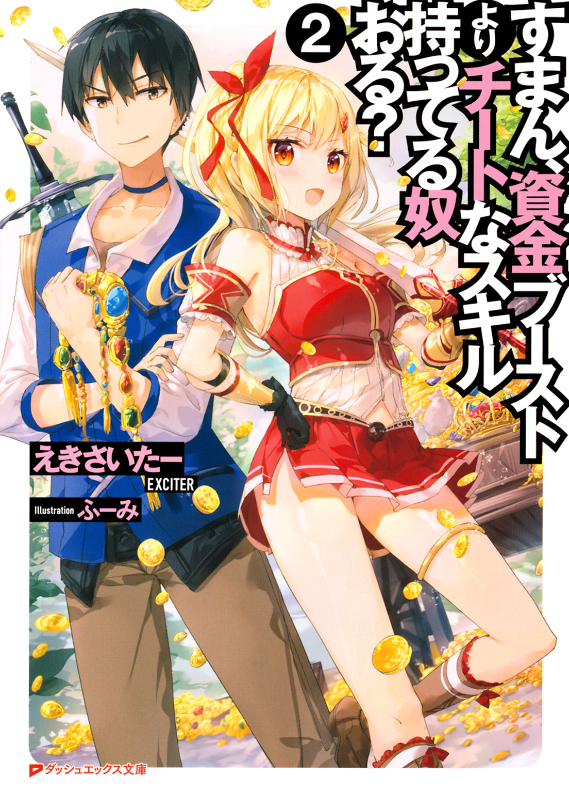
この本は縦書きでレイアウトされています。
また、ご覧になる機種により、表示の差が認められることがあります。
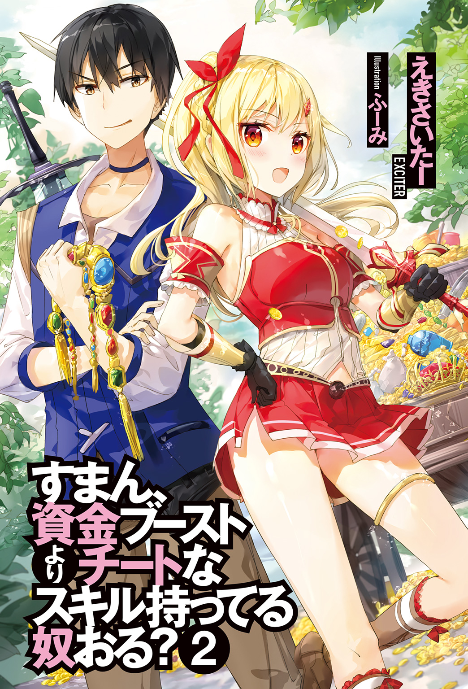
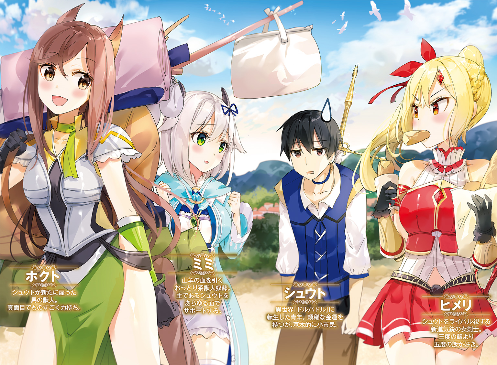
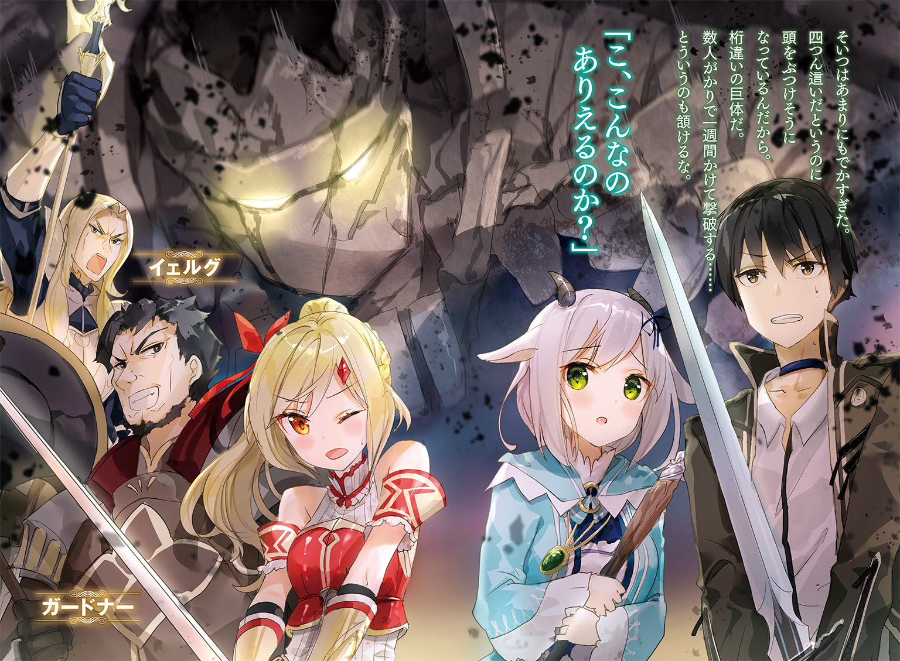
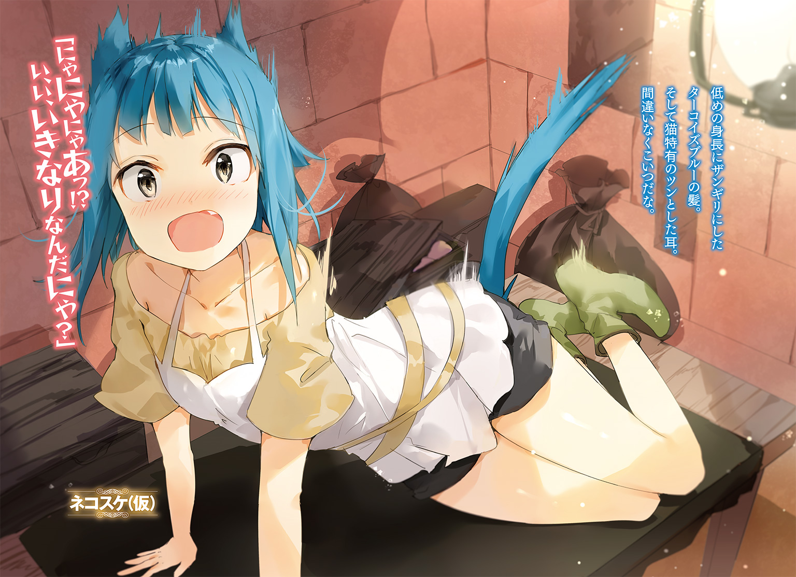
 ダッシュエックス文庫DIGITAL
ダッシュエックス文庫DIGITAL
すまん、資金ブーストよりチートなスキル持ってる奴おる？ ２
えきさいたー
自分が豊かな才能の持ち主でないことくらい、ヒメリ・ラトビアンカは分かっていた。
けれど「天才じゃない」と自覚しているからこそ、幼少期に剣の道を志したその日から今日に至るまで不断の努力を続けられたとも思っている。
努力は必ずしも実を結ぶものではないと、頭のどこかでは分かっていたとしても。
それでも彼女は自らの武芸を磨くことに専心し続けた。
来る日も来る日も剣を振り、疲れ果てて愛器を抱いたまま眠ることさえあった。
だからこそフィーの冒険者ギルドで若手の有望株という評価をもらえた時は、人目もはばからずに飛び上がって喜びたくなるほどに嬉しかったことを覚えている。
......しかしそれも。
ほんの一カ月前、までの話だ。
時刻は深夜。
この日、ヒメリは幾度目かも知らない湖畔探索を行っていた。
月明かりが真っ黒い湖面に落ちる静かな夜だというのに、胸騒ぎが収まらないでいる。
悪い予感というわけではない。むしろヒメリにとっては、この理屈で表せない胸騒ぎこそが湖畔で活動する最大の理由。
こんなドキドキする夜には、追い求めている『アレ』が出てきそうな気がしてくるから。
「魔物の気配かい？」
不意に男の声がかかる。
それは同行している冒険者――ケビンの声だった。
「はい。といっても、はっきりした根拠があるわけではありませんが」
ヒメリは周辺への警戒を緩めずに答える。ケビンは「そうか、だったら俺も注意しとかないとな」と少しルーズな口調で返した。
ケビンはヒメリ以上に湖畔に出向いた回数の多い、レア素材採取で生計を立てている言うなればハンタータイプの冒険者だ。戦闘よりも採取が得意なせいで地味に思われがちな風潮に悩んでいるそうだが、こと湖畔で共に行動するとなると、彼より頼れる人物はそうそういない。
「それにしても、ヒメリちゃんに誘われるとはねぇ。人生悪いことばっかりじゃないな」
「だらしなく鼻の下伸ばしてるんじゃないよ」
後ろから顔を出した、いかにも姉御肌といった風貌の女戦士が、ぽかりと一発、軽くケビンの頭を小突いた。彼女は今回パーティーを組んでいるもう一人の冒険者である。
「それにヒメリはあんたじゃなくて、あんたが頼んでる補給物資をアテにしてるんだよ。つい最近腹を空かしたところを襲われるなんていう情けない出来事があったばかりなんだから、あんたが配達依頼の報酬をケチらないことはバレバレなんだからさ」
「う......忘れたい過去を掘り返すのはやめてくれよ」
ケビンはバツの悪そうな顔を見せた。
その点を微塵も期待していないと言ってしまうと、それは噓になる。ヒメリ自身、この湖畔で食糧が底を尽きて身動きが取れなくなってしまった不名誉な体験を経ているのだから、備えが万全であるのに越したことはない。
ただそれ以上に、湖畔探索に慣れたケビンの手を借りたかったというのが第一理由。
もっとも、女戦士がケビンにちょっかいを出している、その仲がいいのか悪いんだか分からない光景を見る限り、そのことを伝えるタイミングはなさそうだった。
「まっ、どうせそんなことだろうとは思ってたけどさ......あーあ、クソッ、俺だって別に戦闘が苦手ってわけじゃないんだぞ？」
「へえ。だったらアタシもちっとは頼らせてもらうかね」
「任せとけ。こっちにゃシュウトの奴に取り返してもらった剣と盾があるんだからな」
シュウト、という名前をケビンが口に出した瞬間、反射的にヒメリの肩がぴくんと動いた。
その名前をギルドの人間の口から聞いたのはこれで何回目だろう？
自分が意識しすぎているだけかもしれないが、それにしたって頻度が高い。
とはいえ奇妙というわけではなかった。フィーの町の冒険者ギルド内におけるブライテストホープの冠は、今やシュウト・シラサワという青年がほしいままにしているのだから、耳にする機会が多いのには納得するしかないだろう。
以前ギルドマスターのサダから聞いた話では、最初は安っぽい身なりで「仕事が欲しい」とフラリと訪れてきたのが始まりだったそうだが、それがいつの間にやら困難な依頼を相次いで片付け、懸賞金のかかった強大な魔物の数々を討伐し、そしてついには盗賊団の解体さえもやってのけるまでに至っている。
目覚ましい功績だった。
当初は否定的にとらえていたヒメリの目からしても、短期間でこれだけの成果を残されたとなっては認めざるを得ない。
なにより、自分自身が一度少なからず世話になっているわけで――。
「敵襲！ よく見な、こいつは大物だよ！」
湖畔から這いずり出てきた醜悪な魔物を発見した女戦士が、よく通る声で叫んだ。その気骨に満ちた声を聴いたことでヒメリの意識は一気に戦闘モードへと切り替わった。
「あれはっ......！」
ヒメリが自らの目で確かめる。
間違いない。ゲゲナ・ギギエラ。腐乱した胴体が特徴の、カエル型の怪物だ。
湖畔に棲息する魔物の中ではずば抜けて危険とされている、いわゆる要注意指定種。
その並外れた戦闘力は、撃破すれば国から当該地域の安全維持への貢献を称える報奨金が出るということからも伝わるだろう。
ヒメリがこのカエルに酷似した魔物と対峙するのはこれで三度目になる。そしてそれは待ちに待ち焦がれた『三度目のチャンス』でもあった。
一度は敗れ、二度目も自分の力では倒せなかった。
けど、三度目。
すべてを見極めた上での三度目なら。
「防御態勢を取ってください！ 舌を伸ばす攻撃が来ます！」
真っ先にヒメリが飛ばした指示にならって、女戦士とケビンは攻めっ気を一旦放棄して受けに回る。ヒメリの言葉どおり、魔物はぶつぶつとした不気味な舌を鞭のようにしならせながら伸ばしてきた......が、意識の外からの攻撃でない以上、防ぐのは容易い。
「ハッ！」
女戦士は腕に巻きついてきたそれを、造作もなく斬り捨てる。
舌そのものは簡単に再生してしまうが、斬られた刹那の隙まで残さないわけではない。
「よっしゃ、早速こいつをくらわせてやるぜ！ そらよっ！」
その隙を見計らったケビンが、つい数十分前に届いた支援物資の中のひとつ、即効性に優れた回復薬を投げつけた。
薬瓶が砕け、中の液体が散布される。
自然治癒力を爆発的に活性化させる効能を持つその薬品は、はらわたまで腐敗しきったゲゲナ・ギギエラの腹を瞬く間に修復していく。
明瞭な形状すらおぼつかなかったぐっちゃりとした腹部が、ぷくりと丸みを帯びたものへと変わる光景を確認し、ヒメリはすぐさま直感した。
......あの時と同じ！
「行きます！」
呼吸を整え、恐怖心を押し殺し、ヒメリはロングソードを構える。
必要なのは第一歩を踏み出す勇気。それだけだった。踏み出してさえしまえば、あとはなんとでもなった。走り寄ってから剣を振り下ろすまで、淀みのない流れの中で行えた。
あらゆる斬撃を無効化してきた自慢の腹も、ただのヒキガエル並みになってしまっては、鋭く素早いヒメリの剣閃を面と向かって受け止めることは不可能。
胴体が真っ二つに斬り裂かれ、無残に散らばった死骸は幻想的な煙に昇華される。
それは魔物の討伐が完遂したことを紛れもなく告げていた。
「や......やった！」
思わずそんな声と、そして自然な笑みがこぼれてしまった。
だがヒメリは即座に「はっ」と我に返ると、慌てて態度を取り繕いながら魔物が落とした素材アイテムと数枚の金貨を回収する。
「ははあ、なるほど。そういうわけか」
プリンとした肝を空き瓶に詰めるヒメリを見やりながら、うんうん頷くケビン。
「『遭遇次第、一番いい回復薬を投げてください』なんて変な話をしてくるから、どういうことかと思ったが......まさか種明かしがこうとはなぁ。......今更恨みがましいこと言っちゃうけど、高かったんだぞ、あれ」
「す、すみません。懸賞金の配分は私の分を除いてくだされば......」
「ダメダメ、そんな粗末なことやってたんじゃ」
女戦士が人差し指をチッチと振って諭す。
「アタシたちはただ作戦に乗って協力しただけ。ヒメリが発案したことなんだから、ヒメリが一番持っていかないと。あなたも知ってるでしょう。ちゃんと働きに見合った報酬を受け取るのが、仕事に誇りを持つってことよ」
少なくても多くてもね、と女戦士はウィンクして締めくくる。
しかしながら苦笑いするヒメリの表情はどこかぎこちない。
件の魔物を討伐するための策を練ったのは確かに自分だが、一〇〇パーセント自分の手柄かといえば、おそらく違うだろう。前回シュウトが連れていた秀麗な女魔術師の機転を目にしていなかったら、回復薬を使って物理攻撃を通すなんて矛盾しているようにしか思えない作戦を考えつくことは、相当の遠回りを経なければ無理だっただろうから。
それに、シュウトからかけられた言葉のこともある。
やれる範囲でやれ、というアドバイスに従ったことを、ヒメリは事実だと告白しなければならない。前もって戦略を立て、頼りになるパーティーを組み、事前準備として資金を貯めて防具を新調するなど、ベストを尽くしたじっくりとした計画で湖畔の魔物攻略に臨んだのは、ひとえにその忠言があったからだ。あの邂逅がなかったら、凝りもせずに半端な武勇に頼った無茶をして......また失敗していた可能性は否定できない。
そのことがヒメリに若干の歯痒さを残す。
だがそれでも、「懸賞金つきの魔物を倒した」という結果は残った。
結果を成し遂げたのは他の誰でもない自分自身。
そう、これで。
来るべき二十歳の誕生日を前にして。
美少女剣士ヒメリちゃんは、Ｃランク冒険者に到達するために必要なすべての条件を満たしたのだった。
意気揚々、鼻高々。
ギルドに帰還したヒメリの様子を短い言葉で表すのは非常に簡単だった。様々な要因が混ざり合った悶々とした複雑極まりない感情が、野営で一晩明かした頃には難敵を撃破できたことによる喜び一色に染まってしまうあたりが、ヒメリがチョロい娘である所以である。
「ようこそギルドへ、なんて台詞はお前にはいらないな」
建物の戸をくぐってきたヒメリの姿を見つけるなり、受付に立つギルドマスターのサダは親心に満ち溢れた笑みを浮かべる。
「ヒメリ、ただいま戻りました」
「おう、無事に帰ってきてなによりだ。熱い茶でもいれようか？」
「結構です。それよりサダさん、見ていただきたいものが」
ガラス瓶に詰めたピンク色の肝を呈示するヒメリ。
「おっ、こいつはまさか......」
「そのまさかです。昨夜湖近辺に現れたゲゲナ・ギギエラを打ち倒したことを、討伐パーティーの代表として報告しに参りました」
「そうか、ついにやってくれたんだな」
瓶の中身を確かめるサダの笑顔はますます穏やかになっていった。
サダは、ヒメリという冒険者が誰よりも頑張ってきたことを、駆け出しの頃からその目で見てきている。どの依頼をこなすにしても迅速かつ丁寧で、依頼主からの評判も上々。ギルドに登録したばかりの頃は未熟だった剣の腕前も、日に日に上達していることは明らかで、成長した今では仲間内でもトップクラスの実力だと太鼓判を押してやれる。
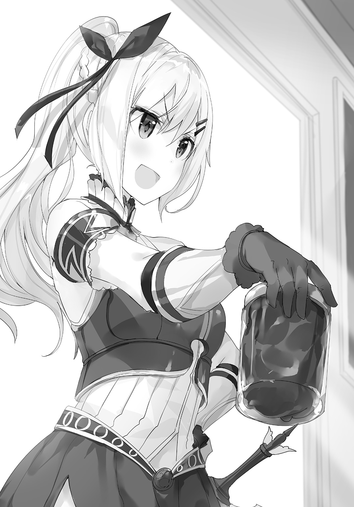
ただひとつ、要注意指定された魔物を討伐したことがないという一点だけがヒメリのＣランクへの昇格を阻んでいたのだが、それもいよいよ終わりを迎えたわけだ。
「これで最後のピースが埋まったかたちだな、ヒメリ」
まだ髪が汚れたままのヒメリの頭に、ポンとぬくもりのある手の平を置く。
「ありがとうございます！」
ヒメリの胸に深い感慨が込み上げてくる。長年世話になったサダが自分のランクをＣに更改している様子を眺めていると、達成感で涙がこぼれてきそうだった。
Ｃランク。通行許可を始めとした様々な恩恵が受けられるようになる、冒険者がまず最初に目指すべき指標にして、大きな大きな一区切り。
ああ、ようやくここまで来られたのか......。
なによりも、自分より前に行ってしまった『あの男』を、形式上とはいえ超えられたことが嬉しくて仕方なかった。
「ふふふ、ついに、ついにシュウトさんを追い抜くことができたのですね」
と、勢い余って何気なく声に漏らしたヒメリだったが。
「シュウト？ ああ、シュウトなら昨日一足先にＣランクに昇格したところだぞ。今頃全国行脚の準備でもしてるんじゃないか」
「......へ？」
ベッドに仰向けになり、天井の板目を俺は意味もなく数えていた。
それほど長く住んだわけじゃない......むしろ短いくらいなのだが、転生以来世話になり続けたこの家ともついにお別れの時が訪れた。狭く、小さく、夜になれば寒くなる欠陥構造気味の貧乏住宅だが、なんだかんだで馴染み深い場所である。
明日の充電が終わったら、いよいよ俺とミミはこの港町を離れる。
気ままに暮らせる、屋敷を建てるにふさわしい土地を探すために。
ついにこの瞬間が来たかという感じだ。期待と不安と昂揚と、らしくもない寂寞とした感情がとめどなく去来して、中々眠りにつけないでいた。
まあ、だからといってこの期に及んで「やっぱやめます」なんて尻込みはしない。
待ってろ最高の立地条件。
「ですがシュウト様」
すぐ隣で（正確には俺の腕の中で）寝転がるミミが、ころんとかわいらしくこちらに寝返りを打つと、いつもの甘い声で言葉添えしてきた。
ふさふさの毛をした山羊の耳が俺の頰を撫で、一糸まとわぬままの乳房が俺の脇腹にダイレクトアタックを決める。
「ミミたちが持っていく荷物は少ないかもしれませんが、道中で獲得したものを積むだけの装置は必携だと思います。荷車や荷馬車を購入されてはいかがですか？」
「あー、それもそうだな」
アイテムにしろ金にしろ、運搬し続けるならそれを載せるための土台がないとな。金は特にこれから増え続けることが予測されるし、装備品にしてもそうだ。
しかしそれだけの荷物を載せた車両を俺とミミで牽引するのはきつい。
どうせ買うなら荷馬車がいいか。
エリザとの一件以降も、細々と報奨金目当ての探索に出かけていたおかげで、我が家の貯蓄も三〇〇万Ｇ以上まで膨らんでいるし、少しくらいなら贅沢できる。これから得られるものの大きさを考えれば安い投資だろう。
「でも馬とか飼育できないし、まともに扱うノウハウも持ってないんだけど」
一瞬で根本的な問題にぶつかる。
うーむ、これはあれしかないな。
馬ではなく、馬の獣人を買おう。
翌日、ミミと一緒に旅で必要となる物資の買い物をあらかた済ませた俺は、夜中に一人奴隷市場へと出向いた。
ままま、そう萎縮するようなことでもないだろう。今回俺が求めているのは純粋な労働力、長旅の負担を軽減してもらうための奴隷であって、そこに他の意図を差し挟む意味はない。実用性、ひいてはコストパフォーマンスを考えて......。
「男女どちらをご希望でしょうか？」
「女で」
でも気づいたらそう返事していた。
展示室に通してもらうまでもなく、俺は奴隷商人にこう伝える。
「馬の獣人を雇いたいんだ。荷物の運搬を手伝ってもらいたいからな」
一番最初にここに来た時に、旅のパートナーに最適と聞いたことを覚えている。
まあ馬力というくらいだしな。
「馬でございますか。それでしたらまだ一人残っております。いや馬の獣人はその高い機能性から人気の種族ですからね」
「予算なら十分あるぞ。即決で買おう」
「心強いお言葉です。では早速、フロントまで連れてきましょうか？」
「おう、頼む」
しばらくして、奥にひっこんでいた奴隷商人がぴしりと立った馬の耳を生やしている獣人を連れて現れた。
「ホクト、こちらがお前の主人となるお方だ。ご挨拶しておきなさい」
ホクトと呼ばれた獣人は、背の高い女だった。
具体的にいうと俺よりでかい。
獣人の例によって容姿も美しいが、なんかこう、それ以上にオトコマエって感じがする。
凜とした表情が印象的な、とても勇ましい顔つきで精悍さを感じさせる。が、髪の色はライトブラウンで女子力が高い。なるほどこれは栗毛だな。
髪よりもやや濃い茶色の瞳が俺のほうを向く。
そして、すたんとひざまずいた。
「紹介にあずかったホクトであります！ これより我が主のために、誠心誠意努力していく所存であります！」
な、なんか堅苦しいな。やる気に満ち溢れているのは嬉しいけども。
「ホクトはしなやかな筋肉と優れた体力の持ち主です。多くの荷物を運び、お客様の順風満帆な旅を約束するでしょう」
ふむふむ、言われてみれば着衣越しにも引き締まった身体をしているのが分かる。その分胸は控えめなのだがそれはそれで嫌いではない。
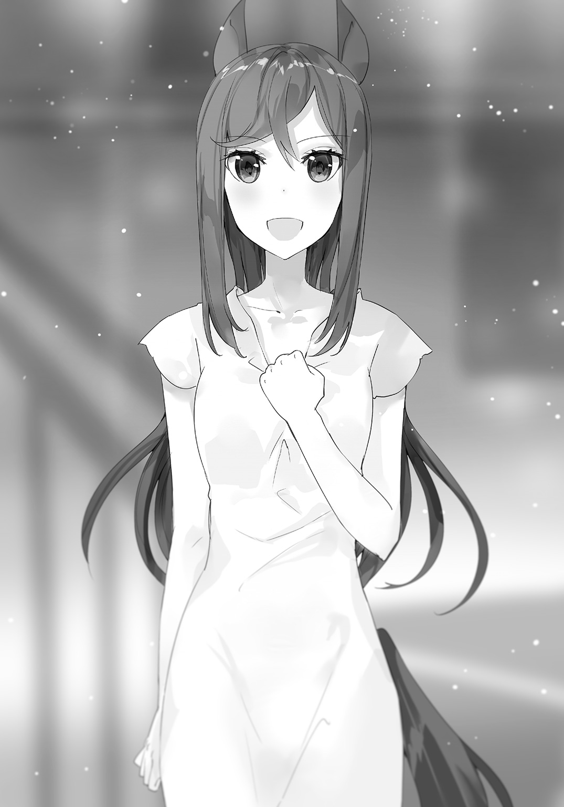
「いい子だな」
いろんな意味で。
まあでもこの実直な性格だとミミみたいにはいかないだろうな。女の奴隷を望んだのは単純に旅の彩りにもなってほしかったってだけだし、そういう下心は一旦どっかにやっておこう。
「本来一六五万Ｇの値をつけておりますが、お客様の門出を祝して一六○万Ｇでの提供とさせていただきます」
こいつ毎回割引してんな。
パンパンに膨らんだ布袋から金貨をすくい上げ、ジャストの額を支払う。
これで売買契約は成立。ホクトが俺の配下に加わった。
「シュウトだ。今日からよろしくな」
「はっ！ よろしくであります！」
ホクトを連れて外へ。
自宅へと続く、静まり返った夜道を歩く。
それにしてもホクトの所作はいちいち颯爽としていて、何気なく歩く姿すら見栄えがいい。そしてなにより表情が晴れやかだ。衣服はまだみすぼらしいままだが、誇らしげですらある。
なぜそんなにやる気をみなぎらせているのか尋ねてみたところ。
「自分はずっと檻からの脱出を――ひいては仕えるべき主人を待ち続けていましたから。こうして近衛を任されたからには全力を尽くすのみであります！」
と、これまた熱を帯びた口調で返された。
頼もしい話である。これは『アタリ』を引いたと見て間違いない。
「早速だが、明日はお前に引いてもらう荷馬車を買いに行くからな。今日買っても俺のちっこい家に置くスペースなんてないし。それが済んだら、この町を離れる。長い旅になると思うから頼りにさせてもらうぜ」
「拝承しました。本日は旅立ちに備え、しっかりと鋭気を養わせていただくであります」
うーむ、こうして慇懃な口調のホクトと会話していると、自分が責任ある立場の人間になったかのように錯覚してしまうな。
それにしてもホクトはスタイルがいい。筋肉質な上に手足も長い。
戦闘要員として雇ったわけじゃないが、これなら武器を持たせてもいい線いくんじゃなかろうか。多分だけど鎧も装備できそうだし。
俺が使っていて不要になったものはホクトに渡していくとするか。
そんな計画を立てながら帰宅し、先輩であるミミに会わせる。
「わあ、とても格好いいお方ですね」
ミミはホクトの風貌を見るなりそう呟いた。
「ミミといいます。今日からよろしくお願いしますね」
「これはこれは、自分なぞにはもったいない丁寧な挨拶を。おっと紹介が遅れましたな。我が名はホクト。共に主殿を盛り立てていきましょうぞ！」
真面目すぎるきらいはあるが、案外コミュ力が高いほうだな、ホクトは。
もし、奴隷二人のソリが合わなかったらどうしたもんかと内心案じていたのだが、杞憂だったか。
「さあ主殿。明日からの旅路に備えて休みましょうぞ。今日の睡眠は明日の精気。よき眠りがよき一日を作るのであります」
今日はもうやるべきこともないし、そうするとしよう。
「あー、でも、ホクトの寝る場所がないな......」
「いえいえ、お気遣いなく。自分には毛布さえ恵んでいただければ、それで充分すぎるほどでありますよ」
ホクトがそう言うので、探索に出る時に使っている毛布を渡す。どうやら床で寝るらしい。
木板の床に寝転がるホクトを見てると、なんかめちゃくちゃ申し訳ない気分になるな。今日一日だけ我慢してもらうか。泊まる宿は大きめの部屋を取らないと......。
「む、主殿はミミ殿と同じベッドで寝るのでありますか？」
「そうだけど」
いつものように一つの布団に入る俺とミミの様子を眺めたホクトは、なにやらぽかんとした表情をして、それから慌てふためき始めた。
「い、いえ、これは失礼つかまつりました。自分は石になっておくであります...」
と言って、毛布に包まって背中を向けるホクト。一瞬覗いた顔は赤くなっていたように思える。
「......ええと、今日はなしで」
気まずくなった俺はミミにそう小声で伝える。
「分かりました。それでは、シュウト様、おやすみなさい」
ミミが俺の肩だけを抱いて眠りにつく。
これは頻度を下げざるを得ないな。
悶々としながら寝た翌朝。
「や、これは快晴でありますな！ 出立の日にふさわしい天候であります！」
自宅を出た途端にホクトがそう快哉を叫ぶくらい、雲ひとつない晴れ模様だった。俺は日光を浴びても大して元気にならないタイプだが、ミミとホクトはどちらも気持ちよさそうにしている。
まず向かった先は各種牽引車を販売している業者の店だ。
町の南端にあるそこには木製車両がズラッと並べられている。管理しているおっさんのところに、俺は商談を持ちかけに行く。
「荷馬車を買いたいんだ。これから旅に出るんだよ」
「軽々と口にするがな、馬は維持が大変なんだぞ？ それよりは人の力で引っ張れる荷車のほうが......」
「いや、馬っていうかこいつが引く」
俺はかたわらに立つホクトを指差した。ホクトは表情、というか眉をより一層キリリとさせ、俺とおっさんの両方に気力のみなぎりをアピールする。
「獣人か......本物の馬よりは劣るが、それなら荷馬車を引けなくはないな」
「そんじゃ、ちょうどいいのを売ってくれ。見た目は気にしないぞ」
おっさんに選んでもらった荷馬車は数ある中でも一番小ぶりなものだった。小さい、といってもそれは馬で引く場合を基準にしただけで、フルに積んだ状態のこれを人間一人が引っ張るにはかなり厳しい。
ホロとそれをかけるための柱がついており、雨風にも耐えられる仕様になっている。
「言っておくけど、積載重量に余裕があるからって荷台には乗らないほうがいいぞ。野盗に遭ったら対応が遅れるからな。最低一人は護衛役としてついたほうがいい」
「む......じゃあ少なくとも俺はちゃんと歩くしかないか」
後方支援が主な役割のミミではダメだろうから、剣を武器にした誰かが前に出ていないとならない。
かといってホクトに武装させるのは一人で背負いこむ仕事量が多すぎる。
しんどいが、仕方ねぇな。また気を抜いて下手こくわけにもいかないし。
他にも荷馬車の使い方を簡単に教わった後、俺は料金の九万と三〇〇〇Ｇを払って出発前最後の買い物を終えた。
一度自宅に戻って荷物を積みこむ。
金と食料はもちろんのこと、溜まっている未使用素材やら探索用アイテムなんかも。
家具類はすべてそのままにした。しばらく家は空けるだけで売却するわけじゃないしな。ベッドがあれば野宿で便利だろうけど、さすがにかさばりすぎだわ。
「で、問題はこいつだな......」
俺はツヴァイハンダーを手に取り、悩む。
これを背負い続けて長距離を歩くのは正直辛い。
一般道には魔物は出てこないし、移動中は武器なんか積んでおけばいいじゃんと考えていたが、そうもいかないらしい。規則があるから同業者に襲われることはなくても、野盗に対する自衛手段は常に用意しておく必要がある。
となれば、あいつの出番だな。
「頼むぜ、久しぶりによ」
俺は護身用としてカットラスを腰に差すことに決めた。
うわ、軽っ。
数週間ぶりだからか、感動するな、この軽さは。
威力はツヴァイハンダーには負けるが、遠距離攻撃もできることだし、魔物相手でなければまだまだ現役でやっていけるだろう。
ツヴァイハンダーは荷台の前方に載せておき、キツそうなら機を見て持ち替えるとするか。
「んじゃ、行くかー」
もうちょいこの部屋でダラダラ過ごしたかったという気持ちもなくはない、というか相当あるのだが、引っ越しを決めたからには実行しないとな。
それに大した娯楽もなく過ごすよりは、旅でもしてたほうがマシだろう。
狭い家より広い屋敷。その目標と共に俺はミミとホクトを連れ、自宅を後にした。
日が高くなるにつれて活気づき始めた町中を歩く、俺と二人。
「ホクト、引いてみた感じはどうだ？」
「問題ないであります！ これはいい車輪を用いてありますな、実にスムーズであります」
荷馬車を引くホクトにはまだまだ余裕がある。実際、そんなに量積んでないしな。今後旅の中でどんどん荷物が増えていくんだろうけど。
まずは通行証をもらいに斡旋所へ。ミミとホクトには外で待機してもらう。
室内にはあまり人がいなかった。それなりに関わりのあったヒメリがいれば軽く挨拶でもしていくかと思ったが、不在なら仕方ないな。
「待っていたぜ。ほら、もう作っておいてやったよ」
仕事が速いな。俺は完成済みの通行証をおっさんから受け取る。
カード状のそれには、俺の名前、所属、冒険者ランク、発行日付、そしておっさんのサインが入っている。
「お前もサインしておけ。筆跡で本人確認するからな」
当たり前だがＩＣチップみたいなハイテクはないらしい。その代わり、筆跡鑑定は魔法を用いて完璧な精度で行えるそうだ。
指示通り俺もサインを書きこむ。
「そいつはよそのギルドを訪ねた時、お前のランクを証明する手立てにもなるからな。今までは俺がお前の情報を管理してやったが、これからは自力でやるんだぞ。他の町の冒険者ギルドとのネットワークだって完璧じゃないんだからな」
「了解。覚えとくよ」
まあ、聞かれたら見せりゃいいだけだし。
「そういやこれ、更新って必要なのか？ あとなくした時の再発行とかも」
「ランクが変動した時は新たに発行する必要があるが、そうでない場合は基本的に永続利用できる。それと、再発行は可能だ。近場のギルドで申請すればいい」
すげー。運転免許よりストレスフリーな身分証明書じゃん。
「だからって適当に扱うなよ。紛失したら信用が下がるからな。そうなればせっかく上げたランクも降格しかねないし、再発行までかなりの時間を要することになるぞ」
う、それは嫌だな......。見知らぬ土地でＤに落とされて、そこでまた名声稼ぎに走らないとならないとか最悪すぎる。
「分かった。大事にしとくわ」
「それと、こいつもだな」
おっさんが取り出したのは、大陸全土を記してある地図。もうちょい縮尺考えとけよって言いたくなるくらい、広げるとかなりのサイズになる。
「海を渡れば王都のある大陸まで行けるが、まあそれはまだ考えるようなことじゃないだろう」
「え、こっち側にはないのかよ」
正直、真っ先に行きたい町だったのだが。
「ってか、ここ港あったよな。船でさっさと行ってやろうか......」
「そう焦るな。どうせ全部の土地を回るつもりなんだろ」
「まあな」
「それならまず西に行け。湖畔よりも更に先にだ。そこにある検問を抜けたら、アセルという町が見えてくる。俺たちの町フィーから一番近くにあるのはそこだから、まずはそこから訪れるといい」
「ふーん。じゃあそうするよ」
「おう。で、それからだな」
おっさんがなにやら改まった顔つきをする。
「お前が田舎者だと思われないために、ひとつアドバイスをしてやろう」
「なんだ？」
「こういった施設は、ちゃんと正式にギルドと呼べ」
「そんなことかよ。いや、俺にも言い慣れた呼び方があってだな」
「ダメだ。ギルドだ」
「......じゃあ職安は」
「ギルドだ」
このままだといつまで経っても出発できそうにないので、やむなく呼称を改めた。
俺はおっさんに「じゃあな」と手を振り、あっせ......ギルドの玄関を抜ける。
それにしても、随分と世話になったな、この場所には。
なんだかんだで寂しさはなくもない。
けれどまたここに来るかどうかは、ちょっと今の段階じゃ分からないな。
「行こうぜ」
荷馬車の前で待ってもらっていた二人と合流し、いよいよ町の外へ。
「ついにですね。ミミはどきどきしています」
「だな」
平原を横断するこの一般道自体は過去にも通ったことがあるのだが、旅立ちとなるとやはり特別な感慨がある。
......と気取りたいところだったが、すぐに見知った顔を目撃してしまった。
「ようやく来ましたね」
フフンという微妙にイラッとする表情をして待ち構えていたのは、ヒメリだった。
ブロンドの髪はそのままだが、まとっている鎧が真紅のものに変わっている。
「......というか、また女の人が増えてません？」
荷馬車を引くホクトを眺めながら呆気に取られるヒメリ。
「装備品といい、この人たちといい......シュウトさん、あなた一体どれだけ裕福なんですか？」
「黙っていたが、俺は大富豪だったんだよ。荷物もほとんど金だから漁るなよ」
町も離れたとこなので、適当にフカしておく。
どうせこれからはナチュラル金持ち設定で押し通す予定だし。
「むむ、主殿のご友人でありましたか。自分は運搬作業を請け負っております、ホクトという者であります」
「ホクトさんですね。覚えました。ですがひとつ、訂正があります。私たちは友人などではありません。あえて語るなら......そう、宿敵とでも申しましょうか」
「おお、それはなにやらただならぬ因縁がありそうでありますな」
大してねぇよ。勝手に話広げるなっての。
「それにしても、こんな真面目そうな方にまで......ど、どこまでもハレンチな！」
「だからなにを想像してるんだよ。全然違うぞ」
これはマジなのできちんと弁明しておく。
「それよりだ、なんでこんなところにお前がいるんだよ」
また湖畔に行く途中か？ と続けようとした矢先、ヒメリが何かを突き出してきた。
個人情報とギルドの許可が記されたカード......通行証だ。
「私、昨日ついにＣランクに昇格したんですよ！ 長い道のりでした。コツコツと依頼達成を積み重ね、装備を新調し、賞金首を苦難の末に撃破して......」
「おっ、ついにやったのか」
「そうです。そのために何度も湖畔まで遠征しましたからね。その結果がこれです！」
またしても自慢げに通行証をかざされる。
手練の剣士であるヒメリは俺が登録されるまでは一番の若手有望株だったらしいから、別にＣランクになってもおかしいことではないが。
「そんなドヤられてもなぁ。俺も一昨日昇格して、さっき通行証もらってきたし」
「そう、それです！」
ヒメリはビシッと俺の鼻先に向けて人差し指を突き出した。
「昨日サダさんからお話をうかがいました。それはもう震え上がるほどのショックでしたよ。タッチの差で今回もまた一歩先を行かれてしまったんですからね」
「うん」
適当な姿勢と態度で聞く俺。
「あなたを超えるためにはあなたの足跡を追わなければなりません。常に情勢を知っておく必要があります。ということで、シュウトさん、私もあなたの旅についていかせていただきます」
「はあ？」
俺は唐突な申し出に口をあんぐりと開けてしまった。
「勘違いしないでください。パーティーを組むというわけではありません。私は私自身の手で功績を重ねなければいけないのですから」
「ん？ じゃあ探索はバラバラでいいのか？」
「いかにもです。ただ、シュウトさんと同じルート、同じスケジュールで移動をするというだけです。これは私にとっての修行の旅。現地に着いたら別々に行動しましょう」
要は道中だけご一緒させてくれ、ってことらしい。
「そんな話を急にされてもな......」
口ではそう言ったが、冷静になって考えてみるとだ。
こいつもなんだかんだでＣランクまで来たってことは、かなり腕を上げているはず。カットラス装備状態の俺程度と考えたら、移動中の戦闘は十二分に任せられる。多くの金を運ぶことになるんだし、強盗から身を守る戦力は多いに越したことはない。
ポイントポイントを結ぶ道には魔物は出てこないから、俺の隠し通しているスキルが発覚する恐れがないのも好都合。
うむむ、これは利点も多いな。
俺よりはヒメリのほうがこの世界についての知識も豊富だろうし。
一度ミミとホクトにアイコンタクトを取ってみる。二人とも特に拒否は示していない。
じゃあ、いいか。
「分かったよ。別に人数が多いことで損はしないしな。むしろ俺の負担が減るから得だ」
「その返事を待っていました」
「ただしお前の分の食費は一銭も出さんぞ」
「う。わ、分かってますよ」
密かに期待していたような顔をしている。こいつの考えていることは本当に分かりやすい。
俺はアセルという町を目指していることを伝え、ヒメリを一行に加えた。
「まさかとは思うが」
「なんでしょう」
「勢いで『私も旅に出る！』っておっさんに言っちゃったけど、心細くなったとかじゃないだろうな」
「ハハハ、私に限ってまさか」
ギクシャクした笑い方だった。表情が左右非対称になっている。
ま、深くはツッコまないでおいてやるか。
「華やかな旅になりそうですね」
検問へと続く道を並んで歩きながら、ミミがどこか楽しそうに言った。
検問所までは、およそ十時間というふざけた行程の歩き詰めを要した。
旅に出たばかりだというのに、早くもクタクタだ。足が棒になっている。なんとか辿り着けはしたものの、特に体力自慢というわけじゃない俺には相当堪えた。
「やっとか......マジで長かった」
この疲労感が今後の日常になってくるんだというから大陸横断の旅も楽じゃない。
積んでいたワインを一瓶つかんでラッパ飲みし、渇いた喉に潤いを与える。
ミミもかなり疲れているようで、泣き言こそ口にしないものの、ホロをかぶせた荷台に寄りかかっている。
「自分はまだまだ元気いっぱいでありますぞ！」
一方でホクトはピンピンしていた。荷馬車を引いていたから一番負担が大きかったはずなんだが、さすがは馬の遺伝子か。
しかし『検問』というから関所みたいなものがポンと置かれているだけかと思っていたが、休憩用の小屋があったり荷車の停車場があったりテントの設営場があったりで、一種の拠点のようになっていたのは意外だった。
なんていうかキャンプ場っぽい。
俺たち以外にも多くの冒険者と思しき連中が集まっていて、やれアルコールだの焚き火で炙った厚切りのハムだのでやかましく過ごしている。
焚き火の他にも大量のランプが吊られているから、夜にもかかわらず割と明るい。
ヒメリが解説してくる。
「ここ以外にも、冒険者たちの寄り合いになるポイントは街道にいくつも設けられていますからね。夜間の野営はこういった場所で行うのがセオリーです」
「ふーん」
同業者同士で自衛しあうことで夜間に強盗に遭うリスクを減らしてるんだろう。
「で、どうします？ アセルまでは地図によれば、あと二十キロほどですが」
「いや、もうバテたから小休止で」
とりあえず俺は荷馬車を止め、ここで一泊することにした。
「当たり前ですがテントは別ですよ。私は狼と眠るほど警戒心が薄くはありませんので！」
襲わねぇっての。
お天道様がギンギラと空で暴れ始めた朝、いよいよ検問のゲートをくぐる。
「身元を明かせ」
鎧で着飾った兵士っぽい奴が、めっちゃ威圧的に身分証の呈示を求めてくる。
まあおとなしく出せば済むことなので、俺はギルド発行の通行証を一時的に渡し、それから分厚い帳簿にサインをした。
「ふむ、筆跡に問題はなし。Ｃランク、所属はフィーのギルド、か。称号は『ネゴシ......」
「そんなのは読み上げんでいいぞ」
「後ろの三人は？」
「俺の召使いだ」
「私は違いますよ！」
通行証を持った手をぶんぶん振って否定するヒメリ。
「まあ、耳で奴隷だとは分かったがな。どれ、そっちの女は......こっちも問題なしか。うむ、全員通ってよし！」
チェックポイントをクリアーした俺たちは、いざアセルへ。
海辺からかなり離れた地域まで来たから景色が新鮮だ。山が多く、あと気候も涼しい。
アセルには大体四時間くらいで到着した。
数基の巨大な風車が建てられていて、のどかな田舎町といった情緒がある。
「ようやく着きましたね。それでは約束どおり一旦解散しましょう。私は自由行動を取らせていただきます、後日落ち合いましょう」
そう言ってヒメリは町の中をダッシュで駆け抜けていった。
あの感じは、飯を食いに行ったな。
「シュウト様、いかがなされますか」
「そうだな......まずは宿を探すか。足痛いし」
適当にぶらつく。冒険者ギルドを持つ宿場町なだけあって、選択肢は多い。
駐車場がついててオンボロでなければどこでもいいので、まあまあ外観の小綺麗な宿に目をつける。ミミとホクトに荷馬車の見張りを頼んでおき、ロビーへ。
おっさんではなく、白髪のジイさんが受付に立っていた。
接客がおっさんじゃないというだけで新鮮に感じてしまうんだから、俺は毒されている。
「何名様でしょうか？」
「三人だ。男一人の女二人」
「部屋割りはいかがなさいます？」
「一部屋でよろしく......と思ったけど、三人部屋ってあんの？」
さすがに宿でまでホクトを床に寝転がせるわけにはいかない。
「三階にございますよ。一泊一八〇〇Ｇになりますが」
「それじゃ、とりあえず一週間分払っておくよ。しばらく厄介になるぜ」
というわけでこの町における拠点が決定。
荷馬車を繫ぎ、部屋まで中の積荷を運びこむ。
またこの作業がクソめんどい。とはいえ置きっ放しは盗まれかねないためやむなし。
「お、結構いい部屋じゃん」
内装はシンプルだが、広々としたゆとりの空間だ。女神にもらった家を軽く超えているので上等も上等すぎる。って低いハードルだな。
「し、しかし主殿、ベッドが三つもありますぞ」
ところがホクトはそわそわと落ち着かない様子でいる。
「三人いるんだから三つだろ」
「自分は毛布があればそれで十分であります。主殿の家計の重荷になるのは......」
「気にすんなよ。俺、金だけはあるし。ていうか俺らの中だとダントツでホクトが疲れてるんだから、ゆっくりしときな」
「誠にありがたきお言葉なのですが、それなら二つでも......その......」
「え？」
「い、いや、なんでもないであります」
ホクトは顔を赤らめてしまった。で、そのままベッドにダイブして枕に顔をうずめる。
その際めくれあがったチュニックの裾から太ももがのぞいたのだが、競輪選手並みに立派だった。脚の筋肉が半端ではない。
俺もちょっとベッドの具合を味見してみるか。寝心地が一番重要だし。
「お、おおほお......」
感動のあまりふぬけた声を漏らしてしまった。
すげー柔らかい。いかに自宅のベッドが安物だったか分かるな。まあ転生する前は万年床な上にペラッペラの煎餅布団だったのでそれ以下だったんだが。
「これはダメになってしまうわ......体も疲れ切ってるし。なあ、二人とも、頑張るのは明日からにしようぜ」
結局俺はこの日、夕食以外で外出しなかった。
あ、飯自体はうまかったです。
そして翌日。
俺とミミは装備を整え、探索の準備を進めていた。
滞在費用を捻出するだけならおそらく一時間もあれば足りるだろうが、貯金残高を増やそうと思ったらひたすら魔物を狩り続けなければならない。
目標はとりあえず一日平均五〇万Ｇ。
まずは手頃な狩り場を教えてもらいにギルドまで足を運ぶか。
「そうだ、ホクト」
「なんでありましょう？」
「お前ってさ、武器とかに興味あったりする？」
ホクトは道中の荷物の運搬を目当てに雇った奴隷だが、探索中の戦力にもなってくれるなら非常に助かる。こいつがいれば撃破報奨も持ち運びやすくなるしな。
「興味、でありますか。主殿をお守りするために、いずれは武芸も会得していきたいとは思っておりますが......恥ずかしながら経験はまだありません」
「んじゃ、ちょっと一回試してみてくれよ」
俺はサブ武器のカットラスをホクトへと放り投げる。
「室内で剣を振り回しても構わぬのでありますか？」
キャッチしたホクトは周囲にスペースがあることを確認した上で、少し遠慮がちに言う。
「大丈夫だよ、鞘はめたままだから」
「では、僭越ながら......不肖ホクト、生涯初の剣技を主殿に披露させていただきます！」
真剣な眼差しをするホクト。めっちゃイケメンだ。
剣に限らず武器を握ったのは今日が初めてらしいが、まあでもこの恵まれた体格だしそんなおかしなことには......。
「であっ！」
へにゃっ。
......ん？
なんだ今の情けない効果音は。音響担当が間違えたのか。
もう一度ホクトがカットラスを振る。
へにゃっ。
またか。そこは普通「ブン！」だろ。
いや一応ブンブン鳴ってはいるんだけど、絵的に似合いそうな効果音となると「へにゃっ」になってしまう。
というのも、あまりにホクトの剣の素振りがへなちょこすぎるからである。腰が入ってなさすぎて、俺の脳内で勝手に「へにゃっ」に変換されていた。
転生直後の頃の俺でももうちょいマシだったぞ。
せっかくのイケ馬なのに駄馬に見えてしまうから恐ろしい。隣にいるミミもなんとも言えない微妙極まりない表情を浮かべている。
当の本人もセンスのなさを自覚しているらしく。
「うう、自分は役立たずであります！ 主殿の矛となることも満足にできないとは......！」
「そう落ちこむなって......しばらくそのカットラス貸しておくからさ」
嘆き悲しむホクトになぐさめの言葉をかける俺。
この感じだと戦わせるのは、もう少し練習させてからにしたほうがいいな。
とはいえ現状ホクトが着用できる防具はない。なんの装備もなしに探索に向かわせるわけにもいかないので、かわいそうだが留守番を命じた。
俺とミミの二人で出発する。
帰りにホクト用の鎧でも買っておくか......。
だがまずはこの町の冒険者ギルドの確認が先決。
通りすがった住民に聞いたところ、ギルドは町の南端にあるらしい。ミミと歩調を合わせてその地区に向かう。
しかしまあこの町はいいところだな。
四方に山があるからか空気が澄んでいて気分がいい。
風車の下には広大な小麦畑が広がっている。昨日飯屋で出された焼き立てのパンがやけにうまかったが、名産と見て間違いないだろう。
おまけに物価も安いときた。
どうせ住むなら都会だろと考えていたが、まったりとした田舎も悪くない。
「ミミはこの町がとてもとても好きになりました」
ミミは機嫌よく真っ白な耳を上下にぴこぴこ動かしている。変化の少ない顔よりも耳を見ていたほうが感情の動きが分かりやすい。
うむ、有力な候補地だな。
それなりに町を眺めてからギルドへ。
中は妙にすいていた。ポツポツと冒険者っぽい服装の奴がいるだけだ。
ラウンジの一角にミミを座らせ、受付に行く。
「風の町アセルのギルドへようこそ」
ガタイのいいおっさんがいた。この町におけるサダ的な存在だろう。
「おや、見ない顔だが......」
「ああ、こういうもんだ」
俺は通行証を見せて身分を明かす。
「ということは......しばらくこの町に留まるのか」
おっさんはなぜか残念そうに眉尻を下げる。
「依頼の受注だな。ちょっと待っていてくれよ」
「いや、俺は依頼には興味がない。そんなのより魔物が湧くスポットを教えてくれ」
一覧表を取り出したおっさんにそう伝える。
「ん、違うのか。それはよかった......ああいや、なんでもない。魔物だったら大抵の山には棲息しているぞ。Ｃランク向けとなると、ここから北側に行ったところにある山道なんかが......」
おっさんが喋っている間に、ふと求人広告が見えてしまった。
収穫の手伝い、馬車の荷降ろし、公共設備の点検......。
「なんだこりゃ。ロクな依頼がねぇな」
到底冒険者らしくない、言うなればバイトみたいな仕事しかない。
一応採取や採掘の依頼も出ているものの、いずれも悲しくなるくらい薄給だ。
「ひどい有様だろう？」
自嘲気味に力なく笑うおっさん。
「なんでこんな微妙な依頼しかないんだよ。採取にしたって普通もっと給料はもらえるぞ」
「商業ギルドの人間が絡んでない委託業務は報酬がグッと下がるからな。レア物なら話は別だが、どれもありふれた品ばかりの募集だし」
依頼者の欄を見てみると、なるほど、個人名ばかりである。
ふむ、これはフリマやネットオークションの取引額が低水準なのと同じ理屈だな。
多分。
「でもさ、商店が出してる依頼だってあるんじゃないのか？」
「あるにはあるが、残ってないんだ。まともな依頼はよそから来た人間に取られていくからな......。彼らのほうが実力もあるし、依頼人にとっちゃ安心なんだろうが」
なんでも長いこと居着いている冒険者パーティーがいるらしく、目ぼしい仕事はそいつらが独占しているとのこと。
「依頼の掲示は日に二回更新してるんだが、新しくなるたびに根こそぎ持っていかれるよ。ルールを破ってるわけじゃないから文句もつけられないしな」
まあアウトなことはやってないからな、それ。
「朝イチで並べよ。早い者勝ちじゃん」
「無茶言うなって。アセル生まれの冒険者であいつらに意見できる奴なんていやしないぜ」
「んなアホな。何人かは強い奴もいるんじゃ」
「この田舎だぞ？ Ｃランクになった瞬間出ていったに決まってるじゃないか」
まるで地方の過疎化が進む現代社会のようだな。切ない。
「といってもそれは嬉しいことでもあるんだけどな。なにせ最近は、Ｃランクに上がれそうな奴が出てくる気配もないからなぁ」
「よくそれで治安が保ててるな」
「この町は犯罪率が国内でぶっちぎりの低さだからな。自警団だけでも安全なのさ」
確かに俺が接した町民たちは皆おおらかな人柄だったし、平和なのは間違いないだろう。
「だからって仕事にありつけないのはきついな」
「本当はうちのギルドに登録してる奴らにも外の仕事が行き渡るようにしてやりたいんだけどな。おかげでいつまで経ってもランクが上がらないし、魔物と戦う機会が得られないから成長もしない」
地元の冒険者が育たないことをおっさんは嘆く。
Ｃランクに上がれる奴が久しく出ていない、というのはこれが理由か。
「近隣には銅と鉄しか採れないとはいえ鉱山もあるし、山林にはいい服の素材になる植物がたくさん生えてるんだがなぁ......この状況じゃうちのギルドメンバーで行く奴はいないよ。身入りが少ないのを覚悟で鉱山や山林に通う奴もいることはいるけど、当然それだけで食ってけるほどの稼ぎにはならない」
そういえば魔物って本来大して金落とさないんだったな。
スキルの効果で常時フィーバーしまくってるから感覚麻痺してたけど。
「どんだけ労働してもロクな金にならないとか最悪だな」
「そうなんだよ......だからって冒険者稼業を引退したところで他に仕事のアテもないし、無計画に辞めるわけにはいかないしな。俺としても胸が痛くなるよ」
なんか普通に気の毒になってきた。転生前の自分とかぶる。あの時代の俺を一言で表すならワーキングプアだからな。働けど働けどってやつだ。
こういう話には無性にシンパシーを覚えてしまう。
「よし、だったら俺が求人を出すか」
俺はおっさんにそう提案した。
「はぁ？ お前がか？」
「そんでランク制限をつけよう。Ｄ以下しか受けられなくすればいい。そうすりゃ通行証持ってやってきてる連中に取られることもない」
そう話すと、おっさんは複雑な表情を浮かべた。
俺の申し出を喜ばしく思うかたわら、その必然性に疑念があるらしい。
「だがな、シュウト......だったか。ランク制限ってのは通常『以上』で設けるもんなんだぞ？ 危険や難易度に応じてな。『以下』なんてなんのメリットもない。応募の幅は狭まるのに、腕の未熟な者が受ける確率だけが上がってしまう」
「いや別に成功する、しないが目的じゃないし。慈善事業みたいなものだと思ってくれ」
人のために金を使うなんて体調を崩すレベルで嫌いだが、どうにも他人の気がしない。
それに将来ここに住むかもしれないんだし、あんまり寂れられても困る。
「鉄鉱石、銅鉱石、薬草、香り花、木材、これだけ募集......っと」
俺は収集系の依頼をシュウト名義で大量に出した。
出費は締めて二万Ｇくらい。強めの魔物一匹分と考えたら余裕だな。
ぶっちゃけると集まった素材の使い道はないのだが、次の町に移った時にでも売り飛ばせばいいか。物価の安いここよりはまだマシな価格で売れるだろう。
「じゃあこれを掲示しておくが......本当にいいのか？」
「いいよ。全部相場前後の金額にしてあるからどっちが特別得するとかもないだろ。俺は採取の手間が省ける、他の奴らは仕事がもらえる。イーブンじゃないか」
「とはいえ、弾みでこれだけ悠々と報酬を出せるとは......」
「俺は金持ちなんだ」
それだけ言い置いて俺はミミに声をかけ、おっさんとの会話の中で聞いた山道を目指すことにした。
およそ二時間ほどで山道の入り口には到着した。
道の両端は木ばかりだ。葉がほのかに色づいていて、郷愁を誘われる。
緩やかな傾斜のそこは登頂に六時間はかかる......と、立て看板に書いてあるが。
「しんどすぎるわ」
俺は別にハイキングをしに来たわけではない。当然頂上まで行くつもりもないので、ダラダラと中腹くらいまでを目指す。
にしても、風が強い。ミミが手にしている魔術書のページがバタバタとめくれている。
「ん、その本は......」
ミミが持っている書物には『初級促進のグリモワール』とある。これは最初の二冊の後から追加で購入したものだが。
「回復と攻撃の魔法は身につけられました。こちらも、もう少しで覚えられると思います」
「早いな。最初の魔術書はかなり時間かかったのに」
「一冊理解すると、コツ、というんでしょうか。要領が分かってきたんです」
ほう。どうやら魔術書は読破すればするほど魔法の基礎力が高まるらしい。
ミミは暇さえあれば本を開くほど勉強熱心なので、これからも定期的に買い与えていくか。
いやいや、それよりだ。魔術書なしで魔法を使えるようになったということは、そろそろ杖を作る頃合いではなかろうか。
アセルにいる間にでも仕立ててみるか。
「む」
山道を進む俺たちの前に、ガサガサと音を立てて木陰から何者かが出現する。
入り組んだ形のツノを持つ、鹿のような魔物だ。黒い体毛に赤い瞳という邪悪な、というか中二病チックなカラーリングのそいつは、前足で地面を蹴って今にも突進してきそうな体勢をとっている。
ここが山道のエンカウント地帯だな。
「ミミ、サポートしてくれ」
「分かりました......フィジカルアップ！」
習得中の強化魔法が俺を対象に唱えられる。
俺の上半身が赤いオーラに包まれるのが分かった。
おお、ツヴァイハンダーが劇的に軽く......はなってない。強化されたとはいえ腕力自体が跳ね上がったりはしないらしい。
「上昇するのはあくまで物理攻撃力と物理防御力......だそうです」
「実感しにくいな......攻撃するか、されるかしないと分かんねぇか」
ということで、早速ダークジカ（今さっき命名）に剣を直接ぶつけてみる。
向こうから馬鹿正直に走ってきてくれたので狙い自体はつけやすかった。重量感に満ちた刃がクリーンヒットし、瞬く間に魔物は煙へと姿を変えた。
報奨として鹿の毛皮と、十八枚の金貨が残される。
「シュウト様、もう一体が来ています！」
「どっちだ？」
「ひ、左です！」
ミミの警告を受けて俺は体の向きを入れ替える。
斜面を猛烈な勢いで駆け下りてきている魔物が俺の視界に飛びこんできた。
今度は鹿ではない。猪だ。これまた全身黒ずくめでガイアに囁かれている感じの風貌。
「......って、速くね!?」
シャドウイノシシ（同上）は落ち葉を吹き散らしながら先ほどの魔物を遥かに凌駕するスピードで突撃してくる。
落ち着け俺。
こうやって突っこんでくる相手にはちゃんと対処法があったろうに。
「よく考えりゃそんな慌てることでもなかったな......おりゃっ」
俺はまず剣先を二回接地させ、出現した泥と岩石の柱を強固な盾にする。
ブレーキをかけられない魔物はあえなく激突。土塊も衝撃に耐えられずガラガラと崩れ落ちたが、魔物も反動で豪快に転倒し、仰向けになってピヨる。
怯んだところを俺は剣本体で突き刺す。
ドロップ品はまたしても毛皮。そしてちょっぴり多めに二十枚の金貨が。
「お見事です、シュウト様」
「俺も段々戦術ってやつが分かってきたよ。さすがにな」
身体能力はともかくとして、ちっとは頭を使えるようにはなってきたか。
少なくとも武器の特性は把握していないとな。俺の強さは装備依存なわけだし。
さて装備といえばだ。
「小回りはともかくとして、やっぱパワフルだぜ、こいつは」
相変わらずのツヴァイハンダーの攻防一体感にうんうん唸る俺だったが、肝心の強化魔法の効力はというと......。
うーん。
よく分からん。
おそらくだが魔法の影響がなくとも一撃で葬れただろう。
しかも持続は一分程度で切れた。これは現状だと使いどころが難しい。懸賞金付きの奴に出くわした時だけ頼らせてもらうか。
ってことでミミにはいつものように回復と疲労軽減に専念してもらうとして、俺はサクサクと魔物を狩り続ける。
強さ的にはフィー周辺にある湖畔の、やや上くらいか。
鹿や猪を模した魔物ばかり出てくるので、本当にハンターになった気分だ。武器が猟銃なら完璧だったな。
「ミミは攻撃しなくても構わないのですか？」
「その分の気力がもったいないからなー。回復だけでいいよ」
雑魚しかいないし。
そんなのより、なだらかとはいえ坂道を歩き続けることによる疲労のほうが辛い。
ミミの再生魔法で疲れを癒やしてもらいながらでないとすぐに音を上げてしまいそうだ。
三合目くらいに差しかかってきた頃。
「おっ」
下山中の冒険者が見える......って、ヒメリかよ。
「あっ、シュウトさん。あなたも狩りですか？」
「そんなところだな」
「まあここが一番出没する魔物のレベルが高いですからね。Ｃランクの私たちが足を運べるとなるとここくらいです」
だろうな。他は駆け出し向けっぽいし。
「頂上まで行ったのか？」
「行くわけないじゃないですか。時間がかかりすぎます。早朝出発して中腹までは頑張ってみましたが」
「よくやるよ」
「ただ、この町は羽は伸ばせても滞在には不向きですね。シュウトさんはお金があるからいいでしょうけど、手ごろな依頼がありません。探索がてらに魔物を倒して素材も売って、ようやく一日五〇〇〇Ｇくらいでしょうか......諸経費も馬鹿になりませんし、貯金も残さないといけませんからカツカツですよ」
「食う量を減らせよ」
「それは無理な注文です」
ヒメリのカバンが膨らんでいるが、どうせ半分以上がパンであるのは目に見えてる。
「物価が安いのがせめてもの救いですね。とりあえず、今日のノルマは達成しましたから私は戻ります。進言させていただきますが、早めに次の町に移ったほうがいいですよ」
と言い残して下っていくヒメリ。
「いかがなさいますか？」
「俺はもうちょいのんびりしたいんだけどなー」
矢継ぎ早に移動を繰り返すのはきつい。
まあ最悪、飯をおごってやればあいつは手なずけられるだろう。
結局俺は山道を登ることはそこでやめ、魔物の出現する場所だけを行き来した。四時間ひたすらに戦闘だけをし続け、やっと目標の五〇万Ｇに到達する。
「よ、ようやくか。坂を往復するのは疲れるぜ、まったく」
ミミにヒールをかけてもらいながらその場にへたりこむ俺。
ここで稼ぐなら、最低でも荷物だけは代わりに誰かに持っといてもらわないと......。
「となると、やっぱりホクトの助けは必要だな」
ここで俺は、はっとする。
「......ミミ」
「なんでしょう？」
「いや、そのだな、宿は三人一緒だし、明日からはホクトも金稼ぎに参加するわけだから......二人きりというのは今しかなくてだな......」
しばしきょとんとしていたミミだったが、俺の発言の意味が分かったらしく、少しだけ恥ずかしそうにうつむく。それからコクリと首を小さく縦に振った。
俺はこの日、動物になった。
山道で活動したのは四時間少々とはいえ、実際にはそれと同じだけの移動時間を費やしてるわけで、俺たちが町に戻った頃には夜になっていた。
疲弊しきった足でまず向かったのは防具屋だ。
営業時間には間に合ったらしく、三十路くらいの男性店主に対応してもらう。
「鎧はいいですよ。伸縮性はてんでない代わりに、防御性能はピカイチです。一般的な鉄製のものですらレア素材で作られた服と同程度の頑丈さがありますしね」
ふむ、そのへんの品でも俺くらいの防御力があるんだな。
や、むしろ、布でできてるくせに金属並みに身を守れるのが凄いのか。
「鎧には多くの種類があります。布鎧、革鎧......おっとこれらは別にしましょうか」
「全部解説しなくていいぞ。一番丈夫なのをくれ」
「となれば、やはりプレートメイルでしょうね。非常に重い分機動性は大きく損なわれますが、耐久力はダントツです」
さすがに重いのか。まあホクトなら大丈夫だろう。
俺は定価の三万二〇〇〇Ｇを支払い、プレートメイルを購入。重すぎて持ち帰るのは困難だったので明日取りに来ることにした。
あとうまそうだったのでパン屋に寄って晩飯も買っていった。
「主殿、ミミ殿、お疲れ様であります！」
宿では直立不動の姿勢でホクトが出迎えた。
「今朝方の失態、心より恥じ入っております。能のない自分にはせめてもの謝意を示すことくらいしか......」
「そういうのいいからさ......ほら、これ」
俺はホクトに紙に包んだパンを手渡す。
「晩飯。一緒に食おうぜ」
「ですが」
ホクトはためらいを見せる。
「自分は本日なにもしておりません。働かざるもの食うべからず、身に余る温情であります」
「いや食っとけよ。腹ごしらえしといてくれないと俺が困る」
「どういうことでありましょう？」
「明日からお前にもついてきてもらうんだからさ。防具も用意しておいたし、頼むぜ」
バターのたっぷり入ったお菓子みたいなパンをかじりながら俺はそう返した。
ホクトは「おお......」とじんときているかのような表情を浮かべて、パンを口にした後。
「誠に美味であります！」
と言った。
さてさて、その翌朝。
俺は防具屋の開店に合わせて宿を出た。
「お待ちしておりました。それではお渡しします」
店主から受け取ったプレートメイルをホクトに装着させる。
可動域以外がすべて黒鉄の板金で覆われた、堅牢な鎧。
この鎧を堂々とまとったホクトの勇ましさたるや。外見だけならエリート騎士みたいだな。使うかどうかはともかくとして念のためカットラスも装備させてあるし、武具の揃い方だけ見れば万全も万全だ。
「重くないか？」
「支障ないであります！ さあ、いざ魔物退治へ参りましょう！」
初探索に臨むホクトの気力の充実っぷりは凄まじい。が、その前に。
まずはギルドへ。
前日出した依頼がどうなってるかが気になる。
「うわっ、めっちゃいるじゃん」
昨日に比べて人の数が激増していた。しかもどいつもこいつも妙にまぶしいほどに活気があって、なんていうかどこぞの企業の内定式に紛れこんだような感じがする。
会話に聞き耳を立ててみると「山林に行ってみてさ～」だの「鉱山の魔物が......」だの、そういった内容だった。自分たちが行ったアクションについて語り合っているらしい。
「全員冒険者か......？」
「おっ、シュウトじゃないか」
受付のおっさんに呼び止められる。
「待ってたぜ。出ていた依頼のうち、十七個はもう達成されてるぞ」
「そんなにか。はえーな」
「掲示されたらすぐに埋まったよ。やっと駆け出しが探索に行ける依頼が出たんだからなぁ」
よっぽど仕事に餓えてたんだな。
想像以上にこの町の冒険者は困窮していたようだ。
「納品されたアイテムがたくさんあるぞ。持ってくるからちょっと待っててくれ」
「それなんだけど、受け取りは帰ってからで......」
と、俺が頼もうとした時。
「あの」
誰かに声をかけられた。振り返ると、そこには青い髪を後ろで縛った男......というか少年がいた。かなり若い容姿をしていて十五とかそのくらいに見える。
「い、今さっき、シュウトって聞こえたんですけど、あなたがシュウトさん......ってことでいいんですよね？」
「そうだけど」
隠す意味もないので答えておく。
ところが、なんとなくで返答しただけだったのにギルドの待合室にいた連中がざわめきながら立ち上がった。そしてその全員が俺のところまで寄ってくる。
「採取依頼を出してた方ですよね？ ありがとうございます！」
「俺、初めて鉱山行けたんスよ！ 魔物もやっと倒せたッス！」
「畑仕事以外の依頼やったのなんて初めてでしたよ。めちゃくちゃ興奮しました！」
「私は今まで魔物と戦ってただけなんですけど、あなたのおかげでＥランクになれました！ 本当にありがとうございます！」
な、なんだこれは。
よく分からんけどすげー感謝されてるんだが。
「ちょっと待て。一人ずつ喋れ」
俺は手のひらをかざしてお礼攻めをストップする。
「一体俺がなにしたっていうんだよ」
「えと、一言挨拶しておきたかったんです。だって、全部依頼者の名前が『シュウト』になってましたから......」
少年が代表して答える。
ああ、そういうことね。要は仕事くれてサンキューって話か。
「でも俺が出した依頼の報酬なんて五〇〇Ｇとか一〇〇〇Ｇとかだぞ。大して高くないぜ」
「額の多寡じゃないッス。似たような報酬だったら魔物の出る地域に行ったほうがいいッスよ。鍛えて強くなれるッスからね。それに冒険者やってるって気がするッス」
「それに魔物の撃破報奨を合わせれば、追加でもう一〇〇〇Ｇくらいは行きますからね」
「ふーん」
そういやこいつら全員地元民だったな。
飯食ってくだけならそれだけあれば十分か。
「今までは魔物を倒して一〇〇〇Ｇを得るか、町で働いて一〇〇〇Ｇを得るかの二択で......」
「悲しい話をするなよ。こっちまで落ちこんでくる......ま、そんなに有意義だったってんなら、もうちょい働いてもらうぞ」
俺はおっさんに頼んで更に依頼を追加し、ギルドを後にした。
ただこの感じだと、俺が町を去ったらまた路頭に迷いそうだな、あいつら。
さっさとランクを上げて、ヒメリいわく五〇〇〇Ｇは稼げるという山道にまで来られるようになれば問題なくなるんだろうけども。
で、その山道だが。
この地を再度訪れた俺は、昨日に比べて随分と体の軽さを感じていた。
説明するまでもなく、荷物をホクトに運んでもらっているからである。金にしろ素材にしろ戦闘を重ねるごとに膨れ上がってくるわけで、探索を続ける上で厄介になってくる。
そこをホクトがカバーしてくれるのはありがたい。
「それにしても凄い金貨の数でありますなぁ。魔物とはこれほどまでに貴金属を貯めこむものなのでありましょうか」
「いや、これは魔物どうこうじゃなくて俺の影響だ」
ホクトにさらっとではあるが説明してやる。
ところで。
薄々勘づいてはいたが、魔物が落とす硬貨を大幅に増やす俺のスキルは世界にインフレを起こすことに繫がっている。
魔物が硬貨を持っている理由は誰かが紛失した金を拾っているからだ。
そいつらを倒して金銭を獲得する冒険者は、すなわち埋没金を経済の輪の中に再び循環させてやってるわけで、社会への貢献度は地味に高い。
一方俺は増やした状態で返していた。
まあ魔物がはびこってる限り余裕で眠ってる金のほうが多いだろうから、気にすることでもないが。
「よっしゃ、これで二十体目......あともうちょいで五〇万Ｇに届くな」
気にしてたらこんなふうに屈託なく狩りなんてやってない。
難しいこと考えても仕方ねー。金貨の流通量が減ったままよりマシだろ。
俺はこのマップになにがあるかをガン無視して、ただひたすら魔物を倒し続けた。
「今日もお疲れさまでした」
「おう」
目標金額に達したところで俺たちは帰ろうとする......が。
宿へと続く道の途中で、得体の知れない面々と出くわした。格好からして冒険者だろう。
俺はそのまま素通りしようとしたのだが。
「やあ、見ない顔だね」
白い鎧で全身を固めた男が声をかけてくる。
サラサラの銀髪をなびかせた、いいとこのおぼっちゃんって雰囲気のイケメンだ。
「もしかして、君が例のシュウトって人かな？」
「そのとおりだけど、なんで知ってるんだよ」
「低ランクのうちから厄介な魔物の多い山道に向かう冒険者はいないからね。アセルにいる高ランクの冒険者となれば、遠征者に限られる。それと」
男は人差し指を立てた。気取った所作だが育ちのよさが表情に出てるからか嫌味がない。
「依頼の一覧に『シュウト』という見慣れない名前があったからね。その全部に受注制限がかかっていたのも妙だったけど、なにより僕がこれまで受けてきた中にそんな名前の依頼者はいなかった。となると、このシュウトなる人物は遠征者だと推測できるよ」
「へえ、そういう理屈か」
ただちょっと待てよと。
「ということは依頼を独占してるってのは、お前らか」
「独占？ ああ、商業ギルドの人たちから請け負ってる依頼のことか」
顎に手を当てる男。いちいち仕草がキザだなこいつ。
「強引なやり方だとは自覚している。でも僕にはお金が必要なんだ」
「いや別に責めてるわけじゃないけどさ。権利で認められてるんだし」
俺も名声目当ての時は一度に複数受けてたしな。
「そうか。安心したよ」
「でもさー、なんでまたそんなに金が必要なんだよ」
「......僕には夢があるからね。この町を離れる前に、少しの区画でいいから小麦畑の所有権を買っていきたいんだ」
「また金のかかる買い物をするつもりなんだな」
「僕はアセルのパンが気に入ったんだ。小麦の流通ルートを確保しておきたいんだよ。そうすればこの味を実家の両親にまで届けられる」
「親孝行な奴だな......援助してもらえばいいじゃん」
「できるわけないじゃないか。僕は小さな農家の出身だよ」
そう言って男はくすりと笑い、「よく貴族の血筋と勘違いされるけどね」と添えた。
ま、まさか、この物腰のよさが育った環境云々ではなかったとは。
依頼の独占と聞いていたからどんだけあくどい奴なのかと思ったが、普通に好青年だった。
しかしそれはそれでなんかムカつく。謎の敗北感とでも言おうか。
「皆には迷惑をかけちゃってるけどね。旅自体を中断しているんだから」
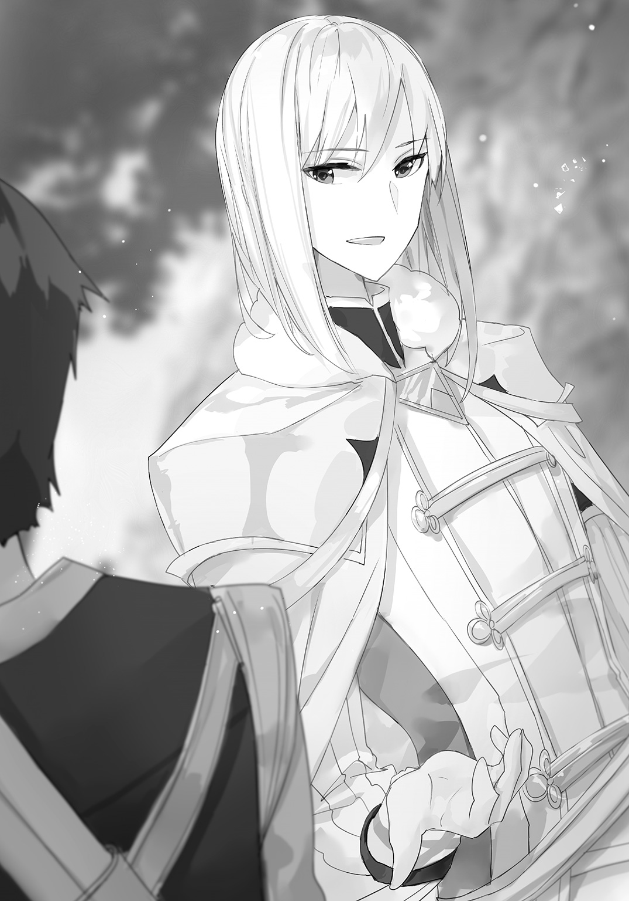
「あー、そういや、いるのはお前だけじゃなかったな」
言われてみれば、この土地での滞在を決めたのはこいつ一人の一存なんだから、仲間だからってそれに異論なく付き従っているのは従順すぎる。
......と思ったが、後ろに控えているパーティーのメンツを見渡してみたところ、一人の例外もなく全員女だった。
これはあれだな。
こいつら全員惚れてるんだろう。
まさに王子様だな。
多分だが、この女たちがヤンネに気に入られたくてギルドで依頼待ちの列をなしてたんだろう。そりゃ横から意見できないわな。なんか怖いし。
「それにしても、山道からの帰りだっていうのに全然怪我や汚れがないね。あそこはこの近辺じゃ一番魔物のレベルが高い場所なのにさ」
「そんな大したもんじゃねぇよ」
「君は強いんだね」
「自分が強くないみたいな言い方だな。そんなわきゃないんだろ？」
男はその問いには答えず、肯定とも謙遜とも取れる微笑を返してくる。
「シュウトはいつまで留まるつもりなんだい？」
「決めてねぇな。せっかくの過ごしやすい町なんだし、ゆっくりはしていく予定だけど」
「そうか。じゃあ、またどこかで袖が触れ合うこともあるかもしれないな」
俺は特別興味もないが、男は「これもなにかの縁だよ」と語り、それから温厚な声を響かせて名乗った。
「ヤンネだ。いつかまた会いたいね」
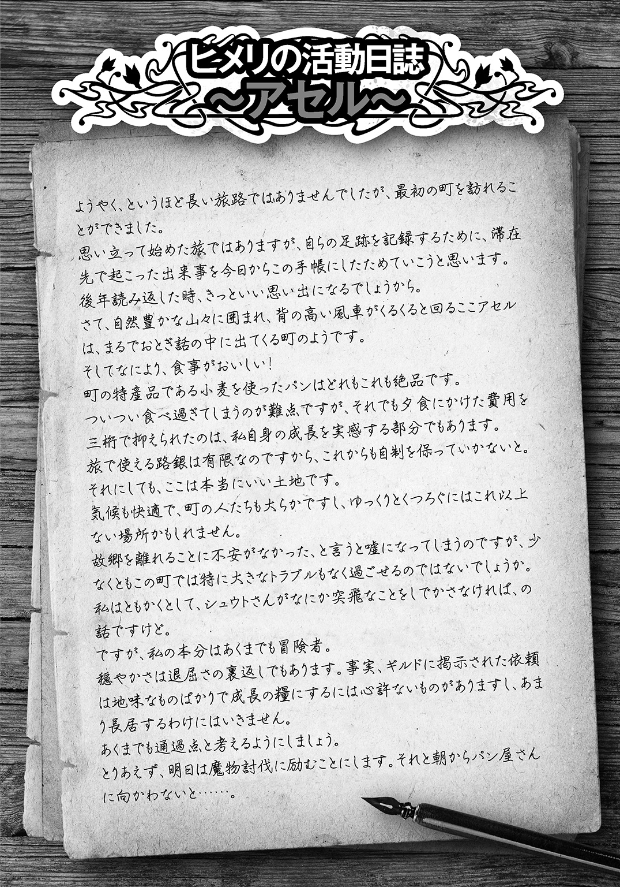
アセルの名物といえば、なんといっても極上品質の小麦である。
その小麦を用いて焼き上げられたパンの味わいといったら、それはもう天にも昇るような多幸感に満ちている。
だから朝昼晩とパンばかり食べることに不満はないのだが、それにしたってこの町の外食産業におけるパンの侵食率は凄まじい。
とある飯屋で出されたグラタンは、その器までもパンで作られていた。
詳細を説明すると中身をくりぬいた食パンだ。そこに大量のホワイトソースがぶちこまれていて、上には焦げ目のついたチーズがどっさりと。
具はショートパスタと、くりぬかれた部分のトーストである。
「......って、ほとんど全部小麦じゃねーか」
チーズくらいしか部外者がいない。
どうやら俺の血糖値に挑戦状を叩きつけているようだな、こいつは。
ただこうした開き直ったような料理が出されているのには理由がある。後から知ったがこの辺りの地方は田舎だけあって交易手段が乏しく、畜産業もあまり盛んではないため、小麦と保存食以外の食材はなかなか大衆向けの料理には使えないらしい。
苦心の末に生まれたメニューが、この小麦づくしのグラタンなんだとか。
しかし俺からしたら「よくぞ考案してくれた」と賛辞を贈りたい気分だ。俺は香ばしい匂いを放つグラタンに手をつける前から、この料理がうまいことを確信していた。
分かりきっている。炭水化物プラス炭水化物は、黄金の方程式であることを。
とまあ、そんな食生活を送りながらも、アセルに滞在して早二週間が過ぎた。
いすぎだろってツッコまれそうだが、居心地がいいあまりつい長居してしまっている。
予想していたとおり、ヒメリはあれだけ個別行動を強調していたのに俺に干渉しまくって「早く次の町に行きましょう」と催促してきたのだが、飯をおごることを約束したら文句は言わなくなった。現金な奴だ。
それと、ヤンネ。
初めて出会った日以降も町中や山道近くで何度か遭遇したが、お互いに外せない用があるからと軽く会話を交わして終わりだった。あいつもあいつで大きな目的に向けて資金稼ぎに精を出しているんだろう。
ただ付属品の女軍団にはよくガンを飛ばされた。あいつらは怖い、マジで。
それと先日、ストックしていた古木の枝をついにミミ用の杖に加工してもらった。
まあ加工といっても滑らかに磨いて形を整えた後、先端部分に銀細工をちょろっとあしらっただけなので外見上はほとんど木のままなのだが。
あとはまあ、特に変化はない。日課に山道に出かけて金を稼いでくるくらいで......。
「あっ、シュウトさん！ おはようございます！」
......ああ、こいつがいたな。
ギルドに立ち寄るたびにやたら懐いてくるこの青髪の少年は、リクという名前だ。
貧乏冒険者たちがどうにも他人事に思えず、俺は依頼を出し続けていたのだが、そのせいかリクに限らず俺はここの連中からの信望を集めている。
「シュウトさんのおかげで本当にみんな助かってます。感謝してもしきれません」
「それはいいんだけどさ......俺がこの町を離れた後のことも考えとけよ」
お前ら少しは俺に頼る以外のこともしろって言いたくなる。
ただリクはその中ではまだマシな部類だった。俺が来る前から鉱山に足を運び、大して金にならないながらも採掘と狩りに励んでいたという。
「きっと大丈夫だと思います。探索ポイントに行くようになってからみんなグングン成長してますからね。なにより、自分もそうですけど、冒険者としての自信がついてきています。僕だって昨日は魔物の討伐だけで二〇〇〇Ｇも稼いできたんですよ！」
無邪気な笑顔で嬉しそうに報告してくるリク。
「だったらまあ、安心していいか」
「それもこれもシュウトさんがきっかけを作ってくれたおかげで......」
「もういいっての」
人から賞賛されることに慣れてないから褒め殺しはムズ痒い。俺とリクのやりとりを見守るミミとホクトが揃って「うちらの主人めっちゃ頼られてますやん」「ホンマですわぁ」みたいなほっこりとした顔を浮かべているのも、くすぐったさに拍車をかけている。
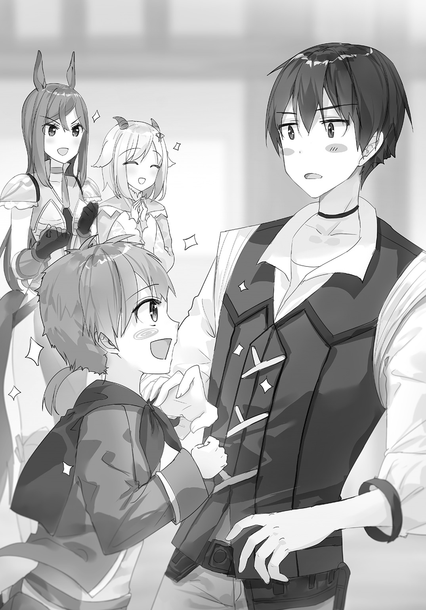
......と。
リクと会話している最中に、不意にギルドの扉が開く。
立っているのはヒメリだ。
「シュウトさん、いますか？」
「どうしたんだよ、そんなに慌てて」
「どうしたもこうしたもないですよ、大至急広場まで来てください！」
ヒメリは俺の手を引いて無理やりに走らせた。
連れていかれた町中央の広場には――どういうわけか住民たちが集まっていた。
何人かが『断固ヤンネ支持』という看板をかかげている。
そしてまた別の何人かは『絶対シュウト支持』という看板を......って、それ俺じゃねーか。勝手に人の名前使ってなにしてくれてんだ。
「なにやってんの、こいつら」
「支持者による主導権争いですよ。今この町で影響力のある人物は二人です。一人は商業ギルドにとって安定した仕入れ先となっているヤンネという方」
一本、二本と順番に指を立てていくヒメリ。
「そしてもう一人は、冒険者ギルドの求人を増やしている......シュウトさんです」
「は？ 俺？」
「そうですよ。たった二週間で人心を掌握してしまってるんですよ、あなたは」
マジか。これがバラ撒きの効果なのか。地方再生ってやつだな。
じゃなくて。
「俺はともかくとして、なんでヤンネまでこんなに支持層がいるんだよ」
「それはもちろん、依頼を確実に達成してくれるからですよ。発注者は受注者を選べませんからね。どうせなら腕のいい方が行ってくれたほうがありがたいはずです」
ふむ、一理あるか。
この町で依頼を達成し続けているヤンネは数え切れないほどの名声を得ているに違いない。
「ですが、このままシュウトさんを推す声が増え続けたら、ヤンネさんが気分を害して町を離れてしまうのではないかと危惧しているみたいです」
「んなことありえるかよ」
俺の知るヤンネはそんなことを気にする男には見えなかったぞ。
ヤンネを王として勝手に担ぎ上げてるのは、周りの人間だろうに。
「というかお前、町の情勢に詳しいな」
「シュウトさんに食費を負担してもらってますから、その分町内での活動が多くなりましたからね」
高い情報料だ。
ここで集団の一人が俺に気づいたらしく「シュウト！ シュウト！」のコールを始めた。それを契機としてヤンネコールも負けじと上がり、もはや収拾がつかない状況になる。
ってか、うるせー。
「シュウトさん、ここはなにかしら事態を治めるために発言したほうがいいですよ」
「ええ......めんどくせぇよ。俺が町を去ったらいいだけじゃん」
「今ここでそんなことしたら最悪ですよ。負けを自ら認めたことになるんですから。そうなったら冒険者ギルドの盛り上がりに水を差すことになります」
む、それはちょっと複雑な心境になるな。
ダメな子ほどかわいいじゃないが、なんだかんだでこの町の冒険者たちには情が移っている。
ようやく高まった気運が落ちこんだら投資の甲斐がなくなるし、丸々損だ。
「しょうがねぇな......あー、商業ギルドの人らは気づいてないみたいだが」
一旦静かになってもらい、俺は簡単なスピーチを開始する。
やべー、政治家にでもなった気分だわ。
「冒険者稼業が盛んになるメリットを無視してないか？ 探索に行くようになれば各種品々が要りようになるだろう。いいか、雇用の拡大は消費の増大に繫がるんだぜ。こんなの俺でも知ってるぞ」
「出ていかれたら終わりじゃないか！」
「地元の勇士の門出くらい祝ってやれよ。そのうち故郷に錦を飾りに来るかもしれないだろ」
「そうやって何人も見送ってきたが、誰も帰郷してこなかったよ！ その点ヤンネさんは町の産業に還元もしてくれるし......」
「いつまでも続くってわけじゃないだろうに」
目先の利益追いすぎだろこいつら。口に出すと余計に刺激してしまうから言わないが。
こうなったら買収するしかないな。
俺は汚い大人なので金で解決できるならそうさせてもらう。
ただよくよく考えれば、効果があるかは微妙だな。今後も付き合いが続くわけじゃないから受け取るだけ受け取って知らん顔してりゃいいだけだし。
マジモンの選挙と違って投票をするわけじゃないから、当選した暁には云々みたいな根回しも意味がない。
「シュウトさんは俺たちの希望だ！」
「いや、ヤンネさんこそがこの町を支えている！」
ああもう、いつ終わるんだよこれ。
と、そこに。
「シュウト、君も来ていたのか」
女軍団を引き連れたヤンネが現れた。どうやらこいつも騒ぎを聞きつけてきたらしい。
ヤンネコールが湧く中、仲間に待機を命じて俺の近くにまで駆け寄る。
「大変なことになったね」
「大変どころじゃねぇよ。お前もなんか言ってやってくれ。俺だけじゃどうしようもない」
「僕が発言しても顰蹙を買うだけさ。僕のやり方は利己的だからね。冒険者ギルドにはいい感情を持たれていないことは察してるよ」
まあそうなるか。
すると、群集の一人がこう叫んだ。
「二人で決着をつけてくれ！ 俺はその結果に従うぞ！」
またとんでもないことを言いだしたものである。
無茶苦茶な要求にしか思えなかったが、その波は徐々に広がっていき、気づけば「そうだそうだ」の大合唱に発展していく。
「はあ？ 誰がやるかそんなもん」
俺は当然そう即答したのだが、ヤンネは違った。
「それで混乱が収まるなら悪くないんじゃないかな。それに、僕も一度シュウトとは手合わせしてみたかったんだ」
ヤンネがそう口にした途端、広場の盛り上がりは最高潮に達した。
「いやいやいや、馬鹿な話はやめろって。同業者でやりあうのはご法度だぜ」
「双方合意なら認められるよ。もちろん、立会人監視の下で、お互いに不殺の呪縛がかかった状況でないとダメだけどさ」
「なんだそりゃ」
知らないワードが出てきたので、尋ねる。
「与えるダメージに制限をかける呪いだよ。致命傷には絶対ならないから、戦闘不能に陥っても死にはしない。本来すぐ解除できる状態異常だけど、あえてそのままで戦うんだ」
これがあるからこそ、冒険者同士で競い合う「闘技場」なるものが存在しているらしい。
「僕だって元を辿れば強者を目指して冒険の旅に出たんだ。君のようにわずか二週間で町内に一大ムーブメントを巻き起こせる冒険者なんて、そうそう出会える相手じゃないからね」
「だからこの機会に腕比べしたいってか？ 悪いけど俺は空気とか読めないから平気で断るぞ。めんどくさいし、痛いのも嫌だ」
俺は素直にそう返事した。
「じゃあ、こうしよう。ヒスト・ラクシャリアという蝶は知っているかい？」
「まったく」
初耳も初耳だが、なんとなくの想像はつく。
名前の響きからしてレアモンスターだな。もう傾向で分かる。
「まあ、僕もアセルに来るまでは聞いたことがなかったんだけどさ。この土地で行動している間に町の人からその存在を教えてもらったんだよ。なんでも、例の山道に棲息しているらしい。戦闘力はほとんどなく、とても美しいとされているんだけど、非常に珍しい魔物でね......僕もまだお目にかかったことがない。日取りを決めて、この蝶を捕まえたほうが勝ちにしよう」
「なるほど、それは公平かつ平和的な条件ですね」
ヒメリまで乗ってきやがったんだけど。
「シュウトさん、受けてみてはいかがですか？ こうなったら白黒つけないとここに集まった人たちは納得しませんよ。それに勝ちさえすればあなたの名誉にもなります」
なんか異論を差し挟む暇もなく話を進められてるが、こっちにも都合ってものがある。
「待てっての。山道って一口に言っても、山頂までは六時間かかるんだぜ？ 蝶がどこにいるかも分からないのに、俺がそんなしんどいことをやるわけが......」
「ならば自分が足になりましょう！」
どこからかよく響く声が上がった。
声の出所を視線で追う。
両足を肩幅に開いた、威風堂々たる立ち姿のホクトがそこにはいた。
「主殿の必要とあらば、自分が背負って走るであります！」
ギルドから急いで俺を追ってきたホクトは、話の一部始終を聞いた上で、どうやらおんぶで山道を駆け上ることを申し出ているらしい。
つまり、俺が懸念材料に挙げた問題はクリアしてしまったことになる。
おい待て。
どんどん外堀が埋まっていくんだが。
ホクトがそばにまで駆け寄ってくる。
「自分は主殿の役に立ちたいであります。自分のように馬車馬のごとく働くしか能がない者には、他に主殿のためにできることはありませぬ。勝負事を受けるのであればどうか大役を担わせていただきたいであります！」
どうやらホクトは俺への貢献度の低さに引け目を感じていたらしい。
魔法によって戦闘をサポートできるミミと違って、荷物持ちしかやらせていないからな。
「いいね、これなら君の足をわずらわせることにもならないだろう。ふむ、だけど、それならルールも厳格化しないとダメだな。僕だけ個人戦というのも不公平だし、お互いにパートナーを一人ずつつける、ということでいいかな？」
「いや俺はまだ受けるとは言ってないんだが」
まあそう焦るなよ、と。
「まず第一に俺の意見がこれっぽっちも通ってない条件っていうのが不服だ。蝶を捕まえるったって、当日じゃなくても前もって捕まえておいたらいいだけじゃねぇか。それにめったに見ることのできない珍しい魔物なら、偽物持ってきてもバレないだろ」
「ギルドの職員に鑑定してもらえばいいよ。彼らは魔物に関する知識のエキスパートだ。ヒスト・ラクシャリアが本物であるか、捕まえた日付がいつか、きっちり導き出してくれるはずさ」
そういやレアメタルといい筆跡といい、この世界の鑑定技術はやたら精度が高かったな。
「でもさ、自分で言うのもなんだが、冒険者ギルドは俺寄りだぜ」
「僕はギルドマスターの中立性を信じるよ」
ムカつくくらいに清々しく答えるヤンネ。
その潔さにまた観衆が沸いた。
これはまずい。なにがまずいって、ここまできて断ったら俺の敵前逃亡になる。結局のところ尻尾巻いて町を去るのと同じことになるからな、このままだと。
追いかけてきたであろうリクたちの不安げな姿が見える。
受けないのが最悪の選択か。
この町の冒険者は長らくゴミのような扱いだったと聞いている。
せっかくゴミが燃えてきたところなんだし、その火を絶やすのはダメだよな。
「分かったよ。俺が一肌脱げばいいんだろ」
俺を支持する人間が息を吹き返す声が、一斉に湧き起こった。
「シュウト様、本当によろしかったのですか？」
「仕方ないじゃん。俺がうんって頷かないとどうしようもない空気だったじゃねぇか」
「自分は燃えております！ 主殿の名誉のために全力を尽くすであります！」
「お前のやる気で完全に退路を断たれたんだけどな......今更だからいいけど」
広場での騒動が静まった後、俺はギルドに戻ってラウンジでくだを巻いていた。
日時はインターバルを置いて五日後の朝六時に決まった。
他に定められたルールとしては、回復アイテムの持ちこみ可、相互干渉の禁止、など。
要するにタイムアタックレースみたいなもんだ。
「がんばってください、シュウトさん」
「私、精一杯応援します！」
「シュウトさんの男気に俺たちも勇気づけられたッス！」
Ｅランクの冒険者たちが束になって声援を送ってくるが、別に責任だとか男らしさだとかそういうことを考えて受けたわけじゃない。
こいつらを裏切るのが忍びないからという、言っちゃなんだが自己満足だ。
俺は別に弱者の味方ではない。もともと社会的弱者だったからこそ似たような弱者に同情してるだけに過ぎない。客観的に見ると完全にツンデレの思考なのだが、ここの連中にシンパシーを抱いてしまってるんだからしょうがないだろう。
「俺に構う暇があるなら仕事してこいよ。リクはもう鉱山まで行ってんだぞ、ちょっとは見習え」
と言って、俺は働きに行くよう促した。
まあでもやるからには勝たないと意味がない。なんのためにこいつらの世話を焼いてやったんだってことになるからな。
ホクトのコンプレックスもなんとかしてやりたいところだし。
皆が出発したのを見届けてから、受付まで歩み寄る。
「おっさん、ナントカカントカっていう蝶の情報を教えてくれ」
まずはそこから知らないことには始まらない。
「ヒスト・ラクシャリアか？ 分類上は魔物扱いだが、観賞用として有名なラクシャリア種の中でも山岳地帯に棲息するといわれている個体で、しかも特に希少な......」
「いやそういうルーツの部分の情報を聞きたいんじゃなくてだな」
俺はペットショップに来ているわけではない。
「外見的特徴とかか？」
「それ。そういうのだ」
「俺も直接目にしたわけじゃないから伝聞でしか知らないが、通常の蝶よりも一回り大きく、鮮やかな青紫の翅を持つといわれている」
それだけ聞いたら日本の国蝶みたいだな。
よって今後は微妙にもじってビッグムラサキと呼ぶことにする。
「実物は貴族くらいしか見たことがないから、どれほどのものかは分からんがな」
「見たことないのに鑑定はできるんだな」
「そりゃあな。でないと要注意指定の魔物の素材が持ちこまれた時に査定できないだろ」
ふむ、確かに。
以前の町で素材を持ち帰る都度、一発でどの魔物のものか見破られたことを思い出す。
「ってことはおっさんが鑑定役を務めてくれるんだな。ヤンネもギルドマスターがどうこう言ってたし」
「ああ。アセルで適任なのは俺くらいだろう」
「どうせなら俺に肩入れしてくれたりは......」
「それはいくらシュウトとはいえ聞けない頼みだな。冒険者ギルドの責任を負っている以上、冒険者に対しては公正な立場であることが求められる」
だろうな。でなければヤンネ軍団が押しかけてきた時に「俺の門下生がかわいいからお前らはアウト」って依頼から弾くこともできたろうし。
それにしてもヤンネという男は爽やかなくせに、妙に不気味だ。取り巻きにしても商業組合にしても、そして挑戦を受けることになった俺にしても、本人の意図どおりなのかは知らないが世論を煽動する力がある。
あれがカリスマ性ってやつなのか。
「蝶の出現条件みたいなのは分かってるのか？」
「目撃情報によれば時間帯は関係ないらしい。だが、残りは不明だ。出現場所が頂上付近ということだけは判明しているが......」
「げ、よりによっててっぺんかよ」
もっと低地を飛べよな。
「捕まえさえしなければルール破りにはならないから、下調べに行ってみるのもいいだろう」
「山頂まで行く時点で相当な手間だしな......」
いくらホクトに背負ってもらったとしても、移動こみで往復十六時間はきつい。丸々一日をそれだけに費やすことになる。
これは人員を雇うか。資金は大量にあるし。
ただ地元の冒険者はまだ山道で活動できるほど鍛えられてないし、Ｃランクをアテにするにしても遠征中の奴しかいない。つまりはヤンネの一派なわけで。
「あいつら金で動いてくれるかな......」
無理だな。愛しのヤンネ様に操を立てているだろう。
......ん？ 待てよ。
「いたじゃねーか。ちょうどいい第三者が」
俺は無性に愉快な気分になってしまった。
精々こきつかってやるか。
次の次の日。
俺は練習とテストを兼ねて、宿の裏手にある路地で朝から走りこみを敢行していた。
正確にはホクトと合体した俺、であるが。
合体といってもジョイントしているわけではない。ただおんぶしてもらってるだけだ。
「主殿、自分の乗り心地はいかがでありますか？」
「乗り心地って言うな乗り心地って」
そういう卑猥に聞こえる表現を口にするのはやめていただきたい。俺はこれでも、シモに走りそうになっても内心で留めている。
で、その乗った感じはというと、鎧越しなので柔らかいとかそういうのはない。多分ホクトの側もなんの感触も覚えていないだろう。いろいろと無機質である。
「これ、本当に走れんのか？」
俺の体重を抜きに考えても鎧だけでかなり重そうだが。
「加えて俺は大剣を背負った状態だぜ」
「大丈夫であります！ でえやああああああ！」
ホクトは気合一声走り出す。
「おおっ」
はえー。俺が自力で走るよりも断然速い。
しかも安定していて持続性もある。パワー、スピード、スタミナ、バランス、いずれも申し分ない。
「このペース配分でいつまで保つんだ？」
背中越しに語りかける俺。
先に山頂にまで到達したほうが圧倒的に有利なのは明白。となればスピード勝負を挑むのがもっとも分かりやすい正攻法だろう。
「は、八分ほどでしょうか」
「えっ、そんなもんなのか？」
「これは全力疾走でありますから。数時間もは保たないであります」
「ふーむ」
まあ全力で走って八分もスピードを維持できるんなら凄まじいことではあるんだが。
「息が続く速度で走ってみてくれ」
「了解であります！」
ランニング程度までペースを落としてもらう。
これでも充分に速いな。風を切る爽快感はなくなったが、俺がとことこ歩くよりも遥かに速い。
ただ鎧を着こんでいるからガッシャンガッシャンうるさい。まあそれはいいにしても、やはりというべきかホクトが走りにくそうにしているのが難点だ。全身に板金がまとわりついているせいで実際の重量以上に負荷がある。
その上本番は斜面だ。今のように平坦な道と同じ感覚では臨めない。
二時間ほど走ってもらったところでホクトの呼吸が荒くなってきたので、今度はジョギングくらいにまでペースを下げさせる。
「期待以上の結果を残せず申し訳ないであります......」
「鎧つけてこれだけ走れるなら上出来だよ。あまり気負うなって」
ホクトはやっと俺の役に立てる機会が来たとモチベーションをマックスまで高めているのだが、張り切りすぎるのが玉にキズだ。
「万全ならもっとスピードを出せるのでありますが......軽い服に着替えましょうか？」
「うーん、それだと魔物に遭遇したときに不利になるからなー」
三日後に控える決戦の舞台となる山道は、低ランクでは足を運べない、それなりの難所。
俺なら大抵一撃で葬れるとはいえ油断は禁物だ。速度ばかり重視して守りをおろそかにするわけにはいかない。
「理想を言えば一切戦闘せずに突破できればいいんだが......」
難しいな。
ってか、無理だろ。絶対に魔物の出没地帯を通らないといけないわけだし。
とりあえずホクトの背中に乗ってるのが楽しくなってきたので、そのまま町に出てもらった。
「もう昼か。腹減ったな......どっかでパンでも買うか」
「では、お運びいたします！」
市場までダッシュしてもらったのだが、途中。
数人が言い争っている光景が目に入った。入ったというか、横に広がって進路をふさいでるので邪魔になっている。
「だから私がもっともふさわしいって言ってるでしょ!? ヤンネ様が山道に向かう時はいつもお供しているもの！」
「そんなの関係ないわ！ 一番ヤンネ様のためになってる人がなるべきよ。それは間違いなくアタシだわ。だってこの中で一番多くの依頼を達成しているんだから」
「数じゃないわ。仕事の難儀さで測るべきよ。あなたなんて薬草採取しかしてないじゃない。私は鉱山まで採掘に行ってるのよ!? どれだけ疲れて帰ってきてるか分かる？」
「そんな感情論はいらないの。金額で見るのが客観的だわ。わたしがこの前、山林で拾ってきた古木の枝なんて凄く高値で取引されて......」
「これまでどれだけ貢献したかなんてどうでもいいじゃない！ その日一番活躍できる人がなるのが合理的だと思わない？」
「それなら私ね。私はこの中で一番年下なのに、同じＣランクだわ。皆より才能がある証拠でしょう」
「ねえ、今若さって関係ある？ あまりふざけないで。わたくしはあなたたちとは過ごした時間が違うの」
「一番古株だから一番偉いっていうの？ そんなの押しつけよ。ヤンネ様の気持ちを無視してるわ」
やかましい。かしましい。
あー、これは。
ヤンネのパートナーの座を巡って内輪揉めしてるんだな。
お前らが長々と議論したところで、結局選ぶのはヤンネ本人なんだから意味ないのに。
「というか、こいつら報酬貢ぎまくってたんだな......」
まるでアイドルに群がるファンだな。
今後ヤンネファンクラブと呼ぼう。
「悪い、ちょっとどいてくれ」
俺は一旦ホクトの背中から降り、道を開けてもらうよう頼む。
なんとなくそんな予感はしていたが、俺の存在は認識されていたらしく、その場の全員から敵意を向けられた。
「あら、あなたは確か......シュウト、でしたっけ？ ちょうどよかったわ、いつか伝えておきたかったのですけど、ヤンネ様に気安く話しかけるのはやめてくださるかしら？」
気安くって、ヤンネは王族かなにかかよ。
でも、こいつらなら「はいそうです」と答えかねないな。
「本当に、なんであなたみたいな何の変哲もない人にヤンネ様は興味を持たれたのかしら......」
「とてもじゃないけれど通行証をもらえるＣランク冒険者には見えないわ」
「その点ヤンネ様は、実力、威厳、気品すべて揃っていて......はあ、本当に、なんであなたなんかに」
言いたい放題だなおい。いいからどけっての。
「主殿の中傷は聞き捨てなりませぬぞ」
俺が声に出して文句を言うより先に、ホクトが毅然とした態度で立ち向かう。
獣人に歯向かわれたのがよほど腹立たしかったのか、ヤンネファンクラブの一人が吐き捨てるようにこう告げた。
「なによ、奴隷の分際で。金で買われた信頼関係のくせに」
言葉の刃物、というものを俺は久しく耳にしていなかったが、こいつの言い放った台詞はそれに相当するように思えてならなかった。
ホクトの顔がみるみる赤くなる。その面持ちは怒りに震えているようにも、羞恥に堪えているようにも見えて、どちらにせよ沈痛なものだった。
「......自分への侮蔑で気が済むならこれに勝る喜びはありませぬ。これをもって主殿の悪口はやめていただきたい」
それでもホクトはよく耐えていた。竦みもせず、臆しもしていない。視線を逸らすこともなく正面を見据えたままだ。凜として、とはこういうことを表すに違いない。
まあ、奴隷に対する世間一般の認識なんてこんなものなのかもしれないし、実際俺も金で手に入れたわけだけども。
だがそれを他人からどうこう言われる筋合いはない。
俺は歯を食いしばるホクトの肩を叩き。
「ほっとけよ。俺は金で忠誠心を買ったかもしれないけど、忠誠心で金を貢いでるこいつらよりはダサくねぇよ。俺は俺の利益のために金を使っただけだからな」
そう言ってやった。
「早くどいてくれよ。俺以外にも邪魔になるからさ」
無理やりに道を開けさせる。
「ヤンネ様のメンツがあるから今日はなにもいたしませんが、これだけは言い残しておきます。あなたの口の汚さは天下一品ですわ」
「生憎俺は名家に生まれた人格者なんかじゃなくて、性格の悪いタイプの金持ちだからな」
俺はホクトの手を引いて通り過ぎた。
あいつらを失望させられるなら、ヤンネを負かすのも悪くない。
それはともかくとして、目的は飯だ。俺は市場でパンを複数個買い、そのうちの一個をくわえながら歩く。
残りは宿に戻ってからミミも含めた三人で食うか。
と、その前に。
ギルドへと寄り道する。
「遅かったじゃないですか」
ラウンジのテーブル席にヒメリが座っていた。疲労困憊の様子で。
というのも、俺がヒメリを直々に指名して、ビッグムラサキの調査依頼に出向いてもらったからに他ならない。一応こいつの立ち位置的には「俺とは別パーティー」なのだが......。
「よく行ってきてくれたな。感謝するぜ」
「感謝もなにも、さすがに報酬五万Ｇは受けるに決まってるじゃないですか。山頂で二泊もした甲斐がありましたよ」
くたびれている割に口元だけニヤけているが、どうせ晩飯をどのくらいリッチにするかでも考えてるんだろうな。
それはともかく、ヒメリは俺にメモを手渡す。
「どこに聞き耳が立っているか分かりませんから、口頭では伝えないでおきます。貴重なマル秘データですので」
「気が利くな」
「シュウトさんが日頃、迂闊すぎるだけです」
澄まし顔でピシッと人差し指を立てるヒメリ。
「それより本番に向けての準備はどうなんですか？ ホクトさんに背負ってもらうにしても、あの上り坂を一定のペースで走り続けるのは不可能でしょう」
「それなんだよなぁ。防具の軽量化も考えてるんだが」
「自分にもっと戦闘力があれば......面目ないであります」
「いや別にホクトの責任じゃないけどな。重力とかいう融通の利かないシステムのせいなだけで」
椅子に深く腰かけ、腕を組んで考えこむ俺。まあ考えこんでるふうなだけで特にアイディアが出てくる気配はないんだが。
その時、ギルドの扉をゆっくりとくぐる人影が見えた。
青のポニーテールが揺れている。
「リクか。今日も鉱山に行ってきたのか？」
「いえ......」
どうやら違うらしい。
「じゃあこれからか」
「今日は探索に行く予定はありません。えと、シュウトさんに用事があって」
「俺に？」
あと、様子もちょっと違っている。いつもは人懐っこい表情を浮かべていることが多いが、そのあどけない顔から、今日はなにやら決意めいた心情がのぞいている。
「シュウトさんだから話せることです。一度、僕の家にまで来てくれませんか？」
リクの瞳には静かな炎が灯っていた。
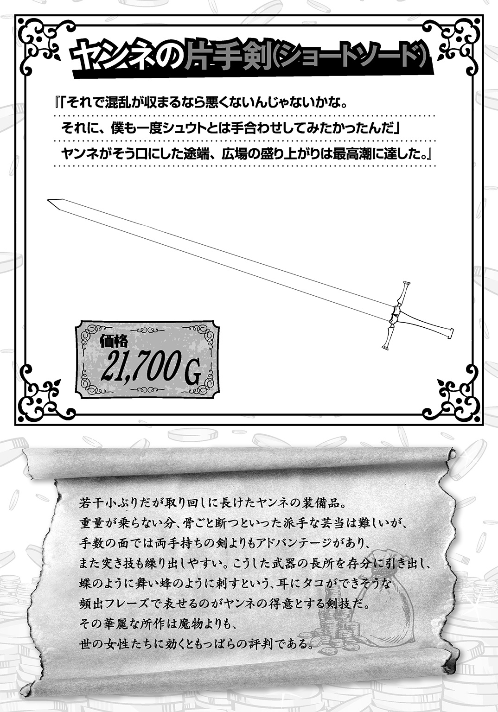
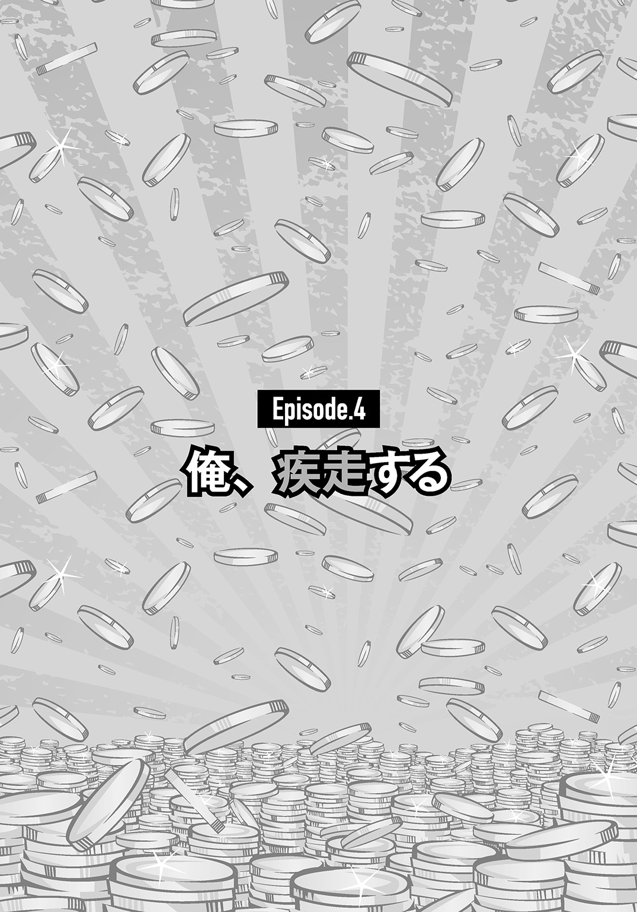
決戦当日の朝。
「眠たそうだね」
「何時起きだと思ってやがる」
山道の入り口前で、あくびする俺と純白の鎧で決めたヤンネが肩を並べていた。
ヤンネは結局ローブを着た魔術師っぽい役割の女をパートナーに選んだらしい。前衛タイプである自分の欠点を補うことが狙いか。
一方の俺は、もちろんホクトとタッグを組んでいる。
「コンディションは十全であります！ 迅速に頂上まで駆け上がるであります！」
気合も満タンだ。
パドックでこれを見かけたら追加で単勝買っちゃうな。
「あー、それではルールの再確認を行うが」
見届け役として立ち会っているギルドマスターのおっさんが説明を始める。
もっとも山道前に来たのはおっさんだけではない。多くの町民が押し寄せてきていた。
雌雄が決する瞬間を見に来たらしいが、どっちかが蝶を捕まえて戻ってくるのはおそらく日没後になるだろうに、よく待とうと思えるな。俺なら絶対お断りなんだが。
当然ヤンネファンクラブの連中も集まっているし、別に宿で寝てていいと言ったのに律儀にミミもついてきている。
「先にヒスト・ラクシャリアを捕獲して帰還したほうを勝者とする。魔物の討伐数や被害の大小は評価に含めない。アイテムは使用可、装備は自由。唯一禁止なのは対人攻撃だけだ」
こんなのは事前に知らされている。今更姿勢を正して聞くようなものでもない。
市場の面々が全員ヤンネに与して俺には回復薬を売らない、なんてこともあるかと思ったが、おっさんが依頼の受注を止めないのと同様に、商売に私情を差し挟んではこなかった。
準備は万端。
それにしても、虫取り網なんて握ったのはいつぶりだろうか。ヤンネ側も持参しているからなんか夏休みっぽくて今ひとつ緊迫感がない。
「......ただなぁ、シュウト」
出走間際になっておっさんが心配性な口ぶりで話しかけてくる。
「なんだ？」
「本当にその防具でいいのか？」
「いつもの服装だけど」
「お前じゃない、お前の相方だよ。随分と軽装じゃないか」
「ああ、そっちか」
クジャタの服にレザーベストといういつもの格好に剣を背負った俺とは違い、ホクトはプレートメイルではなく、新たに購入した革鎧を着こんでいる。
「軽くて走りやすそうだったからな」
「軽いったってなぁ。皮革は刃物に対してはまずまず耐性があるが、ここの魔物がしかけてくる攻撃は体当たりだぞ？」
「まあ黙って結果を待ってなって」
俺はそうとだけ返答した。
「いよいよだね。正々堂々戦おう」
手を差し伸べてくるヤンネ。
だが俺は握手を拒んだ。
「お前のそういう行為が勘違いを生むんだぜ」
「勘違い？」
「周りをその気にさせるってやつだよ。これといった思惑なんてなくとも、王様みたいな振る舞いをするから皆そうだと思っちまうんだ」
自然に出てしまう所作なんだろうが、だからこそ危うい。知らず知らずのうちに女を虜にし、民衆を扇動し、話題の中心にい続ける。それがこいつの特性だ。
相手のペースに呑まれてたまるか。
「時間だ。始めるぞ！」
響き渡る大声と共に、おっさんが手に持っていた鐘をガランガランと鳴らす。
ついに開始か。
颯爽とスタートを切るヤンネ組。一方で俺は剣と交差させるように虫取り網を背負い、ホクトの背中へと飛び乗った。
「行くぜ、ホクト」
「了解であります！ 一世一代の大勝負、支えさせていただきます！」
ホクトが疾駆を開始する。
素晴らしいスピードだ。あっという間にヤンネを抜き去り、どんどん差を広げていく。
「うおおおお！ 全速全開であります！」
坂道をものともせず駆け上がっていくホクトの足腰は強靭極まりない。装備も軽量級で統一してあるから、走る妨げになるものはなにひとつとしてない。
問題は......。
「主殿！ 斜め前方に魔物の影をとらえたであります！」
魔物の出現地帯にさしかかったようだ。
数にして二体。例によって真っ黒ボディの鹿と猪である。
どちらも俺たちの方向へと突進してきている。防御面の乏しいホクトに命中すればかなりのダメージを負うことになるだろう。
しかしそれは命中すればの話だ。
さらに言うならば、戦闘に及びさえしなければ何も不都合は起こり得ない。
向かってくる魔物を視界に収めた俺は、それでもホクトの背中からは降りなかった。
動ずることはない。
俺は背負っている剣を――『鞘から』引き抜いた。
「吹き飛べええっ！」
淡いエメラルド色の輝きを帯びた刀身から、勢いよく、暴風が放たれた。
「僕の父は鉱夫でした。まだ鉱山に魔物が跋扈していなかった頃のことです」
俺を自宅に招いたリクは、唐突に身の上話を始めた。
それにしても、質素な家だ。木造建築の時点でかなりボロいことがうかがえる。これだったら最初に女神にもらった家のほうがずっとマシだな。
「この地方の鉱山はそれほど貴重な金属は採れませんから、苦労の割に大した稼ぎにはなりませんでした。それでも父は採掘に行ってくれたんです......僕と母を養うために」
神妙な顔つきをするリク。
「魔物が出るようになってからは鉱夫を引退せざるを得なくなりましたが、ツルハシひとつで出かけていく父の大きな背中を、僕はまだ忘れられません」
「急に来てくれなんて言うから何かと思ったら、親父の話かよ」
まさか亡くなったとかいうんじゃあるまいな。
そういえばこいつには以前から鉱山に潜り続けてるという伏線もあった。お涙頂戴なストーリーが展開しそうな予感がする。俺はそういう湿っぽい話を聞かされるのは苦手だぞ。
「いえ、父も母も健在です。今はアセル郊外でのんびり過ごしてますよ。別に遺志を継いで鉱山に通っているとかではないです」
「おどかすなよ。なんだったんだよさっきの意味深なエピソードは」
「えと、父が関係することですので、一応話はしておこうかと」
俺はお前の家庭環境に興味なんてないっての。
早く本題に入るよう催促する。
「わ、分かりました。あのですね、僕が冒険者になると伝えた時に、父から教えてもらった情報があるんです。長く鉱夫として勤めていた父は鉱山に関してはエキスパートでしたから」
「まあ地形とかそういうのは詳しいだろうな」
「それだけじゃありません。もっと重要な......秘密の事実を教わりました。僕が鉱山に通い続けている理由は、これです」
リクは床板を外して、そこに隠していた布袋を引っ張り出した。
黒ずんだ袋の紐を解き、ザッと床の上に広げられた中身は......一見すると、青サビが浮いているようにしか見えない銅鉱石だった。
一個一個は小粒だが数がやたら多い。
「なんだこれは。こんな錆びてる石を隠す意味あるのか？」
「シュウトさん、これはサビなんかじゃないです。金属自体の色ですよ」
欠片のひとつをつまみ上げながらリクが解説する。
「これは征鳥鉱......風属性の魔力を宿した金属です。微量な上に見た目も地味だから見逃してしまうだけで、この土地の鉱山にはレアメタルが含まれているんです」
「マジか。ギルドのおっさんですらそんなこと知らなかったぞ」
「父が偶然発見したみたいです。ただ、本当に少しずつしか採れませんから、武器に仕立てられるまで溜めるのは骨が折れましたが......」
「ふーむ、だとしたら今から俺が集めるのは厳しいか」
人員を割けばできなくもないが、俺にだけ話すってことは内緒にしてくれってことだろうからそうするのもはばかられる。
俺は素材にはうるさいから手に入れたいところだが、時間的な制約で無理そうだな。
「大丈夫です。本当は僕が鍛冶に用いるつもりでしたけど......これをシュウトさんに使ってもらいたいんです」
「へ？ いいの？」
「シュウトさんの大事な一戦を応援しようと思ったら、僕にはこのくらいしかできませんから。冒険者ギルドをここまで育ててくれたお返しがしたいんです」
願ってもない申し出だが、いやいや、だからって苦労の証をそう易々と受け取るわけには。
まあめっちゃニコニコしてしまってるんだが。
「いいんです。シュウトさんはいずれいなくなってしまいますけど、僕はまだまだこの町に留まりますから。また一から集めなおします。修行にもなりますしね。その代わり」
絶対に勝ってください、と力強い言葉で少年は結んだ。
な、なんていい奴なんだ、リクよ。俺は今猛烈に感動している。
「お前の心意気は伝わったよ。ありがたく受け取っとくぜ」
「えっ、あげませんよ。一五万Ｇでお売りしようかなって」
リクは感動を一瞬で台無しにした。
「おいおい、今のは『是非お納めください』でプレゼントの流れだろ！」
「イーブンな取引をしろというのが、シュウトさんから教わった心得ですから」
ちゃっかりしてやがる。
けど、それでいい。
「やるようになったじゃねぇか」
このたくましさなら俺が町を去った後もなんの問題もないだろう。
成長の記念に、俺は一万Ｇを上乗せしてやった。
「吹き飛べええっ！」
ようやく秘蔵の武器が実戦投入となったことでテンションが上がっていた俺は、柄にもなくドヤった台詞を吐いてしまっていた。
とはいえ剣先から渦を巻くようにして放たれた風は、二体の魔物を無事台詞どおりに吹き飛ばしてくれたため、俺としては痛快この上ないところだ。
新たな剣、ブロードソードの効力は、どうやらケチのつけようがないようだな。
リクから買い取ったレアメタルをベースに鍛冶屋に委託したこの幅広の剣は、切っ先を前にしてかざすことで突風を起こす追加効果が発生する。
風自体ではほとんどダメージを与えられないが、その風圧をもって対象を吹き飛ばし、大きくノックバックさせることができる。
強制的に戦闘から離脱させられるわけだ。
緑がかった外観もなかなかよろしい。ただのサビにしか見えなかった状態の時はどうなることかと思ったが、いざ合金にしてみると非常に格調高いカラーリングになっている。
「順調でありますな、主殿！」
「うむ」
戦わないから防具も最低限でいい。
魔物との交戦をすべて回避しながら俺たちは突き進む。
目指すは頂上。
「ホクト、一旦ストップだ」
山の中腹を過ぎたあたりで俺はホクトに一時停止を命じた。
「ま、まだいけるであります」
「いやバテてきてるだろ。小休止するぞ」
スタートからおよそ二時間ほどが経っただろうか。快調に飛ばしていたがそれでもやはり疲労の色は否めない。
とりあえずホクトに回復薬をガブ飲みさせる。
「や、これはなかなか甘露な......喉も潤うでありますな」
「座って休んどけ。相当大差をつけてるからな、そう焦らなくても大丈夫だ」
「ではお言葉に甘えて、しばし気力体力を蓄えさせていただくであります」
にしても、山を登れば登るほどに秋の気配が濃くなってくるな。入り口のあたりでは黄色かった葉っぱがオレンジになっている。この感じだと山頂では完璧に紅葉してるだろう。
四季とかこの世界にはなさそうなのに不思議なもんだ。
「んじゃ、そろそろてっぺんまで行くか」
ホクトの呼吸が整ってきたところで登山を再開。
妨害してくる魔物は出合った先からブロードソードで吹き飛ばしてやった。
やがて。
「主殿！ 頂は近いでありますぞ！」
永遠に続くかと思われた山道が途絶え、代わりに薄く雲のかかった空が見えてくる。
俺を背負うホクトはラストスパートをかけて一気に登り切った。
片道六時間はかかるとされる道程を、その半分程度の時間で踏破した。
「主殿、や、やりましたぞ。ついに頂上であります！」
「ああ、よくやってくれたぜ」
前屈みになって膝を押さえるホクトは明らかにバテバテだが、俺はほとんどといっていいほど歩いていないので余裕綽々である。
もっとも目的を完遂できたこと、そしてようやく俺の役に立てたことによって得られたホクトの達成感たるや凄まじく、これまでになく晴れやかな顔つきをしている。
「絶景でありますな！」
「おっ、こりゃあ見晴らしがいいな」
遠くには町のシンボルである風車もばっちり見える。
それほど標高は高くないものの、山頂からはアセル地方が一望できた。山ばっかで面白みが一切ないので速攻で飽きたけれども。
さて、ここからが本題。
俺はトップシークレットであるヒメリメモを再確認する。
「蝶は感情を探知して行動する。自身のみならず、あらゆる敵意に対して距離を置くが、幸福な感情には寄ってくる習性がある......か」
いわく、ビッグムラサキは探そうとすればするほどに遠ざかっていくらしい。
それゆえ前情報なしに捜索しようものならまず発見できず、仮に習性を知った上であっても、人間というのは下心を消しきれないために捕獲に際しては相当な苦労を要するとのこと。
ではなぜヒメリがその真相に気づけたのかといえば、アセル産の小麦で作った極上のパンを食べていたら寄ってきてくれたからだそうだ。
どんだけ純粋な気持ちで飯食ってんだよ。お手頃な幸せだな。
まあ、パンを手放して捕まえようとした瞬間飛び去っていったらしいが。
さて。
「いかにして無邪気な気分になれるかだが......」
頂上近辺をうろうろと歩き回りながら思案する。
俺は下心の権化なので無理。となれば。
「ホクト」
「なんでありましょう？」
「お前は本当によくできた部下だ」
「ほへ？」
それまでキリッとし続けていたのに、ホクトは急に気の抜けた面になる。
「なっ、一体どうしたのでありますか？」
「俺のために山頂までダッシュしてくれたじゃないか」
「それは自分が勝手に申し出たことで......」
「今日だけじゃない。不平不満も漏らさず重い荷馬車を引いてくれているし、毎日一生懸命に頑張ってくれて心から感謝してるよ」
「いえいえ！ もったいなきお言葉であります！」
「もったいなくなんてねぇよ。むしろ足りないぐらいだ。そのパワーにどれだけ助けられてるか......俺の旅はお前がいないと成り立たないだろうな」
俺は賞賛の嵐を贈った。
「きゅ、急にどうしたのでありますか。お褒めにあずかるのは光栄ではありますが......その......なんというか、こう、ムズムズするであります」
「急にじゃない。今日がきっかけで改めてそう実感したんだ」
ホクトは動揺しながらも嬉々とした様子を見せている。
もう一押しいくか。
「それにホクトは美人だしさ。こういうのをあれだな......才色兼備っていうんだろうな」
顔を真っ赤にするホクト。
「目鼻立ちがはっきりしてるから強く印象に残るし、凜とした表情もたまらないな。それから、えー、背も高いし、栗毛もキュートだし、太い脚に挟まれたいだとかそういう特殊な性癖の持ち主からしたら最高のボディだし」
褒め言葉が足りなくなってきたので後半は適当だった。
それでもホクトはじーんときている。
「うう、無学無才な自分なぞがこんなにも主殿に褒めていただけるとは......！」
というか、若干泣いていた。
常々思っていたが、ホクトは脳筋である。脳筋ゆえに素直だ。
とめどない賛辞のシャワーを浴びまくって幸福度が見るからにマックスになっている。なんならメーターを振り切っているまである。
俺の「蝶出てこいや」オーラを相殺して余りあるほどに。
「......ホクト。そのまま目をつむれ」
「め、目でありますか!?」
なぜかホクトは異様にドギマギしている。
「そうだ。早くしてくれ。あと動くのもダメだぞ。お前が緊張して動いたりしないように瞼を閉じさせてるんだからな」
「りょ、了解しました。あの、その、なるべくお手柔らかにお頼みするであります......」
「よし、ではいくぞ」
ホクトの茹だった顔をじっと見つめる。
ゆっくり時間をかけて精神を集中させ......。
俺はホクトのつむじに止まった蝶に虫取り網をかぶせた。
「ぎゃああああああああ!? バタバタいってるであります！」
当然ホクトの頭ごとすっぽり収まってるわけで、網の中で暴れる蝶の羽音をホクトは耳元でモロに聞いている。聞いているというか、くらっている。顔全体に。
俺は慎重に下から網に手を突っこみ、蝶の美しい翅をつかんだ。
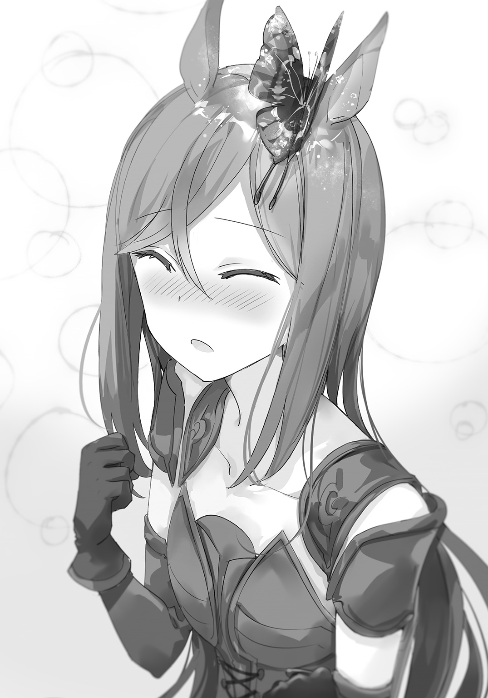
そのまま持参の虫カゴへと放りこむ。
「おお、こいつが......」
追い求めていた蝶！
確かに俺が元いた世界で目にしてきた蝶よりもでかい。そしてため息が出るほどに美麗だ。好事家相手に高く売れそうな感じが半端ではない。
それにしても幸せな感情に吸い寄せられてくる蝶とか、なんてメルヘンな生き物なんだ。
いざ俺が捕まえようとしても逃げなかったということは、その邪な気配すら打ち消してしまうくらいに、あの瞬間もホクトの幸福感は限界値で高止まりしてたわけだな。
「あ、あ、主殿、今のはなんだったのでありますか？」
未だに何が起きたのか理解が追いついていないホクトが尋ねてくる。
「なんだもなにも、蝶だよ、お目当ての。お前の頭の上に止まってたんだ。だから動かないようにしてくれって言ったんだろ」
「あ、そういうことでありましたか......」
「他にどういうことがあるんだ。惚けてないでさっさと下山しようぜ」
「はっ。こ、これは失礼を。気分を一新してまいるであります！」
虫カゴの紐を首にかけた俺は再びホクトの背中に乗り、帰りの山道を駆け下りてもらう。
......が、なんかやたら速い。
「ちょ、速くねーか？」
「下り坂は加速がつくであります！」
「本当にそれだけか......？ めちゃくちゃ飛ばしてるように思えるんだが」
「それだけであります！ 他意はないであります！」
口はそう語るが、無我夢中で全力疾走することで気を紛らわせてるような雰囲気だ。
まあスピードが出ているので文句はない。
途中、ヤンネの姿が前方に見えた。まだ山道を登り切ってすらいない。
何も知らないヤンネの奴は「やあ」とばかりに軽く手を上げてきたが、俺はホクトに停止の指示を出さず、すれ違いざまに虫カゴをかかげて。
「俺の勝ちだ」
とだけ報告してやった。
俺が麓まで降りてきてから約四時間。
日が傾きだした頃、ようやくヤンネが下山を済ませて現れた。
熱烈に支持する人物の帰還だというのに、商業ギルドからの拍手やコールは起きなかった。それもそのはずで連中はすっかり意気消沈してしまっている。
一方で冒険者の奴らは四時間ずっとお祭り騒ぎだ。まず俺が戻ってくるや否やシュウトシュウトの大合唱が発生。蝶の鑑定結果が出るとその声のボリュームは更に増した。
正直煩わしいので、ヤンネも帰ってきたことだし、この場を仕切るギルドマスターのおっさんには早く閉会の音頭を取ってもらいたいところだ。
そう思っていたのだが、この混沌とした状況の中で口火を切ったのは帰ってきたばかりのヤンネだった。
「シュウト、君を称えよう。僕の完敗だ。勝負の土俵にすら上がれなかったよ」
「往生際のいい奴だな」
そんな気はしていたけども。
「お前はよくても、こいつらは別だぜ」
俺は気落ちしている商人たちを見渡すように言った。
「こいつらはお前の勝利に懸けてたからな。勝ち馬に乗ろうとしてた、ってのが実情だけど」
「彼らには非常に申し訳ないことをしたと思う。せっかく僕なんかを英雄視してくれたのに、失望させてしまったね」
山道前に集った人々の様子は見事なまでに対照的だ。
悲喜こもごもとはこういう状況を指すのだろう。
「これでシュウトさんが町一番の有力者に決まった！ この町に王は二人もいらない！」
どこからか......まあ冒険者のうちの一人なんだろうが、そんな調子のいい声が上がった。
間髪をいれずに周りの奴らが「そうだそうだ」と囃し立てる。
盛り上がってるところ悪いが、ちょっと訂正させてもらおうか。
「はあ？ なにアホなこと言ってるんだ。勝ったからって俺が居残るわけじゃないし、負けたヤンネが志半ばでどっかに行くわけでもないぞ。むしろ俺がもうじきこの町を離れるからな。用事が全部終わったんだから」
俺の言葉に一同がざわつく。何人かは「えっ？」と呆気に取られていた。
「そりゃそうだろうが。俺は旅の途中で、ヤンネは貯蓄の真っ最中だ。お前らが納得したかどうかで意志が曲がるもんじゃねぇ。そうだろ？ ヤンネ」
「まあ、そのとおりだね。敗北しておいて居座るのかと白い目で見られるかもしれないけど、だからって僕は計画を変えるつもりはない」
苦笑しながら答えるヤンネ。
途端に商業ギルドの面々が活発になり始めた。
「なんでまた調子に乗りだしてんだよ！ 二人の結果に従うんじゃなかったのかよ」
「け、けどシュウトのほうは町からいなくなるようだし......ヤンネさんは残るんだぞ？」
「だからって事前に決めたことを無視するのはよくないじゃないですか」
「うるせー！ ヤンネさんが出ていかないってんなら話は別だ！」
「シュウトさん！ アセルを離れるって本当ですか？」
「まだまだいてくれるということでいいんですよね、ヤンネさん？」
まーたややこしい話になってるんだけど。
こいつらに主体性ってもんはないのか。
......ないな。結局こいつらは力のある人間を担ぎ上げるだけ担ぎ上げて、できた柱に寄りかかり、自分たちの行動指針をそこに預けてしまっている。
めんどくせぇ。こういうゴタゴタにはついていけない。
もうリセットしてやるか。
それが一番こいつらのためにもなるだろ。
「おい、ヤンネ」
「なんだい？」
「名案が浮かんだ。一〇〇万Ｇやるから、お前もこの町を出ろ」
俺がそう発言すると、民衆のざわめきは一段とエスカレートした。
「小麦畑を買うのに足りない分はそこから出せ。そうすりゃ、もうお前がここに留まる理由はなくなるだろ」
「確かに、それだけあれば手持ちと合わせて購入できるけど......だからってそんな大金をおいそれと受け取ることはできない。君の善意だとしてもだ」
「お前への善意なんかじゃねぇ。俺の身勝手な自己満足だ。俺が俺の目的以外のために金を使うかよ。お前がいたらいつまで経ってもダメになるんだ、全員な」
それはヤンネが、本人の意思とは関係ないところで王として機能してしまうからに他ならない。
そして俺もまた王の御輿に担がれようとしている。
しかしながらそんなのは一切不要だ。
「二人も、じゃない。王様なんて一人もいらねぇんだよ」
俺はヤンネだけでなく全員に聞こえるよう、あえて声量を上げて言った。
「じゃあ私たちはどうなるんですか？」
「ヤンネさんがいなくなったら、素材の仕入れが......」
めいめい不安そうに質問を飛ばしてくる。
「簡単な話だろ。商人はいつもどおり依頼を出して、冒険者はそれを受注すりゃいいだけだ。俺とヤンネが関与しなくなるっていう、ただそれだけのことだぜ」
これからは自力でなんとかしろ、と俺は地元の冒険者のほうを見据えて答えた。
「二週間でどれだけ依頼を出し続けたと思ってんだ。お前らはもう充分モノになってる。馬鹿にならない投資だったがな」
「そのとおりです！」
一人が快活な声と共に立ち上がった。
青いポニーテールが起立の勢いで上下に揺れている......リクだ。
「商業ギルドの皆さん、あなたたちが僕らに不信感を抱いているのはもっともだと思います。これまで僕らはずっと日陰で作業をしているだけでしたから......でも」
リクは固く拳を握りしめている。
「今は違います。ギルドの全員が採取と採掘の依頼を問題なくこなせるまでになりました。山道での探索だって、パーティーを組めばなんとか行えます。だから、これからは」
ぐっと力をこめて。
「僕らに仕事を託してください！」
まるで主人公のような口調で、さながら労働組合のような宣誓をした。
ダサいのかカッコいいのか分からんな。
「そ、そうだ！ 自分たちはもう駆け出しじゃないぞ！」
「ええ、そうですよ。ヤンネさんがいなくたって私たちがやればいいだけです」
「シュウトさんの依頼でもう慣れたッス！ 任せてほしいッス！」
だが効果はきっかりあったようで、突如俺の離脱を知らされてへこんでいた冒険者連中がまたしても活気を取り戻した。
やっとこいつらもこのくらい申し立てられるようになったか。
ただ商人たちはまだ戸惑っている。
それもこれも、俺の隣にいる男の立ち位置が揺れているからなわけで。
「ヤンネ、黙って金を受け取れ」
「だけど」
「いいから」
拒むヤンネに対し、強固に主張する俺。
それにしてもヤンネは真面目な奴だ。俺だったら金をやるって言われたら悩むことなく最速でありがたく頂戴するが。
まあ、金をもらってくれと懇願する、というのも奇妙な話ではある。
「僕だって金銭への執着心がないわけじゃないけど、無償で受け取るのは気が引けるよ」
「後ろめたいだとかそういうのはナシにしてくれ。それに無償じゃない。俺は見返りを要求してるんだぜ。町の奴らは買収できなかったからな。お前を買収するんだよ、出てってくれって」
巨額の財貨の押し付けあいはしばらく続いたが、俺の根気強い説得がようやく頭の固いヤンネにも通じたらしく。
「......本当にいいのかい？」
「いいんだよ。金なんて腐るほどある......」
いや、正しくないな。
「すまん、比喩を間違えたわ。湯水のように湧いてくる、にしとく」
俺は一〇〇万Ｇの契約を交わした。
明日穏やかな旅立ちを迎えるために。
翌日。
風車下に広がる小麦畑の売買契約は速やかに交わされた。
小作人つきなので管理にも問題はない。
ただ一〇〇万Ｇやると言ったが実際には七八万Ｇだった。ヤンネの貯金と合わせてそれでちょうど畑を買える額に達するらしい。援助は呑むにしても、余分な金銭は受け取らないと断固として主張してくるんだから、こんなとこでも無駄に真人間の部分が出ている。
ヤンネファンクラブの連中は当然というべきかイマイチ納得していない様子だったが、知ったことではない。金を出しているのは俺なので引っこんでもらった。
「シュウト。また君に会える日が来ることを願ってるよ。いや、再会しなくてはいけない。今度は僕が君に借りを返す番なんだから」
「会いたくねぇよ。どうせまたくだらないトラブルに巻きこまれそうだからな」
別れの言葉はそれだけだった。
俺は背後に女たちを引き連れた銀髪の貴公子を見送りながら、改めて実感する。
無自覚に多数の潜在意識をコントロールする奴ほど恐ろしい人間はいない。悪意があるならばその行為を糾弾できるが、ヤンネにはそれがない。
惑わされるほうに責任がある......とも言いづらいからな。
とりあえず俺から言えるのは、冒険者やってるより新興宗教でも立ち上げたほうが天職だぞってことくらいだ。
絶対やらないだろうけど。
それはさておいて。
「この町でやること、これで全部終わっちまったな」
ヤンネがいなくなった今、俺が直々に依頼を出す必要もない。
冒険者たちへの達成報酬、滞在費、装備品の代金、レアメタルの買い取り、そしてなによりヤンネへの援助と、合計すると結構な出費にはなったが、それでもまだ六〇〇万Ｇ以上は残っている。
まだまだ新天地で膨らませ続けられることを考えれば、痒くはあっても痛くはない。
あと、捕獲した蝶もある。こいつは高く売れるに違いない。俺の勘がそう告げている。一番高額取引できる町でいずれ売りさばくとしよう。
「行くか」
宿のチェックアウトは既に完了済み。俺はミミとホクトに声をかけた。
「お供いたします」
「地の果てまでついていくであります！」
うむ、やる気があってよろしい。
「結束を高めているところ恐縮ですが、私の存在を忘れていませんか？」
......ああ、こいつもいたわ。
生真面目な面をしたヒメリがずいと俺のそばに近づいてくる。
「ところでさっきのやりとり、完全に地上げですよね」
「うるせーよ」
「それより、次の町の行き先は決めてあるんですか？」
「いやまったく。地図もよく見てないし」
「だと思いましたよ」
ヒメリは呆れ顔をしながらも自身の世界地図を取り出し、ここから取れそうな進路について説明を始める。
「次に向かうべき町の候補は二つあります。南西に進んだ先にあるジェムナ......宝石鉱山で有名な町です。もうひとつは南東のウィクライフ。こちらは学問の発展を理念としてかかげた町ですね」
「どっちのが近いんだ？」
「距離はほとんど同じです。ですから、どちらを先に訪れるかだけですよ」
ふーむ、なるほど。地図を見てアセルを含めた位置関係を確認し、点を線で結んでみると、ちょうど縦長の二等辺三角形のようになっている。
ジェムナとウィクライフ間は比較的近いが、ここからはかなり距離がある。
三日か四日はかかりそうだ。
「私は断然ジェムナ派ですね。宝石には魔力を含むものが多々ありますから、今後のためにもここでアクセサリーを一点作っていただきたいので」
「ほう」
「ただ、ウィクライフの図書館には貴重な魔術書がありますから、ミミさんを擁するシュウトさんには向いているかもしれません」
それはそうなんだが、肝心の俺が大の勉強嫌いだからな。
二百字より長い文章読むと頭痛くなってくるし。
「いずれにせよ、私はシュウトさんの決定についていくだけですけど」
「それじゃあ、ジェムナだな。宝石には俺も興味がある。どうせ行くならここからだ」
強力な装備品の匂いがする。劇的な戦力アップを見こめるだろう。
とはいえ採掘をやるつもりはないので、サクッとキャッシュで購入で。
「では、早速出発するであります！」
ふんふんと鼻息も荒くホクトは荷馬車を引こうとするが。
「いや、ちょっと待った」
俺はその意気ごんだ足取りを止めさせた。
だんだんと冒険者連中が集まってきている。どいつもこいつもシケた面構えで。
俺からしても多少は思い入れのあるメンツではあるが、そこまでしてくれるかって感じだ。
「見送りとかいらねぇぞ。そんな暇があったら稼ぎに行ってこいよ」
「いえ......どうしても挨拶しておきたくて」
代表してリクが前に出る。
他の奴らよりはマシだが、例によって無駄に改まった神妙な顔つきをしている。
だからって今の心境を尋ねるほど俺は野暮ではない。センチな感傷に浸りたいなら好きにさせておけばいい。
「本当にお世話になりました。シュウトさんにしても、その、ヤンネさんにしても、僕たち町の住人は大きな柱を失うことになりましたけど、でもきっと上手くやっていけると思います」
「お前らがいるからか？ 随分強気に出るようになったな。まあ人並みに依頼をこなせるようになったことは認めてやるが」
「僕らがいるからじゃないです。あなたがいてくれたから、ですよ」
なかなか気の利いた言葉遊びをしてきたリクだったが、正直、それほどの感慨はない。
俺は過去の自分の姿を投影して、同情の証として金を出してやっただけだ。
そうしなくても構わないと判断したということはつまり、同情する価値がこいつらからなくなっただけのこと。
貧苦の影は消えている。
「まあ、ほどほどに頑張れよ」
俺はそう最後に伝えてリクの頭に手を置いた。
小さく「はい」と答えたリクの喉が僅かに震えていたような気がする。
他に言い残すこともない。
リクの青く細い髪をくしゃりと撫でた後、さよなら、といういくつもの声を背中に浴びながら、俺たちは緑の風が舞う町から旅立った。
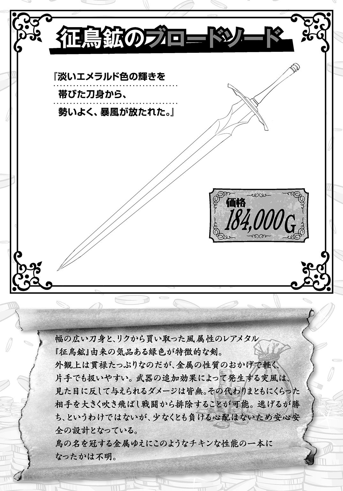
遠く離れたジェムナを目指す道中、俺は身を守る術としてブロードソードを選んだ。
威力はやや落ちるが、戦闘を避ける目的ならこれ以上のものはない。
それに割と軽いしな。ブロードソードは全長八十センチほどの片手剣なのだが、幅広の刀身を持つため見た目の重量感は結構ある。それでも楽々振り回せるんだから金属自体が軽いんだろう。
あと、抜き身のまま背負っていたツヴァイハンダーと違って革細工の鞘に入っているのもいい。オシャレだし、目立たないし。
ホクトの装備も革鎧にさせてある。あんなアホみたいに重い鎧を着た状態で一〇〇キロを超える道のりを歩かせるのは酷だ。とりあえず、移動中はこれで。
「シュウト様、アセルはいかがでしたか？」
隣を歩くミミが質問してくる。要するに、土地を買うのにふさわしいかってことだろう。
「まあまあだな」
俺はそう答えて、広げた地図上に「七〇点」と記入した。
パンはうまいし気候も過ごしやすい。ただ施設は充実していないから、こんなもんだな。
にしても、アセル周辺は山の他にはだだっ広い平原がどこまでもどこまでも続いているばかりで、全然次の町が見えてくる気配がしてこない。
とんでもないド田舎だ。
「一体どれだけ歩けばいいんだよ......」
ぶつくさ言ったところで距離が縮むわけでもないので、我慢してひたすら歩き続ける。
買いこんでいたワインの瓶がどんどん空になった。
アセル土産のパンも......まあこれはほとんどヒメリの胃袋に消えていったのだが。
結局、三度の野宿と一度の検問を経て、俺たちはようやく違う景色を拝むことができた。
空の青、草原の緑、枯れ葉の黄色、といった鮮やかな色合いだったアセル周辺とは異なり、そこは全体的に茶色がかった地域だった。
よくも悪くも泥臭い。粗野なドワーフが暮らす炭鉱って感じがする。
今にもツルハシがカツンカツン岩を砕く音が聞こえてきそうだ。
「パッとしない場所だな」
俺は率直にそんな感想を抱いた。
実際に、鉱山事業が主な産業になっているそうだから、そんな華やかな地域じゃないのはなんとなく予想がついていたけれども。
「うむ、確かに地味ではありますな。ですが質実剛健ともいいますし、自分は嫌いな景色ではないであります」
三日三晩荷馬車を引き続けてなお元気なホクトが、そう語りながら興味深そうに頷く。
まあ景色はいいにしても、問題は住環境なわけで。
「この感じだと町も期待できないな。宝石商人くらいはいるんだろうけどさ」
......と思っていたのだが。
「そろそろ到着だが......あれが......ジェムナか？ マジで？」
茶色い大地に現れた町の佇まいを、外から眺めただけで分かった。
めちゃくちゃ栄えていることが。
想定外のことにいささか面食らった俺だったが、立ち止まるわけにもいかないので意を決して町の中に足を踏み入れる。
直接体感してみて確信した。
アセルはおろか、フィーなんかよりも断然繁栄している町だ。
そもそも人口が多い。
町内を歩いているのは、武器を担いだ格好からして、ほとんどが冒険者と見て間違いない。
冒険者が多いということは、当然武具やアイテム類の店も多く立ち並んでいるわけで、ストリートはどこも大賑わいだった。
宿も選り取り見取りだ。あらゆる価格帯に対応している。
「これです、これですよ！ 私が求めていたのは」
外の景色から連想する無骨さなど欠片もない町の様子に、うずうずしだすヒメリ。
「これぞ、宿場町！ という趣がありますね。冒険者のためにあるような町ですよ」
「それはいいんだが、なんでこんなに活気づいてるんだ？ 採掘で成り立ってる町、っていう割には穏やかじゃないぜ」
軽く冷やかしただけで判明したが、この町の武器屋は品揃えがいい。
値段も相応の額がついている。
「疑問点はありますが、それはギルドで尋ねてみないことには始まりませんよ。おっと、いけません。ここからは別行動ですね。また後日落ち合いましょう」
そう言い残してヒメリはどこかへと走り去ってしまった。
が、ギルドのある方向ではない。
「また飯屋か」
この別れ方も二度目なので慣れたものだ。
俺たちはセオリーどおりに宿を探した後、事情を聞くべくギルド本部へと立ち寄る。
「ようこそ、ジェムナのギルドへ」
髪をオールバックにまとめた、ダンディな雰囲気のおっさんがいた。
「私はここでギルドマスターを務めている......」
「いやいや、その前にだな」
「いかがなさいました？」
「ここのどこがギルドなんだ？」
看板が出ていたから入ってみたが、仕事の斡旋所というよりは酒場と呼んだほうが正しい内部のしつらえだった。
俺がこうして立っている受付のカウンターもバーのようだし、ラウンジでは多くの男たちが昼間から浴びるように石油じみたドス黒いエールを飲んでいる。
できたてアツアツの料理も運ばれてるし、副業にしては本格的すぎる。
現代社会の職安がこんなことになっていたら、失業率は驚異的な数値を叩き出すのではなかろうか。
「ああ、今は一階のテーブル席は満席ですが、そちらの階段を上がれば二階がありますので」
「見たら分かるよ。吹き抜けになってるからな」
そっちでも当たり前のように宴会が繰り広げられていた。
「なにがどうなってこうなった」
「もともと冒険者同士の情報交換の活性化を目的に始めたんですよ。情報の行き交う場所といえばやはり、酒場じゃないですか」
「そりゃそうかもしれないが、酒くせーよ」
俺は今日はまだ紅茶しか飲んでいないのでシラフだ。
「や、それよりだな、なんでこの町はこんなにも冒険者が多いんだ？」
「それはもちろん、名物の宝石鉱山で一攫千金を目論む方々が多数おられるからに他なりません」
「宝石鉱山ってのはそんなに稼げるのか？」
「ええ......といっても、採掘は必ずしも行わなくてよいのですが」
理解不能なことを喋ってきた。
「鉱山なのになんで採掘がいらないんだよ」
「魔物自身が溜めこむからですよ。宝石鉱山にはゴーレムという強大な魔物が出現しまして、こちらが素材として稀に宝石類をドロップするのです」
「へえ」
素材ということは俺のスキルで増やせたりはできなさそうだな。残念。
「もちろん、クズ石であることがほとんどですがね。ただし、通常の採掘では手に入らないような希少度の高い宝石を落とす場合もあるとか、ないとか......」
「どっちだよ」
「それはあなた自身の目でお確かめください」
うまい文句で締めやがって。
だが俄然宝石について気にはなってきた。
激レア物の売却価格もそうだが、こめられた魔力にも関心がある。
「私からお伝えできるのはこのくらいです。詳しい話は、一杯やっていらっしゃる方々からお聞きください」
「そうさせてもらうか......ミミ、ホクト」
俺は後ろに控えていた二人に声をかける。
「なんでありましょう？」
「酒を注文するから、お前らもなんか頼め」
俺はメニュー表から蜂蜜酒のレモン果汁割りをオーダーした。
「ええ？ 自分たちもでありますか？」
「そうだ。こういうとこは酔ってないと雰囲気悪くするからな、郷に入っては郷に従うぞ。そっちのほうが円滑に会話がしやすくなる」
「ええと、それでは......ミミは甘口のロゼでお願いします」
案外いけるクチのミミは飲む気満々だ。かわいらしいピンク色の液体が注がれたグラスがカウンターに置かれると、山羊の耳がうっとりしてタランと垂れる。
一方でホクトは職務中に遊興目的で飲酒していいものかと逡巡している。
「まあいらないってんなら無理に飲まなくてもいいけどな。『上司の杯が受けられないのか』とか、そういうパワハラはやりたくねぇし」
「い、いえ、主殿のお誘いを断るわけにはいかないであります！」
「いいのか？」
「是非！」
ということでホクトには樽入りのエールをジョッキで与えた。
それぞれのドリンクを手に俺たちは二階へ。
「おっさん、相席いいか？」
六人がけの円卓に、どういうわけか一人で座っていた恰幅のいい男に許可を求める。
周りが少しざわついた気もしたが、特に何か干渉してくるわけでもないので無視。
それにしてもガッシリした男だな。ラガーマンかよ。巨大な諸刃の斧を座席下に置いているあたり、このおっさんも冒険者だろう。
「おう、好きにしな」
「サンキュー」
「後ろのお嬢さんたちもこっち来て座りな。遠慮するこたァない」
「構わないのか？ こいつら俺の奴隷だぜ」
「気にしねェよ」
おっさんは赤ら顔をくしゃくしゃにして「グワハハハ」と豪快に笑った。
テーブルの上には大量に空のジョッキが並んでいる。相当酔ってやがんな。
まあミミとホクトもご一緒していいとのことなので、ありがたく厚意に甘えさせてもらう。
「早速だが、聞きたいことがあってだな......」
「その前に乾杯しようじゃないか。おーい、店員さん！ もう一杯エールをくれ。そう、大サイズのジョッキで」
丸太のような腕を上げておっさんは酒の追加注文をする。
「んじゃ乾杯すっか。今日の出会いに、乾杯ィ」
オヤジくさいノリにはついていけないが、一応の礼儀としてグラスをぶつける。
俺が一口飲む間におっさんはジョッキの半分を飲み干してしまった。
どんだけウワバミなんだよ。
「......で、質問ってェのはなんだ？ どんなことでも答えてやるぜ」
「宝石鉱山についてだ。ちょっと宝石ってのに興味があってな」
「宝石か。ありゃミステリアスだぜ。高く売れるだけじゃなく、宝石でアクセサリーを作ればいろんな追加効果が見こめるからな。なぜなら......」
「魔力があるからだろ。そのことは知ってる」
「おっ、勉強してきてんじゃねェか」
「俺も欲しくてね。掘るか、ゴーレムを倒せば手に入るってところまでは聞いてるんだけど」
入手法について詳細を尋ねる。
「ま、その二つのやり方しかないわな。宝石が欲しけりゃ地道に採掘するのが一番だが、腕に自信があるならゴーレムを狩ったほうが早ェ。大半がゴミでも、十体に一体か二体は宝石を落としやがるからなァ、あいつらは」
確率ひっくいな。
そこから更にレアドロップとなるとどれだけ小数点以下にゼロが並ぶのか。
まあ俺の場合、潤沢な予算を活かして誰かが拾ったのを買い取るんでいいが。
「宝石の原石は、まあバラつきはあるが一個五万から二〇万くらいが相場だな。これがゴーレム産限定の珍しいモンだと十倍近くに跳ね上がるがね」
クソたけーな、おい。
とはいえ宝石目当てでゴーレムを狩りまくればそのうち資金も貯まってくるだろうし......。
......だがおっさんの次の言葉は俺のワクワクを一気に奈落の底へと沈めた。
「ゴーレムの奴はロマンの塊だからなァ。一切硬貨を落とさないくせにレア宝石を落とせばデカい稼ぎになるんだから、夢しか詰まってねェぜ」
「はあ!?」
衝撃の事実に思わず啞然としてしまう俺。
「マジかよ。ゴーレムって金を落とさないのか？」
「そんなに驚くようなことか？ あいつらは硬貨の代わりに、宝石を溜めこんでるからな」
なんて最悪な敵だ。森のウサギより倒し甲斐のない魔物がついに現れてしまったか。
「レア物が生まれる理由も、ゴーレムの成分と反応した結果突然変異を起こすから、ってェのが通説だ。あいつらの体は全身石でできてやがるからな」
ふむ、そういう理屈か。
金貨を落とさないという情報の余波がでかすぎるせいで今ひとつ頭に入ってこないが。
「まっ、俺から教えられるのはこんくらいかな。......ん？ なにをぼーっとしてんだ？」
「......あ、ああ、悪い。酒が回っててさ。話のお礼に一杯おごるよ」
「それには及ばねェ。俺もこれから用事があっからな......よっと！」
おっさんは床に置かれた斧を軽々持ち上げ、それを背負う。
「宝石取りに行くんなら、しっかり準備はしておけよ。お前さん、装備を見た感じなかなかやりそうだが、気なんて抜けないからな。ゴーレムは馬鹿になんねェぜ？」
と言ってフラフラの足取りで階段を下りていき、酒場......ではなくギルドから退席した。
残された俺はといえば、まだ先ほどのショックが拭いきれていない。
「ゴーレム、金落とさねぇのかよ......」
同じことを何度も何度も呟いていた。
とはいえ、そういうことになっているのだとしたら仕方あるまい。
とりあえずレア宝石の募集だけ出しておいて、早めにこの町を去るとするか。
ここじゃ儲けにならないからな。ゲットした宝石で自身を強化して、より効率を上げた状態で次のスポットに臨もう。
「......シュウト様」
「どうした？」
ほろ酔いのミミが俺の腕をつっついてくる。
「ミミたちは宝石鉱山には行かなくてもいいのですか？」
「うーん、それなんだよな」
募集したレア宝石の納品が済むまでの間はかなり暇になる。
それなら一応鉱山に出向いてみて、自力での発見も狙ったほうがいいだろう。
「明日依頼を出したら、俺たちもゴーレム狩りに行ってみるか。ホクト、運搬は任せたぜ」
「了解しちゃでありはす！」
ホクトはかなりできあがっていた。
顔全体が上気している。
とはいっても一杯だけだから明日に引きずるほどではないので、気分よく酔わせといておくか。日頃相当働いているし。
「ああ、それから、明日は防具屋にも寄るからな。磐石の態勢でいこうぜ」
おっさんからゴーレム相手に気を抜くなと忠告されたことだしな。
良品があればいいんだが。
翌日、俺がギルドに掲示した依頼は『希少宝石募集 応相談』といった内容だ。
モノによって価格が変わってくるので報酬は変動制にしてある。
次いで三人で防具屋に向かったのだが......。
「こりゃすげーわ」
文句なしのラインナップだ。
衣服から重鎧にいたるまで、広い店内を埋め尽くすほどにギッチリと並べられている。需要が分かっているからこその品揃えだな。
価格帯も様々だが、中でも銀色の輝きを放つ防具類が目につく。
「この鎧、結構な額してるけど......もしかして」
「お客さん、鋭いねぇ。そいつはレアメタルを一〇パーセントほど含んだ上物さ。量産品の中ではトップクラスの性能だね」
「ほう」
光銀鉱なる土属性の魔力を宿したレアメタルが用いられているとのこと。
ただレアメタルといっても比較的ありふれた素材であり、純度一〇〇パーセントの鉄よりもやや硬度に優れるという程度のものらしい。
だからこそ安定した生産ラインに乗せられるのだろう。
「っても、並みの防具より良質なのは間違いないか」
けれど、それらよりも俺の目を奪っている代物がある。
店の片隅に吊られたカーキ色のレザーコート。
一点限りで一三万七〇〇〇Ｇの値段がつけられている。先ほどの鎧よりも更に上だ。
丈の長いそれは、金属パーツが随所にあしらわれており、見た目もなかなか格好がいい。
「あれはなんだ？」
「以前に交易で仕入れた品でね、カトブレパスの革を使ったコートだ。あらゆるタイプの衝撃に対して充分な防御力があるし、石化にも耐性がつく。値段相応の性能は保証するよ」
「にしては売れ残ってるな」
というか、埃被ってるし。
「そりゃあね、いくら高性能でも所詮は服のカテゴリーでの話だからだよ。似たような丈夫さでも光銀鉱の鎧のほうが安いんだから客はそっちを選ぶってもんだ。石化の呪縛を使ってくる魔物もこの辺りにはいないしさ」
「でも軽いんだよな？」
「それはもちろん」
「なるほど。そいつは非常に俺向きだな。これを買っていくぜ」
俺は迷わず購入を決意した。
値段さえ無視すれば曲がりなりにもレアメタル製である鎧クラスの防御性能が得られるっていうんなら、買わない理由はない。
一括払いしてその場で装備。
姿見で確認する。
うむ、スタイリッシュだ。
背中の剣にロングコート。完璧な組み合わせだな。
「よし、じゃあ今までアウターとして着ていたベストはミミに......」
「そいつは無理だよ、男性ものじゃないか」
は？
「男専用の防具は女は装備できない。常識だろ？」
「んなアホな。サイズが多少でかいくらいで着られないはずが」
「いや、ダメ」
この世界の謎のルールにより、ベストをミミに装備させることはできなかった。
どうにも腑に落ちないがそういう仕組みになっているらしい。
「くっ......だったら新しいローブを買っていくか......」
しかしローブはどれも同じようなもので、今羽織っている植物繊維のものより明確に上と言い切れる逸品は見当たらなかった。
「うーむ」
仕方ない。どうせミミは後衛だし、防御面は後回しにするしかないか。
とりあえずホクト用の新しいプレートメイルを買って、防具屋を去る。
その足で宝石鉱山へと向かった。
「うおお、なんて賑わいだ......圧倒されるな」
町を出て一時間ほど歩いた先にあるそこは、既に多くの冒険者が集まっていた。ツルハシを相棒に続々と坑道の中へと踏み入っていく。
坑道、といっても人の手が入りまくっているからか、まるで元いた世界のトンネルのようだし、当然のように灯りも確保されている。
入り口前には宝石の鑑定所が併設されている。
見た感じ、買い取りも行っているようだ。
「よっしゃ、俺たちもいっちょ挑戦するか」
銀の鎧に身を包んだホクトと、杖を掲げたミミが同時に「おー」と手を上げた。
いざ坑道へ。
各所にランプが設置されているから暗くはない。
通路も広いし天井も高いな。
「活気がありますなぁ。まさに鉱夫たちの戦場といったところでありましょうか」
ホクトが思わずそう感心して呟くくらい、大量の冒険者たちが岩壁に向けて一心不乱にツルハシを振っていた。
「俺はまったく興味ないけどな......あいつらも汗水垂らしてよくやるよ」
採掘なんてめんどくさい作業はやる気がしない。
ゴーレムを倒して手っ取り早く宝石をいただくとしよう。
依頼を出すついでにもらった宝石鉱山の地図を眺めてみる。
手前側は採掘専用のエリアであり、魔物はほとんど発生しない。奥に行けば行くほどゴーレムの出現率が上がっていくそうなので、俺はガンガン進んでいった。
「人が減ってきましたね」
「そうだな」
手前の採掘場には多くの人々が群がっていたが、半ばを過ぎた頃には少数になっていた。
戦闘で宝石を稼ごうとしているのはこれだけということか。やはりゴーレム相手は一筋縄ではいかないらしい。
ところで、現在の俺の装備はブロードソードのままだ。
土属性のツヴァイハンダーだと、全身が岩石で構成されているというゴーレムには効きにくいかもしれない。純粋な威力では劣ってもブロードソードのほうがマシなのではなかろうか。
まあこれは俺の考えではなくミミの意見なのだが。
とはいえ俺としてもこの剣は魔物との戦闘でも扱ってみたかった。風を起こす追加効果には応用力がある。練習がてらに振るってみるのも悪くない。
「......おっ」
異変を察知して足を止める。
「早速お出ましか」
いくつもの立方体で組み立てられたような外見の、灰褐色の石像。
ゆっくりとだが動いている......あれがゴーレムだな。
体高は二メートルちょっとか。イメージしてたよりは小さいな。
慎重に接近。
剣を抜き、対峙する。
この睨み合った状態の緊張感が......。
「......いや、動けよ」
まったくしかけてこない。こっちから先に斬りかかっても構わないってことか？
「それじゃ遠慮なく」
なにかしらアクションしないことには始まらない。俺はブロードソードの緑の刃を思いっきり叩きこんでやる。
「うおりゃ！ ......って、痛ぁっ!?」
右手が電流でも走ったかのように痺れる。剣と石との激しい衝突による反動が原因だと理解するまで数秒かかった。
かてーよ、馬鹿。
これはあれか。フィーの洞窟で見かけたゼリーの逆パターンか。
もっとも一切攻撃が通じていないわけでもなさそうで、ゴーレムの表面にはヒビが走っている。さすがはレアメタルの破壊力といったところか。
そんなことを考えている間に、ゴーレムは恐ろしくでかい手を握りしめると、俺に向けて拳打を放ってきた。
回避できるような技量は俺にはない。モロに命中する......が。
「......全然効いてねぇな」
まったくの無傷だった。怪我はもちろんのこと痛みすらほとんどない。ベストよりも防護範囲が広いおかげか、明らかに受けているダメージが少ない。
なんなら剣をぶつけた時のほうが痛かったな。
「だがまあ、やられる心配がないってんなら安心して挑めるな」
さて、どうこのデカブツを料理するか。
さっき推考したように、多分こいつは物理攻撃に対して頑丈な代わりに魔法には弱いはず。
しかしブロードソードが起こす風にはほとんど威力がない。
となると。
「ミミ、連繫していくぞ」
「はい。シュウト様の指示に従います」
焦ることはない。こっちには優秀な魔法使いであるミミがいる。
まず俺は向かってくるゴーレムに向けて切っ先を突きつけ、旋風を浴びせる。猛烈な勢いの風に吹き飛ばされたゴーレムは鉱山の岩壁に叩きつけられ、一時的に意識を飛ばした。
本来この剣の追加効果で期待できる役割はここまでなのだが、逃げるための時間稼ぎ、ではなく、追い討ちのチャンスとして活用する。
「今だ！ 魔法で追撃してくれ！」
「分かりました......パラライズ！」
杖をかざしたミミによる遠距離攻撃が飛ぶ。
魔力によって生成された光の糸がゴーレムの肉体に巻きついた。
ミミが習得している『初級呪術』は、属性などは一切存在しない代わりに呪縛効果がある、らしい。ミミから聞いた話なので詳しくはよく知らない。
うまくいけばダメージだけでなく敵に追加効果を与えることができるそうだが......。
「......これ、成功してるよな？」
糸から逃れた後もゴーレムは動きがギクシャクとした不自然なものになっている。
「ええと、麻痺の呪縛にかかっていると思います......他の魔法も試してみましょうか？」
「おう、任せた」
「では......フラジリティ！」
今度は真っ黒な煙が尾を引くように杖先から放たれた。
黒煙がゴーレムを包む。
にしても、近寄せなければ完全にデクの坊だな、この魔物は。
「先ほどの魔法には虚弱の呪縛をかける効果があります。きっと今なら、シュウト様が剣で攻撃しても大丈夫だと思います！」
やってみるか。
「でりゃあっ！」
再接近し、剣を振りかぶった。
相手は麻痺しているから反撃をくらう心配もない。存分に刀身をぶつける。
手に痺れは......伝わってこない！ 衝撃はすべてゴーレムへと流れ、その肉体があたかも砂であるかのように粉微塵になって崩れ去っていく。
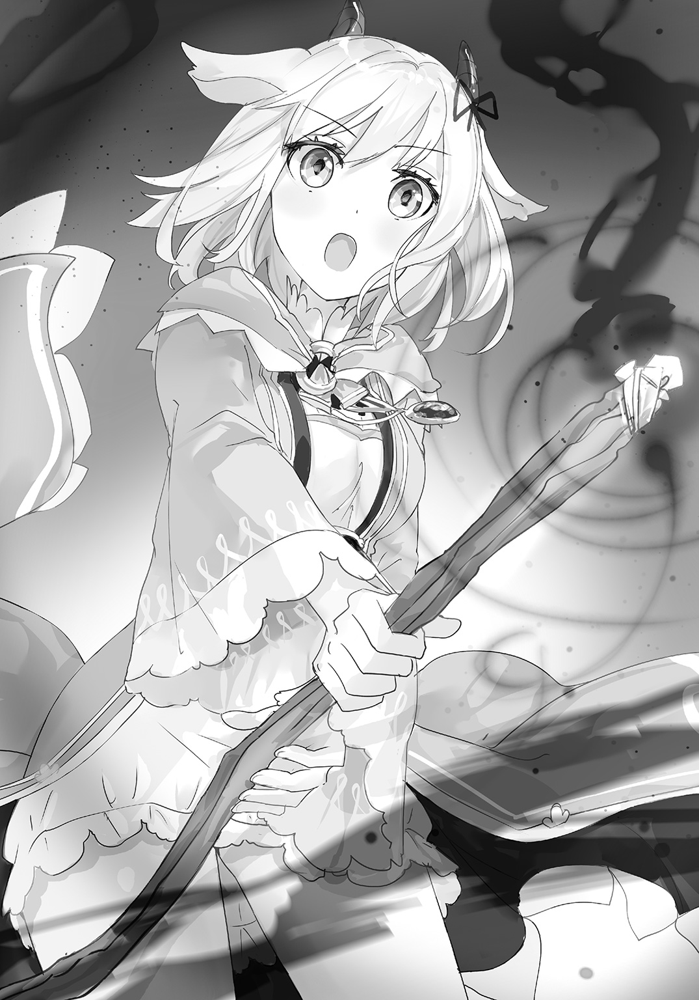
ゴーレムは破砕され、おぼろな煙へと姿を変えた。
「よくやってくれたぜ、ミミ」
俺は勝利の立役者であるミミとハイタッチを交わす。
ミミはいつにも増してぽけっとした表情を浮かべていた。魔法がもたらす効力に自分自身でも驚いているようだ。
「ミミはとてもとてもドキドキしています。攻撃魔法を使ったのは、初めてですから」
「その割には上出来だったけどな。状況に合わせて使い分けてたし」
これが才能ってやつなのか。
加えてレア素材の杖とアクセサリーで補強しているからな。呪縛効果だけじゃなく実ダメージも相当稼いでいたことだろう。
「......だが......」
ゴーレムの討伐に成功したというのに、俺はその結果をイマイチ喜べずにいる。
それもそのはずで、ゴーレムが落としたのは昨日説明を受けたとおり石の塊だけ。
金貨は影も形もない。
スキルが発動しないから人目を気にせずに戦えるのはいいのだが......が......。
「すげーモチベーション下がるわ......」
ドロップアイテムにしたって、宝石なのかクズ石なのか現段階では区別できないし。
成果が実感できないとは、なんて過酷なシチュエーションなんだ。
苦境にもめげずゴーレムを討伐し続ける俺とミミ。
虚弱の呪縛とやらはかなり強力で、一度風圧で距離を取ってから重ねることで硬度自慢のゴーレムもさほど難航せず倒していけた。
まあ手間がかかる分サクサクとはいかないけども。
「おお、素晴らしいお手並みであります！」
戦闘要員でないホクトはすっかり「さすごしゅ」ポジションが板についてきた感があるが、表情をチラリとのぞきこんでみるとやや物足りなさそうだ。
やはりミミのように戦闘で役立てないことに複雑な想いがあるらしい。
俺からしたら素材を詰め込んだカバンを運んでくれるだけでありがたいんだがな。
結局、俺は四時間ほどで十七体のゴーレムを叩き割った。
しかしこれだけやっても手元に残されたのは討伐したのと同じ数のよく分からん石の塊のみ。
実感もクソもない。
唯一手応えを得られたのはブロードソードの使い勝手ぐらいだな。ゴリ押しはできなくなったが、頭をひねって戦ってる気がするから満足感は高い。
とりあえず今日のところはこんなもんでいいか。
疲れてきたので脱出。
出入り口の近くにある鑑定所にて宝石か否かをチェックしてもらう。
「この数......採掘で獲得してきたのか？」
カウンターの上にゴロゴロと並べた石をじっくりと眺めながら、顔の怖いおっさんがいぶかしげに聞いてくる。
「いや、ゴーレムをボコって取ってきた」
「ほう。だったら期待はできるか」
ニヤリと唇を曲げるおっさん。
ほほう、採掘よりはゴーレム産のほうが期待が持てるのか。
まあレア中のレアはゴーレムからしか入手できないそうだしな。
「うむ、性質からして紛れもなくゴーレム由来の石だな」
そんなことまで分かるのか。この世界の鑑定技術は相変わらず最先端をいってやがる。
「すべての鑑定が終わったぞ」
「どうだった？」
「十五個はなんの価値もないただのクズ石だ。しかしルビーとオパールの原石が一個ずつある。それぞれ七万四四〇〇Ｇと九万一五〇〇Ｇで買い取ろう」
ええ......たったそんだけかよ。
俺はついうっかり提示された額に不満を漏らしそうになる。
ゴーレムはその強さから逆算して、俺の見立てだと金貨三十枚くらいは落としてもおかしくない。ってことは本来五一万Ｇは稼げたはずなのだが......。
「一応聞いておくけど、レア物なんかじゃないよな、これ」
「仮にそうだったらこの金額じゃ済まないな」
ですよね。
ということは普通に装飾品として市場に出回っているレベルだろう。イチから加工するのも面倒だし、どちらの原石も買い取ってもらった。
「毎度あり。いやいや、さすがにゴーレムを十七体も倒しただけのことはあるな。今日だけで一カ月分は稼いだんじゃないか？ 笑いが止まらんだろう」
金貨を積み上げるおっさんは景気のいい話をしているつもりなんだろうが、俺は到底そんな上機嫌にはなれない。
あれだけ働いて一六万ちょっとって。
俺は苦笑しか返せなかった。
「これだったら、同じ鉱山でもオーク狩ってた頃のほうがマシだな」
鑑定所を出た後、ハァと溜め息を吐きながらそのへんにあった岩に腰かける俺。
「お疲れのようですね。ミミにできることはありますでしょうか？」
「いや......ないな。体が疲れてるわけじゃないし」
気遣ってもらえるのはありがたいが、今抱えている重苦しい感覚はミミの魔法でどうこうできるもんではない。
それにしても、我ながら金銭感覚が狂ってしまってるな。確かに一六万もあれば何不自由なく一カ月間暮らせるんだろうが、どうしても少なく感じてしまう。
「......そういや、やけに集団で行動してるな、ここの奴らは」
鑑定所に出入りしている冒険者は複数人編制なのがほとんど。
討伐組はパーティーを組んで臨んでいるケースがあるだろうからともかく、採掘組までそうなのは謎である。
「それはチームを結成してっからだ」
後ろから声をかけられる。座りこんだ俺をでかい体で覆うように顔をのぞきこんできたのは、昨日酒場......じゃない、ギルドで顔を合わせた斧のおっさんだ。
「よう兄ちゃん。ゴーレムとは戦ってみたか？」
「ああ。今がその帰りだ」
「だろうなァ。疲れた顔してるし。で、宝石は見つかったか？」
「見つけたよ。二個な。十七体も倒したんだから、そのくらいはもらわないと困るぜ」
「そんなにか！ そりゃ凄ェ。Ｄランク四人でパーティーを組んでも、せいぜい一日に三体か四体が限度なんだがなァ。武闘派のＣランクがソロで挑んでもそんくらいだ」
「ふーん」
ということは期待値だけ考えたらそこまで割がいいわけじゃないのか。
冒険者が集まっているから物価も高いし、ヤンネがここで金稼ぎしなかった理由も分かるな。あいつ本人はともかく、周りの女たちは戦闘力より依頼で名声高めたタイプっぽいし。
「兄ちゃん、相当やるねェ。こりゃ俺もウカウカしてられないな」
まあ、正確には俺一人で倒したわけじゃないが。
「それよりチームってなんのことだ？」
「簡単な話さ。一人で採掘したって毎回原石を掘り当てられるわけじゃない。取得確率はゴーレム経由なら十分の一くれェだが採掘だと百分の一にまで下がる。当たりゃあデカいが外した日は完全にオケラだ。しかもほとんどが外すんだから落差が激しすぎるだろう？」
「まあな」
ギャンブルもいいとこだ。
「だから生活を安定させたい奴らは、チームを組んで活動するんだよ。一人では一日に二十個しか掘れなくても、五人集まりゃァ百個になるわけで、そうすりゃ理屈の上じゃ毎日一個はチームで原石を獲得できる。その売却額を山分けすんのさ」
「なるほど仕組みは分かった。だがな、こっそり隠し持つ奴がいたらどうなるんだ？」
「そこがミソでな。チームに所属している間は、個人で鑑定も売却も加工もできやしねェんだ。全部チームぐるみでないと行えない」
だから鑑定所に束になって押しかけてきてたのか。
「知ってのとおり石ってのは鑑定してみねェことには価値があるかどうかハッキリしない。チームを抜けるまでの間、百に九十九はクズ石のものを密かに集め続けるってのは苦行もいいとこだぜ。ちょろまかすのは虚しすぎらァ」
「ああ......なんとなく分かるわ。人目を気にしつつ家にゴミ溜めこむようなもんだからな」
「それならおとなしく提出して早めに鑑定してもらったほうがいいってもんよ」
それに他の奴と比べて採掘量が少ないと怪しまれるしな、とおっさんは続ける。
「当然、一発で大きく当てたい奴は単独で行動するがね。お前さんみたいにさ」
「ふむ」
言うまでもなく、ゴーレム討伐をパーティーで行ってる連中も取り分は人数割りになるのか。
「まあその辺に転がってるような宝石はどうでもいいんだよ。俺はレア物を求めてるんだ」
土地探しの旅を続ける中でどんな困難が待っているか分からんからな。
絶大な効果を持つアイテムは喉から手が出るほど欲しい。
「一応、ギルドに募集はかけてみたけどさ」
「そいつァ難しい注文をしたもんだ。ゴーレムを狩りに来る冒険者ってェのは、大概己の強さを求めてるのが多いからよォ。レア物が手に入っても自分用に使うんじゃないかな。パーティーを組んでいて独占が困難な場合は売るかもしれんがね」
むむ、そう聞くと望みは薄そうだな。
アホほど金を積めばいけるかもしれないが、いくらなんでも全財産の半分を超えた額になったりしたら一度に注ぎこむのは勇気がいる。
「ま、自分で拾うにしても、人から譲ってもらうにしても、気長に待つしかないわな。若いんだしゆっくりやっていきな、兄ちゃん」
おっさんはガハハと絵に描いたような豪放磊落さで笑って、どこかへと消えていった。
残された俺は腕を組んで静かに考えこむ。
もちろんレア宝石の入手手段についてなわけだが、俺はこの時、とある冴えたやり方を頭に浮かべていた。
物価も高い。金も（当社比で）稼ぎにくい。はっきり言って、俺がこの町に長居するメリットは皆無である。徒労感が半端ではない。今ある金でやりくりして速やかに目的を果たし、さっさとオサラバしたいところだ。
必要に迫られているからだろうか、珍しく脳ミソがよく回転してくれていた。
「気長に待て、か」
その必要はない。
あらゆる話を総合して妙案に辿り着いた。
これは明日にでも実行に移すっきゃない。
その日、俺はミミとホクトを宿に残して、一人ギルドのラウンジで優雅にモーニングコーヒー......ではなく、迎え酒をあおっていた。
運ばれてきた未確認肉の香草焼きを肴に、朝っぱらから飲むワインもオツなものである。
午前中だから客も少ない。
そんな俺のゆるりとした朝の静かな時間を、慌ただしい足音がぶち壊した。
「シュウトさん、少々お時間いいですか？」
お転婆にはもったいない艶やかなブロンドヘアーを振り乱し、落ち着かない様子で張り紙を握ったヒメリがテーブル席にまでやってくる。
「おい。それ俺が受付のスペースに貼っておいてもらったのに剝がすなよ」
「ちゃんと許可はいただきましたよ。それよりです」
張り紙をバンバン叩きながら質問してくるヒメリ。
「なんですか、この『財団法人・チームシラサワ』というのは？」
「書いてあるとおりだけど」
「いえ、そういう話ではなくてですね......」
「業務内容まで説明しないとダメか？ それも一緒に書いてあるじゃん。分かりやすく言うとだな、ゴーレム討伐でも採掘みたいにチーム制度を導入したわけよ。一昨日思いついて昨日準備したからな、かなりの急ピッチだぜ」
「だから組織の仕組みについて尋ねてるんじゃないですよ！ どうしてこんなものを作ったのかということです」
成り行きか。そんなの簡単な理由なんだが。
「レアな宝石が欲しかったんだよ。でも買い取りだと難しそうだったからな。その分の金を別の方法で運用することにした」
「だから財団ですか。資本金があるからってまた派手な真似をしますねぇ」
「そう褒めるなよ」
まったく褒めてませんよ、ヒメリが冷ややかに言ったが、心にゆとりのある俺は気にも留めなかった。
「......それで、何人がチームシラサワに登録したんですか」
「今日は四十五人を派遣している。ソロ登録が七人、パーティー登録が十組で三十八人だ。ま、初日だからこんなもんだろ」
「随分な大所帯ですね。本当にうまく回るんですか？」
「ちゃんと規律は用意してあるさ。まあ見てなって」
そうヒメリに答えた俺は、ワインの瓶を空にしてから宿に戻り、余裕を持って二度寝した。
夕方、俺は宝石鉱山へと出発する。
重役出勤気分を味わいながら向かった鉱山前には、既に作業を終えたチームのメンツが何人か戻ってきていた。
「シュウトさん、待ってたよ」
「おう。それじゃ、集めていくから順番に並んでくれ」
俺の号令で冒険者たちが列をなしていく。
班の人数に違いはあるが、共通してゴーレムから得た石を詰めた革袋を担いでいる。
袋は俺が支給したものであり、表面に番号が記されている。
登録時に割り振った番号と同じ数字だ。
こうすることで石を取得した日付をごまかしたり、非ゴーレム産のものを納入する不届き者がいた際に瞬時に鑑定を介して見分けることができる。
「よし、確かに受け取ったぜ」
中身を確認しつつ、袋ごと石を回収する俺。
まずは日当として二〇〇〇Ｇを渡す。
これはソロ登録だろうとパーティー登録だろうと同じ額だ。人数ごとに出していたら架空のパーティーメンバーを申告する奴が現れかねないからな。
また、石の納品量にもよらない。
固定給みたいなものである。
当たり前だが、ゼロの奴は納品すらできないので日当を受け取ることはできない。サボりには厳しく対処させてもらう。
それから歩合給として、石一個につき七〇〇〇Ｇを支払う。
「四個だから......お前には二万八〇〇〇Ｇだな」
「へへっ、毎度あり」
「こっちこそありがたい話だぜ」
その後、俺はサインを記入させた。
チームを組んでいるという扱いなので個人では鑑定不可能。このルールは石を勝手に管理されることを防げもするが、当然俺にも適用されるので、鑑定所のおっさんのところに持っていく前に全員から許可を取る必要がある。
「いや助かったよ。これだけ安定した稼ぎになるんなら、ゴーレムを狩るのも悪くないねぇ」
感謝を述べながら納品を済ませた冒険者たちは去っていく。
つまりはそういうことだ。
誰しもがゴーレムを大量に狩れるわけではない。パーティーを組んでようやく三個か四個、よくて五個しか石を獲得できないのだとしたら、外れるリスクを天秤にかけて、コツコツ採掘をしたほうがマシと考えてもおかしくはない。
ゴーレムを狩りに来る奴の大半は自己強化が目的というのも、そういった事情ゆえだろう。
だから俺は、ハズレかアタリか分からない状態の石を一個あたりの期待値に近い金額で引き取ることにした。
安定志向の冒険者が乗ってくるのは想像に難くない。
手に入るのはひとつの班につき、たったの数個。
だが塵も積もれば山となる......集めに集めた石の総数は、八十個に至った。
全部まとめて鑑定所に持ちこむ。まとめて、とはいっても、どれが誰の納品物か分かるように袋ごとにである。
ではこれより、八十連ガチャを開始する。
クズ、クズ、クズ、クズ、クズ、クズ、『トルマリン』、クズ、クズ、クズ。
クズ、クズ、『ガーネット』、クズ、クズ、クズ、クズ、クズ、クズ、クズ。
クズ、クズ、クズ、クズ、『トパーズ』、クズ、クズ、クズ、『サファイア』、クズ。
クズ、クズ、クズ、クズ、クズ、クズ、『ダイヤモンド』、クズ、クズ、クズ。
クズ、クズ、クズ、『アイオライト』、クズ、クズ、クズ、クズ、クズ、クズ。
クズ、『トパーズ』、クズ、クズ、クズ、クズ、クズ、クズ、クズ、クズ。
クズ、クズ、クズ、クズ、クズ、クズ、クズ、『ヘリオライト』、クズ、クズ。
クズ、クズ、クズ、クズ、『アクアマリン』、クズ、クズ、クズ、クズ、クズ。
鑑定の結果、宝石の原石と判明したのは九個。
しかし、どうやら希少品、いわゆるＳＳＲは含まれていないらしい。......スカか。
ガッカリしながらもクズ石をその場で廃棄し、すべての原石を買い取ってもらう。
合計査定額は七一万二八〇〇Ｇ。
石の買い取り総額である五六万Ｇを超えているので、差額分は一旦プールしておく。
売却金額を記した受取証明書を切ってもらい、帰還。
「おかえりなさいませ。ウェルカムドリンクはいかがですかな」
「うむ、一杯もらおうか。だがその前に、こいつを貼っといてくれ」
ギルドのダンディズム溢れるおっさんに頼み、鑑定所の書類をチームシラサワの張り紙の隣に掲示しておいてもらう。
収支を発表することで財団の透明性をアピール。基本中の基本だ。
買い取りと売却によって生じた差額は次回以降に持ち越しになり、レア物を取ってきた奴にすべて渡すことにしてある。仮にマイナスになればその日の分は加算しない。
日当の支払いや差額の補塡を行っている分俺が金銭的に得することは絶対にない。逆に言えば参加者が全面的に得をするため、不満の声が上がることもない。
完璧な資産運用だな。
まあ今日はスカに終わったのだが、明日からのお楽しみとするか。
晩飯のパンと魚の燻製を買って宿に戻る。
「お疲れさまでした、シュウト様」
ドアを開けるや否や、早速ミミが一礼する。
「いかがでしたか？」
「ダーメだ。ハズレ。まあいきなり一日目からうまくいくとか、そんな甘くはないわな」
それより飯にしよう、と俺は切り出したのだが。
「いえ、ちょっと」
ホクトが遠慮がちに言う。
「どうした？」
「一人で考え事をしたい気分なので、自分は屋上で食べてくるであります」
「そうか」
「......少し長引くかもしれませぬので、ご理解をいただければ幸いであります」
燻製を挟んだパンを片手に部屋を出るホクト。
前の町にいた時からそうだったが、ホクトは数日おきに二時間ほど席を外すようになっている。
俺とミミのオトナの関係を知っているからだろう。
せっかく気遣いをしてもらえたんだから、無下にするのもよくない。決して俺の性欲がこみ上げてきているだとか、そういうのでは、まあ、本音を申すと、あるんではありますけども。
「ミミ、リフレッシュをかけてくれ」
「今ですか？」
「鉱山帰りで汚いからな」
コートを脱ぎながらだった俺の発言の意図を読み取ったらしく、ミミは恥じらいをかすかにのぞかせつつも母性に満ちた笑みをたたえて、浄化作用のある魔法を唱える。
俺はテーブル上の食事をほったらかしにして、頰を染めたミミをベッドに押し倒した。
我慢できないのも無理はなかろう。ミミは魔法の才能がＢとしたら抱き心地はＳＳＳくらいはあるんだから。
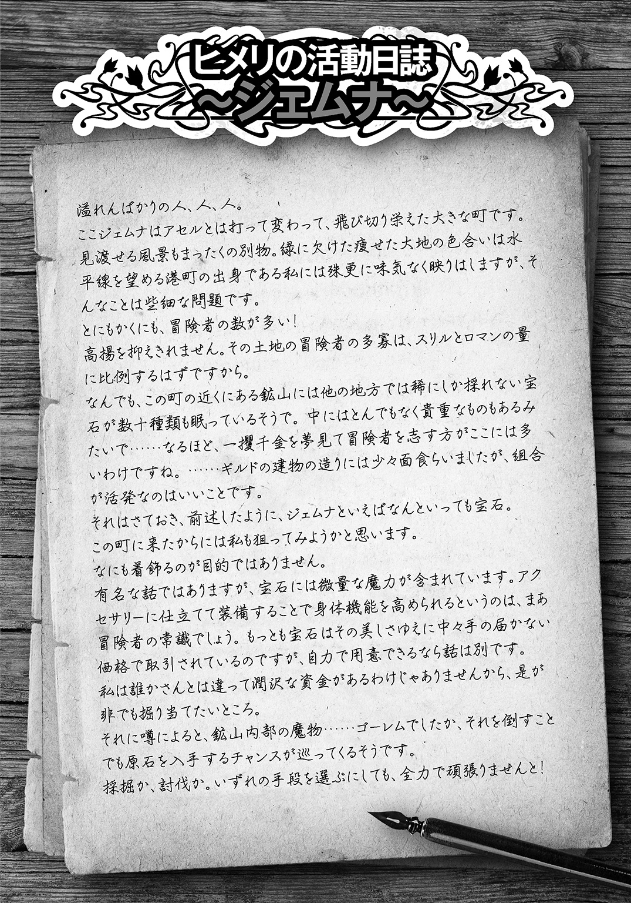
チームシラサワの営業を始めてから四日が経過した。
が、しかし、依然として超貴重な宝石は見つかっていない。
ただ登録人数だけは増え続けていた。これはどんどん溜まっていく余剰金に惹かれて、一発のデカさを重視する層までも宝クジ感覚で集まってきているのだと思われる。
まあ人手が増えればガチャを回すチャンスも増えるので、俺としてはありがたい話だ。
あと、俺自身が働かなくていいのも最高。
しかし五日目を迎えたこの日......。
「参加希望者ゼロ!? なんでだ？」
午前九時頃にギルドを訪れた俺は、おっさんからその数字を聞かされて愕然とした。
けど、ラウンジに詰めかけている人数を見ればそれも納得だ。まだ朝だというのに妙に多い。探索に出向いている冒険者自体がかなり少ないことが一目瞭然である。
「このところ、ゴーレムの駆除数が爆発的に増えてますからねぇ」
そりゃあ、俺が差し金を送り続けてるからな。
「例年よりゴーレム・グレバンダニカ・ティランティの出現時期が早まっているようです。おかげで宝石鉱山に向かう冒険者は激減していますよ」
「なんだそいつは？」
慣例として尋ねはしたものの、聞いた数秒後に忘れてしまうような名前からしてどうせレアモンスターなのは分かり切っている。
「ゴーレムを一定の数だけ倒すと現れるという、いわば、ゴーレムたちのボスのような存在です」
なら呼び方はキングゴーレムでいいか。
......いや、ありきたりすぎるな。俺のセンスが疑われる。
ここはカイザーゴーレムとしよう。
「姿を見せるのはおよそ三カ月に一度の周期なのですが、今回は若干間隔が短い。本来であれば二週間ほど後に出現が予見されていたのですがね」
ってことは、俺のチームは四日で半月分のゴーレムを狩っているんだな。
それだけやってもレア物に辿り着けなかったというのか......。
「じゃあなんだ、そいつがいなくならないことには鉱山ではロクに活動できないってことか」
「左様でございます。とはいえ一日で倒しきるのは少々厳しい。極めて頑丈な魔物ですからね。志願者を募って討伐隊を結成し、少しずつダメージを蓄積させながら......そうですね、撃破に一週間は要するでしょうか」
「はあ。そんなに日数かかるのかよ」
待ってらんねー。
「討伐隊って大体何人くらいになんの？」
「完全志願制ですからね。それほど多くはありません。対応に当たっていただくのは、いつもだと五、六人のパーティーでしょうか」
「ふむ」
おっさんに見せてもらった依頼一覧には、なるほどギルド名義によるボスの討伐要請が一人あたりの報酬二万Ｇ、かつ募集人数無制限で出されている。
受注者名簿にある氏名はイェルグ、ガードナー、ヒメリ......ってヒメリかよ。相変わらず強敵の好きな奴だな。
現時点ではまだこの三人しか集まっていない。名声は相当得られるだろうが、手間と危険度の割には安価だから仕方ないか。多分だがボランティアみたいなもんなんだろう。
本来は。
「おっさん」
「いかがなさいました？」
「この依頼破棄してくれ。俺が同じ内容のものを新しく出すわ。......報酬六万で」
ギルド全体がざわついた。
「このくらい出せば日頃『我関せず』を貫いてる奴らでも腰を浮かすだろ」
「よろしいのですか？ 個人の利益になる依頼ではありませんが」
「さっさと終わらせて宝石探しをやりたいからな。あまり時間は無駄にしたくねぇ」
そう答え終えると同時に「ガッハッハ」と聞き覚えのある笑い声が二階から響いた。
大柄な体をのしのし揺らして声の主が階段を下りてくる。
あのガタイのいいおっさんか。
「こいつァ面白い奴がいたもんだ。ギルドじゃなくて自分で討伐隊を結成するとはな。一目見た時から他の男とは空気が違うとは思ってはいたが」
「俺は行かないぞ。しんどいし。出資するだけだ」
「甘ェな兄ちゃん。一日で十七体もの数のゴーレムを狩れて、討伐隊までポケットマネーで作ろうってな派手な真似ができる冒険者なんてそうそういねェ。これだけの実力者がご隠居しようなんざ世間が許してくれないよ」
おっさんの言うことはどうやら的を射ているようで、少し耳を澄ませば、発案者である俺を実働部隊のリーダーとして推す声がぽつぽつと上がり始めているのが分かった。
「それに親玉の出現が早まった原因は兄ちゃんにあるからなァ。その落とし前もつけないと皆納得しねェぜ」
「む、そりゃそうだが......」
痛いところを突いてきやがる。
先日起こしたチームについては既に大多数に知れ渡っているだろうしな。
結果として引き起こしてしまった事態を無視すれば、非関係者からは疎まれ、財団の参加者からは信用を失う。
「......なあ、ちょっといいか？」
俺はギルドマスターのほうに質問を飛ばす。
「ゴーレムのボスってことは、こいつも金は落とさないってことでいいんだよな」
「そのとおりです。未鑑定の石を多めにドロップするだけですね」
だったらスキルもバレないか。
「分かった。俺も行ってやるよ。そっちのほうが少しは早く片付くだろうしさ」
「そうこなくちゃな！ グワッハッハ！」
おっさんは俺の背中を体育会系のノリと筋力でバシバシ叩く。
「行くとは言ったが、リーダーは嫌だぞ。俺は状況に合わせて的確に指示とか送れるようなタイプじゃないからな」
責任とかもあまり負いたくないし。
「ならば、今回もガードナーさんに率いてもらうとしよう」
別のどこかから朗々とした声が上がった。
長身で槍を携えたそいつは、イェルグと名乗った。さっきリストにあった名前だな。
「誰だよ、ガードナーって」
「んあ？ 俺のことだが」
目の前のおっさんがのんきそうに言った。
あんたかよ。
「ガードナーさんはこの町に残っている唯一のＢランク冒険者だ。討伐隊には毎回参加してもらっている」
思い返してみると、確かにその名前も載ってたな。
にしても、Ｂランクって。そんな凄腕だったのか。俺はてっきりただの酔っ払いだとばかり。
「彼が信頼に値する人物であることを、シュウト......だったか、お前にも保証しよう」
「そっか。なら頼りにさせてもらうか」
「無論、私も討伐隊に加入する。破棄された依頼の時点で記名していたからな」
イェルグは迷いなく隊員リストに名を連ねた。
その後も続々と手が上がった。
報酬を三倍にしたおかげで志願者数は大幅に増加している。
その数、合計十六人。
これに俺と俺の奴隷も加わるから、もはやパーティーというより一個小隊だ。
「いや私もいますからね。忘れないでください」
......ヒメリも追加。
そういや事前申請していた最後の一人だったな、こいつ。
「本当はギルドの正規部隊で挑みたかったのですが......仕方ありませんね。幸いリーダーはシュウトさんではないみたいですし、上下関係が生まれないのは好都合です」
「どうでもいいことを気にすんなよな......」
とにかく、これで全員のようだ。
「えー、ってことは......冒険者が俺を含めて十八人に、ミミとホクトで......二十人か」
報酬の支払いだけで一〇〇万オーバーとは、さすがの俺も震えてくる。
「ガッハッハ、空前絶後の大部隊だ！ こりゃあ一段と面白くなってきたぜ。もしかしたら三日もかからないかもなァ」
三日ですらなげーよ。できることなら、一日で終わらせてやりたいんだが。
ただしあくまで個人的な希望に過ぎないので口には出さないでおく。
しかしながら俺とおっさんの間で一致した意見がある。
善は急げ。
すなわち、今すぐに出発するのがあらゆる観点から見てベストな選択だということ。
「さあさあ、役者は揃った。これより目指すは魑魅魍魎の待ち受ける死地。ひとつこの町のために暴れてやろうじゃねェか、お前らァッ！」
おっさんがそう胴間声で吠えて斧を高々とかかげると、俺とヒメリ、それからミミとホクトを除いた地元の面々は「オー！」と士気を昂揚させて応じる。
これが統率力ってやつなのか。
何度も討伐隊のリーダーを務めているという話も頷ける。
そのおっさんによる煽動の下、俺たちは宝石鉱山へと向かった。
宝石鉱山までの順路は分かりやすく、かつ短い。
町を北門から出て一直線に進めばすぐだ。距離にすると五キロくらいか。
「......ん？」
その道すがら、俺はヒメリの髪の中に深緋に輝くなにかを見つけた。
「なんですか。人の顔をジロジロ見たりなんかして」
「顔は見てねぇよ。髪の毛に付けてる飾りを見てたんだ」
「気づきましたか？ ふふ、昨日やっと完成したんですよ」
得意げな顔をするヒメリ。
「初日に運よくレッドベリルという宝石を獲得できましてね、こんなふうに髪留めに加工してもらったわけです」
「でもよくあるもんなんだろ。羨ましくはないな」
「シュウトさんは理想が高すぎるんですよ。実用性はこれでも十分です」
理想が高い、とか言われても、俺はお前と違って基礎が成ってないからな。
近道をしないとこの先やっていけない。
「それで、どういう効能があるんだ、それ」
「剣速アップの効果がある......とは聞きましたけど、今日が初の実戦ですからね。試してみないことには正確に把握できません。効能については私の活躍ぶりから判断してください」
「大きく出たな」
「シュウトさんに対して下手に出ても仕方がないです。何度も申しますが、私はあなたを超えなければいけませんので」
ヒメリの言葉や態度、そして新たな装備品からは、今回参加した大型魔物討伐戦に対する意気込みが相当なものであることがうかがえる。
まあ、やる気があるならその分俺が楽できるからいいか。
目的地には日が高くなる前に着いた。
宝石鉱山の入り口の手前で、一度人数の再確認をした後。
「まごついてる暇はねェ。とっとと進んで、ちゃっちゃと始めるぞ」
ふんぞり返らんばかりに胸を張った、恐れ知らずといった雰囲気をかもすガードナーのおっさんを先頭に、人気が失せて静まり返った坑道へと突入する鉱山殴りこみ部隊。
ほとんどが傭兵で構成された部隊だが、そんな中、数少ない義勇兵もいる。
ちょうど今俺の脇を歩いているイェルグがそうだ。
「一時も油断をするなよ、シュウト。敵のヘイトを集める役割は我々が務める。お前は隙をついて適宜攻撃を当ててくれ」
「お、おう。先陣は任せる」
「頼んだぞ。薬剤配布などの支援に回るのは手が空いた時だけで構わない。この槍が砕けぬ限りは持ちこたえてみせよう」
騎士然としたイェルグが俺に戦略を伝えてくる。
適度な緊張を絶やさないその横顔は、手にしている槍の穂先と瓜二つの鋭さだった。
落ち着いた物腰といい、話し方からうかがえる実直そうな性格といい、このイェルグという男はようやく現れたまともな人物かと思われたが、服装のセンスが致命的に悪趣味である。坑道に踏み入った途端、戦化粧だとばかりに両手の指に合計七個の指輪を装着し始め、ゴテゴテとした拳を力強く握り始めた時は、イカれてしまったのかと思った。
どこの成金だよとツッコみたくなるが、本人はいたって真面目な表情なので何も言えない。
「あれも全部宝石の加護を得るためですよ」
ヒメリ解説員が本人の耳に届かない程度の小声で耳打ちしてくる。
「宝石系のアクセサリーは二個目以降は効果がどんどん薄くなっていくそうですけど、あれだけ数があれば多少はデメリットを相殺できるでしょうね」
「あそこまでやったら、逆に邪魔になりそうだけどな......」
ともあれ危険な役目を引き受けてくれるっていうんなら、俺としても望むところではある。
それにしても坑道内は静かだ。
ツルハシが岩盤を叩く音がなくなっただけで、随分と雰囲気が違って感じる。
壁面のランプに火を灯しながら進んでいく俺ら一行。
「そろそろゴーレムが出てくるポイントじゃないか？」
誰かがそう質問した。自信のない口ぶりからして俺と同様に今回が初参加だろう。
俺は坑道には一度しか来たことがないが、記憶にある限りだと確かにこのあたりから通常のゴーレムが出没し始めたはずである。
となればその親玉もここらへんに現れると考えるのが自然だが......。
「や、もう少しだけ奥だなァ。ただここで待ち構えたほうがいいな」
おっさんは足を止めながら答えた。
「なんだそりゃ。矛盾してないか？ 奥にいるのにここで待てって」
「前進しすぎて、灯りつける前に暗ェとこで鉢合わせしたら最悪だからよ」
そういうものなのか。
新参の俺が口を差し挟めるはずもないので、ここは経験者に従うとしよう。
適当にノーマルゴーレムを数の暴力で瞬殺しつつ、指示どおりに待ち続けていると......十数分ほどで地響きが聞こえてきた。
「さあさあ、ついに来やがったぜ。お前らァ！ ただちに戦闘準備につけ！」
ツヤのない漆黒の刃を持つ斧を握りしめながら、おっさんが一同を見回して檄を飛ばす。
坑道の奥はまだ暗い。
その暗闇の中から『そいつ』は姿を現した。
「......え？」
思わずそんな気の抜けた声が喉から漏れた。
俺はボス格のゴーレムというから、せいぜいサイズが大きくなったバージョンの奴が仁王立ちしているだけだろうと踏んでいた。
天井まではおよそ四メートル。どれだけでかくてもこれが限界だろうと。
だがそいつは立っているのではなく、『這って』いた。
這っていてなお、頭が天井スレスレという意味不明さ。
「こ、こんなのありえるのか？」
積石細工めいた容貌は一緒だが、そいつはあまりにもでかすぎた。
全長を推測することすらアホらしくなってくる。四つん這いの姿勢だというのに頭をぶつけそうになっているんだから。
桁違いの巨体だ。数人がかりで一週間かけて撃破する......というのも頷けるな。
これまで討伐隊に関わったことがない、初めてこいつの実態を直に目にしたであろう連中は例外なく驚嘆している。正直、俺と似通ったリアクションだったので安心した。俺だけやたらと仰天していたら恥をかくところだった。
「臆するこたねェ！ でかくて硬ェがそんだけだ！ 気合い入れてかかるぞ！」
一方で過去に何度も戦っているというガードナーのおっさんは慣れたもので、余裕のある振る舞いを見せている。
「こいつァなかなかくたばらねェ。持久戦になることを覚悟しとけよ！」
まずはイェルグに命じて、盾役となる冒険者たちを前に出させた。
これまでボスと戦ったことのない面々は尻込みするが、槍を軍旗のように振るったイェルグが自ら最前線に立つことで鼓舞する。
「いざ参る！ 巨像よ、私の守勢は微塵も破らせぬぞ！」
まるで蟻が象に話しかけているようだった。
矢面に立ったイェルグを、カイザーゴーレムが目障りな虫ケラでも潰すようにデコピンで弾き飛ばそうとする！
......が、イェルグは鋼鉄製の槍の柄を使ってうまく防御。
鎧の重量もあるのか踏ん張りが利いている。
ダメージは軽微に見える。これが宝石の力なんだろうか。だとしたらすげーな。七個分の価値が発揮できているかは別にしても。
その後、おっさんは魔法が扱える奴に一斉放射の指示を出す。
「馬鹿正直に武器ブン回してただけじゃ、あのバケモンをしとめるのはちと辛ェからよ。お前らが要だ、しっかり頼むぜ！」
ある程度綻びが生まれるまでは、自分を含めた物理攻撃担当は様子見するらしい。
その一員には長剣を構えたヒメリも交じっている。今にも斬りかかりたくて堪らないといった、焦れったそうな顔をしているのが遠目にもよく分かる。
そして俺に与えられた役割は、遊撃として状況に応じた働きをする......といったものなのだが、ブロードソードが起こす風をもってしても、この馬鹿でかいカイザーゴーレムを吹き飛ばすのはいくらなんでも不可能。
「シュウト！ お前さんは邪魔者の排除を頼むぜ！ 味方が行動しやすいようにな！」
「邪魔者ってどれだ？」
「普通のゴーレムだ！ 横穴からワンサカ湧いてきてるだろ？ 親分が来てくれたからって調子づいてんだよォ、こいつらは！」
ああ、本当だ。まるで蟻や蜂かってくらい次から次にＭサイズが押し寄せてきている。
とりあえずこいつらを追い払ってお茶を濁す。
さて、俺もミミとホクトの二人になにかしら命令を出さないといけないな。奴隷は俺の管轄下にあるからおっさんはノータッチでいる。
「ミミ、お前は魔法で攻撃してくれ。あのデカブツめがけてだ」
「承知しました」
虚弱の呪縛を付与するフラジリティとかいう魔法は、あれに対しても有効だろう。
ミミに指令を授けた後、やる気満々といった表情のホクトに視線を移す。
「自分もご下命を頂戴したく思うであります！」
「ホクトは......ええと、ホクトは......」
どうしよ。よく考えたらこの場でやらせることがないんだが。
しかしここで「待機で」とか告げるとまたコンプレックスを刺激してしまうしな。
「倒れて動けない奴がいたら運んでくれ。片時も目を離さず、じっくりと戦況を見極めるんだぞ」
俺はそれっぽいことを言った。
「はっ！ 了解であります！」
それっぽいことでその気になってくれるからホクトは優しい。
にしても、である。
なんて映画じみた光景なんだろうか。
坑道を這いずるカイザーゴーレムは動きこそ鈍いが、その図体の凄まじさゆえに一挙手一投足がいちいち重々しく、軽く手のひらを横に振っただけで前衛に立つ冒険者たちがいっぺんに薙ぎ払われている。
「これしきっ......！」
ラインを押し返されてたまるかと即座に立ち上がるイェルグ。
大したタマだ。これで宝石がギラついてなかったら男の中の男と呼んでやれたのに。
「サポートしてやらないとな。ミミ、攻撃魔法のペースを上げてくれ。回復薬はホクトが持っているから、治療はそっちに任せろ」
「分かりました......フラジリティ！」
魔法を唱えるミミのスイートな声が響く。
こんなに甘く儚げなトーンなのに、その声で囁いているのは真綿で締めつけるようにいやらしい呪術なのだから怖い。
「ガッハッハッハ！ お前さんとこのお嬢さんもなかなかやるじゃねェか！」
ガードナーのおっさんは弱体化を狙ったミミの魔法に大層ご満悦らしい。
「こりゃァ好き放題暴れられそうだぜ。人数も多いしよ」
ここが潮時だと見たのか、おっさんは諸刃の斧を、まったく重さを苦にすることなく、高く、高くかかげ、そのまま頭上で豪快に一回転させる。
俺は最初、その所作は味方に号令を送っているか、あるいは自らを奮い立たせるための儀式めいたものだと思った。
しかしそうではなかった。
二枚の分厚い刃から、赤黒い煙が噴き出し始めている。
目の前で起きている出来事を摩訶不思議現象で片付けるほど俺は無知ではない。
いや摩訶不思議現象であるにはあるのだが、理屈は分かっている。
「レアメタルか」
としか考えられない。この具合の悪そうな色をした煙がおっさんの武器に秘められている追加効果なのだろう。
だがそれは魔物に向けて放たれはせず、おっさんのゴツい右腕と斧にまとわりついていた。
大男は煙を揺らめかせたまま敵に接近。
「オラッシャア！」
斧による、打撃とも斬撃ともつかない一発をカイザーゴーレムの手首にくらわせる。
密度の高い質量同士の激突。
金属質の轟音は......奇妙にも鳴り響かない。
だが被害を負っているのは明らかに魔物の側だった。手首を構成する石材がいくつか欠けてしまっている。
「もういっちょう！」
おっさんが再度斧を振り回して追撃。
そこで俺はハッキリと、いかにして手首の損傷が行われているかを知る。
とても石とは思えないような壊れ方をした。割れる、砕けるといった感じではなく、溜まった水が飛び散るような――そんな違和感に満ちた絵図が広がっていた。
刃があまりにもスムーズに入っていき過ぎている。だからこそ目立った衝突音も上がらなかったのだろう。
「グワーハッハッハ！ イイ気分だ！ さあお前ら、露払いは済んだ！ 続け、続けィ！」
拳を作った左腕を大きく突き上げ、これまで控えていた物理攻撃組に追い討ちを命じるおっさん。
その発令を契機に、ヒメリを筆頭として次々に剣を携えた冒険者たちがカイザーゴーレムの懐へと飛びかかり始める。
更に防護役に徹していた連中も得物を握り直して加勢。
壮観だった。
十を超える武芸者が一斉に巨人に襲いかかっている。更には魔法による援護射撃。
これが冒険者による集団戦闘か。
見てるだけでいいとはなんて楽なんだ。
「いいわけないでしょう！ シュウトさんも続いてください！」
ヒメリがぷんすかしながら言ってきた。
「ちっ。やっぱ俺も戦わないとダメか」
「当然です！ 今はもう様子見してる場合じゃないですからね。一気に攻め立てますよ！」
このまま観客気分でいられると淡い期待を寄せてたんだが、やむなし。
ゴーレムの子分のあしらいをやめて、親分のもとへと進撃する。
「今更だが......クソでけーな、おい」
間近で眺めるとその圧倒的なスケールが如実になる。首を真上近くまで仰け反らせなければご尊顔を拝むことすらできない。
根から絶つ、じゃないが、まずは四つん這いの姿勢を支えている両腕に照準を定めるというのは理に適ってるな。
ここさえ崩してしまえば大きくバランスを損なうだろう。
俺もおっさんの真似をしてブロードソードを手首へと叩きつけた。
ミミの呪術が効いているからか、手の平に跳ね返ってくる反発は少ない。俺の攻撃によって石の一部が削り取られる。
――そこにヒメリが追い討ちをかけに跳躍。
「はぁっ！」
両手にしっかりと握り締められた長剣が更なるダメージを重ねる。
振りが鋭くなっている......かどうかは正直よく分からないが、当の本人が満足げな顔で手応えを感じているので宝石の影響力は確かなんだろう。
もっとも、こと破壊力に関していえば......。
「ウオラァ！ ガハハ、相変わらずしぶとい輩だ！」
レアメタル製の斧を、その豪腕をもって振り回すガードナーのおっさんがずば抜けている。煙に包まれた刃を怪力に任せてブチ当てるだけで、硬い石がぷるぷるしたスライムであるかのように弾け飛んでいくんだから、痛快としか言いようがない。
「凄い......あれが『壊し屋』の異名の正体なのね」
後ろにいる女魔術師がそんな感嘆の言葉を漏らした。
俺の冠についている『ネゴシエイター』とかいうしょーもないアレと同じようなもんだろう。
ただこうして観察を続けていると、おっさんが楽々解体作業を進められている原理がなんとなくつかめてきた。おっさん自身の腕力もあるだろうが、一番はあの瘴気じみた赤黒い煙。あれには摩擦や抵抗を限りなくゼロに近づける効果があるに違いない。
虚弱の呪縛にちょっと似ているな。
「あれが噴煙鉱のラブリュスの真価だ」
ジャンプの勢いを乗せた槍を投げつけたイェルグが、俺の真横に着地しつつ語る。
今回は解説役が多いので非常に助かる。
「属性は火。極めて重く扱いづらい金属だが、ガードナーさんの類稀なる筋骨をもってすればなんの障害にもならない」
「はあ。そりゃ頼もしいことだ」
「だがシュウトよ。お前も希少な武器の持ち主であるからには、ガードナーさんに近い働きを期待させてもらうぞ」
「無茶言うなよ......俺は雑魚を吹き飛ばすのがせいぜいだぜ」
石像の腕部に突き刺さった槍を拾いに行くイェルグの背中に、おそらく最後までは聞き取れなかっただろうが、俺はそう返答した。
とはいえ、これだけの人数がいる。俺一人にのしかかる負担は軽いだろうから、マイペースにやっていけばいい。
......そう楽観的に考えていたのだが、討伐に一週間を要するとされる魔物だけあって、その耐久力と持久力は尋常ではない。
戦闘開始から三時間は経過したと思うが、まったく手首が崩壊する気配がない。
部分部分で見れば損害は間違いなく負わせられているものの......。
「いい加減くたばれよな！」
俺はブロードソードの刀身を叩きこむと同時に積もり積もった苛立ちをぶつけた。
ここまでの戦局をざっと見通した感じだと、一撃の威力はどうやら、魔法を含めたとしても俺が二番手であるらしい。
常時カイザーゴーレムが呪縛にかかり続けていることもあり、武器での攻撃も有効打になっている。だというのにちっとも倒れそうにないんだからタフにもほどがある。
一方でこちらは少しずつではあるが消耗している。
敵も能無しではないから、反撃をしかけてくるに決まっている。指先で軽く突いただけでそのへんの魔物が突進してくるくらいの衝撃があるんだから堪らない。
これが大きめの動作になってくると、そのダメージはシャレにならない。両手を叩き合わせて押し潰そうとする攻撃には相当肝を冷やされた。予備動作が長い上に大振りなおかげで俺ですら回避は容易だが、直撃しようものならマジで死んでもおかしくないだろう。
地面を叩けば一帯に震動が起きて足をすくわれそうになるし、腕を真横に振っての薙ぎ払いは範囲が広く避けづらい。
無駄に攻撃パターンが豊富でムカついてくるが、その分明らかな隙を作ってくれるので、なんとか冷静さを保って臨む。
それから更に二時間。
全員が躍起になって攻め続けたことで、手首へのダメージは着実に累積している。が、しかし、それでもまだ腕部分は崩解寸前で踏みとどまっていた。
加えて、やはり自軍の被害ゼロ、というわけにもいかない。
何発かの攻撃を受け、要回復状態で一時的に戦闘から離脱する者が出始めている。
アイテム入りのカバンを持つホクトが救護班として戦場をあくせく駆け回っているが、このままだといずれ回復薬は尽きる。それまでに終わってほしいんだけど......厳しいか？
状況を打開できる要素を模索する。
劇的に戦況を変えられるのは......やはりレアメタルがもたらす効果しかなさそうだな。
つまりは俺の風、そしてガードナーの煙。
武器の性能だけで見ても段違いなのだが、それだけに頼ったんじゃ工夫のしようがなく、結局レベルを上げて物理で殴ってるのと一緒だ。一六〇キロの豪速球が投げられるからといって変化球をおろそかにしていいわけではない。使えるものは使い倒さねば。
......と、こんな具合であれこれ考えこむ俺に。
額に汗を浮かべたガードナーのおっさんが声をかけてくる。
「さすがにきつくなってきたなァ、こりゃ。こいつと初めてやり合う奴が多いから仕方ねェがな」
「ここで退却、とか言わないよな、おっさん」
宝石ガチャをすぐにでも再開したい俺としては、一日で片付けたいのだが。
「ハナから三日を目途に考えてたんだがな。これでもかなりのハイペースだぞ」
「......じゃあ、間を取って二日だ。今日やれるとこまでやろうぜ」
できることなら他人任せで終わらせたかったのだが、こうなっては仕方ない。この俺も人並み以上の努力をする場面がきたようだ。
「やっと本気になってくれんのか？ そいつァ嬉しいこったな」
おっさんはニヤッと口角を片方だけ上げた。
「お前さんが気張らないことには始まらないからなァ。俺の斧とお前の剣、この戦場で要になれるだけの武器はこの二本のみだって、お前さんもなんとなく分かってるんだろう？」
「まあな。だからこそ『やるだけやる』って言ってるんだよ」
俺が考えていたことはお見通しだったらしい。ガサツなようでいて、鋭い奴だ。
気力を充塡し直したらしいおっさんは鼻息をふんと吹き。
「だったら一段落させておこうぜ。奴の手を一緒にぶっ壊そうじゃないか」
その部位さえ破壊すれば、移動を完全に阻止することができるらしい。坑道内でのこれ以上の進攻は防げるってわけだな。
「俺は右の手首を狙う。お前さんは左を担当してくれ」
「分かった。あー、でも、その前にだな」
「どうした？」
「今思いついた。ちょっと右腕を前に突き出してみてくれ。斧を持ったままで頼む」
「こりゃまた妙な申し出だぜ。一体何を企んでやがんだ？」
「試したいことがあってさ」
おっさんは特に疑う様子もなく、俺の言ったとおりにする。
どうもこの剣を持っている時は頭が冴えてくるな。パワーでゴリ押しできない分、工夫しようって意識が働くんだろうか。
俺は剣をかざし、おっさんの丸太めいた腕に狙いをつけて緩めの風を吹かせる。
緩め、といっても斧が吹き飛ばない程度であり、十分に強風の部類だ。事実、おっさんの右腕全体に絡みついていた煙は風で流され......そのまま前にいたヒメリの剣に居場所を移す。
「ぎゃ!? な、なんですかこれは!?」
突然の事態に慌てふためくヒメリ。
そりゃ、いきなり自分の武器がまがまがしいオーラに包まれたらこうなるわな。
「ふー。成功してくれたか」
「シュウト、こりゃあどういうことだ？」
「煙をちょっと拝借させてもらったんだよ。それにやるのは俺だけじゃない。こいつもやる」
言いながら、俺はヒメリに目配せする。
「この煙があればヒメリのフツーの剣でもかなりの破壊力が見こめるだろ」
「ふ、普通とは失礼な。これでも上等の鉄を鍛えた業物でしてね......いや、それよりです。私がやるってなんの話ですか。自分の担当で手一杯であなたたちのやりとりを聞く暇なんてありませんでしたよ！」
反論と質問を同時にしようとするヒメリだったが、おっさんがご機嫌で大笑いし始めると、その努力も無駄になった。
「こいつは面白いことをしやがる。俺の煙を剝がすなんざ、並みの風じゃできやしねェ」
愉快そうにおっさんは斧を一回転させ、新しく煙を生成する。
「レアメタルが起こした風だからかァ？ ま、そんなのはどうでもいい。これで都合三人......いや『三本』がかりだな。手際よくいこうぜ、お二人さん」
おっさんが魔物へと再接近を開始した。
俺も向かうとするか。
や、俺『たち』か。
「そういうことだ」
「どういうことですか。私、巻きこまれただけですよね？ というか、シュウトさんの剣に煙をまとわせればいいじゃないですか」
「どうやって俺の剣にくっつけるんだよ。風はこの剣から出てるんだぞ」
「急に正論で来ましたね......何も言えなくなるじゃないですか」
「あまり深く考えるな。チャンスが巡ってきたくらいに思ってくれ」
「むっ......分かりましたよ。功績を挙げることは私の本懐でもありますからね」
こいつの扱いやすさは驚異的ですらある。
「そうと決まれば、ぐずぐずはしてられません。行きますよ、シュウトさん！」
おう、と俺が答えるよりも先にヒメリは疾駆を始めていた。
行き先は当然、城砦めいたカイザーゴーレムの左手首。
「いざっ！」
煙をなびかせながら、両手剣を袈裟懸けに振り下ろすヒメリ。
本家であるおっさん並みとはいかなかったが、威力に不足はなし。石の破片がさながら水滴のように弾け飛んでいった。
ヒメリが何度も何度もラッシュを繰り出す中、俺も密かに追撃を入れる。損傷の激しい部分を思いっ切り幅広の刀身で殴りつけてやると......。
「おわっ!? ぜ、全員魔物のそばから離れろ！」
警告を発しつつ急いで後方へと避難した。
その箇所が唯一残されていた支柱だったらしく、最後の砦までも失った石像の左腕は、ガラガラとけたたましい音を立てて崩れ落ちた。
魔物の体勢がガクッと左に傾く。
しかしそれは一時のことだった。
すぐに右側でも同じような崩落が発生したために他ならない。ドでかい斧を肩に担いだおっさんが、「どうだ！」とばかりにドヤった表情を見せている。
両腕を失ったカイザーゴーレムは這うことすら不可能になった。
頭をダラリと垂らした姿勢で、まるで廃墟化した巨大建築物のようにその場に佇んでいる。ようやく目に見える成果が現れたが、五時間以上かけてまだこの程度かよ、という気がしないでもない。
「す、凄い......まるで剣聖にでもなったような気分がしてきます」
一方レアメタルの効果を疑似体験したヒメリはいたく感動しているようで、数多の破損箇所を見つめながら目を輝かせている。
なんにせよ、これでひとまずの区切りはついたか。
「よォし！ 動きはこれで止まった！ 一旦町に戻るぞ！ こいつはしばらくここに釘付けだ、入念に打ち合わせて、明日じっくりカタをつけようぜ！」
おっさんは大声で号令をかけ、疲弊しきった討伐軍を撤退させた。
ガードナーのおっさんを中心として明日に向けての対策会議を行う、とのことで、ギルドに戻ってからも帰宅は許されなかった。
俺はすぐにでも宿のベッドに飛びこみたい気分だったので若干落胆する。
その上。
「どこが会議だよ」
ギルドでは会議とは名ばかりの酒宴が繰り広げられていた。
討伐作戦に参加した者もそうでない者もグラス片手にドンチャン騒ぎだ。次から次に湯気の立った料理が運びこまれてくる。
たった一日でボスの腕を破壊した――という報は、ギルドに待機していた冒険者たちを大いに勇気づけた。史上類を見ないハイペースであるらしい。
こうした経緯もあり、凱旋を称える宴会は馬鹿みたいに盛り上がることになった。
集団の真ん中ではおっさんが、例によって粗暴な笑い声を上げながらジョッキ入りのエールを水かってくらいの勢いで喉に流しこんでいる。
「決して物量だけじゃねェ！ 一人ひとりがベストを尽くした結果だぜ！ 仕上げは明日のお楽しみだ、今日は飲んで食らって気力を蓄えときな！」
おっさんは立ち上がり、自身を取り囲む討伐隊のメンツに発破をかけた。
この男がなにかしら喋るたびにギルド全体がどっと沸く。ジェムナの冒険者間におけるアイコンのような存在なのだろう。
その輪から外れた一階席の片隅で、俺はミミとホクト、それからヒメリと共にくだを巻いていた。一応礼儀としてワインボトルのオーダーはしていたが、到底酔える心地ではない。
「さっさと寝てぇんだけど。明日もまた五時間六時間の勝負になったら堪らんぞ」
頰杖をついたまま惰性でグラスを空にして、俺はアクビを漏らす。
「堅い話かと思ったらこれだからな」
「どちらかといえば決起集会ですね。ですが、親睦を深めるのは重要なことですよ。部隊の士気にかかわってきますから」
「ホントかよ。飲みたいだけにしか見えないけどな」
俺も酒は好きなほうだがあそこまでではない。
ただ積み重なった皿の枚数ではあっちのテーブルと互角かそれ以上である。今日の一戦で燃料切れを起こしたヒメリが冗談みたいに料理を頼みまくったからだが。
思えばここで最初に会った時もおっさんは酩酊していた。よっぽどだな、あれは。
「グハハハハ、兄ちゃんも姉ちゃんも飲んでるかァ？」
危惧していたことが現実化した。おっさんがこっちにも絡み酒に来る。
しかも特大のビヤ樽を抱えて、だ。
「コックをひねりゃァいくらでも出るぜ。好きなだけ注いでグッといきな！」
「俺はパスで。その分ホクトが飲むと言ってる」
「え？ いや、言ってないでありますよ？」
アルコールに強くないホクトは割ったワインですら一杯で顔を赤くしている。
くすくす笑っているミミもほっぺが桜色だ。宴会は二時間くらい続いているから既に酒は充分に入っている。
「もう飲めないっす。勘弁してください」
机につっぷしながらそう答える俺。
おっさんは特段ガッカリするでもなく、俺のダラけた格好でさえも愉快そうに笑い飛ばした。
「そうかそうか。ま、仕方ねェわな。お前さんたちは今日は要になってくれたからなァ。他の奴らよりもねぎらってやりたかったんだが」
「で、では、私はありがたくいただかせてもらいます」
グラスを差し出すヒメリ。
まだ飲むのかよ。意外だな。
酒を受けるヒメリは、表情や仕草を見た感じだと満更でもないらしい。おっさんの並外れた戦闘力に対して純粋な敬意があるらしく、憧憬混じりの視線を送っている。
一方で俺はぐったりしていた。
よくもまあ、あんな規格外の化け物と戦った帰りにこれだけ元気が残っているもんだ。
「明日からも期待させてもらうぜ。腕のなくなったゴーレム・グレバンダニカ・ティランティは攻撃手段も限られてくるからよォ、真っ向勝負が挑みやすくならァ」
酔っ払ってるくせに完璧に発音できているあたり、この世界で魔物の名前にピンときていないのはやはり俺だけらしい。
これが俺の知能レベルの問題でないことを祈る。
「シュウト、お前も景気づけの一杯、最後にどうだ？」
「だから勘弁してくれって言ったろ。俺は今にも寝落ちしそうなんだぜ」
「ほう。じゃあ残りは俺が全部飲むとするか！ ガッハッハ！」
大口を開けたおっさんは樽を脇に抱えたまま席に戻っていく。
集団におけるコミュニケーションの重要性は俺もなんとなく理解はしているが、そうはいっても疲れている時に体育会系の絡まれ方をされるとしんどい。
話しているだけで余計にくたびれる。圧が凄いんだよ、圧が。
「肝臓やられても知らねぇからな......っと」
「主殿、どちらへ？」
席を立つ俺に気づいたホクトは生真面目にも護衛につこうとする。
「小便だよ、言わせんなっての」
「あっ......それでしたら、ミミがお供いたします」
ミミよ、別に隠語でもないぞ。
「そんな何人もで行くようなことじゃないだろ。すぐ戻るから待っててくれ」
そのまま俺は一人、トイレに行くふりをしてこっそりとギルドの外に出る。
部屋中に充満する酒臭い空気にあてられて体が火照ってきたので、夜風にでも当たって冷まそうと考えたのだが。
「ん？」
既に先客がいる。
「イェルグか」
外壁に寄りかかって黄昏れている男の正体は、背の高さですぐに分かった。
「......誰かと思えば、シュウトか」
「一人で何してんだよ」
「私はどうにも、こうした騒々しい場が苦手でな」
まあそんなタイプには見える。
「だったら帰りゃいいのに。どうせみんな酔ってるから誰がいないとか気づかないぜ」
「それは非礼に当たる。ガードナーさんが主催している手前、そのような真似はできん」
「やけに顔を立てるんだな」
「当たり前だ。彼よりも尊敬を集めている冒険者はこの町にいない」
「へえ」
地域で唯一のＢランク冒険者にして、討伐隊を率いて人々に貢献する英雄。
それがガードナーという男のとらえられ方なんだろう。
「でもなんで毎回おっさんはボス退治になんて行くんだ？ 別に強制じゃないのに」
「ガードナーさんは責任感の強い男だ。持てる者が持たざる者の分まで義務を果たす。大陸全土に広く行き渡ったその理念に則っているのだろう」
「そんなお人好しな考え方が、世間の常識みたいになってんのかよ。信じらんねぇな」
たとえば俺がいくら金を持ってるからって、持ってない奴のためにどうこうなんて......。
......いや、してたわ。アセルの貧乏冒険者連中のために、依頼を介してとはいえ、ある程度支援してやっていたことを思い返す。
あいつらは俺を異常に信奉してたし、新参者ですらこの扱いだったんだから、地元に密着したおっさんがここの奴らから神聖視される理由も頷けるか。
「ただ、それゆえに我々にとっては遠い位置におられるお方だ。近寄りがたい......とは、勝手にこちらが抱いてしまっているだけなのだが、中々こちらから声をかける機会がない。それこそ、討伐隊でご一緒しなければ接点を持つことはないだろう」
「ふうん」
思い当たる節があった。
初対面の時の記憶を手繰ってみる。そういえばおっさんはテーブルには一人で座っていたし、俺が気安く話しかけた時は周りがやたら困惑していたな。
そのくらい畏敬の念を集めてるってことか。
「でもそういうキャラじゃないじゃん、おっさんって」
先入観がなかったら、あの笑い上戸からは近寄りがたさなんて微塵も感じない。
なんなら向こうから近寄ってくるぞ。
「あのおっさん、噓みたいに気さくだから普通に話しかけりゃいいと思うけどな。今だって酒が入ってるとはいえ誰彼かまわず絡みまくってるぜ」
ウザいくらいに。
「それが自然にできれば誰も苦労はしないよ」
イェルグは苦い笑いをこぼした。
「だが、たとえ言葉は交わされずとも、示された行動の数々が我らの指針となる。私もガードナーさんに追随すべく、討伐隊に志願するようになったのだからな」
淡い月光を浴びながら熱弁をふるうイェルグ。話を聞く限り、イェルグのように、おっさんを慕う何人かの間にそうした傾向が生まれてくるのは俺にも分からなくはない。
けど、皮肉なもんだ。
今回討伐隊が大人数で結成されたのは、俺の設定した報酬が多額だったからでしかない。
それはつまり、模範的な上司の偉大な背中なんかより、金のほうが労働者の心を容易く突き動かせるということの証左だろう。
前の世界と一緒だな。
人間ってやつは、どこまでいっても実益に忠実な生き物だよ。
翌朝、昨夜の酒も抜け切らぬうちに宝石鉱山を再訪する。
編制に変更はなし。昨日同様大部隊での乗りこみだ。
標的は撤退前とまったく変わらない体勢で待ち受けていた。ケツを高く上げて伏せた姿を遠目に眺めた俺は、グラビア雑誌に載っていたポーズを思い出す。
無論ちっともエロくはない。
岩の塊に興奮するほど俺は性欲溜め散らかしてないからな。
それはともかくとして、だ。
「この状態でまだ反抗できんのかよ、本当に」
俺は坑道内にそびえるカイザーゴーレムを見やり、今更ながら疑問を抱く。
見てのとおり、こいつは四肢のうちの半分がズタボロになっていて、おまけに天井に阻まれて立ち上がることもできない。
これで一体どう攻撃するのやら。
「気ィ抜くんじゃねェぞ、お前ら！ 来るぜ！」
最前線に立ち続けるおっさんは経験則で危機の前触れを嗅ぎ取ったのか、全員に早めの一時避難を命じた。
魔物が特大の上半身をグイッと持ち上げている。背筋を鍛えるような挙動だ。
そのまま勢いよく地面に叩きつける。
位置エネルギーを最大限利用した、豪快極まりないボディプレス！
凄絶な地響きが坑道全体に鳴り渡った。そのけたたましさを表すのに、ドスンとかズシンだなんてありがちな擬音をあてるのは生温い。あえて言語化しようとするなら「ガ」と「ザ」の音を合計百回くらい連ねる必要がある。
なるほど、これなら腕がなくたってワラワラと群がってくる人間を押し潰せるわけか。
むしろ威力に関していえば向上してさえいる。
その分、反動も凄まじい。プレスをかけた自分自身の体からもポロポロと石の破片が剝げ落ちていて痛々しい。まさに捨て身の攻撃だな。
スケールの大きな攻撃を前にして足が竦んでいる新米討伐隊員たちを、おっさんが力強く叱咤激励する。
「手負いの獣が一番危険だからなァ、詰めの段階だからって油断はすんなよ！ 俺たちジェムナの底力も見せてやろうじゃねェか！」
決してびびるな、と迫力に満ちた声で締めくくる。
おっさんの言うとおりである。冷静になって分析してみれば、モーションが分かりやすい上に近接しすぎなければ当たることもない。慎重に挑めばさほど脅威にはならないだろう。
「だったらシュウトさんも前に出て加勢してくださいよ」
「いや危ねぇよ。逃げ遅れたら一巻の終わりじゃん」
ヒメリがもっと積極的に来いと催促してくるが、中の下程度の運動神経しかない俺がそんなキビキビ動けると思ったら大間違いだ。
衝撃以上に重さがやばい。下敷きになろうもんなら確実に死ぬ。
消極性こそが安全への第一歩だと過去から学んでるからな。ここは細心の注意を払わせていただく。
「それに今日の俺の役割はサポートだぜ」
やるべきことは前回の戦闘で分かっている。
俺はミミと同じラインにまで下がっていた。魔法を専門にするミミの横ということは、当然接近戦は捨てている。
ブロードソードから放たれる風だけが今日の俺のすべてだ。
逐次風向きを変えて、おっさんの斧が吐き出す煙を各員に分配する。ポジションとしては自軍の強化役といったところか。
赤黒い煙を帯びた武器は、ほとんどが平凡な合金でできているにもかかわらず、カイザーゴーレムの頑丈な体を容易に削り取っていく。
「効率やべぇな......ちまちま魔法撃ってるより早いんじゃないか、これ」
手数が圧倒的だ。物理抵抗という難関を克服しているおかげでサクサク進められている。
にしても、すげー楽だな。
煙は五分ほどで持続が切れるので効果を絶やさないよう気を配る必要はあるが、言ってしまえば手間になるのはそれだけなので楽勝も楽勝。
距離を置いているからこっちにまでプレスの影響が及ぶこともなし。
もしかしなくても近距離ゴリ押しよりも遠距離射撃中心のスタイルのほうがこの世界では生きやすいんだろうか。
「......といっても、大人数だからこれだけ余裕を持ててるってのもあるか」
普段の三人で考えてみた場合、これまで壁を兼任していた俺が後ろに下がるなら、代わりに不器用なホクトを前に出さないといけない。
さすがに無謀すぎる。
まあそのへんの台所事情は追々考えていけばいいか。
まずは目先の敵に集中。
「また例の一撃が来るぞ！ 総員下がれ、下がれェ！」
おっさんが号令をかける。カイザーゴーレムが上半身を叩きつけた時には、とうに冒険者たちの影はなく、石の砕ける音だけが虚しく響いた。
「なるほどな」
その光景にううむと唸る俺。
......当たってないからいいものの、あのド派手な攻撃にどれほどの威力が込められているか想像もつかない。
揺れがこちらにまで伝わってきている。
それにしてもおっさんは予備動作を見切るのが早い。これが豊富な経験のなせる技か。
「へへっ、なんか順調すぎるくらい順調じゃないか」
後ろまで下がってきた冒険者のうちの一人が、手応え十分といった口ぶりで呟く。並みの剣ですらボス級の魔物に効果抜群なんだから、そう思っても不思議じゃない。
「この煙は半端じゃないな......ガードナーの強さの秘密って、結局あの武器が凄いだけなんじゃねーか？」
誰かが発したその言葉は、とっくに前線へと復帰しているおっさんに聞こえるような声量ではなかった。
――けれどイェルグの耳には届いていたらしく。
「貴様、どういう了見だ！」
宝石にまみれた右手でそいつの胸倉をつかんでいた。
眉毛が急角度で吊り上がっている。
「ど、どういうもなにも、ちょっと思っただけじゃないか。別に本気で言ったわけじゃ......」
「思い上がるな。貴様にガードナーさんに成り代われる資質はない。なぜ避けられる？ 的確な指示があるからだ。なぜ戦える？ 奮起をうながされているからだ。人に従うだけの兵が、人を率いる将になれるはずがなかろう！」
イェルグは思ったよりずっと激昂していた。こんなに熱い男だったとは。
熱いっていうか、信者の部類だな、もはや。
「まあ落ち着けよ。軽口くらいで目くじら立てんなって」
俺は間に入ってなんとかなだめ、不完全燃焼のイェルグに「仲間割れしてる暇なんてないだろ」と告げて二人をカイザーゴーレムへと向かわせた。
もっとも俺から言えることは他になにもない。装備が強いだけ、というのは俺にこそ当てはまっているからな。
逆にガードナーのおっさんにはこれっぽっちも該当しない。イェルグの話だとあのラブリュスとかいう諸刃の斧に使われている金属は、ひたすら重く扱いづらいものだそうじゃないか。それを軽々と振り回せる所以はおっさん自身の筋力あってのこと。
煙だけを都合よくレンタルさせてもらってるから勘違いを起こすんだろう。
なにより、イェルグが語ったように、おっさんの状況判断力や精神的なタフさ、リーダーシップといったものは武器云々で備わるものではない。
羨ましい、という感覚はない。
別に嫉妬するようなことでもないし、こいつはそういう奴なんだな、で終わりだ。
ただしもどかしさは感じる。
内面の強さとかはともかく、俺も自在に武器を使いこなすとかやってみたいんだが。
「や、しかしだ」
ここだけの話、アイディアはもう浮かんでいる。俺だってただぼーっと戦況を流し見ていたわけではない。ちゃんと頭はひねってある。
あとは発想を実行に移すタイミングだけなのだが......。
その機会は数分後に訪れた。
「さあ、来たぞ！ 急いで下がれ！」
「やっと来たか。待ってたぜ」
おっさんが号令を出した瞬間、離れた位置にいる俺は剣を突き出して風を吹かせる。
「それであいつの体を持ち上げようってか？ 兄ちゃん、そいつはさすがに無理があるぜ！」
「違ぇよ」
風速は遅めに設定したままだ。ハナからそんな気はない。
俺が風を浴びせた対象はカイザーゴーレムではなく――避難してくる全員の武器にだ。まとわりついていた煙がすべて剝がされ、坑道の地面へとへばりつく。
プレスの着地点となる区画に。
「たまには当たってくれよ、俺の勘！」
若干の緊張と共に成り行きを見守る俺。
加速しながら落ちてくるカイザーゴーレムの肉体が、地面に接触した瞬間......。
その上半身が盛大に砕け散った。
「やったか？」
俺は露骨なフラグを立てるが。
「......やったな」
それすらも叩き割られた。
ガシャガシャと次から次に積み石が崩れ落ち、無残にもガレキになっていく巨像を眺めて、俺は人知れず指を鳴らした。
衝撃の余波は下半身にまで伝わっている。亀裂が走り、そこからも崩壊が始まる。
全壊は時間の問題だろう。
この場にいる全員が呆気に取られていた。どう見ても自爆したようにしか見えないからな。
だが策をしかけた張本人である俺は理由が分かっている。
プレスのたびに無視できないレベルの反動が生じていたから、もしやと思ったが、どうやらうまくいったらしい。
あの煙は付着した武器の性能を一段も二段も底上げする。ならば地面自体が魔物にダメージを与える超ド級の武器だと考えて、それを強化してやれば......。
結果がこれだ。
カイザーゴーレムの上半身は完全に崩れ落ちた。
やはりブロードソードを握っている時の俺は冴えている。
大破したカイザーゴーレムの残骸が砂煙に紛れながら消えていく。
後には大量の鉱石だけが残された。
まだ一同がポカンとする中。
「ガーハッハッハッハ！ こりゃあ愉快痛快なことをやるもんだ！」
ガードナーのおっさんが大笑いし始めた。
めんどくさいので何が起きたのかいちいち解説したりはしなかったのだが、この男はすぐに察しがついたらしく、いたく満足げに俺の背中をバンバンと叩いた。
いてーよ。
自分が熊みたいなものであることを理解してほしい。
「こいつァ一本取られたぜ。見た目と違って大胆なことしやがる」
「見た目は余計だ」
俺は素っ気ない相槌を返したが、それでも充分とばかりに歯を覗かせるおっさん。
それから、討伐隊全員を見渡して告げる。
「見てのとおりだ、俺たちの勝利だぜ！ あのゴーレム・グレバンダニカ・ティランティをわずか二日で撃破した！ ギルドの歴史に刻まれるべき快挙だ！ 大いに喜ぼうじゃねェか！」
おっさんが勝鬨を上げると皆が片手を振りかざした。傭兵の集まりではあるが、それなりに結束力は固かったようで各々ハイタッチを交わしている。
ただイェルグだけはまだトサカにきているらしく、不機嫌な面をぶら下げている。
しかしそれもおっさんが「よくやってくれた」と肩に手を置いて労をねぎらうと、あっという間に態度を軟化させた。よく気の回る奴だ。そりゃリーダーに推されるわな。
まったくもって納得の人選であろう。
戦利品である二十四個の石はその状態でシェアされたりはせず、一旦鑑定に回された。
売却額を均等に割って配るらしい。
それが公平性ってやつだ、と討伐隊のまとめ役であるおっさんは説明した。
ここでレア物を引いてしまおうものなら俺は泣くに泣けない状況になるのだが、幸か不幸か普通の宝石しかなく、俺は分け前として八一六〇Ｇを受け取った。
奴隷は分母に含まれないので三人分の働きでこの額と考えたら少々寂しい。
まあそんなのは瑣末な問題だろう。ここにいる連中一人一人に達成報酬として六万Ｇを支払っている俺がそんな小さなことを気にかけるのはアホくさい。
重要なのは事業を再開できるという、その一点だ。
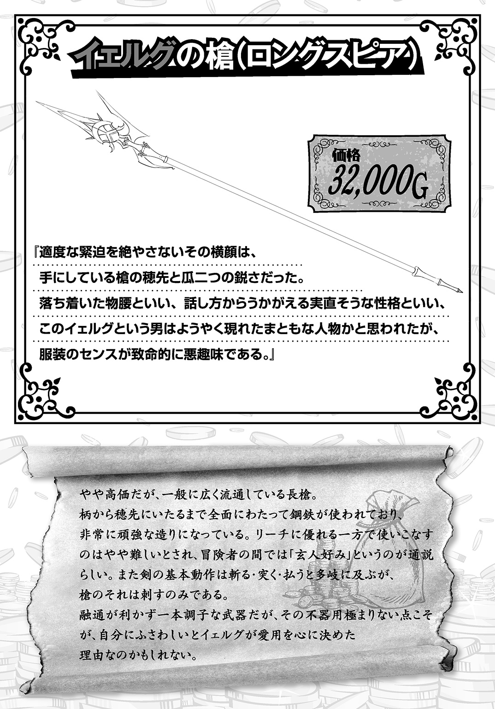
人足を遠ざけていたカイザーゴーレムが消滅したことで、宝石産業は翌日からまた復興を見せ始めた。
夕方俺が向かった時には既に多くの冒険者たちが鑑定結果に一喜一憂していた。
もちろん、俺が運営するチームシラサワの連中も大挙して押し寄せている。
今日派遣した人数は過去最多の九十八人。ソロ十六人、パーティー二十三組という、もはや一大勢力と呼んでしまっていいほどの大部隊である。
集めに集めた石の数は総計百五十個。
「まったく手で持てる気がしねぇな」
仕方ないので小型の荷車をレンタルし、それに革袋を積みこんで運ぶ。
「なんだこの数は......」
鑑定士のおっさんも量の凄まじさに若干引いていた。
「大変だとは思うが、なんとか頑張ってくれ」
「仕事だからやりはするが......二時間はかかるぞ？」
「そのくらいは待つさ」
時間はどうでもいい。これでスカだった時の喪失感のほうが俺にとっては恐ろしい。
だからって鑑定に回さないわけにもいかないからな。覚悟を決め、リセット不可の百五十連ガチャという底なし沼に飛びこむ。
クズ、クズ、『スピネル』、クズ、クズ、クズ、クズ、クズ、クズ、クズ。
クズ、クズ、クズ、クズ、クズ、クズ、クズ、『サファイア』、クズ、クズ。
クズ、クズ、クズ、『ペリドット』、『ヒスイ』、クズ、クズ、クズ、クズ、クズ。
連続で当たったか。幸先としては悪くない。
クズ、『ダイヤモンド』、クズ、クズ、クズ、クズ、クズ、クズ、クズ、クズ。
クズ、クズ、クズ、クズ、クズ、『ローズクォーツ』、クズ、クズ、クズ、クズ。
『ラピスラズリ』、クズ、クズ、クズ、クズ、クズ、クズ、クズ、クズ、クズ。
まあこんなすぐに出るとは思っちゃいない。
鑑定を続行。
クズ、クズ、クズ、クズ、クズ、クズ、『ソーダライト』、クズ、クズ、クズ。
クズ、クズ、クズ、クズ、クズ、クズ、クズ、クズ、『ブルートルマリン』、クズ。
クズ、クズ、『ジェット』、クズ、クズ、『トパーズ』、クズ、クズ、クズ、クズ。
どれも見慣れた宝石だ。
俺がお目にかかりたいのはこいつらじゃない。
クズ、クズ、クズ、クズ、クズ、クズ、クズ、クズ、クズ、『ルビー』。
クズ、クズ、クズ、クズ、クズ、クズ、『ジルコニア』、クズ、クズ、クズ。
クズ、クズ、『アメジスト』、クズ、クズ、クズ、クズ、クズ、クズ、クズ。
容赦ないクズの嵐に心が折れそうになってきた。
もう残り三十個なんだが。
クズ、クズ、クズ、クズ、クズ、『エメラルド』、クズ、クズ、クズ、クズ。
クズ、クズ、クズ、クズ、『治癒のアレキサンドライト』、クズ、クズ、クズ、クズ、クズ。
クズ、クズ、クズ、クズ、クズ、クズ、クズ、『セレスタイト』、クズ、クズ。
「ん？」
ストップ。
「なんか今、変なのが混じってなかったか？」
三十四番の袋から出てきた宝石には他とは異なり接頭語が与えられている。
「そいつがレア宝石だ。見たところ、自然治癒力を著しく向上させる働きがあるようだな。詳しい話は宝石細工の職人に聞いたほうがいいだろう。アクセサリーになってからでないと実際の性能は分からんからな」
おっさんから渡された鑑定書には、紛れもなく『希少品』という記述がなされていた。
「お、おお......ってことは、ついに入手できたのか......」
薄汚れた原石が早くも輝いて見えてくる。
それ以外を買い取ってもらいながら、俺は改めて喜びを嚙み締めようとするが、不思議と達成感よりも脱力感が上回っていた。
通算で五百個は鑑定したはずだが、ようやくか......。
イヤッホウとガッツポーズを決めたい気持ちもなくはないものの、それ以上にガチャという深淵から解放されたことに対する安堵のほうが強い。
実感を得られるのは、おっさんが言うように装飾品として身につけてからになるか。
ひとまずの説明を聞いた限りだと、傷の治りが早くなりそうな感じがする。欲を言えばそもそも無傷なのがベストだが、悪くはない。すぐにでも恩恵にあずかりたいところだ。
とはいえ、時刻を確認するまでもなくとっくに夜を迎えてしまっている。
加工作業は明日だな。
窓から差しこむ光が俺の熟睡を妨げた。
まだ夢の世界から抜け切れていない俺は朝陽から逃げようと寝返りを打つ。
すると腰のあたりをゴリッとした硬い感触が襲い、思いがけず一気に眠気が吹っ飛んだ。
いてぇ。なんだこれは。
「......って、なんだもなにもねぇか」
布団の中でアレキサンドライトの原石と目が合った。
そういやこれ、なくさないようにって用心して抱いたまま寝たんだったな。
結果的にいうとやりすぎだったわ。
こっちが寝ぼけてると牙を剝いてくる。ゴツゴツしてるから余計に痛いし。
ベッドで抱くならすべすべして柔らかいものに限る、という結論に一晩で気づかせてくれたという意味ではいい勉強になった。
「おはようございます、シュウト様。今朝は暖かくて過ごしやすいですよ」
すべすべして柔らかいものの筆頭であるミミが俺の枕元でささやく。
もう既にローブに着替えていた。
ホクトも町での普段着代わりの革鎧を装備しているし、二人とも出発準備は万端といった様相だ。俺だけがパンイチでだらしなく寝転がっている。
本当はもっと布団に丸まっていたいところなのだが......そうも言ってられない。
無理やりに体を奮い立たせて、三人総出で朝一番にギルドへ。
先に後始末をしておかなくては。
「ようこそ......なんて無粋な挨拶は、最早いりませんかな」
受付に立つおっさんは相も変わらずダンディズム溢れる物腰で俺に応対する。
「本日も宝石鉱山への派遣業務を行うのでしょうか？」
「いや、そうじゃない。むしろ中止のお知らせだ」
集まっていたチームシラサワの面々を手招きして呼び寄せる。
「えー、みんなには残念な報告にも聞こえるかもしれねぇが......昨日ついにレア物を引き当てることができた。つまり、俺が設立したチームの目的は果たされたわけだ」
継続することも可能ではあるが、ミミとホクトの分まで揃えるとなれば時間がかかりすぎる。今ある一個を手に入れるために相当な労力を割いているからな。あと二個獲得するまでロクに収入源のないこの町に滞在し続けるのはきつい。
というわけで、本日限りで営業停止。
まずは公約どおり、過剰収益としてプールされていた約六〇万Ｇを、袋の番号から逆算して割り出したレア宝石の発見者にまとめて支払う。
巨額の臨時収入を受け取った男は小躍りしていた。
うむ、大いに喜んでくれ。
「そして我が財団法人も今日をもって解散だ。諸君、これまでよくやってくれた」
いかにも代表っぽい挨拶をして締めくくる俺。
もっともせいぜい一週間程度の付き合いに感慨もクソもないので、まばらな拍手が起きただけだったが。
「シュウトさんにとっちゃめでたい話だけど、オレたちは微妙な気分だぜ」
「これまで儲けさせてくれたからなぁ。はあ、今日からはまた運試しの始まりか」
解散を惜しむ声もチラホラ聞こえてくるが、まあ、割り切ってもらうしかない。
ビジネスとはシビアなものである。
諸々の整理を済ませた後で、俺はいよいよ、鑑定所のおっさんから紹介をもらっていた宝石細工の工房へと向かう。
大規模な宝飾品店の隣に建てられたそこは、比較的若い職人たちで切り盛りされていた。
ミミとホクトには店側でウィンドウショッピングを楽しませておいて、俺は工房にいたおっさん......ではなく、眼鏡をかけた青年に宝石について尋ねてみる。
「ああ、これは珍しい。特殊な魔力が秘められた宝石ですね。失礼、鑑定書を拝見させていただきます......『治癒のアレキサンドライト』ですか」
興味深げに眺めて。
「こちらは人間が本来持つ自己修復能力を極限まで高める逸品です。装備していれば傷口は瞬時に塞がりますし、疲労の回復も早まりますよ」
「ダメージ自体はそのままくらうんだな」
「はい。あくまで再生機能を増進するだけで、体そのものが丈夫になったりはしません」
完全な疲れ知らずの医者いらず、とはいかないらしい。
「ってことは、痛いのは痛いのか？」
「それはまあ」
ぐっ。せっかくのレア素材なのにそれは辛い。
とはいえ、どれだけ重い傷を負っても「死ぬほど痛い」で収まるのはありがたい......のか？
実際に効果を体験してみないことには分からないな。
とりあえず「痛くないけど死ぬ」より圧倒的にマシなのは間違いない。
にしても、どのくらい凄い癒し効果があるのかは怪我をしてみないと分からないってのもなかなか皮肉の効いた話だ。そういうおとぎ話があってもおかしくない。
それはさておくとして。
どんなアクセサリーにするかは完全に職人に委ねることにした。俺の美的センスで口出ししてもロクなことにならないのは自覚している。
ただひとつだけ、髪飾りはやめてくれと注文しておいた。絶対似合わないからな。
「石素材のアクセサリーは他と干渉し合うことは覚えておいたほうがいいですね。例えば、そちらの女性のネックレス」
男はミミの首元を指して語る。
「魔石を用いたものですから、同時に他の宝石由来の品を装着するとお互いに効果が弱まります。ゼロになるというわけではないですが」
「うーむ、そうなのか」
ややこしい。
これは今後も構成を考えていく必要があるな。
「まあ、それは後になってやることか」
俺のチョーカーは革製だし、食い合うこともない。気兼ねなく宝石を加工に出せる。
「研磨に四時間、装飾品に仕立てるのに二時間いただきますが、構いませんか？」
「そのくらいなら待てるぜ。出来上がった頃にまた来るよ」
とりあえず市場のほうでダラダラやってればいいか。
町の中央まで戻って何軒か雑貨屋巡りをしていると、朝食を摂らなかった分早めに腹が鳴ってきたので、うまそうな匂いが漂っている飯屋に直観で飛び込む。
オーダーはいつものように適当オブ適当。そもそもメニューを見る意味がないのでコックに全部おまかせした。
いい加減ちゃんとした料理名を覚えるべきなんだろうか......。
「......別にいいや、食えりゃ一緒だし」
当たり前だが商売として出している料理なんだからどれも味に文句はない。
こんがりと焼かれた、種類どころか部位すら謎の骨付き肉にかぶりつきながら、くだらない会話をして時間を潰す。
喋ることがなくなってきたらアルコールを追加。
うまい肉をアテに酒を飲んでいるだけでも暇は楽しめるものだ。
それに、ほろ酔いのミミを眺めるのは面白い。
意識はしっかりしているのに表情がどんどんとろけていく。
実に官能的で耽美な......といった小難しい言い方をここはしておこう。本当はもっとストレートな表現をしたいのだが、俺の倫理観が問われるのでやめておく。
「アクセサリーが完成したら、この町を離れるんですか？」
「そんなとこだな。とにかく物価が高いからなー。さっさと他の地方を巡ろうぜ」
たとえば、今まさに俺の前にある飯だ。
以前までは二〇〇Ｇで一人前の食事にありつけたのに、ここでは三〇〇Ｇはないとパンにワインと肉料理をつけることができない。
飯屋だからこんなもんで済んでいるが、他の品々も概ね五割増しと考えるとげんなりしてくる。
ただ売値が高いということは買値も相応なわけで、アセルで集めた大量の素材は全部そこそこの価格でさばけた。
特に、この地方に属する鉱山では宝石しか採掘できないからか、オーソドックスな鉱物であるはずの鉄が高値で売れた。鉄のみならず、鍛冶屋の多くはよそから来た冒険者や行商から鉱物類を納めてもらっているそうだ。
こうして足を使った交易で収入を増やす、というのもひとつのやり方なんだろう。
俺は雑魚をボコッて稼がさせてもらいますが。
「だからこそ、この町に留まり続けるのは下策なんだよな」
いかに骨付きステーキがうまかろうと、だ。
スキルの役立つ機会がなく、人並み程度にしか稼げないんじゃ宝の持ち腐れもいいところだ。そもそも今更人並みに働くのがきつい。低賃金労働なんて死ぬ前にいくらでもやったっての。
視線をずらしてみると、ホクトは骨を砕いて髄まで味わっている。
ナイフもフォークも使わない『手づかみ』の作法で、ワイルドというレベルを超えてまんま動物じみてるのだが、顔立ちがひたすらに凜々しいのでその食べっぷりすらサマになっていた。
有り体に言うとかっこいいのだ。
剣さえ握っていなければホクトはサラブレッドである。
「主殿、もうじき約束の時間であります」
ホクトはハーブティーばかり飲んでいたのでシラフだ。呂律もはっきりしている。危ない危ない、褒めておいてなんだが酒が入ったらいきなり駄馬化が始まるからな、こいつは。
シャキッとしている間は実に頼りがいがある。
「あと二十分ほどで店を出れば、ちょうどよろしいかと」
「いや、今出よう」
「あっ、いえ、自分は急かすつもりなど......」
申し訳なさげにするホクトだったが、そうではない。
「それこそちょうどいい時間だからだよ」
俺は工房ではなく、先に宝飾品店へと足を運んだ。
目当ては当然......。
「では、こちらのトパーズの指輪でよろしいでしょうか」
確認してくる女の店員に俺は大きく頷いて返答した。
「......で、値段はいくらだ」
「一二万九八〇〇Ｇでございます」
うわ、たっけー。
そもそも宝石としての価値も含まれてるから仕方ないが......。
とはいえこの町に来てからその何倍も人件費に使ってるんだから、今になって躊躇するようなことでもない。俺は黙って金貨を積み上げた。
慌てたのはホクト。
たった今購入した指輪を唐突に渡されたんだから、驚くのも無理はない。
「ミミには前に金の首飾りを買ってやったからな、これはお前の分だ」
「ですが、自分なぞにこのような高価な品物は恐れ多いであります！」
「お前が倒れたら俺が困るからだよ。そんだけだ」
濃いイエローの輝きを宿したそれを、恐縮するホクトの長い指にはめさせる。
薬指は変な空気が流れそうだったので人差し指につけさせるという、肝心なとこで俺の日和見が発動したが、なんとか受け取ってもらうことはできた。
「イェルグを見ていて宝石の有効性は分かったしさ。あれだけ耐久を上げられるなら、一個持っておけば安心できるだろ」
あそこまで身につける必要があるかは甚だ疑問だけども。
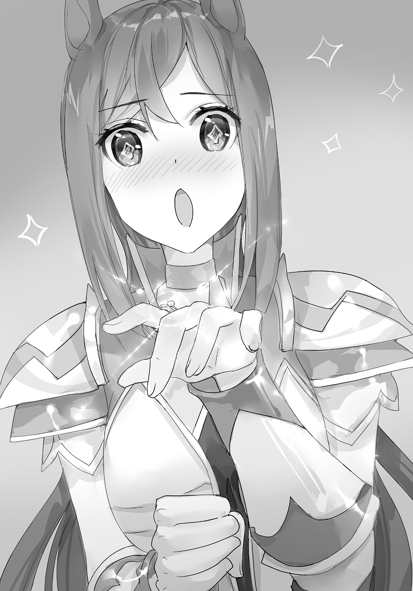
「うう、自分はつくづく果報者であります！ 生涯大事にさせていただきます！」
「いや、もっといいものが手に入ったら変えてもらいたいんだが......」
まあいいか。めっちゃ喜んでくれてるし。
そんなことより。
「そろそろ俺のやつも完成してる頃だな」
買ったその足で工房へ。
「お待たせしました」
男はそう言って、コートの隙間に手をつっこみ俺の胸元にゴソゴソとなにかを取りつける。
ブローチだ。ただのゴミにしか見えなかった石は、研磨職人の巧みなカット技術によって、透き通った赤の輝きを放つ美麗な宝石へと姿を変えていた。
「アレキサンドライトは通す光によって色が変化します。ひとつで二度楽しめるお得な宝石ですよ」
今は屋内なので赤色だが、太陽光を浴びるとまた変わるそうだ。
「でもなんでブローチなんだ」
「治癒力をアップするという性質上、部位ごとの偏りをなくすために宝石は体の中央に据える必要がありますからね。となればブローチかペンダントが最善でしょう。お客さんの場合既に首にはチョーカーを装備していますから、これ以上首周りが邪魔にならないようブローチにさせていただきました」
確かにユイシュンに服従の首輪をつけられている時はうっとうしくて仕方なかった。
ほほう。だからブローチか。
それはいいとして、どことなく光の国からやってきたみたいなんだが。
まあ性能はお墨付きのようだし、ありがたく利用させてもらうとしよう。
加工費として三万Ｇ少々を払い、一歩工房の外に出てみると、なるほど説明にあったとおり、それまで鮮明な赤い光をたたえていた宝石が落ち着いたダークグリーンに移り変わった。
なんか急に元気になった気がしてくる。
これが魔力ではなく石そのものの性質だというんだから、殊更に不思議な一品だ。
さて。
目当ての品を手中に収めた今、俺がこの町に滞在する理由はなくなった。
名残惜しい......というほどでもないので、迷わず明朝すぐの出発を決める。
ホクトが荷馬車に物資を積みこんでいる間、俺は世界地図を広げて『ジェムナ』の町を示す黒点の真下に、小さく三十点と記入した。
世話になっておきながら情の欠片もないシビアな評価だが、それはそれ。
ここに家を建てるか？ となれば話は別である。
物価も高く、金も得にくい。とてもじゃないが一生住み続けるのに適しているとは言えない。
いくら町が栄えていようとそこは譲れないんでな。
「主殿！ 荷造りが完了したであります！」
ホクトから報告が入る。
「よし。そんじゃ、次の場所に行くとするか」
地図に落としていた目線を少し横にずらす。
ここからすぐ近くに『ウィクライフ』という町がある。以前ヒメリから聞かされた話だと、確か、学問で有名な町だったはずだが......。
「俺に縁がなさすぎて震えてくるな」
というか俺に限らず、ヒメリも割とアホ寄りだし、ホクトは言うまでもなく肉体派だ。
となればそこではミミくらいしか馴染めそうな奴がいない。頼りない我々の分まで是非とも頑張っていただきたい。
「どうかしましたか？」
「いや、なんでもねぇ」
不思議そうに小首を傾げるミミ。
無意識のうちにそっちに視線を送っていたらしい。
しかしまあ、町の雰囲気に呑まれる呑まれないに関係なく、ミミには努力してもらう予定ではある。
高度な魔術書がゴロゴロ転がっているそうだからな。どれかひとつくらいは町を去る前に身につけてもらいたいところ。
「ま、一度行ってみてからだな」
具体的なスケジュールは着いてから考えればいいや。どうせ皮算用にしかならないし。
俺の胸で輝いている治癒のアレキサンドライトを入手するまでの道筋にしたって、想像以上に経費と知恵と、なによりも根気が要求された。
もうクズまみれの石ガチャを回すのはこりごりだ。
ギルド前の大通りまで移動する。
そこでは（名目上は）別行動を取っていたヒメリが俺たちの到来を待っていた。
昨日のうちに旅立つ旨は話してあったからな。ここで約束をすっぽかされたら遠慮なく置いていくつもりだったんだが、どうやらヒメリはまだまだ同行を続ける意志は固いらしく、むしろ俺を「遅いじゃないですか」と何度見たか分からない指差しポーズで咎めてきた。
「ウィクライフまでは五〇キロ弱しか離れていません。特に問題が起きなければ、今晩は宿の暖かいベッドで寝られるかと」
「だから急ごうってか？」
「そのとおりです。早く出発しましょう。......ここを離れるのは少し残念ですが、やるべきことは概ね達成したので不満はないですね」
この町での活動内容について振り返っているらしいヒメリは、目を閉じてふふんと満足げな笑みを浮かべている。
「念願の魔力効果付きのアクセサリーも手に入れられましたし、他に原石を三つ見つけましたからお財布にも余裕ができましたよ。それになにより！ 特級の魔物の討伐作戦に参加したことで私の評判も高まりましたからね。実りある二週間でした」
喜んでいるところに水を差すようで悪いので内緒にしておくが、討伐隊を自ら結成した上、最速で任務を終えた俺のほうが遥かに多くの名声を得ている。
果たしてこいつの「俺を超える」という目標はいつ成就するんだろうか。
いちいち張り合われるのも疲れるのでさっさと抜いてってほしいんだが。
......不意に。
「おっ！ シュウトじゃねェか！」
上のほうから馬鹿でかい声が飛んできた。
目線を上げて見えたのは、二階席の窓から上半身を乗り出したガードナーのおっさんの姿。顔全体が茹でられたように赤く、相当朝酒を浴びていることが一目で分かる。
厚みのある図体のせいもあって、鬼に見下ろされているかのような気分になるな。
「その荷物の量ってこたァ、ジェムナを出ていくんだな」
「ああ。他の町も巡らないといけないんでね」
「まだまだ旅の途中ってことか。俺はこの町を離れたことがないからなァ。また立ち寄ることがあれば旅の話でも聞かせてくれ」
「多分だが、もう来ないぞ。ここはモノの値段が高くてやってらんねぇ」
「ガハハハ！ そりゃ違ェねェな！」
なにがそんなに面白いのかは謎だが、おっさんは愉快愉快とばかりに大笑いした。
「兄ちゃんたちには随分と助けられたからなァ。ここのギルドを代表して、ってわけじゃねェが、別れる前に俺から礼を伝えておくぜ」
大男は両手の親指をグッと立てる。
隣にいるヒメリは「いえ、こちらこそ」と恐れ多そうに頭を下げていたが、俺の頭は成長不良の稲みたいに持ち上がったままだ。
「別にあんたらのためにやったわけじゃないけどな」
操業再開を一週間も待たされるのが嫌だっただけだし。
「グッフッフ。結果を出してくれりゃ動機なんてどうでもいいのさ。俺がデカブツ退治に向かうのだって似たようなもんだからよ」
どこが似てるんだよ、と俺は自嘲気味に苦笑いしそうになるが、しかし。
結局はおっさんも、決して自己犠牲の精神ではやっていない、ということだろう。
金や名誉といった見返りを求めもせず、ただ、最も戦える者が大仕事を請け負うのが自然だと考えている。それはむしろ自己満足の部類なのかもしれない。
あれだけの実力と実績がありながらジェムナに留まり続けているのは、そういった考えが根底にあるからじゃなかろうか。
俺はおっさんに、苦笑の代わりに念押しを返す。
「自分のやりたいようにやってるだけってか？」
「そういうこった。結果として町が発展するんなら、願ったり叶ったりってやつだぜ」
まったく自慢げな感じを滲ませずに、さらっとそう語るおっさん。
それほど尽くしてもまだ、完璧には人心掌握できていないってんだから、世は非情だ。
事実、情で動く冒険者よりも、金で動く冒険者のほうが多かった。
それはごくごく普通の思考ともいえる。誰だって自分の生活が第一。俺にしたってそうだ。
敬意なんてフワフワしたものはいざって時に信用できないしな。
おっさんの耳に届かないところでその実力にケチをつけていた奴のことを思い出す。
憧れと妬みは表裏一体で、誰もが同業者の活躍を素直に喜べるような優れた人間性を持っているわけじゃない。
けれどガードナーはそれすらも気に留めないだろう。
他人の評価を気にするような男が大勢の前で見知らぬ輩の奴隷を同席させるだろうか？
「いや、ねぇな」
知らず知らずのうちに俺はそんなことをボソッと呟いていた。
おっさんは飽きもせずにジョッキを傾けながら、この高低差でも分かるくらいに酒臭い息で俺に語りかけてくる。
「お前さんの名前は町の歴史に長く刻まれるぜ。なにせ二日であの厄介者を退けた部隊を作り上げた立て役者なんだから。忘れようったって忘れらんねェよ」
「へえ、そうかい。なら一応光栄には思っておくか」
「そうしてくれるなら俺としても誇らしいぜ。んじゃ、達者でなァ」
手を振るおっさんに向けて、俺は一言「おう」とだけ返して別れの挨拶とした。
次の行き先へと続く道を進む。
俺もやりたいようにやるだけだ。方針を変えたりなんかしない。
ただし、やれる範囲で、な。
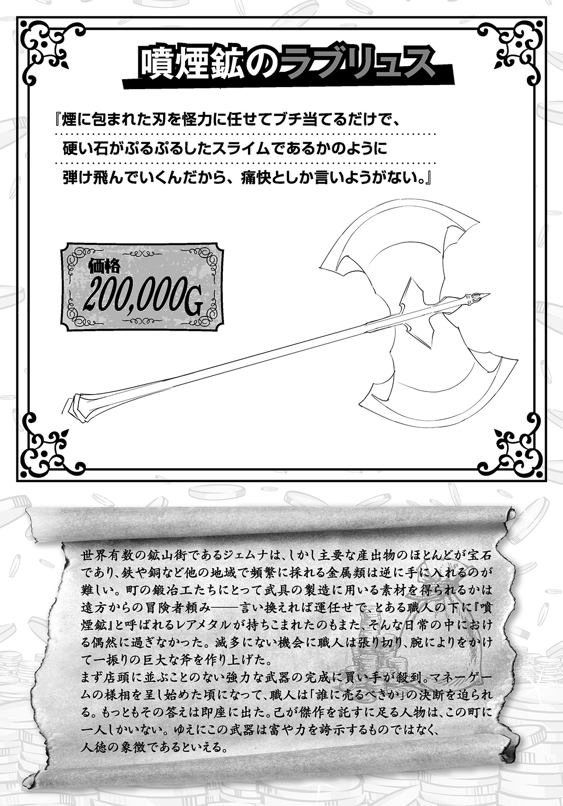
ウィクライフまでは一日あれば着く、というのはマジだったようで、検問をくぐると茶一色だった世界に次第に萌葱色の草が見え始めた。
いつの間にやら地方が切り替わっていることが一目瞭然。
泥臭い土地から平穏な雰囲気漂う草原へと景色が様変わりしている。
「......で、あれが噂の町か」
陽も落ちて荷馬車に吊るしたランプを頼りに歩いていると、ようやく一カ所にまとまった明かりが見えてきた。
到着。
およそ半日歩き詰めという強行日程だったが、重ねた毛布ではなく、ちゃんとしたベッドで寝られると思えば柄にもなく頑張った価値がある。
例によってヒメリと一時的に別れ、三人で町の中をうろつく。
「ここがウィクライフでありますか......夜も更けているのであまり趣が分かりませんな」
せわしなくキョロキョロと視線を移しまくるホクトとは対照的に、ミミはぐったりしていた。
あれだけ歩いてまだ元気とは恐れ入る。
とはいえ、実は俺もあまり息は切らしていない。胸につけているブローチの効果だろう。こいつには怪我だけでなく疲労の回復も早めるオマケがついている。
とりあえず、一旦ミミに渡しておいた。
まあ、疲れてないからって眠くないのかといえば、そんなことはない。それとこれは別だ。
もう遅いことだし町の様子を見て回ったりはせず、宿に直行。
クジャタの毛糸で編んだシャツを脱いだ瞬間に、どっと疲労が押し寄せてきた。肉体的には問題なくとも精神的な疲れが溜まっている。
「もう寝るか......明日なにやるかなんて明日決めればいいことだし」
おやすみ、と二人に言って、ぐでんと横になる。
ものの数秒で俺の意識は飛んでいった。
さて、朝である。
買い置きのバゲットを食べ、着替えを済ませた俺はミミとホクトを連れて町へと出る。
左右対称にデザインされた建物の数々が整然と並んでいて、景観がゴミゴミとしていないのが、この町の分かりやすい特徴だった。
生活感のない綺麗さっぱりとした部屋に招かれたようで俺的には落ち着かない。
「あちらは学習用の施設みたいです」
ミミが看板を遠巻きに眺めて言う。
「勉強するためのとこか......俺が極力避けて通ってきたものだな」
「魔法について教えてくれるそうですよ。あっ、あそこにもありました」
いつになく興味深そうにするミミ。
学校とか塾みたいなもんか。それも複数あるってんだから驚きだ。パイの取り合いにならないんだろうか。いずれにせよ今までの町とは空気が違いすぎる。
で、だ。
いつもなら最初に冒険者ギルドを訪れるのが鉄板なのだが、今回はまず、図書館とやらに行ってみたいと思う。
どんなものか知っておきたいしな。
道行く人に尋ねて経路を聞く。
......にしても。
「ここには賢い奴しかいないのか？」
すれ違う住民はどいつもこいつも細面で頭のよさそうな顔をしている。鋼鉄のハンマーを背負った大柄な冒険者ですら、眼鏡をかけていてどこか知的なイメージを漂わせている。
特に女はその傾向が強い。真面目な顔つきで背筋をピンと伸ばして歩いているからまったくナンパに引っかかるような感じではない。しかしこれはこれで逆に燃えてくるものがあるのだが、実行に移すと即お縄なので妄想の中で脱がせるに留めておいた。
こいつらの笑い声は多分「ハハハ」「フフフ」なんだろうな。「ゲッヘッヘ」とか「グヒヒヒ」みたいな下品な笑い方は到底しそうにない。
そんなこんなで図書館に。
アホほど巨大な建物だったので場所はすぐに分かった。
「無駄に緊張してくるな」
「自分もであります。この厳かな空気、只者ではありませぬな」
エントランス前に立っただけで俺とホクトは気圧されてしまっていた。
入館はできたが蔵書室の扉をくぐるには審査が必要とのことなので、受付に向かう。
「身分を証明するものはございますか？」
見るからに「私、知性あります」って顔をした女の館員に黙って通行証を差し出す。
「冒険者の方ですね。では筆跡を鑑定いたしますので、こちらに署名を」
渡された羽根ペンで『シュウト』と書きこむ。
何回もやってきたことだが、本人確認のたびにいちいちサインをするのは結構めんどくさい。指紋とかで鑑定してくれりゃいいのに。
「後ろの方は？」
「俺の付き添いだ。こいつらの責任は俺が持つ」
「承知しました。では施設を利用するにあたっての禁忌事項をお伝えしておきます。図書の破損および窃盗、他の利用者の方々への非紳士的な行為、正当な理由のない過度の大声、などは固く禁じられております。発見次第自警団へと連行させていただきますので、ご留意を」
そんなことしないっての。
と自信を持って言いたいところだが、故意じゃなくてもうっかりやってしまいかねないからな。
まあ本に触らなきゃ大丈夫だろ。どうせ俺は読まないし。
扉を開き、その中に入る。
俺は圧倒された。
静謐な空気が張り詰めたホールに広がっているのは、見渡す限りの本の海。
一見して壁や仕切りかと思われたのはすべて書棚だった。
十メートルを超える天井スレスレまで高さがあるそれに、ぎっしりと本が詰めこまれている。
いたるところにハシゴがかかっていてなんか危なっかしい。
この棚が広い部屋全体に置かれているんだから、蔵書量の合計が一体何冊にのぼるのか想像もつかないな。
「わあ、凄いですね、シュウト様」
ミミはどこかしら波長の合うところがあったのか、爛々と目を輝かせている。日頃はぼんやりした眠たげな表情をしているくせに、今ばかりは活力が瞳に宿っていた。
「凄いのは分かるが......俺にはちょい居心地が悪いぜ」
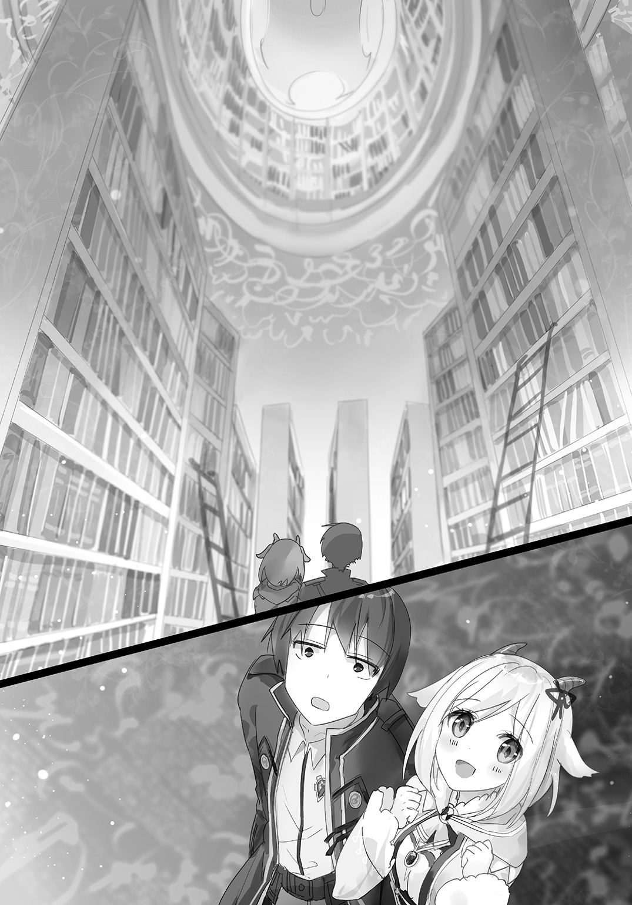
こういうとこにいると呼吸のタイミングが分からなくなるんだよな。
利用客の様子はといえば、コツコツと足音を響かせて興味の引かれる書物を探しているか、黙々と机に向かっているかの二択。
会話はほとんどない。
床にしても棚にしても机にしても、総じて暖かみのある木目調なので、落ち着いた雰囲気がある......はずなのだが、俺は無性に息苦しさを覚えた。
やべー。俺の住む世界じゃないわ、ここ。
「というか、どこから見て回っていいか全然分からんな」
小声でぼやく。
「とてもとてもたくさんの魔術書があります。どれも気になりますけど、どれを手に取ってみればいいんでしょうか......」
肝心のミミもあまりの種類の多さに困惑している。ホクトは周りの空気に合わせて小難しい顔をしているが、多分俺と一緒でなんも考えてない。
右も左も分からずまごついていると。
「何をお探しでしょう」
瘦せ型で濃いブルーのローブを着た、いかにも文系って風体の男に声をかけられた。
「なにやらお困りのようでしたので。失礼、申し遅れました。私はここ、ウィクライフ王立図書館の司書代理を務めております、パウロという者です。本のことなら私にお任せを」
おっ。なかなか頼りにできそうな奴が来てくれたな。
口調や態度が丁寧なのも好感が持てる。
なんでも相談していいとのことなので、遠慮なく聞く。
「ちょっと魔術書を探してたんだよ」
「魔術書ですか。それは結構。魔法は当図書館を始めとしてウィクライフでもっとも学ばれている分野です」
「へえ。そりゃちょうどいいな」
「当代最高の魔導師、アインバッシュ・ラナゲートもこの町の出身ですから」
そいつが何者であるかはどうでもいい。
確認したい用件はただひとつ。
「俺が探しているのは珍しい魔術書だよ。......といっても読むのは自分じゃないけどな」
横にいるミミに目配せして、それとなく伝える。
「どの程度まで魔法の知識はございますか？」
「初級の魔法なら大体使えるぜ」
「ふむ......でしたら、先に中級から読み解くことをオススメします。失礼かとは思いますが、今時点での学術理解度で複雑な魔術書に挑戦するのは少々困難かと」
まあ、一理あるか。
俺たちが連れていかれたのは、入り口側から見て右から二番目にある書棚だ。
「この列にあるのはすべて中級魔法について記された書物です。魔術書を借りる際はレンタル料を徴収させていただきますので、ご注意ください」
金取るのかよ。
まあ魔術書は一冊が数万Ｇはするからな。タダで貸し出したりはしないだろう。
「借りて返さなかったらどうなるんだ？ 丸損じゃん」
「それは大丈夫です。事前に魔術書の流通価格と同等の金貨を預けていただくことになっていますから。本の返却時に差額を返金いたします」
ほう。じゃあ持ち逃げは単に買っただけになるんだな。
ってことはそもそも無銭で乗りこむような真似はできないってわけか。
「......もっとも、外部持ち出し不可の魔術書もありますけどね」
パウロはちらりと奥の棚に目をやった。
「まともに手に入らない代物、ってことか」
「そのとおりです。ものによっては、世界に数点......といった魔術書もありますからね」
棚から下ろすだけでも許可が必要、とパウロは説明した。それだけ貴重な本なんだろう。
一応背表紙だけでも見させてもらう。
どれも古びていて黴臭いが、俺が求めていたのはこれだ。
普通に売っている魔術書なんていつでも購入できる。とりあえず今日のところは魔法屋か武器屋に行って中級の魔術書を買って帰るか。
その後もいくつか蔵書を案内してもらった。
パウロには悪いけど、ほとんどに興味が湧かなかった。インクの臭いだけで腹が痛くなる。
一方でミミは興味津々といった感じでパウロの懇切丁寧なガイダンスに耳を傾けていた。ホクトも腕を組んで「うむ、うむ」と分かったふうに頷いていたが、俺の優しさでなにが分かったのかについては聞かないでおく。
それにしてもパウロは本の置き場所をよく把握している。
驚嘆に値する記憶力だ。
「こんなに知識があるのに代理なんだな」
「本来の司書である方は数年前から療養中でして。代わって私に一任されているのです」
ところで、とパウロが話題を振る。
「あなたは魔法を学んでみよう、とは考えたことはありませんか？」
「ないな。難しそうだし」
「では、使ってみたい、とは」
「それなら頻繁にある」
ミミの回復魔法の効力は何度も目の当たりにしてるからな。
そりゃ使えるもんなら使いたいが......。
「勉強できなくちゃダメなんだろ？」
「それは仕方ありません。知者を目指す上で必ず通過しなくてはいけない課題です」
「じゃあ無理だわ。俺、頭よくないし」
「もともとの出来不出来はそれほど重要ではないですよ。優れた学徒であるためには、まず清廉であること」
指折り数えるパウロ。
「それから勤勉であること。最後に、上昇志向が強いことが条件として挙げられます」
うーむ、見事なまでに俺の性格と真逆をいっているな。
未練なくすっぱり諦められてむしろよかったかもしれない。
結局ウィクライフでの初日は町内を散策しただけで終わった。
予定どおり、武器屋に寄った際に中級の魔術書を何冊か買ってみたのだが、まあ高い。
おまけに一冊あたりに載せられた魔法の数が減っているから実質的な単価は更に上。たとえば『初級再生のグリモワール』では戦闘で役立つ回復魔法と日常生活で便利な『リペア』『リフレッシュ』などがセットになっていたのに、中級ではバラ売りされていた。
攻撃魔法に至っては何巻にもわたらせた分割商法だ。
ページが薄くなっているのに、お値段は据え置きどころか引き上げ。
詐欺にでも遭った気分になる。
店主のジイさんは「これらが扱えるようになれば魔術師としては一級」ってなことを話していたが、そもそも前提として金銭的な事情をクリアするハードルが高いんじゃなかろうか。
まだまだ手持ちはあるとはいえ、前の町で総額一五〇万Ｇほど溶かしていることを鑑みて、現状入り用な分......具体的に言うと今ミミが習得している魔法の上位版に絞って購入した。
どうせ他を買ったところで、まず始めに初級からやっておかないとダメそうだし。
ただそれでも三〇万近くかかったのだが。
「中級呪術ってやつ、一体何種類あるんだよ......」
呪いの数だけ巻数がありやがる。
あくどいやり口だな。
ついでに隣にあった防具屋を冷やかしてみると、なんとなく予想はしていたが鎧や盾の品質は並みも並み。逆にローブやサーコートの取り揃えは豊富だった。
とことん魔法使い向けにできている町だな、ここは。
ミミの装備をようやく新調できるかもしれないし、今度ゆっくり物色してみるとしよう。
で、肝心要の食事はといえば。
飯は取り立ててうまいわけでもないが、デザート類が充実していた。頭脳労働をしていると甘いものが欲しくなるのはこの世界でも共通らしい。
俺はそれらをガン無視して辛口のロゼを飲んでいたが、砂糖とバターが結婚したみたいな見るからに高カロリーな焼き菓子が飛ぶようにオーダーされている。
これだけ売れてるとさすがに気になる。
「二人とも」
「はい」
「なんでありましょう？」
「甘いものは好きか？」
「きゅ、急にどうしたのでありますか」
ホクトはまだ骨付き肉のソテーにかじりついている。というか、骨をしゃぶっている。
「よし、二人とも好きみたいだな！ ここはいっちょ頼んでみるとしよう！」
「シュウト様が好きなものでしたら、ミミはなんでも好きになります」
強引に話を持っていこうとする俺だったがミミにはとっくに看破されていたらしい。
「いやまあ、好きっていうか......冒険みたいなもんだ」
「おお、でしたら存分にご賞味なさってください。主殿が召し上がっている間、自分はしばし控えておきますので」
「待て、置いていくなっての。全員分頼むからな。男の俺だけ頼むのは、なんかこう、微妙に恥ずかしい」
見慣れない言葉がずらっと並ぶ中に『ケーキ』という文字を発見した俺は、安心感からノータイムでそれを注文。
しばらくして、芳醇なバターの香りを漂わせながらそれは運ばれてきた。
「お待たせいたしました、バターブレンドのケーキでございます」
目の前で店員が切り分けているそれは、ケーキといってもクリームが塗られたものではなく、パンの進化形って感じだ。間にナッツとレーズンが挟まっている。
俺は肉を食ったのとは別のフォークでそいつを突き刺し、口に運ぶ。
「こ、これは......」
超あめー。
なんだこの甘さは。
しっとりした砂糖づくしの生地だけでなく、レーズンもシロップにアホほど漬かっているから激甘だ。わずかに塩気の残ったナッツが一番うまく感じる。
「想像以上だったわ......一口でもういいやってなってしまうとは」
仕事終わりでクタクタの時にはいいかもしれないが、生憎今日の俺はまったく疲れていない。
これは相当ヘビーだ。
しかしミミとホクトはうまそうに食っている。ケーキだけあって女ウケは抜群のようだな。
「とてもとても、とてもおいしいです。ほっぺが落ちてしまいそうです。こんなに幸せな味の食べ物があるだなんて知りませんでした」
ミミは頰に手を当ててうっとりした表情を作った。
ちょうど、ミミを連れて初めて町に繰り出した時の、その帰りに入ったレンガ造りの料理店で見た表情によく似ていた。
そういやミミを雇ってからというもの、しょっぱくて脂っこい料理ばかり食ってたからな。こういう本格的なデザートを口にする機会は今日までなかった気がする。
まあこいつらが満足してくれたんなら、ノリで頼んでみた甲斐はあったか。
図書館を訪れた、その翌日。
俺はホクトだけを連れてウィクライフの冒険者ギルドに直行した。
ミミは宿で留守番。ステップアップのためにも買いこんだ魔術書を勉強してもらわないとな。
「......ですが主殿。従者が自分などで本当によろしいのでありますか？」
「なにがだよ」
「自分ではミミ殿のような目覚ましい活躍は......」
「いやいや、今日は稼ぎに出てるんだから、むしろホクトの働きのほうが重要だぜ」
俺がギルドに向かう理由なんてひとつしかない。
どこに行けばちょうどいい雑魚が出るか。知りたいのはその一点のみ。
なお、本日の装備は攻撃力を重視してツヴァイハンダーにしてある。
それにしても、元いた町を発ってからというものの一回も依頼を受けていないから、全然斡旋所という感じはしなくなった。どちらかというと若い奴らの寄り合い所みたいに思っている。
「ようこそ、学問の町ウィクライフのギルドへ」
ここのカウンターに立っている奴は無駄に爽やかな男前だった。
髪と同じ黄緑色をしたローブをまとっているから、多分こいつも魔法が使えるんだろうな。
学術に特化した町ということでもっとガリ勉なタイプを想像していたもんだから、意表をつかれるとともに、なんだろう、妙な悔しさを覚える。
「依頼の受注ですか？ それとも協力者の募集でしょうか」
「そんなんじゃない。魔物を狩れるポイントを教えてほしいんだよ」
「でしたら、南にある鉱山をまずはオススメしましょう。そこで採れる質の高い銀はウィクライフ地方の特産品です。銀の怜悧な輝きは知性の象徴とされていますからね」
「ほう......で、どんな奴が出るんだ？」
「マップ全域にわたってオークが出没します」
よりによって知性の欠片もない野郎かよ。
「オークって普通のオークだよな」
「はい。広くドルバドル全土に棲息している、オーソドックスな魔物ですね」
「ふーむ」
だとしたら、前例からいって一体につきスキルこみで一万Ｇにしかならないだろう。
今更オークで金稼ぎというのも寂しい。
ここはもう少し上の相手を討伐したいところだ。銀の採掘なんてやるつもりないし。
「実は俺はこういう者でな」
通行証を見せる。
「なるほど、顔に馴染みがないと思ったらフィーから来た方でしたか。称号は『ネゴシ......」
「そこは読まなくていい。それよりだ。そのカードにあるとおり俺はＣランクなんだよ。オークじゃ物足りないから、もうちょい強めの敵が出る場所はないか？」
「それなら東へずっと行った先にある遺跡周辺などはいかがでしょうか。こちらはランク相応の難易度がありますよ」
「遺跡か。なかなか歯応えがありそうだな。そこにはなにが出る？」
「オークです」
オークじゃねぇか。
「侮ってはいけません。オークといっても、棍棒ではなく杖を持ったオークメイジです。彼らは高い知能を誇ります......といってもオーク種の中ではですが」
「へえ。一味違うんだな」
オーク業界に関してはよく分からないが、標準偏差がやばいことになってそうなのは想像がつく。
「オークメイジはその名の通り、簡単な魔法を使用してきます。威力はさほどではありませんが、警戒しておくに越したことはありませんよ」
魔法使えるのか。
オークのくせにしれっと俺を超えてるんだが。
「でもまあ、棍棒持ちじゃないってことは接近戦は下手クソになってると見ていいんだよな」
「ご明察のとおりです。クラスとしては上ですが、完全な上位互換というわけではありません」
ならそんなに警戒する必要もないか。
「他にもトカゲ型の魔物の出没が確認されています。こちらにもご注意を」
地図を受け取り、早速遺跡を目指す。
......と、その前に。
「ホクト、目的地まで乗せてってくれ」
「了解であります！」
俺はホクトの背中へと騎乗した。
今回は重量感溢れるプレートメイルを着させているから、あの頃よりスピードはない。
それでも俺のペースでチンタラ歩くよりはずっと速い。しかも。
「おお！ 誠に素晴らしい効力でありますな！ まったく息が上がらないであります！」
「だろ。......実は俺が持ってるよりいいんじゃないか、これ」
一時的にホクトの指輪を外し、俺の胸から外したアレキサンドライトと交換してある。回復が追いつかないほどの全力疾走さえしなければホクトの勢いが衰えることはない。
無尽蔵のスタミナで俺たちは草原を駆け抜けた。
走った先には意味深な雑木林があって、そこも一気に突っ切る。
ものの一時間足らずで遺跡には到着した。
ホクトとの二人組だからこそできる芸当だな。
さて、遺跡というと俺は密林で見かけた朽ちかけた神殿をどうしても想起してしまうんだけども、今回はそんな秘境めいた雰囲気はなく、むしろ禍々しさを感じさせる。
なにせ石像だらけだ。
頭が牛やらカラスになっている人間を模したそれらは、大きな円を描くように配置されており、円の中心にはちょっとしたコンビニくらいのサイズの建物が据えられている。
茂みの中にポツンと置かれていた割には強烈なインパクトがある。
「なんかの儀式でもやってたのかよ」
こっちのほうがよっぽど邪神を召喚してきそうじゃねぇか。
とはいえ、この遺跡の正体はどうでもいい。
重要なのは茂みのほうで、ここに魔物が多く出没するとのこと。遺跡に入るまでの道筋にはいなかったから、もっと奥側だな。
屋敷の購入資金のためにも狩らせていただくとするか。
「行こうぜ、ホクト。目標はとりあえず五〇万Ｇだ」
「いざ参りましょう！ や、その前に、これをお返しするであります」
ホクトがやや背をかがめてブローチを俺の胸元に取りつける。
なんか子供に戻ったみたいな気がしてくるな。
回復はまあ、この装飾品と多めに持ちこんだ市販の薬があればなんとかなるだろう。ただ被弾時のダメージがなくなるわけじゃないからそこは注意しておくか。痛いのはどうしようもない。ダメージ量に関しては、クジャタとカトブレパス由来の素材がどんだけ頑張ってくれるか次第。
ここはやられる前にやれだな。
せっかく攻撃力重視でツヴァイハンダーを持ってきてるんだから、一体あたりにかける時間は少なめでいきたいところだ。
再度茂みの中へ。
ガサガサと揺れる葉の音を頼りに標的を探す。
「......いたか」
俺は細い幹の向こうに馬鹿でかいデブを発見する。
距離にして十メートル程度か。涎を垂らした醜悪な豚面に似つかわしくない木の杖を携えたそいつが、話に聞いたオークメイジであることは即座に分かった。
気づいたのは相手もらしい。
黄褐色に濁った目が俺をとらえている。
睨み合いになりそうになるが。
「膠着してても意味ねぇからな......いくぜ！」
オークを何百体と狩ってきてるせいか、この関取以上の巨体を前にしても不思議と恐怖心は湧いてこなかった。微妙に差異はあるらしいが初見の魔物より大分マシだ。
俺はダッシュして間合いを詰める。
ジリジリしていたところで打開はできない。むしろ魔法で遠当てができる分、オークメイジに有利な状況が続くだけだ。
というか、通常のオークですらベスト装備時代の俺にかすり傷ひとつ付けられなかったんだから、それより接近戦で劣る（らしい）こいつに近づくことにびびっても仕方ないだろう。
待ち受けるオークメイジは杖を振り上げ、なにやらモゴモゴと口を動かす。
そして「ヴォア！」と重低音で唸り声を上げた。
それが魔法の詠唱完了を表す合図だったらしい。俺へと向けられた杖先から、バレーボール大の白い光弾がシュッという音を立てて射出される！
とっさに避けたりとかは今更語るまでもなく無理なので、俺は事前に剣を盾としてかざしていた。しかしながら大した意味はなかったようで無慈悲にも光弾が俺の腹部に直撃する。
オークメイジの魔法は着弾した瞬間、盛大に破裂してまばゆいばかりの閃光を放った。
「ぐおっ!?」
よく考えたら、魔法をくらうのってこれが初めてなんだけど。
どのくらい痛いものかと身構えたが......さしてダメージにはなっていない。ん？ どういうことだこれ。俺のドキドキは一体なんだったんだ。
「ってか、カスみたいなもんなんだけど」
エフェクトの派手さに騙されそうになったが、ほぼ無痛。
なんなら獣型の魔物に突進された時のほうがまだ痛みを感じたまである。
これはあれだな、魔法といっても初歩的なものだから、そんな驚くほどの威力はないんだろう。
にしても被害が軽微すぎる。もしかしたらレア素材ってのは魔法によるダメージのほうが防ぎやすいのかもな。布のくせに激しい衝撃を緩和するんだからそのくらいはやってくれてもおかしくない。
ただ、少し痺れるような感覚は残っている。
逆に言うと尾を引いているのはそれだけなわけで。
「これなら問題なく戦えるな......想定してたより全然楽そうだ」
次なる攻撃が飛んでくるより早く、オークメイジのすぐ手前まで踏みこむ俺。
「消えてろっ！」
斬るというよりは叩き潰すようなイメージで、ツヴァイハンダーの重厚な刀身を直にぶつける。
多少振りが鈍かろうと、敵の動きも鈍重であれば関係ない。
一撃。
骨を断つ、どころじゃない。骨を粉微塵になるまで砕き割っている。久しぶりに振るってみたが相変わらず凄まじい破壊力だ。
煙となったオークメイジは置き土産に二十枚の金貨を残していった。無印オークの倍。まあ強さを考えたらこんなもんか。
痺れは今になって解除された。ひょっとして呪いの一種だったんだろうか。
だとしたらブローチがなかったら結構長引いたかもな。
そうこうしているうちに二体目と遭遇。
「ホクト、ちょっとカットラスをあいつに向けて振ってみてくれ」
「自分がでありますか？」
「そのカットラスからは水を出せるからな。そいつをぶつけるんだ。なに、俺なんかにもできたくらいなんだからそんな難しいことじゃねぇ。少し念じてみりゃいい」
遠距離には遠距離、じゃないが、魔法を唱える妨害くらいはできるはず。
「承知したであります！ 直々に命じられたからには精一杯務めさせていただく所存！ でやあああああっ！」
えらく気合いの入った掛け声と共に、ホクトは威勢とは真逆のへっぴり腰でカットラスを縦振りする。
まあなんというか、予想どおりではあったが水の刃は生成されなかった。
ちょっと要求が高度だったらしい。
......やむなし。戦闘面でのサポートには期待せず、俺は被弾前提の正攻法で二体目のオークメイジを撃破した。
ホクトに視線をやると、やっぱりというべきか浮かない顔で落ちこんでいる。
まずい。駄馬化してる。
「うう、自分に心底腹が立つであります......主殿の手前でまたしてもこのようなみっともない姿を見せてしまうとは......」
「で、でも振り自体は前に見た時よりよくなってたと思うぞ」
それは本音だ。アセルの宿で披露してもらった時はもっとギャグっぽい構えをしていた。あの時に比べたら幾分マシになっている。
「今日もいつもどおりの役割分担でいくか」
「わ、分かったであります。自分は主殿の邪魔にならないよう侍しておくであります」
ホクトはやたらと卑下するが、戦闘以外ではこの上なく有能なんだけどな、こいつ。ホクトが荷馬車を引いてくれてるおかげで長旅に耐えられてると言っても過言じゃないし。
探索にしたって持参の道具やドロップアイテムを大量に運んでくれるのはありがたい。
何事も適材適所だな、うむ。簡単な雑魚戦くらいは俺一人でやっておくか。
狩りを続行。
遺跡近辺に多く出現するオークメイジは接近戦になると完全に無防備だった。あまりにも守りがザルすぎる。ＣＧライクな魔法の見た目にさえ怯まなければ、特に苦労せず倒すことができた。
逆に付録みたいなもんだと思われたトカゲの魔物は案外強かった。トカゲといっても四足歩行ではなく、二本足の前傾姿勢で立っているからどことなく恐竜っぽさがある。
トカゲサウルスと命名したそいつは動きも機敏で、鞭のごとくしならせた尻尾のキレも鋭い。
全身を覆う鱗の硬質な感じからいって、防御性能もそれなりに有していることがうかがえる。
もっとも今の俺の武器は近距離での戦いに優れるツヴァイハンダー。いくら素早かろうが向こうから突っこんでこないと俺に攻撃できないんだから、タイミングを見て剣先で地面をつつき、隆起した土の槍でカチ上げれば瞬殺である。
片っ端から千切っては投げていった。
報奨は一万六〇〇〇Ｇと切れた尻尾。なんに使うんだこの気味の悪い素材は。
それにしてもツヴァイハンダーは単純明快でいいな。力任せに振り回しているだけでそこそこ戦えてしまうから、なんも考えなくていい。
こいつを握っている時のゴリラ感は半端ではない。原始人にでもなった気がする。
原始人が恐竜を狩るって、まさに石器時代だな。
昼飯休憩を挟みつつ、際限なく現れる魔物相手に適当にウホウホやった結果、およそ三時間半で目標金額の五〇万Ｇには到達した。
けど、まだまだ時間は余っている。移動の手間が大幅に省略されている分、もうちょい粘っても暗くなる前に余裕を持って帰還できるだろう。
「あと二〇万、追加で稼いでいくからな」
「了解であります。硬貨の運搬は自分にお任せください」
幸いにも治癒のアレキサンドライトのおかげで疲労はまったくない。
黙々と魔物を狩り続け......夕方を迎える前に収益は七〇万Ｇを超えた。
財布代わりにしている携帯用の布袋がパンパンだ。
いやしかし、働いた対価として金がもらえるというのは素晴らしい。やりがいがある。ちょっと前までは九割がたハズレの石だったからな。
本日の成果に満足した俺は、行きと同様ホクトに騎乗して帰路につく。
ここはかなりいい狩り場だな。敵もそんなに強くないからミミを連れてこなくても大丈夫だし、その分ホクトに乗ることで移動時間を大幅に短縮できる。
時給換算すると今までで一番じゃなかろうか。
いろいろと肌に合わない町だと思ったが、これなら長期滞在も視野に入れられるかな。
遺跡での狩りを始めてから早三日が経過した。
日を追うごとにオークメイジ狩りの効率の良さを実感する。大して苦戦もせずに一日ごとに六〇万から七〇万の貯蓄が増えていくもんだから、笑いが止まらない。
この日も俺はホクトを伴って狩りに出向いていて、今はその帰りだ。
町に着くと同時にホクトの背中から下りる。
「先に部屋に戻っててくれ。晩飯は買って帰るから」
「はっ。心得たであります」
ホクトを宿に帰し、それから酸味のあるワインで喉を潤しながら俺が向かった先は、この町のシンボルともいえる王立図書館。
別に座学しようだとかそういう殊勝な心がけではない。
「......あっ、シュウト様」
「よう。迎えに来たぜ」
片手を上げて、淑やかに座っているミミに合図する俺。
どうやらミミは宿の一室よりも図書館のほうが集中できるようで、昨日から魔術書の学習はここで行っている。宿に戻るより先にミミを迎えに行くのが俺の新たな日課に追加されていた。
ミミが自発的に帰ってくるのを待ったんでもいいが、それだと何時になるか分からない。
飯の時間がずれるのは不本意だ。
「今日も来てくださるだなんて、ミミはとても嬉しいです」
「声かけに来ないとずっとここにいそうだからな。そんなに落ち着くのか？」
「はい。ここにいると心が豊かになったようで......とてもとてもリラックスできるんです。......申し訳ありません、ご迷惑でしたら、もう図書館に来るのはやめにいたします」
「いや、構わねぇぜ。ミミに合った場所で勉強してくれたほうが俺にとってもありがたい。そっちのほうが能率上がるだろうしさ」
俺からすればこんな堅苦しい施設で気が休まるだなんて信じられないのだが、まあ、個人差ということにしておこう。
実際のところ勉強はかなりはかどっているようで、話を聞くと中級の回復魔法は既にマスターしたとのこと。
問題は呪術。こっちは七巻にも分かれているから一筋縄ではいかない。
その上文章も難解らしく。
「中級呪術はまだまだ理解できない部分が多くて......もう少し、がんばりたいと思います」
ミミはほんのわずかにしゅんとした表情をのぞかせたが、別に焦ることはない。どうせしばらくはこの地に滞在する予定なんだからな。
なお、でかい声を出すと大目玉をくらうのでここまで全部ヒソヒソ話である。
......そこでふと、俺は机の上に見慣れない表紙の本が交じっていることに気がついた。買い与えた魔術書とは明らかに異なる。
「なんだこれ」
手に取ってみる。
「あっ、それは......」
ミミはなぜか、珍しく慌てた態度を取った。眉を寄せた困り顔もなかなか劣情を駆り立てられるものがあるな......じゃなくて。
「......『嫁ぐ前に知っておくべき料理の基礎』？」
本のタイトルを読み上げた瞬間、ミミは顔をカッと赤くして、恥ずかしそうにする。
要は初心者向けのレシピ本だ。軽くページをめくってみると、うむ、なにがなんだかさっぱり分からない。塩少々とかスパイス適量って具体的に何グラムなんだよ。
「その、勉強の合間に、ちょっとだけ......本当にちょっとだけなんです」
なにがそんなに恥ずかしいのか分からないが、上気しっぱなしの頰を押さえるミミ。
ははあ。そういうことか。
「覚えてくれてたんだな、家で炊事がしたいって話」
まあそもそも、かまど付きの家に引っ越したいっていうのがコトの発端だからな。ミミがあそこで身の回りの世話もしたいって俺に明かさなければ理想の土地探しの旅もなかったわけだ。
料理について学びたい、という思いは常々持ち続けてくれてたってことか。
「俺はそういう健気なところは好きだぞ」
率直にそう伝えると、ミミはますます赤面した。白い山羊の耳まで赤く染まりそうなほどに。
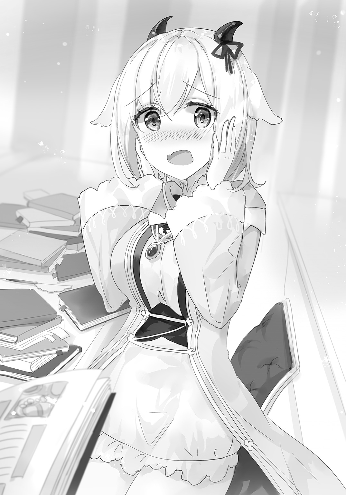
なんだろう、この、夜が熱くなりそうな気配は。
タイミングのいいことにその日の夜はホクトがいろいろと察して部屋を空けてくれた。
となれば俺は流れのままに従うだけで、ベッドの中でミミの柔らかな肢体にすべてを預けた。お互いがお互いを求め合う情熱的な一時。男であれば陶酔しないはずがない。歯止めになる理性を一旦どこかへとしまって、あらん限りの欲望をぶつけた。
もったいぶった言い方をやめると、空っぽになったってことだ。
しばらくの間ぐったりと横たわる俺。
こればっかりはブローチをつけても回復しない。
「今宵は少々蒸すでありますな。寝苦しくなるかもしれませぬので、窓はしばらく開けたままにしておきましょう」
約二時間後に戻ってきたホクトは不自然なくらい全開になっている窓を見て、どこまでも空気の読めるコメントをしてくれた。
ありがとうの言葉しかない。
で、明くる日。
精も根も生まれ変わった俺は、非常に清々しい心地でホクトと共にギルドを訪れる。
なぜ遺跡へと直行しなかったのかといえば、理由はこの溜まりに溜まったトカゲの尻尾。
捨て値で投げ売りしようとした時に市場で教わったが、この気持ちの悪い素材はなんでも滋養強壮の薬になるらしく、結構な頻度で収集要請が出ているらしい。
このまま持ち続けているのも夜中にビチビチ跳ねてきそうで薄気味悪いので、処分ついでに納品しておこうと考えた。
普通に売るよりは依頼経由のほうが楽だろう。足を運ぶのが一カ所で済むし。
善は急げとばかりに求人表を確認。
「おお、結構多いな......相場は五本で一〇〇〇Ｇか」
ぶっちゃけ端金ではある。ないよりマシってところか。
......と、ここで風変わりな依頼を発見する。
「人探し、かぁ。えーと、なになに......当方に尋ね人あり。仔細は直接応対にて」
探偵じゃあるまいし。
しかも詳しい業務内容が併記されてないからどういう依頼なのかもよく分からん。とりあえず話を聞いて目的の人物を連れてくればよさそうではあるが。
俺が怪訝そうにしていると男前のギルドマスターが顔を寄せて補足してくる。
「そちらのクエストには人数制限はありません。探し当てた者勝ち、といったところですかね」
「へえ、変わってんな」
発見者にしか報酬が出ないのだとしたら、さぞや大層な金額が設けられているに違いない。
そう思い、やるやらないは別にしてとりあえず確認してみたのだが。
「達成報酬は......蔵書からどれでも一冊進呈？ なんじゃこりゃ」
金じゃないのかよ。
しかも本って。
こうなると逆に気になってきた。普通に金だったらあっさりスルーしていたのだが。
依頼人の名前に目を通す。
『ウィクライフ王立図書館司書 ビザール』
そう書かれていた。
「司書、だって？」
こんなところでその役職名を目にするとは。
「はい。正真正銘、現職の司書様からの依頼でございます」
カウンター越しにギルドマスターが保証する。
うむむ、なんとなく見えてきたぞ。
図書館で会ったパウロによれば、ホンモノの司書は病床に臥せっているとの話。で、その司書が捜索依頼を掲示している。長時間出歩けないから冒険者を頼ってるわけだな。
「なにやら気になる依頼でありますな、主殿」
「だな」
ただ悲しいかな、俺もホクトも本には一切興味がない。
この件は活字中毒を患ってる奴らに任せておくか。
「......ん？ でもよく考えたら......」
わざわざ司書の肩書きを出してまで『蔵書』と明記したからには、あの図書館に置かれている本すべてが対象に含まれてたりするんじゃなかろうか。
となると俺の頭に浮かぶのは持ち出し禁止の魔術書に関してである。
あの中から一冊くれるっていうんなら話は変わってくるな。魔術書は丸暗記するのは大変だが、素質ゼロの俺とかが持った場合はともかくとして、武器として装備すれば載っている魔法自体は少ない勉強量でも使えるわけだし。
ミミの著しいパワーアップが見込める。
ある意味では常々渇望しているレア素材より希少かもしれん。
「話聞くだけならタダだしな......一応会いに行ってみるか」
ギルドマスターに住所と行き方を教わり、ビザール邸へと足を運ぶことにした。
もともと喧騒とは無縁な町ではあるが、更に静けさを増した郊外にあったそこは、さほど大きな家ではない。
木戸を二回ノックする。
「おお、お客さんか」
白髪を伸ばしっぱなしにした老人が戸を開けた。
「客っていうか、業者だよ。あんたがビザール......でいいんだよな？」
「いかにもそうじゃが」
「なら単刀直入に言うぜ。俺はシュウトっていうんだけど、依頼を見て来たんだ。詳しい話を聞かせてくれ」
「なんと！ こりゃありがたい、お前さんで来てくれた冒険者は七人目だ。続々集まってくれて嬉しいわい。さ、さ、入っとくれ」
にこやかな表情で俺とホクトを招き入れるビザール。
俺は司書というからどんなカタブツが出てくるものかと身構えていたのだが、案外フランクな口調のジイさんだった。
タンが絡んだようなしゃがれ声は別にして、喋っているところを聞くと歳の割には結構元気に思えるのだが、顔つきはかなりやつれている。
目は落ち窪んでいてドクロのようだ。
袖や裾からチラリと見えている手足も枯れ枝みたいに細くしなびているし、病気で自宅療養中というのは間違いないらしい。
家の中は、外観どおりの広さしかなかった。同居人の姿も見当たらない。
「一人で暮らしてんのか」
「生涯独身で身寄りは誰もおらんからの」
寂しい老後だな。こういう老人を救うために行政が頑張るんじゃないのか普通。
どこの世界も世知辛いものよ。
「......さて！ 本題に入らせていただこうか」
居間に通されると依頼についての説明が始まった。
「見てのとおりワシはもう老い先短い。数年前から病に体を蝕まれていて、今も進行中じゃ。せめて死ぬ前に、もう一度会いたい人物がおってな」
なんとなくだが、そんな感じの内容だとは予想していた。これだけ衰弱した様子を見せられたらどうしても寿命の問題が頭をよぎってしまう。
切り出し方を聞いた限りだと、そいつに死に際を看取ってもらいたい、なんて重い頼みにまでは至らないみたいだが。
俺は耳を傾ける。
「お前さんに探してほしいのは、とある女の子じゃよ。その子は猫の獣人でな」
「獣人？ どういう関係性なんだ。ジイさんの雇ってた奴隷か？」
「いやいや、そうではない。あの子は......ワシはアイシャと呼んでいたが......薬屋からの帰りに通った路地裏で偶然出会ったのじゃよ。どうやら仕事を探していたみたいでな」
昔を懐かしむように語るビザール。
「冒険者ギルドには籍を置けないし、かといって奴隷商人に自ら身売りするのは嫌だとかで、様々な職種を日雇い契約で転々と渡り歩いていたようじゃ」
「それで、雇ったのか」
「うむ」
そんな怪しい奴をよく雇えたな、というツッコミは無粋なのでやめておく。
「その頃はワシも休職直後で、病との付き合い方が下手でな。それはもう身の回りのことをやってくれるのはありがたかった！ 住みこみの使用人として二カ月ほど働いてもらったよ」
「なるほどな。それで親しみが湧いたのか......でもさ、それだけ愛着があったのにたった二カ月で別れたんだな」
「同じ場所に長くは留まり続けない主義らしくてのう。それが結べる最長の期限じゃった。契約が満了した朝、置き手紙を残して去ってしまったよ」
そういう理由か。
寝てる間に奴隷市場に売り飛ばしたって答えられたらどうしようかと思った。
「脳が腐っておらん間にまたアイシャの顔が見たいんじゃ。なんとか探し出してくれんか？ 無論、タダ働きではないことは、承知してくれておるのだろう？」
「ああ、それなんだけど」
気になっていた質問をようやく投げかけられるタイミングが来た。
「報酬欄に『蔵書を一冊進呈』って書いてあったけどさ、あれって図書館の本も含むのか？」
「もちろん。正式な引き継ぎをしていない以上、まだワシに司書の権限が残っておるからの。一冊だけならなんとか口利きできようて」
役職の私物化もいいとこだが、しかし、それならこっちとしては好都合。
そりゃ応募者続出するわな。市販の魔術書ですら数万Ｇの値がついてるんだから、これが激レア品となれば一体どれだけになるのやら。
まあ金額はどうでもいい。
俺の場合は中身のほうが重要だ。
「よし。だったら俺も探してみるよ」
野良猫探しも狩りと並行してやっていくとしよう。
「......ところで」
「なんじゃ？」
「いや、なんでまだパウロに司書の座を譲ってないのかなって。俺も図書館には行ってみたけど、あいつ相当なやり手だったぜ」
「パウロ？ あれはダメじゃ、ダメ」
ビザールは「ないない」とでも言いたげに大きく手を振って否定した。
「読書が好きすぎる奴は司書には向かない。冷静な判断ができんことがある。それに性格にも難アリじゃ。上っ面はいいが腹黒い男じゃからな。最初はよくとも次第にその利口ぶった態度が嫌味に感じてくるタイプよ」
急に元気になったな、このジイさん。悪口が止まんないんだけど。
「......はっ！ すまん、人物評がいくつになっても大好きでのう。ついつい言い過ぎてしまったわい。とにかく、パウロはまだまだ未熟。ワシの目が黒い間は正式な司書としては認めん。もっともワシが死ねばその瞬間制度の力でさっくり委譲されてしまうがね。フフフッ」
「まったく冗談に聞こえないからやめろっての」
老人のブラックジョークは頻繁に死が絡んでくるから笑えない。
というか、こっちの明け透けな性格が素っぽいな。湿っぽい話題を続けていた時より遥かに舌が回っている。
「まあそれはともかく、その獣人の特徴について教えてくれよ。それが分からないことには見つけようがねぇ」
猫の獣人、なんてありふれてそうだしな。
現に俺も一度遭遇したことがある。あいつは無愛想でいけすかない女だったが忠義にだけは厚かった。
「特徴か。まず背は低めじゃ。髪は目を引く青緑色で......容姿は活発そうな感じかの」
「ふむふむ」
「それから獣人ゆえに当然耳がある。髪と同じ色をした、やや小ぶりな耳じゃ。ピンと立っているが先はやや丸みを帯びていて、全体のフォルムは、そうじゃのう、正三角形に近いかの。毛並みもよく、手触りが非常によい。毛先がとにかくふわふわでな。そうそう、先端部分はほんの少し黒みがかっておるぞ。間近で見ないと分からないくらい繊細な濃淡の具合じゃ」
なんか耳の描写だけ異様に長いぞ。
このジジイの趣味が出てるとかじゃないよな。
「大体分かった。見つけ次第話をつけておくよ」
「よろしく頼んだぞ。期日は......ワシが死ぬまでとでもしておこうか」
「だからどういうリアクションしたらいいか分からないから、そういうのはやめてくれ」
俺は苦笑いにもならない微妙な面を浮かべたまま、用事も済んだことだし御暇しようとする。
が、背を向けた矢先にビザールが「ちょっと待った」と呼び止めてきた。
「ん、まだなにか伝言があるのか？」
「いやな、そこのお嬢さんのことなんだが」
「自分でありますか？」
これまで主人である俺に配慮して固く口を閉ざしていたホクトに、唐突に視線を送るビザール。
「ホクトがどうかしたのかよ」
「その者はお前さんが登用している獣人よな？」
「見たまんまだけど」
「ならちょっと、帰る前に耳を触らせてくれんか。アイシャと離れてから獣人と触れ合う機会なんてなかったもんでな」
ビザールが細い指をワキワキさせる。
やはり性癖だったか。
「当然、ダメ」
「頼む！ 五秒だけ許しとくれ！ 死にかけのジジイの頼みじゃぞ！」
「ええい、すがりついてくるな！ ってか死にかけのジジイって言っておきながら意外と握力あるじゃん！」
「うっ、急に発作が......」
「騙されるかよ。起きてんのは違う発作じゃねぇか！」
「ぐぬぬぬ、ケチな男は大成せんぞ」
耳触らせただけで出世できるんなら誰も苦労しねーっての。
情にほだされたホクトがついうっかり許可を出しかねないので、俺はビザールの魔の手を振りほどいて早々に退散した。
ビザール邸を出て町の中心部へと戻った俺は、考えこんだ表情のホクトと顔を突き合わせる。
「うーん、しかし、野良猫探しねぇ」
サブクエスト感覚で受けてはみたものの、思った以上に難儀しそうだな。
分かっているのは名前と外見的特徴くらいで、手がかりとしては不十分。
町の人間に手当たり次第聞き込みを行う、といった堅実極まりないやり方しか今のところ思いつかないが、それはあまりにも億劫すぎる。
そんな大変な苦労をするくらいなら俺は躊躇なく諦めることを選ぶぞ。
「......分かっちゃいたけど、俺らだけで話し合っててもロクな案が浮かんでこねぇな。遺跡から帰ってからゆっくり考えようぜ」
「そ、そうでありますな。ミミ殿の意見も聞いてみましょう」
「それが一番だな。ミミのほうが絶対いいアイディア出してくれるだろうし」
てなわけで、この件は夕方まで棚上げ。
他の連中に先を越されるかもしれないが、どうせそんなすぐには発見できないだろう。ヒントが少ないのは全員同条件だ。
体力自慢のホクトの背中に乗って、当初の予定どおり遺跡周辺へと出向いた。
ここに跋扈しているオークメイジももはや倒し慣れたもので、過度に恐れたりせず平常心で大剣をブチかませば秒殺である。手応えからいって、防御面は通常の種族より若干低いと見た。カットラスだとなんだかんだで二回か三回は斬りつけないと倒せなかったからな、奴らは。
そのカットラスも今やホクトのスレンダーな腰で暇そうにしている。
「ホクト、ちょっとお前の剣を貸してくれ」
何体目かのオークメイジを発見したところで俺はそんな要求をした。
「こちらでありますか？ もともと主殿の所有品なのですから、もちろん構いませんが......どうなさるのでありましょう？」
「なに、こいつで耐久性チェックをやるんだよ」
もしカットラスでも一撃で倒せるのであれば、そちらのほうが効率がいい。一度試してみる価値はある。
ツヴァイハンダーを一旦ホクトへと預け、装備変更。
渡されたカットラスを鞘から抜く。
刃全体をコーティングしている青みがかった銀の輝きがどこか懐かしい。右手に握ったそれを二度、ヒュンと風を切る音を鳴らすように素早く振ってみる。
おお、なんて軽やかなんだ。
俺の背丈ジャストの全長を誇るツヴァイハンダーは、材質のせいもあるがチョーカーの補助があってもクソ重いからな。
まあパワーのあるホクトは特に問題なくそいつを持てているわけですけども。
「そんじゃ、試し斬りさせてもらおうかな」
まずは近づくところから......。
「いや、待てよ」
そういえばこの武器の最大のウリって、遠距離攻撃が出来ることだったな。そっちも久々に使ってみるか。
「でやっ！」
剣から溢れ出た水が、なだらかな弧を描くような形状で撃ち出される。
当然のように魔物は杖を振るって迎撃。
水の刃が、光弾と激しく衝突し――。
「......ん？」
なんか両方消えたんだが。一瞬カッと光った後で。
「相殺したのか？ 奇妙なこともあるもんだ」
レアメタル製の武器が持つ追加効果ってのは、要するにやってることは魔法もどきだからな。こんなふうに本物の魔法とも張り合えるわけか。
今回でいうとどっちも威力は控えめだから、がっぷり四つに組んで水入りになったんだろう。
きっと。
「主殿、今の出来事は一体なんでありますか？ ......恥を忍んで申し上げますが、不勉強な自分には理解が及ばないであります」
「俺もよく分からん。もう一回実験してみるか」
オークメイジの攻撃に合わせて、テニスのラリーのように剣を振っていく。
またしても相殺現象は起こった。二度ならず、三度、四度と連続して、相手が放つ魔法は俺に届くことなく、水の刃に阻まれて次々に打ち消されていった。
「お、おお......こりゃ面白いな」
やべー、これ結構気持ちいいかもしれない。
魔法同士がぶつかった瞬間とかちょっとした花火みたいだし。
しかし豚とキャッキャじゃれ合ってるだけという現実に気づいた途端凄い勢いで冷めたので、真顔になって接近。容赦なく刀身そのもので襲撃する。
一発では悪臭を伴う血飛沫が舞っただけでくたばらない。ならば二発、と大きくガードの開いた脇腹に突き立てる。
ブヨブヨとした脂肪をかき分けて、カットラスの薄い刃は痛点の密集した局部へと達した。
俺はそこでもう一段階、柄を握る指に力をこめる。
それを境に、絶えず手の平に伝わってきていた硬く萎縮した感触が、だるんと弛緩したものに変わった。
生命力を失ったことの決定的な証拠だった。
煙に変わる前の断末魔の叫びを聞きながら、俺はオークメイジの耐久力について結論を下す。
「やっぱしばらくはツヴァイハンダーでいいや」
一撃と二撃の差は、あまりにもでかいっすわ。
報奨総額が五〇万Ｇを少し超えたあたりで、俺は早めの帰還を済ませた。
ミミを図書館まで迎えに行き、そのまま雰囲気のよさげな飯屋に直行する。
その店では珍しく、燻製にも塩漬けにもなっていない魚を出していた。港があるフィーにいた頃は魚も手軽に食べられたが、海から離れた町でこれは違和感がある。
「どういう輸送をやってんだ。傷んでたりしないよな？」
ムニエルになっている異常に大ぶりの切り身をフォークでつついてみる。適度に弾力があって、食べ頃を逃している感じはない。鼻を近づけても古い魚特有の嫌な臭みは一切なかった。
「まだ騙されねぇぞ、バターの香りでごまかしてるだけかもしれないし......」
でも口に運んでみると歯応えはしっかりしてるんだよな。腐ってたらもっとフニャフニャだろ。いや別に腐った魚なんて食ったことないけど。
「シュウト様、このお店のお魚はフィーの漁港でとれたものみたいですよ」
いつの間にかミミは暗号文じみたメニュー表から原産地名を発掘していた。
あっさり言ってるけど、あそこからここまでって相当離れてるぞ。俺が辿ってきた旅路の長さとちょうど同じなんだから。
鮮度を保ったまま遠くの町に送れるってすげーな。クール便とかあるはずないのに。
考えつくとしたらやはり魔法の力による方法になってしまうが、冷凍保存とかそういう芸当もできたりするのか？
「......まあそんなのはどうでもいい」
うまいし。
「作戦会議を始めるぞ」
深海魚以上に謎めいた魚のフライを頰張っているミミに、今日受けた依頼について話した。
「人探し......ですか」
「ああ。ただなー、情報があんまりないんだよ」
猫耳の時点で見た目には分かりやすいが、現在どこに雲隠れしているかなんて知りようがない。
ただミミにはすぐに提案が浮かんだようで。
「シュウト様、所見を述べさせてもらってもよろしいでしょうか？」
「なんでも言ってくれ。俺はお手上げだ」
「自分もであります」
単純労働専門の俺とホクトは揃って手詰まりだった。
ここは是非とも頭脳担当のミミにお色気担当だけではないところを発揮してもらいたい。
「アイシャさんはミミたちと同じ獣人です。出会った人であれば、きっと強く印象に残っているのではないでしょうか」
「まあな」
奴隷なんてたまにしか見かけないし。
おまけに特定の誰かに付き従う、なんて生活もしていないとくれば、かなりの珍獣だろう。
「ですから、聞き込みを行うのが一番効果的だと思います」
「やっぱそうなるか......俺もそれは考えたんだよな。でもめちゃくちゃ手間がかかるじゃん」
「いえ、範囲はぐっ、と狭められますよ」
ポイントを伝えてくるミミ。
「商業ギルドの人たちに絞って聞いて回るのがいいとミミは思います。シュウト様のお話ですと、アイシャさんはいろいろな職業を渡り歩いているようですから」
「なるほど！ それだ」
ジイさんいわく日雇い奴隷で生計立ててたみたいだしな。他に世話になった雇い主が何人かいてもおかしくない。
まったく見当がつかないと半ば思索を放棄していたアイシャの足跡だけれど、どうやら追えなくもなさそうだ。
まずはそこからだな。
「よし、明日は一日休養にして市場を巡ってみるか」
俺はムニエルにグリーンソースを絡めながら、対面の席に座る二人にそう告げた。
方針は定まった。ここからは俺の交渉力（主に金）の出番である。
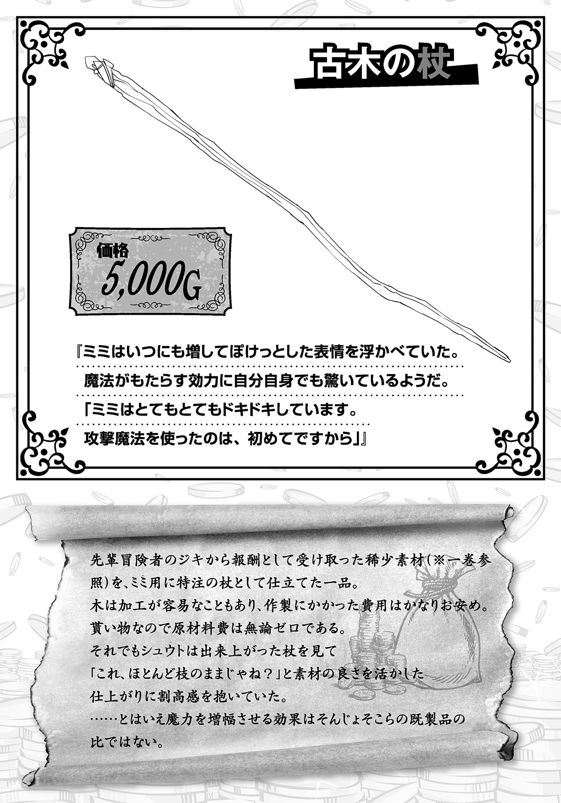
町の西手側にあるウィクライフ商業区。
青果市場を始めとして、数多くの商店が立ち並ぶ活気に溢れた区域である。
俺たちは今朝からここを訪れている。言うまでもなく尋ね人の情報を求めて......なのだが。
「ああ、猫の獣人なら一年前にうちで働いてたよ。きっとその子だね」
「マジで？」
とりあえず入ってみた日用雑貨店でいきなり耳寄りな話を聞けた。
あまりにも呆気なく一端をつかめて若干拍子抜けする俺。ただ、肝の据わった顔つきをした店員のおばさんはこうも言う。
「でも変だね。あの子はアイシャなんて名乗らなかったよ。あたしはミルって呼んでた」
「ん？ どういうことだ、それ」
「好きに呼んでくれっていうからさ、名前をつけてあげたの。かわいいでしょ？ まあ娘ができたらつけようと思ってた名前なんだけどさ。なにせうちの子供は長男次男三男四男で、一人も女の子がいないから持て余しちゃってたのよ」
ザ・おばさんって感じでめっちゃ世間話をしてくるが、聞くのもそこそこに俺は考えを改める。
「うーん、名前はその時その時で雇い主につけてもらってんのか」
ってことは、アイシャという名前はまったく手がかりにならないってわけか。ジイさんは愛着をこめて呼んでたかもしれないが、本人的には単なる一時的な名称に過ぎなかったんだろう。
結構ドライな奴だな。
「だけどねぇ、せっかくよく働いてくれてたのに一カ月しかいてくれなかったよ。かわいらしい子だったからずっと雇っていたかったのに」
一カ所に留まらない、というのはジイさんの話どおりか。
「じゃあさ、もう一個質問していいか？」
「難しい話だったらお断りだよ。こちとら学術書と睨めっこできないから商人やってんだから」
計算なら得意だけどね、とおばさんはケラケラと笑う。
「なんも難しくなんかねぇよ」
まず俺がそんな話をできないからな。
「また獣人についてだ。ここにいたことがあるのは分かったけど、次どこに行くかとかは聞いてたりしないか？」
「それは教えてくれなかったね」
予想はしてたがその点も一緒か。やむなし。
「分かった、時間取らせてすまなかったな。他も当たってみるよ」
俺は店を出る。
その後もいくつか回ってみたのだが――。
「ああ、ペティのことか。それならうちに二十日ほどいたな」
「懐かしいな。シェバちゃんには倉庫の整理をやってもらってたよ」
「うちではウェイトレスとして働いてましたね。フユは愛嬌がありましたから割と評判でしたよ」
「ロンドを雇っていたのは二年前かな。今？ それは知らない」
「エリオネの奴がどこ行ったか？ 分かるわけないだろ、数週間しか付き合いねぇってのに」
「その子なら半年前までここで荷降ろしをやってたよ。小さい体で頑張ってたね、ミッヒは」
「猫の獣人？ 三年くらい前にはいたね～。キミーって子のことでしょ？」
まあ話が出るわ出るわ。
大体四軒に一軒のペースで流れ者の獣人が奉公に来たことがあると聞かされた。ほっといたらそのうち町内の全店制覇しそうな勢いなんだけど。
しかも毎回名前が違う。何個呼び名持ってんだよこいつは。
とはいえ、足取りは分からずじまい。
問題の獣人は自分の素性を誰にも明かしていなかった。
以前はいた、ということはさして重要じゃない。そんな情報が何十個集まったところで結局今どこにいるかが分からないんじゃなんの意味もないからな。
おまけに。
「待った。冷やかしで帰すほどうちはぬるい商売はしてないよ。なにか一品くらい買っていくのが義理と人情ってもんじゃないのかい」
「あんたに話をしてあげてる間にどれだけの損益が出てると思ってるのさ。その時間があれば軽く帳面をつけるくらいの仕事はできたよ」
ほぼ毎回のように情報提供の対価として欲しくもない商品を買わされた。
商人のがめつさはどうやら風土によらないらしい。
まあ金はあるので大した痛手ではないものの、そのせいで壺やら絨毯やら生鮮食料品やらがどんどん溜まっていった。
途中で「あ、これやばい気配だな」と気づいて急遽荷車の購入を決めなかったら、溢れんばかりのモノの運搬に困ってまともに身動きが取れなかったに違いない。
「くそっ、ここもニアミスか」
店から出た俺は、押し売りされた奇怪な色の花束をホクトが引っ張る荷車へと投じる。
積荷に統一感がなさすぎて荷台がカオスなことになっていた。
気づけばもう夕方。
要は現在進行形で雇用契約を交わしている店主のところに行けば、目的はサクッと達成されるわけだが、まだそこまで至っていない。
一日中歩き回って未だ目立った成果なし、だなんて徒労もいいとこだ。『骨折り損』は数ある俺の嫌いな言葉の中でも上位に位置する。
「これだけ回ったのですから、確率的にはそろそろ今の職場に辿り着いてもおかしくはないと思いますけど......」
ミミもぐったりしている。
荷車を引くホクトはまだ余力はあるが、ひとつ前の店で買ってしまったマッチョな石像がその凄まじい重量を遺憾なく発揮しているせいで、歩く速度が大分鈍っていた。
「主殿、これは、かなり足腰にくるでありますなっ」
「すまん、俺も今になって後悔してる」
彫刻の販売店になんて入るんじゃなかった。
店員の説明によれば交易品になるらしいけど、どこで売ったらいいんだ、これ。アセルで捕まえた蝶はセレブな町を訪れるまで大事に取っておくつもりだが、こんな意味不明にかさばる物体はすぐにでも損切りしたいぞ。
ということで、俺はなんでも買い取ると噂の露天市場に立ち寄った。
露店商のおっさんが広げた布の上に並ぶ土産物の顔ぶれは、ホクトの荷車とタメを張れるくらいの雑多さを誇っている。
「こ、これを俺が買うのか......こんなの置いてたら客が逃げるぞ」
おっさんはムキムキの像を前にして引いていた。
「頼むよ。いくらでもいいから売らせてくれ。俺にはこいつと旅する度胸はない」
「しゃーねーなー。今回だけだぞ？」
買い値の二〇パーセント以下での投げ売りだったが、引き取ってくれるだけでもありがたい。そのへんに不法投棄するよりは精神的にマシだからな。もうなんか粗大ゴミみたいな扱いだが、実際感覚としてはほぼそれに近い。粗大ゴミだって金出さないと捨てられなかったんだし。
「あ、そういや」
一応このおっさんにも尋ねてみるか。
「猫の獣人が『雇ってくれ』って言ってきたことはないか？」
「猫？ 変な色の髪をした奴か？」
「たぶんそいつだ。おっさんのところにも来たのか？」
「来たもなにも、二週間前までは俺のところで働いてたぜ。客引きをやらせてたんだけどよ」
「二週間前？」
思いがけず今までで一番近い数字が出てきた。
「こんなジャンクな店までカバーしてたのか......しかもかなり最近じゃん」
もしかしたらこの周辺こそが現在の活動拠点なのかもしれない。
別の露店へ。
「......全然いねぇ！」
あるだけ巡ってみたが、まあ現実ってやつは相変わらずシビアなもので、そんな都合よくはいかなかった。
一定の場所に留まらない、というのは、同じ職種を続けないってことでもあるのか？
参考にできそうな傾向がちっとも見えてこない。
「シュウト様、まだもう一軒あります。ハーブと香辛料のお店みたいですよ。いい香りですね」
ミミがぽわんとした顔をする。
「あちらも確認しておきますか？」
「やるだけやってみるか......」
ただ、俺の直観は「どうせいないぞ」とネガティブな忠告をしている。だからといって見過ごす利点もないので若めの男が経営するその店で聞いてはみたが。
「うちにはいないね。いたこともない」
ほらな。
「だけど、それって少し前まであそこの露店で働いてた女の子のことでしょ？ なら知ってることがひとつだけあるよ」
お？
「見てのとおりここはちゃんとした店舗を持たない露天市場だ。当然住みこみで働くなんてことはできないよね」
「ふむ、確かに」
屋台やレジャーシートみたいなものを敷いただけの場所で寝泊まりするはずがないからな。
いくら町中とはいえ自然現象の数々を侮ってはいけない。
「だから獣人の子はどこかから通わなきゃいけないわけだ。実際に僕も彼女が出勤してくる様子は目にしているよ」
「......自分の家を持っているってことか？」
「家、とまでは断言できないかな。だけど獣人の子がどの方面から来ていたかは概ね推測できてる」
布を巻いて作ったような帽子に黒い髪を押しこんだ男は、きっぱりとそう言った。
「本当か!? 町のどこだ？」
「町じゃない。町の外にある森からだね」
意外な回答が返ってきた。
それもやけに具体的だ。根拠がなければ決して出せないであろう突飛な答えじゃないか。
「なんでそんなことまで分かるんだよ。まさか尾行したとか」
「僕もそんな暇じゃないって。単純に、その子から白樺の匂いが漂ってたからさ。白樺の木が生えている地帯なんてウィクライフ北東にある『白の森』しかない」
「それは確実なのか？ 嗅覚が頼りってのもなぁ」
「商売柄鼻だけは利くからね。間違いないよ」
沈着な男の表情からはかなり自信があることがうかがえる。匂いの嗅ぎ分けに関してはプロだという自負があるんだろう。
他にアテがないのも事実。ダメ元と思ってこの船に乗るとするか。
しかしまあ、雇ってない奴が雇ってた奴より有力な情報を持ってるんだから、分からないもんだな。
「にしても、森の中とはねぇ」
これはもう自らの目と足で確かめてみるしかない。ギルドで仔細を聞いておかないと。
「ありがとよ。あんたのおかげでようやく尻尾をつかめそうだ」
「じゃ、毎度あり」
「は？」
「だから、毎度あり、だよ。『そんな暇じゃない』って言ったでしょ？ 生まれた損益は埋めないと」
小気味よい調子で話しながら男は保存用の瓶に詰めた香辛料を俺の前に大量に並べる。
よりどりみどり、とばかりに。
「僕にだって商談をする権利はあってもいいじゃないか」
ぐっ、こいつもやはり商人の血が流れていたか......。
とはいえ重量も体積も小粒なだけマシだな。日持ちするから近日中に消費しないといけないわけでもないし。あるだけ買っていくか。
露天市場を離脱したその足で、陽が落ちる前にギルドへと向かう。
それにしても香辛料の販売価格は「これボッタクリなんじゃねぇか」ってくらい高かった。少量でも当たり前のように金貨を要求してくる。
ひとつまみでも効くから実質的には安い、とかなんとか言っていたが、眉唾ものだ。
それに、よく考えたら現状これといって使い道がない。食料品に分類されるとはいえ結局は調味料。メインになる食材がないとなんの意味も成さない。語り口が飄々としてるからその時は特に疑念は抱かなかったが、買った後で無用の長物だと気づいた。
セールストークで煙に巻かれたな。
これだから口の上手い奴は。
「......まあ、いいか」
情報料だと思っておこう。やっとのことで手がかりらしき話が聞けたんだから。
ギルドにて、件の『白の森』について尋ねる。
「『白の森』は駆け出し冒険者向けの探索スポットです。出現する魔物は多岐にわたりますが、どれもドルバドル全土に棲息しているものと変わりません」
じゃあ狼とかスライムとかあのへんか。転生当初は難敵に感じたが今更だな。
「主な採取可能素材は白樺の樹液と樹皮ですね。樹液は薬、樹皮は紙の原料になりますね。植物製の紙は羊皮紙に比べて粗悪ですが日常で用いる分には便利ですよ」
「へえ。そりゃちょうどいいな」
教育機関がいくつもあるこの町は、比例して紙の消費量も凄まじそうだし、近場で原材料が集まるのはありがたいに違いない。
「森の地図をお渡ししておきます。ただこれは簡易なものですからね。詳しい地理が知りたいのでしたら、図書館にある資料を読んだほうが正確かと」
「今からじゃ遅いしな......この地図だけでいいよ。森にはどのくらいで着くんだ？」
「徒歩で一時間程度ですかね」
歩いて一時間か。
ってことは、ホクト換算で十分強だな。
翌日、ホクトにまたがった俺はまだ陽も昇り切らないうちに森を目指した。
『女にまたがる』なんて言葉をちっともいやらしくない意味で使ったのなんて初めてだ。
「主殿、到着したであります！ さあ、気合いを入れてまいりましょう！」
「ん、おう......お前、朝から元気だな」
「元気だけが自分の取り柄ですので！」
ホクトが健脚を飛ばしまくったから出発から到着までほとんど間が空かなかった。もうちょい背中の上でうたた寝してたかったんだけど。
とはいえ、いつまでも夢見心地でいるわけにもいかない。
まずは手前付近で張り込みを開始。
ここで対面できれば話は早いのだが......二時間近く待ってもそれらしき人物は現れない。
そろそろ商人が一斉に開店準備にかかる頃だ。ってことは現在、森からの出勤はしていない、と考えていいはず。日雇いで遅刻したら即クビだろうし。
「ってことは求職中か。今はまだ寝てる時間か？」
こちらから接触を試みないとダメらしい。
これで既に下宿付きの仕事が決まってたりしたら無駄足もいいとこだな。のろのろと真昼間にやってきても不在の可能性が高いから、したくもない早起きをしたってのに。
寝ぼけ眼をこすりながら、どこか神聖な雰囲気のある森に踏み入る。
さて。
訪れたそこは、白樺の木が所狭しと立ち並ぶ分かりやすい森林地帯だった。
ただでさえ少ない太陽光が大量の木々の葉で遮られているから、やや暗く視界に難がある。
これは時間の経過と共に解消されるとして、問題は......。
「ここ、どのへんなんだよ」
俺は後頭部をかく。
どこを見回しても目につくものが木しかないから、現在地が全然分からん。
ギルドマスターに譲ってもらった『白の森』の地図は、懇切丁寧に特定のルートが記されていたりはせず、大雑把にしか地形を表していない。
入り口付近であれば迷うこともないんだろうが、猫を尋ねて奥へと踏みこんでいくと前後左右が曖昧になってくる。
かつて出会ったサバイバル専門家の教えを守って、ちょくちょく通り過ぎた幹に小さな傷をつけて目印にしてはいるが......帰り道の参考になるだけで、どこへ進めばいいかは気分に任せるしかない。
「甘ぇな、これ。ほとんど砂糖じゃん」
木の幹の傷口から染み出してきた樹液が指についたのでなんとなく舐めてみたけど、予想よりずっとはっきりした甘味がした。
ってかこの味、俺知ってるな。いや、別にカブトムシの真似事をやってたとかじゃない。なんかガムみたいな甘さがする。
ただ樹液は乾くとべたべたとして気持ち悪い。ホクトから借りたカットラスの水で洗い流さないと指同士がくっついてロクに物も持てやしない。
この水が飲めればワインの瓶を持参する必要もなくなるんだが、まあ無理だろう。レアメタルの由来からして恐らく海水だし。「水がなければワインを飲めばいいじゃない」を地でいってる世界なので、おとなしくこれからもブドウに感謝を捧げ続けるとするか。
「ややっ。主殿、十一時の方角から敵襲であります」
「どれどれ......またこいつらか。もう飽きたぜ」
森林内部はゴブリンや狼、鳥に毒ヘビなど、既視感のある連中しか出てこなかった。
「念には念を入れてツヴァイハンダーにしておいたけど、これだったらいらなかったな」
会った瞬間に蹴散らせるレベルなので、当然成果的にも寂しいことになっている。この期に及んで報奨が金貨と銀貨合わせて数枚というのもアホらしい。
余計な戦闘はしなくていい。さっさとジイさんの元世話人を見つけ出さねば。
ところが、である。
「......なあ、ホクト」
「いえ、主殿。皆までおっしゃらずとも把握しております」
「だよな」
手探りながらに三時間うろついた末、俺たちの目に広がったのは、だだっ広い草原だった。
つまり、森を抜けてしまったということ。
小屋などの人の住み処になりそうなものは、なにひとつとして目撃しなかった。進めそうな道は一通り歩いてみたというのに。
「おいおいおい、待てよ。じゃあ通り過ぎちまったってことか？」
「おかしいでありますな。見逃していたルートがあったのでありましょうか」
「んー......ひとまず逆走してみるか。脇道があるかもしれねぇ」
「では、お運びするであります。今ならばまだ魔物は散ったままでしょう」
ホクトの背に乗って、ここが中心あたりだろうと目星をつけていたポイントまで戻る。
腐葉土で覆われた不安定な地面をまったく苦にせずに疾駆するホクト。一度通った道なので脇目を振る必要もない。
切り傷が刻まれた、群を抜いて幹が太い白樺の木が生えている場所に辿り着く。
一応、ここから分岐はできなくもない。この木を中心として東西に当たる方向は未調査。
「ちょっと横道に逸れてみるか」
そんな選択肢も取ってみたが、進めば進むほどに木々の密度が上がっていくだけで、どんどん道幅が狭まってくる。
歩くのも困難だ。
「こりゃ無理だな。もっかい戻るぞ」
俺は早めに切り上げて、元の位置へと引き返す。
そして再び思考。
「全然見当がつかねぇな。森中全部回らないといけないのか？」
まさか。とても人間が入りこめないような所も多数含まれてるっていうのに。
ひょっとして秘密の隠れ家でもあるんだろうか。カラクリ解かないと発見できないような。
もしくは俺たちの気配を察して逃げ回っているとかだな。過去に出会った猫の獣人は隠密行動を得意としていた。同じ種族なわけだし、似たような能力を持っていても不思議ではない。
一番最悪なのは、普通に町中で住みこみで働いている、というパターンだ。それだと振り出しに戻るだけでますます徒労感に襲われる。
いずれにせよ、捜索は想定していたより厳しそうだ。
今ですら嫌気が差すほど面倒な思いをしているのに、これ以上なんて耐えられないんだけど。
「これはもう諦めるしか......ん？」
俺が早々に捜査の打ち切りを視野に入れ始めた時。
「なにやってんだ？」
十メートルほど先で、地面に手の平を当てるホクトの姿が目に入った。表情はいつになく真剣で、鋭い目つきにいたってはハードボイルドな敏腕探偵のようでさえある。
こうやって真面目な顔をしただけで絵になるから、立派な容姿の持ち主はずるい。
「主殿。もしかしたらでありますが......前後左右ではなく、上下で考えるべきだったのかもしれません」
「ほう。......で、どういうことだ」
俺は分かったふりをしただけで微塵も分かっていなかった。
「幾度となく往復しているうちに足の裏に伝わってくる感触の違いに気づいたのであります。全体的には非常に柔らかい地質でありますのに、ここだけひどく硬かったので」
ホクトが手を当てていたのは、覆いかぶさっている腐葉土を払いのけていたからだった。
近づいて、そこに隠されていたモノを俺も見下ろす。
一メートル四方の石版だ。得体の知れない文章が刻まれている。
「何語だ、これ？」
転生した時点で異世界の言語は通じるようになっていたのに、まったく読めそうにない。まるで暗号文じゃないか。
しかし、これが魔術書の写しであることは即座に判明した。右下に『中級移送のグリモワール』という単語がひっそりと添えられている。
「とある魔法を抜粋したもののようであります。読み上げて魔法を詠唱することで何かが起こるのではないでしょうか？」
「だろうな。しかも移送ってことは......」
どこかに繫がるはず。
それこそ、身を隠すのに都合がいい小屋なんかに。
仮に害を与えるための罠であれば、こんなふうに手の込んだ隠し方をしないだろう。
「でかしたぞホクト！ 頭じゃなく体で感じ取れることならお前はピカイチだな」
語彙の乏しい俺は褒めてるんだか貶してるんだか微妙な褒め方をしたが、ホクトは背筋を伸ばして大いに喜んだ。お互い単純だと楽でいいな、マジで。
「......で、だ。ホクト」
「はっ。なんでありましょう」
「お前、この暗号解読できる？」
「......申し訳ありませぬが......」
「気にするな。俺も一緒だ」
だがお互いオツムが弱いので、案の定ここでピタッと停滞。
「ま、別に全文解けなくたって問題ねぇけどな。要するに魔術書の書き写しなんだろ？ だったらコピー元を持ってきてミミに唱えてもらえばいい。中級なら図書館でも借りられるだろ」
「おお、なるほど！」
「ただ指定されてる行き先だけは自力で解読しないとダメみたいだな。これも図書館行って調べりゃ分かるんだろうか」
うーむ、となると一度町に戻るしかないか。
なんか人探しの依頼を受けて以降、振り回されてばかりな気がする。どれだけ東奔西走すれば目当ての人物のもとに辿り着けるのやら。
「でも近いところまでは来たっぽいな。というか、なんでこんなのが森の中にあるんだろ」
「甚だ謎でありますな」
「それにこの一個だけとは限らないしな......もし何個もあるんなら順々に確かめていかなきゃいけないんだろ？ めんどくせぇ......」
それを含めて図書館で調べたほうがいいかもな。図書館には『白の森』の資料がある、とは前もってギルドマスターに聞かされている。
「本......本か......」
果たして俺の脳ミソで何分我慢できるんだろうか。
地図の裏にあったなにかの記号めいた暗号文を書き写して超特急で町へとＵターンした時、まだ正午も迎えていなかった。
まっすぐ図書館に向かう。
澄まし顔の全面から知性を滲ませた受付嬢は、これだけ何度もこの施設に来てるというのに、顔パスを許すこともなくマニュアルどおりに身分証明書の呈示を要求してくる。
連日この手続きを踏んでるんだからいい加減俺の顔くらい覚えているに決まっているのだが、規則ってやつは絶対らしい。
「審査が済みました。それでは、よき読書を」
サインを確認した知的な女性は顔色ひとつ変えずにそう言って、入室許可を出した。
ぶっちゃけ「知的な女性」なんてのは「美人」とほぼイコールの意味なわけで、仮に風貌がメスオークだったらそんな形容はしていない。
だからこそ長々としたやりとりを強制されても悪い気がしてこないのだが。
それはともかくとして。
無駄に緊張した面持ちのホクトを従えて蔵書室に入る。
異様な高さを誇る書棚の数々が多大な威圧感を与えてくる広い館内は、当然ながら、相変わらずぞっとするほど静まり返っていた。
ごく小さな息を吸う音を立てることさえためらわれる。
書店の店員なんて洒落たバイトはやってこなかったので、どうにもこの水槽の中じみた物静かな空気には馴染めない。
「お、あの席か」
紐付きの会員証を首から提げたミミの姿はすぐに発見できた。感心なことにメモに魔術書の要点をまとめながら学習している。ファストフード店で働いていた頃に五時間、水とポテトだけで粘ってこれをやっている客がいた時はイラついて仕方なかったが、ここは知的好奇心を満たすために開放された図書館。素直に学徒の鑑といえる。
ミミはいつもよりかなり早い俺の登場に少し驚いていたが、小声でカクカクシカジカと耳打ちするとすぐに事情を理解してくれた。
人目につくテーブルを離れ、三人で部屋の隅に集まって会議する。
暗号の写しを眺めるミミの表情は、いつものぽやっとしたものとはまるで異なっていた。他方、ホクトは普段どおりの凜々しさを保っている。つまり特に何も考えていない。
「ではまず、ひとつずつ資料を持ち寄りましょう。ミミは暗号を解く鍵になりそうな本を探してみますね。おそらくですけど、古文書や歴史書の中にヒントがあるように思います」
一番厄介そうな役回りを快く引き受けるミミ。最高にありがたい。俺とホクトにやらせてもどうせ無理だろう、と考えたのかもしれないけど。
「じゃあ俺は森の細かいデータを調べてみるか。ホクトは『中級移送のグリモワール』ってのを探しておいてくれ。これはすぐ見つかるだろ」
「了解したであります。手が空き次第、至急ミミ殿を補佐するつもりであります！」
一時解散。
別々に行動し、必要な書籍を探し始める。
が、すぐに行き詰まった。
せーので始めてみたはいいものの、地理や土壌について記した本がどこにあるかとか全然分からんな。
こんな時はあいつを頼るしかない。
「地理書ですか？ それならあちらへ」
蔵書の整理を行っていた司書代理ことパウロに声をかけ、案内してもらう。
「範囲の広いものがお望みでしたら、ウィクライフが置かれた大陸全土、あるいはドルバドル全域を網羅した書物も何冊かありますが」
「そこまで大規模じゃなくていい。この辺のだけで充分だ」
「近隣ですと......このあたりが詳しいですかね」
慣れた様子でハシゴを昇降するパウロが見繕った本は、合計で六冊。
その中には『白の森』に関するものも含まれている。『白樺樹林の地形と産出物』というタイトルからしてそのものズバリだ。
「これだよ、これこれ。助かったよ。ありがとな」
「いえ、当然のことをしたまでです。これが王立図書館の管理を託された私の職務ですので」
嫌な顔ひとつせず手伝ってくれたパウロに感謝を述べた俺はそれを手に集合場所にまで戻ったのだが、やはりというべきかミミのほうは難航しているようで、まだ鍵となる本を捜索中らしい。
ホクトはそのサポートに回っているといったところか。長い手足を伸ばしながら精力的に書棚と書棚の間を歩き回っている姿が見える。
とりあえず、自分の担当である本に目を通してみるか。
まず一ページ目。
目次か。一応確認はしておこう。
『森林全体図と主要なポイント』
『西部縮尺図・三』
『南部縮尺図・五』
『地質構造の調査報告』
『筆者一同による森林東部ルート検証』
『白樺の商業利用及び価値の不動性』
『局所的歴史考察 ～原住民の生活と民俗～』
『オブジェクト概説』
『持続的な伐採にまつわる諸理論』
『方角を見失わないために覚えておくべき六か条』
『森林内の生態系と、欄外に属する魔物の傾向』
......。
俺は即ギブアップした。
やばい。欠片たりともページをめくる気がしないぞ、これ。
もうここで詰んだんだが。
そもそも頭が痛くなる内容の本をじっくり読むなんてことは生涯......いや一回女神の凡ミスで死んでるから生前か。ともあれそんな殊勝な真似はやったことがない。
誠に残念ながら、俺は「よし、精読するか」と気合いを入れただけでサクッとできてしまうような頭の出来はしていない。想定が甘かったか。不覚。
だが投げ出すには早い。まだ他力本願という必殺の手口が残っている。
俺はパウえもんを呼んだ。
「魔法が刻印された石版、ですか？」
「そうだ。森の中で偶然見つけたんだよ」
博識なこいつのことだから石版文字についても既知のはず、と踏んでいたのだが、どうやらそうではなかったらしい。
パウロは小難しい顔で考えこんでいる。
「申し訳ありません。私にも分かりかねます。生まれてから三十年近くもウィクライフに住んでいるというのに、まだ未知の領域があったとは。私自身にとっても驚きですよ」
「そうか......」
「ですが思い当たる節はあります。中級の移送魔法を書き写したものである、ということでよろしいんですよね？」
「それは間違いない」
はず。
「なら、推論ですが......それはきこりの休息所に繫がっているのではないでしょうか」
「きこり？」
「はい。『白の森』は天然資源である白樺が多く生えている地帯ですからね」
「それはギルドで聞いたな。薬や紙になるって」
「歴史書によれば、もともとはきこりの手で資源利用を進めていたそうです。魔物が出没するようになってからはそういった林業はきこりではなく冒険者の仕事になりましたけれど」
俺はふと、アセルでのリクの話を思い出した。
森林と鉱山の違いはあるが、あれも似たようなケースだな。
「冒険者に転職できたきこりもいた、とは歴史に残っていますが、いかにして順応したかは長年謎のままでした。しかし、そうか、そういうことだったんですね」
細く尖った顎に手を当て、うんうん頷くパウロ。
「待った待った、一人で納得してないで俺にも説明してくれよ。どういうことなのか全然分からねぇぞ」
「ああ、すみません。どうにも考え事をすると視野狭窄を起こしてしまいがちで。ええとですね、要するに、安全な休息所を設けることで作業の危険度を下げていたわけです。隠れているということは魔物の目が届かないのと同義ですから、ゆっくり休憩できたでしょうね。何事も折り返し地点で休めるのと休めないのとでは大違いですから」
「ほう」
なんとなく分かるな。
俺も小学生の頃は二十五メートルは泳げても五十メートルになるときつくて無理だったし。
「そしてもちろん、休息所の中にも外に戻るための魔法を唱える補助となるものがあるんでしょう。おそらくは元となった魔術書でしょうが......石版はどのあたりに置かれていたのですか？」
「森の真ん中くらいかな」
「中央......なるほど、最善のポイントですね。どこから森に進入しても同じ間隔で到達できるのですから、これより公平な位置はありませんよ。となれば休息所はその一カ所だけという可能性が高いですね。共有の拠点だったのでしょう」
「休息所はそこだけかもしれないけど、石版は一個とは限らなくねぇか？ だって移送ってことは飛べるんだろ？」
石版さえあればどこからでも移れそうだが。
「いえ、石版の数と休息所の数は同じと見て間違いありません。中級移送魔法の『テレポート』は自分を離れた位置に転送できる魔法ですが、その距離はおよそ二十メートルが限界です」
「あー、そういうことか」
「もっとも、これは魔力に応じて拡大可能ではありますが......しかしながらきこりが石版を読むことで詠唱するのですから、それほど高度な使い方はできないはず」
「まあ、そりゃそうだな」
カンニングなしで自由自在に使えるんなら、ヒントなんて用意する意味ないし。
「原典ではなく写しでも魔法が発動するくらいなのですから、石版の素材自体に魔力が宿っていないと辻褄が合いませんが、それを考慮しても平均的な範囲を越えることはないかと」
「......ん？ それはそれでおかしいぞ。そんだけの距離しか移動できないなら休息所も石版のすぐ近くにないと変じゃん」
「そこです。そこが最大の落とし穴だったのです。ああ、だから先人たちも解明できなかったのですね」
興奮しているらしいパウロは背中をくねらせた奇怪な立ち方をした。
「妙なポーズしてないで教えてくれよ」
「ああ、また自分の世界に入ってしまいました。はい、続けましょう。これはなぜ暗号形式にしてまで石版を置く必要があったか、なぜそこが安全だったか、という理由付けにもなるのですが......石版の真下、地面の中に休息所が作られているに違いありません」
「地面？」
とんでもない発想だな、おい。
だが当のパウロはキリリとした眼差しを見る限り真面目も大真面目だ。
「石版の配置場所から最長で二十メートル、となると、それはもう地下しかないでしょう。地下ということは魔物の侵入を防げますし、石版は地表で目印としての役割を果たします」
「ははあ、そういう理屈か」
筋が通っている。
そして身を隠せる場所、というのはまさにぴったりだ。
俺は確信を持つ。そこにジイさんが探している獣人がいることを。
いつの間にやら、ミミとホクトも達成感に溢れた表情で戻ってきている。やけに嬉しそうだな、と俺が期待混じりに聞くと。
「暗号が解けたのですから、それはもう狂喜するでありますよ！ 歴史書をひたすら漁っていたらミミ殿が見つけてくれたであります！」
「とてもとても大変でした......どうやら大昔の原住民さんが使っていた言語みたいです」
眼精疲労で痛んでいるであろう目頭を押さえながら。
「意味は、ええと、『小部屋』だそうです」
ミミはそうささやいた。
これで地下室の存在はほぼ確定か。
そうと決まればこんなおちおちクシャミもできないような場所にいる義理はない。
すぐに森へと再出発しようとするが。
「ふむ、古来語か......しかし......地下室建造における技術的課題以上に不可思議だな。すべてひっくるめて当時のきこりたちの文化レベルについて再考してみなければ」
パウロはまだ考察を続けていた。なぜきこりがそのような設備を用意できたのか、なぜ原住民族の言語を操れたのかと、しきりにブツブツ独り言をこぼしている。
正直、俺にとってはどうでもいい。
今そこに住んでいるであろう人物のほうが断然重要なわけで。
「なにかと世話になったな。用事が済んだから帰るよ」
魔術書をレンタルして図書館から離脱する。
一気に解放された気分になった。危機的状況を知らせるかのごとく文字通りのレッドゾーンに突入していた胸元のアレキサンドライトも、今では落ち着き払った緑の輝きを放っている。いや別に俺の精神状況を反映しているわけじゃないけども。
やはり風格ある学術的な建造物なんてものは、俺には窮屈らしい。
「さて、と」
首の骨を鳴らしつつ、頂点をやや過ぎたばかりの太陽を見上げる。
まだ時間的には真昼間の範囲。捜索を明日に先延ばしにしたんでもいいが、この中途半端にできた暇を簡単に埋めてくれるほどこの世界は娯楽で溢れていない。
ましてやここは学問の町。
俺向けの退屈しのぎがあるはずもなく。
それだったら余った体力でもう一働きしたほうがいくらかマシだ。適当にパン屋で腹を膨らませて、再び『白の森』へ。
「ホクト、ミミをおぶってやってくれ。それでミミはその間に読書だ」
移動の時間を使ってミミに魔術書をざっと流し読みさせる。テレポートとかいう魔法が成功するかはぶっつけ本番になるが、素養は十分にあるからな、ミミは。朗読でなら大丈夫だろう。
森にはおよそ一時間で到着した。
にしても、この町に滞在してから移動はずっとホクトに頼りっきりだったから、まともに歩くと時間を無駄にしたように思えて仕方ないな。
朝以上に木漏れ日が満ちた森林内部は、白樺の玄人ウケするゴシックな色調も相まって幻想的な印象が強まっていた。
見飽きた雑魚をスルーして中心部を目指す。
前もってつけておいた目印があるから迷いなく進める。
大きな障害もなく、石版の置かれた地点に辿り着けた。
埋め直していた石版をホクトが掘り起こし、土の中からこんにちはしたそれをミミがじっくりと観察する。
「これが例の暗号文ですね」
「おう。ま、読む必要はないけどな」
魔術書そのものがあるから読み解く手順をざっくり省略できる。
「ミミ、唱えてみてくれ」
「分かりました。でも、その前に......ホクトさん」
「ええっ、自分でありますか？」
手についた腐葉土を払っていたホクトは、まさかここで自分の名前が呼ばれるとは思っていなかったようで、若干狼狽した様子を見せた。
「自分になんの用でありましょう。協力できることなら、なんでも申しつけてほしいであります」
「その、手を繫いでいただけますでしょうか」
「なっ!? 手でありますか!?」
「はい」
突然始まった百合展開に鼻血が出そうになった。
つい「待て」と言おうとしたつもりが「続けて」と喉から出そうになる程度には慌てている俺をよそに、もじもじしながらミミはこう続ける。
「テレポートは自分自身を対象にした魔法ですから、ぴったりくっついていないと他の人を運ぶことができません。ですからシュウト様もお願いします」
ああ、そういうことですか。
なんだろう、この安堵とも残念ともつかない複雑な感情は。
「いやはや、そんな真意でありましたか。了解したであります。こちらからしっかりと握っておくので、ミミ殿は魔法に集中しててくだされば」
ホクトがミミの手を握る。
しかしミミは無意識なのか知らないが指と指を絡めるような繫ぎ方をするので、そこはかとなく背徳的な雰囲気が漂っている。
そしてミミは反対の手で俺にも同じ繫ぎ方をした。
しなやかな指がソフトな感触で絡みついてくる。
不真面目な生徒である我が息子はこれだけで起立しそうになる。ちゃんと着席しろ、授業参観中だぞ。
「いきます」
俺がまったく生産的でない葛藤をしている間に、ミミはいよいよ詠唱に入った。ホクトに支えてもらった魔術書のページを目で追いながら。
「テレポート。到達地点は地下のニル・カウラ――小部屋へ」
いつもと変わらない、砂糖菓子のように甘い声が響く。
耳に優しい、安心感すら覚える声音だったが、そこで世界は一度暗転した。
瞬きよりはやや長いブラックアウトの後には、白樺の木が生い茂る森とはまるで異なる風景が広がっていた。
ここがきこりの隠し部屋か。
ってことは地面の下に来ていると考えていいな。
照明はランプが一個だけ。
積み上げたレンガが剝き出しになった、ごくごく簡素な壁が四方を囲んでいる。
そして狭い。狭苦しい。
まともな建築基準を満たしているかどうかはかなり怪しい。
だが地下室の中の様子なんかは、気になりはすれど所詮添え物に過ぎなかった。
俺はそこで、設置されたベンチに寝転がっている女を発見したのだから。
「にゃにゃにゃあっ!?」
そいつが発した声は仰天している割には間が抜けていた。
もともと大きな目が驚きで更に見開かれていて、綺麗に「あ」の形で開いた口からは八重歯がのぞいている。そのせいもあってか全体的に幼い顔立ちに見えた。
低めの身長にザンギリにしたターコイズブルーの髪。
そして猫特有のツンとした耳。
間違いなくこいつだな。これだけ特徴が一致していてこいつじゃなかったらたまげる。
「い、い、いきなりなんだにゃ？ なんで急にミャーのおうちに三人も来たんだにゃ？」
獣人は突然のことに慌てふためいている。そりゃそうだろうな。立場が逆だったら俺も同じようなリアクション取ってただろうし。
ってかその前に、さっきからなんだこいつの喋り方は。
イタい子なのか。
「しかしまあ、狭い部屋だな。隠れて休むだけならこれで充分ってことか？」
改めて部屋を見渡してみる。
高さは三メートル弱、広さは六畳くらいしかない。格安ワンルームですらもうちょいマシな間取りをしているぞ。
壁には何個か通気口と思しき穴が開いているが、あそこから地上までパイプが伸びているんだろうか。森を散策している時は全然そんなものは見当たらなかったから、木の陰にでも隠されていたのかもしれない。
床には燻製などの保存食を入れた箱が置いてある。隠れている間はこれでしのいでるわけだな。
「無視しないでほしいですにゃ！ もっと『落ち着け』とか『俺たちは怪しい集団じゃない』とかそういう言葉がほしかったですにゃ......お約束がないと不安になるにゃ」
あ、忘れてた。
「すまんすまん。いやさ、ずっとお前のことを探してたんだよ」
「ミャーを？ じゃあここに来たのは偶然じゃないってことですかにゃ？」
「ああ。急で悪いとは思うけど、ノックしようがないんだからそこは大目に見てくれ」
詳しい話を始める前に、ミミとホクトを後ろに下げる。
山羊（♀）と馬（♀）と猫（♀）と俺（♂）とで会話していたら、どう考えても俺が一番浮きそうだからな。
一対一で軽く事情を話す。
「日雇いの獣人を探してくれっていう依頼があってさ。居場所を転々としてるっていうから苦労したぜ......本当に」
「うう、お仕事を早めにもらいに行けばよかったにゃ......そうしてればここは見つからなかったはずだにゃ......」
読みは当たっていたようで、今はまだ休職期間だったらしい。
「だけど、どうやってここに入ったんだ？ よくあの暗号が読めたな」
「暗号？」
「石版に書いてあったろ」
「あれのことですかにゃ？ 普通に読めましたにゃ」
「普通に読めた？」
「にゃん。お給料がほしくて山里を下りた時、森を通っていたら偶然見つけて、なんとなく読んでみたのですにゃ。おかげでおうちをゲットできましたにゃ！」
妙なこともあるもんだな。原住民族の言葉って聞いたんだが。
どうやって知ったか......はいちいち追及しないでいいか。今回の件には関係ないし。
「発見できたからそれでいいや。とりあえず町まで来てくれないか？」
「はっ！ ということはミャーもついに奴隷市場に売られてしまうのかにゃ？ 今はご主人様と契約してないからそうなったら逃れられないにゃー！」
「そんなことしないっての。お前に会いたいって人がいるんだよ。そいつが依頼者だ」
「むむっ。それならちょっとお話を聞かせてもらいたいですにゃ」
頭を抱えていた獣人は電源のオンオフが切り替わったかのように、スッと落ち着きを取り戻した。
それにしても物怖じしない性格をしているな、こいつ。
いきなり訪問客が現れてもマイペースで受け答えできてるんだから、変な喋り方はともかくとして、相当適応能力が高い。
「けどそれがミャーのことだってなんで分かるんですかにゃ？」
「いや、本人確認とかいらねぇかなと思って」
明らかにこいつがジイさんの尋ね人だし。
一応聞いてはみるか。
「昔、アイシャって名前で働いてたことはないか？」
「アイシャ？ ふむむ、そんな時期もありましたかにゃ......確か......ビザールってお爺さんの自宅でお仕事していた時は、そう呼ばれていたような記憶がありますにゃ」
思い出せたのか、獣人はポンと手を打つ。
「そう、それ。実はそのジイさんから頼まれて来たんだよ。死ぬ前に一度会いたいってさ。ジイさんの体がよくないのは知ってるだろ？」
「それはもちろんですにゃ。でも死ぬ前、とはどういうことですかにゃ？ ミャーの契約が切れる頃には大分回復してましたにゃ」
アホみたいな話になるが、それは耳好きなジイさんの欲求が満たされたからなんだろうな。
やはり病は気からなのか。気というか、精というか。
「あれから悪化し続けてるらしいんだよ。そろそろお迎えが来そうだから、最後に世話を焼いてくれた恩人と再会したいんだそうだ。感謝でも伝えたいんじゃないかな」
「にゃにゃっ！ それは穏やかじゃないですにゃ！」
獣人は俺が唐突に現れた時以上の驚きを顔いっぱいに浮かべる。
「お爺さんの話をしてくれたから信用できましたにゃ。ミャーで助けになれるならお安い御用。早く行きましょうにゃ！」
「そりゃありがたい。......で、ちょっとその前に聞いておきたいことがあるんだが」
「なんですかにゃ？」
小首をかしげる獣人。
「本当はなんて名前なんだ？ 何個もあるからどう呼んでいいのやら」
「あなたの好きに呼んでくれてかまいませんにゃ」
「別に雇うわけじゃないしな。本名を教えてくれよ。でないと話しにくい」
「ふっ。ミャーに決まった名前はありませんにゃ。強いて言うなら、名もなき風来坊といったところですかにゃ......」
めっちゃカッコつけた顔つきをしてきた。
「なんだそりゃ。タクサンアッテナとかにするぞ。エピソードを踏まえて」
「にゃにゃ!? そんな妙ちくりんな名前は嫌ですにゃ......」
「好きに呼べって言ったじゃねぇか。めんどくせぇな、じゃあネコスケな、ネコスケ」
俺は便宜的にそう呼ぶことにした。
どうせ今日しか使わない名前だしな。このくらいシンプルでいいだろ。
ネコスケ（仮）を連れて地下室の外へ。
地上に戻るための装置は魔術書の原本などではなく、これまた石版だったのは意外だったが、まあ関係ない。せっかくなのでネコスケに読んでもらう。
「にゃにゃにゃ、なんだかプレッシャーを感じますにゃ......」
小柄なネコスケに三人ひっついているから異様なことになっている。
ネコスケは特に、頭二つ分は身長が離れているホクトに対して緊張感を覚えているようなそぶりを見せていた。が。
「にゃひひははは！」
警戒を解こうと語りかけたホクトの生真面目すぎる喋り方を耳にした途端、プッと噴き出して、そのまま腹を抱えて笑った。
ツボに入ったらしい。
「にゃ、にゃ、こんなふうに喋る人は初めて見たにゃっ。凄い個性だにゃ......負けたにゃ」
「なっ......そちらの口調こそ風変わりではありませぬか！」
「にゃにゃ!? ミャーはそんなに変じゃないにゃ！」
「あ、主殿。自分のほうが異質なのでありましょうか？」
「うーん」
互角だな。
さておきネコスケも大分緊張がほぐれたようで、密着する俺たちに気を取られることなく詠唱をスタートする。
黒い瞳孔がきゅっと引き締まり。
「テレポート、行き先は『森の石版前』だにゃ！」
甲高い声でネコスケがそう口にしてから、一秒と経たないうちに、俺たちは日が陰り始めた森へと投げ出されていた。
ふむ、マジで石版の文字を理解できているらしいな。奇怪な話もあるもんだ。
「はー、やっぱ隠し部屋とは空気のうまさが全然違うな」
腕を伸ばしながら深呼吸をする。
酸素の濃さが段違いだ。
「夜になると森は、それはもう不気味なムードになりますにゃ。早く抜けてしまいましょうにゃ」
「おう。......そういえば」
「なんですかにゃ？」
「いや、どうやってお前がここで活動できてんだろうなって」
ネコスケの装備はどこにでも売ってそうな服と靴に、護身用のナイフが一本。
この軽装にもほどがある格好で、曲がりなりにも魔物の棲息地である森の中を行き来できるとは思えないんだが。
「大丈夫。ミャーには素早い身のこなしと、足音を消す特技がありますにゃ。魔物とばったり出会う前にスタコラサッサですにゃ」
「へえ」
ロアとほぼ同じか。
どうやらそれが猫の遺伝子を持つ獣人の特性のようだな。かなり汎用性が高そうに思えるが、俺の発想力だと軽犯罪ばかりが使い道として浮かんでくる。我ながらロクなもんじゃねぇな。
「それにいざとなったらこのナイフで戦えますにゃ！」
鞘から外したナイフを手の中でクルクルと回すネコスケ。
刃がモロに露出しているのに危なっかしさはなく、手つきが慣れている。
「身を守るくらいはできるってことか」
駆け出し冒険者向けのポイントだしな。そこまで手こずらないか。
「そういうことですにゃ」
ナイフをホルダーに納めたネコスケは目を閉じて頷きながら、顎に親指と人差し指を当てて分かりやすく気取ったポーズを取る。
「ふっ、ミャーはさすらいのナイフ格闘の使い手でもありますのにゃ......」
「そっかー。んじゃさっさとジイさんのとこに行くぞ」
「うにゃにゃ、もっと構ってほしいですにゃ......」
森を抜け、ビザール邸のある閑静なウィクライフ郊外へ直行。
ここまでくれば依頼は九割がた達成したようなもの。
目当てにしていたミミ用の貴重な魔術書はほぼ手中に収めたと言っていい。
ただ、途中で通過した広場にそびえ立つ時計台を見ると、時刻は午後六時を回ったところだった。
図書館の閉館時間までにはもう間に合いそうにないな。
まあ魔術書選びなんてのはいつでもできる。とりあえず報告だけでも済ませるとするか。
ビザールの屋敷の戸を叩く。
「おや、確かお前さんは......シュウトという冒険者だったか」
「おう。忘れられてなくてほっとしたぜ」
「馬のお嬢さんを連れていたからよーく覚えておるぞ。おお、しかも！ この前とは違う獣人が！」
すぐ隣に立っているミミの真っ白な山羊耳を見て異様にテンションを上げるスケベジジイを、俺は呆れた目で見やった。
ってか、どんな覚え方をしてんだよ。
俺の特徴とは一体......。
それにしても相変わらず精神面だけは健康なジイさんだな。本当に病気にかかってんのか。
「セクハラまがいのこと言ってる場合じゃないっての。あんたが会いたいのはそっちの獣人じゃないだろ」
「うん？ ......ああ、もしや！」
「俺がまた来たってことは、そういうことだ。連れてきてやったぞ」
背中の後ろにいたネコスケを前に出す。
困った顔をする一方のミミからふっと外された老人の視線は、そこに急速に集束した。
瘦せて落ちくぼんでしまったビザールの双眸に、ネコスケはほんの一瞬だけハッとした表情を見せる。
「お久しぶりですにゃ」
右手だけを胸の前に残した、芝居がかった挨拶をするネコスケ。
「お話をうかがって会いに来ましたにゃ。あれから大変でしたようで」
「お、お、おお......アイシャ......」
ビザールの目尻と目頭の両方に涙が溜まり始めたのを俺は見逃さなかった。
苦しい時期を救ってくれた恩人との、感動の再会である。
俺はてっきりジイさんは握手をするか、なんなら性格からいってどさくさまぎれに抱きつくくらいのことはするかと思ったが、そうではなかった。
ただただ感極まっていた。
伝えたかったであろう言葉さえ失ってその場にくずおれるほどに。
ガクンと膝をつき、深い皺の刻まれた顔をより一層クシャクシャにして、人目もはばからず号泣するビザールのあられもない姿を、俺もミミもホクトも、ただ黙って見守ることしかできない。
「本当に、本当にもう一度会えるとは......！」
かろうじてそれだけが喉からこぼれている。
衰弱したビザールの枯れ枝のように細い足では、こみ上げてくる感情を支えられはしなかった。
とにかく今回の依頼は苦労した。
町中駆け回るわ、森と図書館を往復するわで、かけた時間も労力も過去最大クラスだろう。明日は臨時休暇確定だな。暖かいベッドが俺を呼んでいる。
......結果的に、存外でかい人助けになったみたいだが、
「まさか、あそこまで大泣きするとはな」
落ち着きを取り戻したビザールは俺たちをリビングへと招き入れた。
そこの椅子に腰かけた俺は対面の席に座っているビザールと、その膝の上に乗ったネコスケとの会話を小耳に挟みつつ、そんなことをつぶやいていた。
こうして見ると祖父と孫みたいだが、ビザールが絶えず猫の耳をこの上なく心地よさそうに撫でているから飼い主とペットのようでもある。
「悪いけど、そんなガラだとは思わなかったぜ」
「失敬な。ワシはガラス細工のように繊細な心の持ち主じゃぞ」
「ならそのギリギリアウトな手つきやめろよ。もうキャラ戻ってんぞ」
「これはワシの生き甲斐だから、やめろと咎められてもやめられんわい」
かすれた声でそうワガママっぽく言って、老人はそっぽを向いた。
ネコスケの耳の先っぽをつまんだまま。
「お前もそれでいいのかよ」
「ふっ、小言はご無用ですにゃ。ミャーはお爺さんの好きなようにさせてあげたいですにゃ」
「うむ、そのとおり。もうじき死ぬジジイはなにをしても許されるんじゃぞ」
「ええい、最強の権力を笠に着やがって」
ちょっとでももらい泣きしそうになったのがアホくさくなってくる。
「うっうっ、人と人の繫がりとは真にいいものでありますな、主殿！」
というかホクトなんかまだ玄関先での感傷的な空気に流されて泣いてるし。
まあしかし、ジイさんもそれだけ嬉しかったってことか。
再会した瞬間こそ感情が爆発して泣き崩れていたが、それ以降はずっと楽しげにニコニコニヤニヤを繰り返しているところからも、ネコスケと会えた喜びの大きさがよく分かる。
一方でネコスケは、依然として自身のキャラクターに忠実に明るくふるまっているが、若干表情に影が差している感じは否めない。
「お爺さん、少しうかがってもいいですかにゃ」
かつての雇い主と対面したネコスケは意を決して、不安げながらに「お体のほうはいかがですかにゃ？」と病状について尋ねる。
ネコスケは瘦せ細ったビザールを見て、極力面には出さないよう努めていたものの、少なからずショックを受けていた。
つまり雇われていた当時よりもずっと弱ってしまっているということだろう。
「快方に向かっている、とは冗談でも言えんのう......だがもう思い残すこともあるまい」
「またそうやってくだらねぇ話を......」
俺は「ハイハイ」と聞き流そうとしたのだが、ビザールの表情からは今までのようなどこか憎めない茶目っ気は消えていた。
おいおい、本気で笑えないぞ。
「まだまだ司書の座も譲らないって言ってたじゃんか」
「うむ。確かにそうじゃの。ワシが未だに司書の座に就いているからこそ、渡せる報酬もあるのだから......」
ビザールはそう言うと、ネコスケを膝から下ろして机に向かう。
卓上に乱雑に置かれていた紙切れのうちの一枚に一筆したため、それを俺に渡した。
仰々しく礼を述べながら。
「シュウトよ、お前さんには感謝してもし尽くせぬほどの恩ができた。半ば諦めておったのに、冒険者とは実に見事なものじゃ。胸が一杯じゃよ。本当にありがとう」
「お、おう。そうか」
改まった態度に戸惑った俺は、返答にやや窮した。
「約束の書状じゃ。これを持って王立図書館を訪ねるがよい。受付の者に手引きしてもらえばお前さんが望む書物は滞りなく譲渡されよう」
「急に改まらないでくれよ。そわそわしちまうだろ」
「なら気兼ねなくお節介を言わせてもらうぞ。書物を持ち出す際は、難儀かもしれんが、ちゃんと正式な手続きを踏むんじゃぞ。これがワシの最後の仕事になるかも分からぬのに、適当な処理をしたせいで申請が通らなかったら、死んでも死に切れんからの」
ビザールから受け取ったサインは紙の薄さもさることながら、文字の線がひどく頼りなかった。
こんなに寂然とした依頼達成報酬は初めてだ。
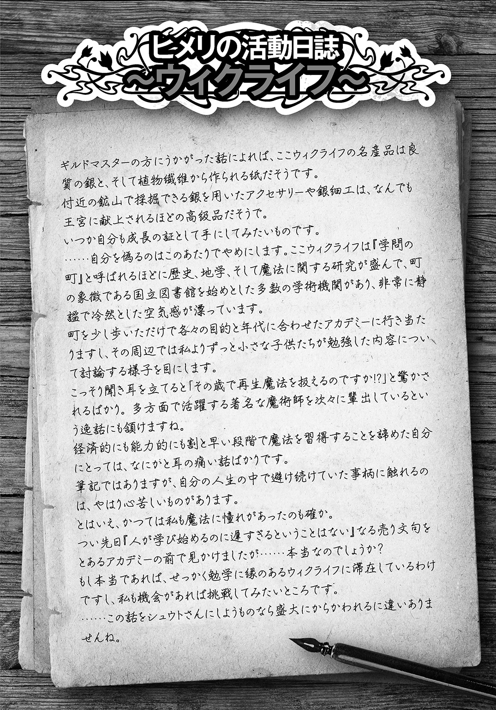
結局ネコスケはビザールに再雇用される運びになった。
ネコスケにとってもひとまずの仕事が決まったことだし、これにて一件落着。
俺の手元には報酬の書状......ざっくばらんに言ってしまえば魔術書引き換え券が残された。
しかし今から図書館に向かうにはもう遅い。
月が太陽を追い出して夜空にのさばっている。
明日だな。
......と考えたけど、前言撤回。明後日にしよう。明日は丸一日オフにして宿でゴロゴロするという、崇高な目的がある。
そんな素晴らしい一日に堅苦しい時間が混ざるのはふさわしくない。
魔術書選びは探索帰りにミミを迎えに行くついでの際でいいか。
ということで、依頼を遂行し終えた翌日、俺は昼まで寝て夜まで酒を浴びるという自堕落極まりない過ごし方をした。
もっともたまに休むからいいんであって、これが毎日となるとマジで心が腐る。
贅沢な話だが、繰り返し痛感してきたように、室内で退屈を潰そうと思ったらこの世界ではいろんな意味で寝るくらいの行為しかできない。
よって次の日からはまたツヴァイハンダーを相棒に働き始めようとしたのだが。
「......なんでお前がここにいるんだよ」
勉強をしに行くミミを見届けた後、依頼完了を報告するために立ち寄ったギルドの軒先には、妙なことにネコスケがちょこんと座っていた。
「どうもですにゃ」
愛想のいい笑みを浮かべてこっちに駆け寄ってくる。
「おいおい、ジイさんの看病はしなくていいのか？」
「にゃにゃ、ご主人様直々の命令ですにゃ。しばらくシュウトさんたちのお手伝いをしなさいと言われたのですにゃ」
「家空けてて大丈夫なのかよ」
「ちゃんと朝昼の分のごはんは作っておいたから心配ご無用ですにゃー」
話を聞く限り、ビザールは恩義に応えるためにこいつをよこしたらしい。
ネコスケはネコスケで他ならぬビザール本人がそう言うなら、との想いがあるようで。
「ミャーもご主人様の頼みは聞いてあげたいですにゃ。お願いしますにゃ」
「手伝いったってなぁ。要は探索しに行くんだぞ？ しかも森なんかより遥かにランクが上の場所に行くつもりなんだぜ、俺たちは」
なにかアピールポイントはあるのか、と聞く。
「もちろんですにゃ。ミャーはいろいろなお仕事を経験してきたから役に立てることがいっぱいありますにゃ！」
「ほう。たとえば？」
「それは見てからのお楽しみですにゃ」
思わせぶりにウィンクしてくるネコスケ。
なんてしょうもない交渉材料なんだ。
ただ、ここで追い返すのもジイさんに悪いな。厚意を無下にしたせいで無念のあまりポックリ逝ってしまうかもしれない。
それに猫の獣人ってのがどれだけ有用なのかは気になる。
スキルを隠すために他の冒険者連中とパーティーを組むことができない俺にとっては、装備の次に獣人の存在が生命線だからな。場合によっては次に買うべき奴隷の参考にもなるのでは。
うーん。
いっか。タダだし。
「じゃあ遠慮なくこき使わせてもらうぞ。それと探索中に起きたことは他に口外しないようにな」
具体的にいうと金貨のザクザク感な。
「にゃっ！ よろしくお願いしますですにゃ」
ネコスケはぺこりと頭を下げた。
「そちらの方もよろしくですにゃ」
「や、こちらこそ。先日は名乗る暇もありませんでしたので、改めて。自分はホクトと申す者であります」
「ホクトさんですかにゃ。覚えましたにゃ。ミャーのことはお好きなようにお呼びくださいにゃ」
「では主殿にならって、ネコスケ殿で。ネコスケ殿のご助力、心より感謝するであります。短い間ではありますが共に主殿を支えましょうぞ」
「にゃにゃ！ 頑張りますにゃ！」
気合いを入れながらも目を細めて、親しみを込めた笑顔をホクトに見せるネコスケ。
なぜかネコスケはホクトに懐いているし、ホクトもホクトでネコスケに対して好印象を持っているように見受けられた。
なんとなく理由は分かる。情に厚いホクトはまだ再会シーンの残像が焼きついていて、それゆえに相手の人柄を肯定的にとらえているのだろう。
ネコスケのほうは......うーむ、「こいつ面白い奴だにゃん」とかそんな感じだろうな、多分。
どちらの喋り方が変かで張り合っていた初対面の時が懐かしく思えてくる。
「だがひとつ、言っておくことがある。まあちょっとホクトの装備と自分を比べてみろよ」
親指をクイッと向けて、今まさに顔を突き合わせている最中であるホクトの出で立ちをネコスケに改めて指し示す。
堂々たる長軀を光沢のある分厚いプレートメイルが包んでいるから、見るからに物騒なことになっている。
まあ戦いはしないので厳ついのは見た目だけなんだが。
他方、ネコスケは散歩以上ピクニック未満の軽々とした服装である。
「さすがに自殺モンだぜ。もうちょいマシな服は持ってないのかよ。せめてローブとか」
「これが一番ミャーの力が発揮できる格好ですにゃ。重かったりヒラヒラしてたりすると動きにくいですにゃ」
「その気持ちは分かるけどさ」
俺も鎧とか着ようともしてないし。
でもこいつ、確か素早い身のこなしが武器だとか言ってたな。重装備だと長所が損なわれるというのは説得力がある。
とりあえず連れていくだけ連れていってみて、それから判断するか。
やばそうならホクトの後ろにでも下げておけばいいだろう。ホクトは剣の扱いこそコメディチックだが、レア素材づくしの装備品と身体能力のおかげで防御面は万全だしな。
「ですが主殿」
「なんだ？」
ホクトが口を挟んでくる。
「三人ですと自分が背負って走ることは不可能であります」
「あー」
その問題があったか。
最も稼げるスポットである遺跡まではかなり遠い。ホクトの並外れた馬力があるから今までは苦にしていなかったが、まともに歩いたら往復で八時間はかかる。
本来なら野営が推奨されるような探索地点だろう。
だが妥協案はすぐに思い浮かんだ。
日頃ロクに機能しないくせに小ずるいことだけは割とあっさり考えつくんだから、俺の脳ってやつは不思議な構造をしている。
「この前、商業区を回ってる時に買った荷車があったじゃん」
「あの小型のものでありますか？」
「そうだ。あれを使おう。乗ってる間だけ俺がカットラスを装備しておけば、もし野盗が襲ってきても水の刃で先んじて対処できるだろうしな」
長旅用の荷馬車より断然取り回しがいいし、あれなら人が乗っていても牽引できるはず。
それに俺はモヤシだしネコスケはチビだ。
二人足してもせいぜい二桁キログラムがいいとこだろうし、ということは、あの筋肉の化身じみた石像一体分に遠く及ばない。
「......余計なもんを思い出しちまったじゃねぇか」
マッチョに押し潰される悪夢にうなされそうで今夜が怖い。
それはともかく。
一旦宿に戻り、停車場に止めていた荷車を引っ張り出す。
「こんなの使い捨てだと思ってたけど......まさかこんなところで役に立つとはな」
で、荷台に乗ってみる俺とネコスケ。
サイズ的に乗れて二人だな。重量の面でもこれが引いて走れる限界だろう。
「ホクト、任せたぞ」
「了解であります！」
疲労回復を早めるブローチをホクトに渡し、いざ出発。
「おおお、凄いですにゃ！ 速いですにゃ！」
全身に風を浴びたネコスケは興奮気味の声を上げた。
もっとも、普段のホクトの走りっぷりを知っている俺からしたらそうでもない。
やはり直接背中に乗って走るよりは劣る。
あとホクトが実際に牽引してから気づいたのだが、乗り心地は最悪に近い。車輪が小石を踏みつけようものなら揺れの衝撃でケツが死ぬ。
それでもスピードは充分だ。
流れていく大草原のパノラマを楽しそうに眺めるネコスケの、ふにゃふにゃした音程の鼻歌を隣に聴きながら遺跡へとひた走る。
目的地までは二時間少々で到着した。
足場と道幅が自然に通行制限をかけているので荷車は入り口前に止めておく。
装備を戻してから雑木林を通り過ぎ、動物の頭をした石像が立ち並ぶ遺跡本殿へ。
ここは魔物が出没しないため、活動拠点に適している。
ただほっと息をつこうにも、お子様を泣かしにかかっているとしか思えない造形をした石像のせいで、まったくといっていいほどくつろげないのだが。
「作った奴の心の闇を感じるぜ。首の継ぎ目に違和感がないのがまた......」
無駄にリアリティが高い。
職人頑張りすぎだろ。
この像を見ていると精神が病んでいきそうで辟易としてくるのだが、意外なことにネコスケは気に入ったらしい。興味深そうにぺたぺたと撫でている。
「よくそんな気持ち悪いもんにじゃれつけるな。俺からしたら触るのもおっかないのに」
「そうですかにゃ？ ミャーにはなんだか惹かれるものがあるのですにゃ」
「ネコスケ殿、失礼を承知であえて申し上げますが......なかなか悪趣味でありますな」
「にゃっ!? そ、そんなことないですにゃ。ユーモアがあってかわいいじゃないですかにゃ」
「かわいいのハードル低すぎだろ。女子校生かよ」
理解できそうにない。
まあネコスケのセンス云々は今はどうでもいい。
金ヅルことオークメイジを求めて茂みの奥へ。
雑木林をのそのそと徘徊するそいつは、悪者丸出しな面のせいもあってすぐに見つかった。
向こうはまだこちらと枝葉の区別がついていない。
いつもならここで真正面から急襲をしかけ、有無を言わせずボコって終わりなのだが、今回はネコスケがいる。
「シュウトさん、シュウトさん」
「なんだ？」
「あの魔物と戦ってみていいですかにゃ？ ミャーがばっちりお手伝いできるところをお見せしたいですにゃ！」
「俺もちょうどそれを確かめたかった」
たとえば山羊の獣人であるミミは魔法の才覚に溢れているし、馬の獣人であるホクトには桁外れの脚力がある。
では猫の獣人の場合はどうか。
なにかと役に立つ、とは本人談だがどの程度のことができるのやら。
「でもさ」
「なんですかにゃ？」
「武器、そのナイフだろ？ そんなので本当に倒せるのかよ」
「ちっちっちっ。甘く見てもらっちゃ困るですにゃ。これは武器屋さんで働いていた頃に譲ってもらった一級品ですにゃ」
「はあ？ もらった？」
指を振ってドヤるネコスケにそう尋ね直すと、ますます得意げな顔を作られる。
「勤務態度がいいから、ってナイフを新調してくれたのですにゃ」
ボーナスみたいなもんか。
しかし、仕事の絡みで上物をよこすとは。俺がスーパーでバイトしていたころはせいぜい売れ残りのナマスとキンピラくらいしか回ってこなかったというのに。
「それを更に鍛冶屋さんにいた時に鍛え直して......」
「そんなことまでしてたのかよ」
「にゃ。トンカチの使い方も教わりましたにゃ」
こいつ本当になんでもやってんな。
ジイさんの飯を準備してきた、っていうくらいだから家事全般も当然こなせるだろうし。
「武器がナマクラじゃないのは分かった。けどヤバそうならさっさと逃げろよ。森の雑魚よりは手強いぜ、あいつ」
「肝に銘じておきますにゃ」
ネコスケは胸に両手を当てるジェスチャーをしながら答えた。
「それにしても、むむむ、おっきな魔物ですにゃ」
ホクトの背中越しに、目を凝らして観察するネコスケ。
カラスの濡れ羽めいた色味の瞳がぎゅっと集束して縦長になっている。
「でかいだけじゃねぇぞ。あんなアホっぽい見た目をしておきながらいっちょまえに魔法を使ってきやがるからな」
「なるほど、把握しましたにゃ。大きいということは小回りが利かず、魔法を使うということは攻撃までの間が長いと見てよいですかにゃ」
「まあそんなとこだな」
「ふっ、つまりミャーの実力を見せるにはもってこいの相手ということですかにゃ」
キザな台詞を恥ずかしげもなく口にしたネコスケは、小兵である自分より縦・横・厚みのすべてで圧倒的に上回るオークメイジ相手にしてなお、
「いきますにゃ！」
露ほども怯むことなく駆け出した。
――軽快に疾走しているにもかかわらず、足音は皆無。
ゆえに魔物がネコスケの接近に勘づくまでには多大なタイムラグが生じた。
自らに迫り来る何者かの存在を魔物が認識した時には既に、ネコスケは目と鼻の先にまで急接近している。
杖をかざすにはあまりにも遅く、
「にゃっ！」
魔法を唱え終わる前にネコスケは最初の一太刀を入れた。
鈍色のナイフが血に染まる。
しかし、いくら接近戦になると途端にサンドバッグと化すオークメイジといえど、その一撃でくたばるはずもない。
なりふり構わず、杖をただの鈍器として振り回した。
それすらも猫のナイフ使いには当たらない。ネコスケはいつの間にやら後ろにぴょいんと跳躍していて、リーチ外に逃げている。
杖が空振った瞬間を見極めてネコスケは再度近接。
でっぷりとした腹を切り裂く。
そして素早くバックステップを踏む。ネコスケは常に動き回っていた。とらえどころがない、とはこのことを差すのだろうか。
回避からの攻撃。わずか一分足らずの間に、その一連の流れが九度繰り返された。
九度、オークメイジは浅くない傷を負った。
息絶えさすにはそれで充分だったらしい。
万が一に備えてフォローに回っていた俺が手を出すまでもなく、巨体は煙となって散らされた。
「ま、マジかよ」
鮮やかな速攻に俺は度肝を抜かされる。
一人だけで倒し切るとは、予想どころか期待さえも超えていた。
「......ってか、どこでそれだけの技術を身につけたんだよ」
そのへんの冒険者より戦えるように見えたんだが。
「自分も気になるであります」
同調するホクト。
「あれほどの体さばき、一朝一夕で身につくものとは」
「森で特訓しましたにゃ。輸送時の護衛を任されても大丈夫なようにしておけば、お仕事に就きやすくなれるからですにゃ」
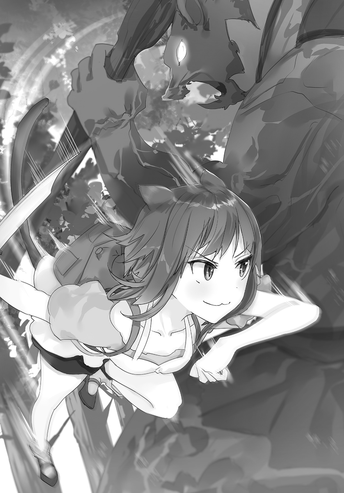
「はあ、そういうもんなのか」
「ですにゃ」
さながら資格勉強である。
手に職つけてんな、こいつ。
「ところでシュウトさん」
「どうした......とか聞き返すまでもねぇか。この金貨のことだろ？」
「にゃん」
オークメイジが消え去った後に残された異常な量の金貨を目にして、ネコスケは頭にハテナマークを浮かべている。
どうやら幸運の女神様はしっかりとネコスケを俺のパーティーメンバーだと認識しているらしく、俺が直に手を下したわけでもないのに撃破報酬は跳ね上がってくれていた。
俺自身が戦闘から離脱しさえしなければ、スキルは有効ってことらしい。
「まあなんというか、俺の宿命みたいなもんだ。誰にも話すなよ」
「むむ、なにやら事情がありそうですにゃ......ふっ、ミャーは口が固いことで信頼を勝ち得てきたのですにゃ。お任せくださいにゃ」
「さっき普通にナイフもらったとか話してたじゃん。あれ店側はどういう計上になってんだよ」
「本当に言っちゃダメなことは言わないのですにゃ！」
まあ大丈夫か。こいつの筋から信憑性を含んで冒険者に話が伝わることはないだろうし。
その後もネコスケは次々に魔物を撃破していった。
ネコスケのオークメイジ討伐は実にスムーズで、危機に陥りそうな瞬間すらなかった。魔法が放たれたところで巧みに回避できるだけの瞬発力があるし、そもそも、唱えるより先に近づいているパターンがほとんど。伝家の宝刀を抜かせさえしない。
一発ツヴァイハンダーを叩きこめばそれで終わりの俺よりは時間をかけているが、それでも充分な働きぶりだ。
うーむ、見ていて気づいたが、これに関してはネコスケの戦闘力どうこう以前に相性がよすぎるってのもあるな。
事実、機敏さでさほど差をつけられないトカゲサウルス戦は苦手にしていた。もっともそっちは俺の土の槍で一撃なので特に問題はない。
純粋に戦闘要員が倍になったようなものなので、稼ぎの効率は大きく向上。
移動時間の増加を帳消しにして余りある戦果が上がっていた。
「お見事！ まさしく疾風迅雷のごとくでありますな！」
ホクトも舌を巻いている。
ただ素直に賞賛を贈りながらも、表情はどこか悔しそうにも見えた。幾度となくホクトがこういう複雑な顔をするところを見てきたから分かるが、自分は戦えない、という事実を改めて思い知らされて、歯がゆさを感じているのだろう。
別にいいじゃんって思うけどな、俺は。
逆に俺やネコスケでは荷台に人乗せて走るとか絶対無理なんだし。
......ただここで、俺にとある考えが浮かぶ。
これ、猫の獣人とか関係なく単純にネコスケが凄いだけじゃねーか？
音もなくオークメイジに忍び寄れるのは、確かに種族特有の能力のおかげなんだろうが、ナイフの扱いや武器の手配なんかはネコスケ自身の豊富な職業体験からきてるものだろ。
極めつけはトカゲの尻尾がネコスケの腹をかすめた時。
回避自体はネコスケの優れた運動神経もあって特に危うげなく成功したのだが。
「にゃっ!?」
尾の先端に服の一部分を破かれた。
ネコスケのちんまりとしたヘソが露になる。
もうちょい上のほうが破れてくれりゃ小さいなりに下乳までは拝めたのに、と俺はくだらないことを考えながらトカゲを処理したのだが、驚いたのはその後。
「リペア！」
金貨を拾い上げる俺の真ん前でネコスケがそう高らかに宣言すると、みるみるうちに衣服のほつれは修繕された。
何回もこうした現象は目撃してきたから分かる。
今、完全に魔法使ったんですけど。
「おいおいおい、さすがにそこまでは想定してなかったんだけど」
「さっきの魔法のことですかにゃ？ 魔法屋さんに雇ってもらってた時に身につけたのですにゃ。あれは苦労しましたにゃ......閉店後に居残りで勉強しましたにゃ」
なんでも簡単な店頭業務をこなすためにヒールなどの初級再生魔法を覚えさせられたらしいが、こいつの履歴書は一体どうなってんだ。
職歴どころか特技欄まで溢れかえってそうだな。
俺は毎回定番の「どこでも寝られる」で埋めていたというのに。
「リペアが使えるようになるまでは大変でしたにゃ。服はこれ一着しかないから、破れたら自分でちくちく縫っていましたにゃ......」
「縫い物までできるのか」
「裁縫工房で働いていた時に覚えましたにゃ！」
ネコスケは右手をぴっと上げてアピールした。
過去の経歴とそれに基づく技能が明らかになるたびに、ううむ、と唸らされる俺。
「いろいろな仕事を渡り歩いてきたとは聞いたが......これほどとは」
過去のバイト経験をまったく活かしてこなかった俺だからこそ分かる。
こいつはマジで有能だ。
ネコスケの協力もあり、結局この日の稼ぎは八〇万Ｇにまで上った。
八〇万。
八〇万である。とんでもない巨額だ。ネコスケが同行し続けてくれるのであれば、この土地での収入だけで一〇〇〇万超えも夢ではない。
といっても、ここにいて面白い物事は何もないからな。
魔術書譲渡の権利も獲得したことだし、頃合を見て次の町に移るとするか。
帰還後、ネコスケと別れる。
「本日のご助力、心より感謝いたすであります！ 自分の不甲斐なさを痛感したであります。もっと自分も精進せねば」
「にゃにゃっ。こちらこそありがとですにゃ。荷車に乗って走るだなんて初めての経験でしたにゃー」
俺の分までホクトがネコスケの労をねぎらっている。
ネコスケは薬を購入してからビザールのところに戻るらしい。
ただ、何年も自宅療養が続いているとの話だから、今更薬でどうこうなるような病気ではなさそうにも思える。
それこそ気力で補うしかないのでは。
「また次の機会がありましたら、その時はよろしくお願いしますにゃ」
ぶんぶんと手を振りながら遠ざかっていくネコスケを見送る。
それから俺は首の骨をコキリと鳴らした。
「......さてと」
図書館に向かうか。
ホクトと共に訪れた王立図書館は、夕刻ということもあってか利用者はまばらだった。
入館希望者はピーク時に比べてめっきり減ってしまっているにもかかわらず、エントランスの受付嬢は気を緩める様子を一切見せないでいた。
プロ意識の高さを感じる。
「......っても、顔パスくらいはいい加減させてくれよ」
「特例はありません。審査は厳密に下させていただきます。......さ、終わりましたよ。蔵書室への入室を許可します。よき読書を」
返ってきた通行証を受け取りながら。
「実はこれで終わりじゃないんだな。まだ見せたいものがあってさ」
ごそごそとコートの内側から書状を取り出し、ジイさんに言われたとおりに呈示する。
「これは......司書様の!?」
書面に記されているビザールのサインを目にした途端、それまでクールに徹していた受付嬢の表情がわずかに揺らいだ......ような気がした。
そりゃまあ、驚くわな。
長い間休んでいた正式な司書から突然指示が飛んできたんだから。
筆跡の鑑定がなされる。
もちろん本人のもので間違いない。俺自身の目で直接確認しているのに、これで偽物だったら白昼夢でも見てたのかって話になる。
「ジイさん......あー、いや、司書の人とちょっと縁が出来てね、土産にこの紙をもらったんだ。こいつを出せば本が一冊もらえるって聞いたんだけど」
「た、確かにそうした効力はあります。この書状は図書館からいずこかに蔵書が譲与される場合に切られるものですから......ですが......」
受付嬢はなぜか言葉を濁している。
「ん？ なんか引っかかることでもあるのか？」
「......いえ、なんでもありません」
そう言うと受付嬢は軽くかぶりをふり、若干動揺の色が滲んでいた表情をぴしっと引き締めた。あやふやだった受け答えもこれまでみたいにハキハキとした......もっと言うと、ちょっとキツめの利口ぶった話し方に戻っている。
俺の苦手なタイプの口調なのに妙に安心する。
やはりキャラに合ってるからだろう。この知性と品のある外見で喋りがべらんめえ口調の江戸っ子だったらいろいろと不安になる。
「お話は分かりました。あなたを図書引き取りの権利保有者として承認します。当館の全責任を有する司書様の判断なのですから、我々はそれに従うまでです」
すげー強権発動してるな。
ビザールのジイさんってマジで偉い人だったのか。
「希望の書籍が見つかり次第こちらまでお持ちください。受け渡しの手続きを行います」
「分かった。しばらくの間選ばせてもらうぜ」
取っ手を握り、蔵書室の鉄扉を開く。
澱んでいた空気がその隙間からいっぺんに流れ出ていった。そのほんの些細な気流にさえ呑まれそうになるんだから、どれだけここに苦手意識があるんだよ、俺って奴は。
ただ隣を見るとホクトも似たような緊迫した顔つきになっていた。肩肘もカチコチである。
なぜだろう、無性に胸を撫で下ろしたくなる。
それはともかくとして、まずはミミと合流。
三人で以前パウロに教えてもらっていた希少な魔術書の置き場に急行する。
適当に一冊抜き取ってみたのだが、力の入った表紙の装丁からしてそんじょそこらの市販品とは風格が違う。
「『地と天を繫ぐためのグリモワール』か」
おもむろにページを開く。
埃とカビと油ジミの混じった、すえた臭いが漂う。
軽く目を通す。
......よし。
分からん。
「これは無理ですわ」
なんの基礎知識もない俺が専門分野中の専門分野である文献の内容を読み取ろうという行為自体が無謀だった。
ここはミミに任せるとしよう。
ただミミも自分で選んだ本――『占砂術のグリモワール』とタイトルに書かれていた――を何ページか読み進めたところで、くらくらと気を失いそうに上半身を傾けた。
慌てて肩を支える俺。
「大丈夫かよ。そんなにややこしかったのか？」
「とても、とてもとても難しいです......頭が破裂してしまいそうです」
「うーん、勉強してるミミでも難しいのか」
「読むことはなんとかできますが、理解するまではたくさん時間がかかりそうです......すみません、シュウト様」
「ま、時間はいくらでもあるけどな」
なにせ一冊丸々もらえるんだから。
「......でも難しいって言ってる割に熱中して読んでるな」
「はい。とても難解ではありますけど、その分だけ興味をそそられます。それになんだか魔法の性質もユニークですね。今まで読んできた魔術書とは全然違います」
「へえ、そうなのか」
正直、普通の魔術書がどんな具合なのかも分からないので俺には比較しようがない。
けれどミミが言うからにはそうなのだろう。
「載っている魔法の種類もあまり多くないように思います。凄く専門的な本ですね。ミミはなんだかドキドキします」
「だったら全部に目を通してみてから決めるか。明日からはここに置いてある本を順番に閲覧してみてくれ。そんでミミが一番気に入ったのを受け取ろう」
「分かりました、やってみます」
となると、今日のところは一旦引き上げだな。
ミミが魔術書を選び終わったら出発するか。それまではひたすら金稼ぎ。分かりやすい滞在スケジュールができたと考えておこう。
そう決めて退室しようとしたら、書棚間の通路でパウロとすれ違った。
本日はどうしましたか、と尋ねられる。
「ちょっと魔術書の試し読みをな。レアなやつ」
「ああ、そうだったのですか。どうです、非常に難解だったでしょう？」
「まあな」
といっても読んだのは俺じゃないが。
「もしかしてだけど、パウロは使えたりはするのか？」
「まさか。恥ずかしながら、私は魔法はそれほど得意ではありませんから。通っていたアカデミーにも私より優秀な方はゴマンといましたしね」
だからデスクワーク中心の図書館に勤めているのですよ、とパウロは語る。
「上級に属する魔法というものは、独自性が高いですからね......過去の知識を活かしたりはできませんから習熟には多大な労苦がつきまといます」
「ふーん。単純に効果が凄くなっただけだと思ったぜ」
「効果だけなら中級魔法でも十分に強力ですよ。あれらを自在に扱えることができれば魔術師としてはほぼ完成形といっても過言ではないです」
確かに武器屋の店主もそんな感じのことを語っていたな。
その時はただの売り文句くらいに思っていたが、どうやら。
「上級魔法は他にない効果を持ちます。中には一見して役に立たないのでは......と感じるものもあるのですが、いざ使用するとなると他に類を見ないがゆえに甚だ困難だったりするのです」
「変な話だな。しょぼいのに難しいのか」
「例えば......そうですね、こちらを御覧ください」
パウロは無作為に本を一冊棚から取り出す。
「この書物を十秒で消失させる手段については、考えるまでもないですよね。単純明快に火をつければいいだけなのですから。ですが、百年かけて焼却する......となればどうでしょうか？ 並大抵の火では到底不可能でしょう」
「ふむ、それを可能にする火にあたるのが上級魔法なわけだな」
「そういうことです」
なるほどな。
そりゃムズい。
「それより、先日の石版の件についてなのですが」
パウロが切り出す。
「あれか。ちゃんと石版の下に地下室があったぜ。休憩所なのかまでは分からねぇけど」
「おお、やはりですか。あれから考察を重ねてみたのですが、冒険者ギルドが設置したものなのではないかと私は推測しています。きこりだけの技術では半信半疑でしたがギルド単位となれば話は別。森の地理に精通しているきこりからの転向組を重用したい、という考えが、当時まだ地形把握の不十分だったギルドの面々にもあったのでしょう」
「......いや、もういいよ。その件は片付いたし」
話なげーよ。
「探してた野良猫が見つかったからそれで終わりだ」
「野良猫ですか？ それに探していたとは」
「ビザールのジイさんに頼まれてな。死ぬ前にどうしてもそいつに会いたいってさ」
「お待ちください。ビザールとは当館の司書であられるビザール様のことですか？」
「ああ」
「そうですか、それは......おいたわしい」
パウロは下唇を嚙んでうつむくと、思い詰めたような面持ちでじっと床の一点を見つめた。
そういう辛気くさい演出はやめろっての。
「俺が見た感じだと結構元気だったぜ。ありゃ意外と長生きして天寿をまっとうするだろうな。だからそんなに深刻に考えるなよ」
俺はそう声をかけて図書館から去ろうとする。
......と、危ねぇ、忘れるところだった。本の引き取り手続きはしばらく保留にしてくれって伝えておかないと。
そう思い、受付カウンターまで行ってみたのだが。
「おいおい、なんでまた......どうしたっていうんだよ」
受付嬢は瞼を腫らしていた。
涙の跡がくっきりと残っている。今しがたまで泣いていたらしい。
意味が分からなかった。いつどこで泣くほどのことがあったんだ？
あったとしてもそれは涙を堪えきれないほどなんだろうか。あんなインテリジェンスの権化みたいな冷淡な面をしてたっていうのに。
「なにがあったんだ？」
「ぐすっ。すみません、お見苦しいところを......この、書状は」
洟をすすりながら答える受付嬢。
知的さは面影すらない。怯える子供みたいな弱々しい表情をしていた。
「この書状は本来、学術機関や他の町の図書館などに本を贈呈する際に切られるものです。......その決定権は司書様にあります」
ですが、と声を一層震わせて続ける。
「個人への譲渡は明確な規約違反......遵守を義務付けられた鉄則に背く行為です。つまり、それは......司書様が、司書様が......強制解雇されることを意味します」
あ と が き
このたびは『すまん、資金ブーストよりチートなスキル持ってる奴おる？』の二巻を手に取っていただき、誠にありがとうございます。
書いた人のえきさいたーです。
なおこの書き出し部分は一巻のあとがきのコピペです。
早い段階で楽屋オチに持っていっていることで薄々お気づきかと思いますが、このスペースで書きたいことは前回で概ね書いてしまったので正直あまり喋ることがないです。
なのでこのまま楽屋トーク中心で進めていこうかと思います。よしなに。
さて一巻のあとがきといえば「またお会いしましょう」みたいな感じで締めくくった覚えがありますが、こうして無事に二巻を送り届けることができて心底ほっとしています。
これで続きを出せなかったら稀代の詐欺師になるところでした。
詐欺といえばこの作品、裏表紙に「ロードムービー風」と銘打っているのに一巻時点では全然旅に出ておらず「おいおい、あらすじ詐欺か～？」とツッコミどころを残していたのですが、この巻からはちゃんと様々な町を巡っているので看板の偽りを外せたかと思います。
ダッシュエックス文庫様から書籍化の打診があったのも、ちょうど今作に収録されているエピソードを「なろう」で執筆している頃だったと記憶しています。
なので出版用に原稿をまとめ直している時はいろいろと感慨深いものがありました。
そのあたりの事情を抜きにしても、この巻には思い入れのある話が詰まっています。
特にリクやガードナー、あと登場はしているものの名前は明かされていない某人物など、訪れた土地土地で主人公と関わるローカルキャラはどれもお気に入りで、まあ見事に野郎ばっかりなのですが、それを差し引いてもお気に入りなのです。
物語の華となるキャラクターが主人公周辺に偏っている分、脇役の男率が凄いことになっているわけですけども、それゆえに愛着が生まれるのかもしれません。
惜しむらくは物語の形式上使い捨てになりがちなことですが。
ただ『華』といいつつこの巻で新しく登場した女の子は相当少ないです。
「なろう」で書き始めた時からおそらく最終的にチーレムになるであろうことを予想して〝そのうち〟〝ハーレム〟という曖昧なタグを付けているのですが、物凄くスローペース。
これに関しては自分自身がどうしても一人のキャラクターを掘り下げたくなる性格なので仕方のないところです。シュウトくん、すまぬ。
で、ここからちょっとだけ真面目な話題。
ネタバレになりそうなのであえて楽屋トークに終始してはぐらかしていた話題でもあります。
最後まで読んでくださった方はお分かりかと思いますが、実はこの巻では三番目の町のエピソードだけ完結していません。「え？ ここで終わり？」とか「最後のほうにちょろっと出てきた獣人誰やねん」といった消化しきれていないテーマがいくつかありますが......。
そうした疑問点の数々は、また次に皆様とお会いできる頃には明らかになっているかと思います。
ではでは。
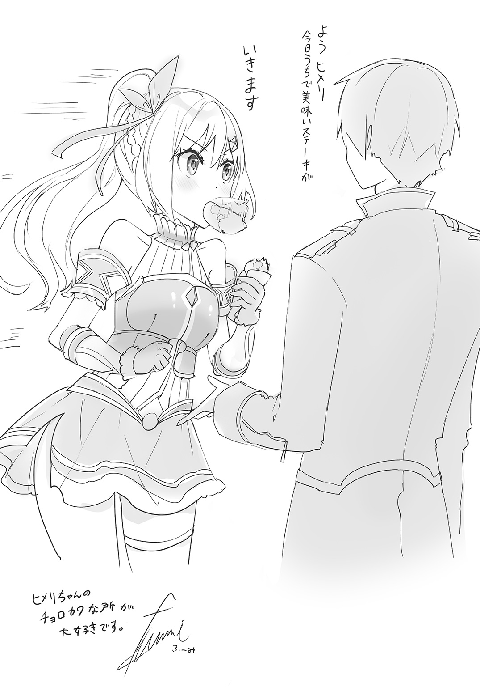
著者紹介
えきさいたー
ここだけの話、ＰＮの由来は適当です。
同名義で「小説家になろう」にて活動中。
illustration
ふーみ
最近手がかじかんで困っています。暖房をつけても先に顔が熱くなってしまうので、手だけ温まる方法はないものか......。
ダッシュエックス文庫DIGITAL
すまん、資金ブーストよりチートなスキル持ってる奴おる？ ２
著者 えきさいたー
© EXCITER 2017
２０１７年３月31日発行
この電子書籍は、ダッシュエックス文庫「すまん、資金ブーストよりチートなスキル持ってる奴おる？ ２」
２０１７年２月28日発行の第１刷を底本としています。
発行者 鈴木晴彦
発行所 株式会社 集英社
〒１０１－８０５０
東京都千代田区一ツ橋２丁目５番10号
０３－３２３０－６０８０（読者係）
制作所 株式会社ＩＣＥ
本作品の全部また一部を無断で複製、転載、改竄、インターネット上に掲載すること、および有償無償に関わらず、本データを第三者に譲渡することを禁じます。なお個人利用の目的であっても、コピーガードを解除しての複製は、法律で禁じられています。